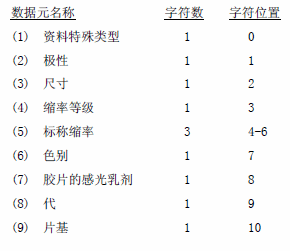
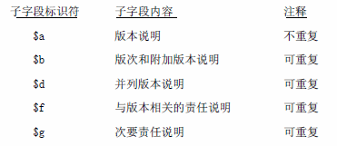
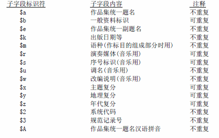

- 控制字段
- 号码和代码
- 主要款目标目
- 题名和题名相关
- 版本、出版说明等
- 载体形态等
- 从编说明
- 附注字段
- 主题检索
- 附加款目
- 连接款目
- 从编附加款目
- 馆藏、交替图形文字等
001 记录标识号：本字段包含与记录惟一相关的标识符号，即编制本书目机构分配给本记录的控制号。 对所有在编文献，本字段均为必备，不可重复。 指示符：遵照GB/T 2901（ISO 2709），本字段无指示符。 子字段：遵照GB/T 2901（ISO 2709），本字段不设指示符。 字段内容注释：本字段数据可以由用户自行定义。以下内容是中国国家图书馆采用的，长度为10个字符位。 相关字段：编目机构可以使用其他标识号，诸如国际标准书号、国家书目号作为记录标识号，但同时仍然要把它们记入到规定的字段。 示例：例1： 005 记录处理时间标识：本字段包含与记录惟一相关的标识符号，即编制本书目机构分配给本记录的控制号。 对所有在编文献，本字段均为必备，不可重复。 指示符：遵照ISO 2709，本字段无指示符。 子字段：遵照ISO 2709，本字段不设指示符。 字段内容注释：日期以I S O 2 0 1 4标准形式记载： Y Y Y Y M M D D。Y Y Y Y表示年， M M表示月， DD表示日。 时间以H HM MS S.T形式记载， H H表示小时， M M表示分钟， S S表示秒， T表示 1／10秒。 各项数据均右对齐，不足时左边空位填0(零)。 示例：例： 010 国际标准书号：本字段包含国际标准书号及其限定字样。当记录含有多个ISBN时，该限定字样可 将其区分开。本字段对应ISBD的标准书号和获得方式。即使没有ISBN，本字段也可包 含获得方式和／或定价。 本字段选择使用，当有多个有效的ISBN数据时，可重复。 指示符：指示符1：未定义， 填空格。 子字段：子字段注释：
$a ISBN
包含连接符“ -”的正确使用的ISBN。ISBN由各个国家指定的机构分配。本
子字段不重复。 示例：例1 011 国际标准连续出版物号：本字段包含由ISDS(国际连续出版物数据系统)分配的ISSN(包括已分配和已取 消的)，获得方式和／或价格。它与ISBD(S)的标准号和获得方式项相对应，但识别题名 记入530字段。 本字段选择使用，当记录含有多个ISSN时，可重复。 指示符：指示符1：未定义， 填空格。 子字段：子字段：
$a ISSN 示例：例1 014 论文标识号：本字段包含一个分配给期刊论文的唯一的、没有二义性的代码。 本字段选择使用，可重复。 指示符：指示符1：未定义，填空格。 指示符2：未定义，填空格。 子字段：子字段说明：$a 论文标识号。不重复。 $z 错误的论文标识号。可重复。 $2 系统代码。不重复。 本子字段包含一个论文标识编制系统代码，其论文标识号就是按该系统构造的。对中 国的论文标识，建议采用ISO 9115。不可重复。 示例：014 ##$a0024-2519／91／6103-0003$01.00$2sici 020 国家书目号：本字段包含由国家书目机构对每条书目记录分配的国家书目号码，以及该机构的国 家代码。 本字段选择使用，可重复。 指示符：指示符1：未定义，填空格。 指示符2：未定义，填空格。 子字段：子字段说明：$a 国家代码 国家书目机构的国家标识(例1-3)。不可重复。 $b 国家书目号 由国家书目机构分配的号码(例1-3)。不可重复。 $z 错误的国家书目号 错误的号码(例2)。可重复。 示例：例1 020 $aCN＄b85003204 这是一个中国国家书目号。 例2 020 $aCA$bCM73-6722XF 020 $aCA$zCM78-6722XF 一个正确的和一个错误的加拿大国家书目号。 例3 020 $aDD$b83，A16，0553 020 $aDD$b82，N46，0092 第一个是在版编目时德国国家书目机构分配的号码，第二个是正式编目 时分配的号码。两个德国国家书目号。 021 版权登记号：本字段包含由国家版权机构分配给作品的号码。 本字段选择使用，可重复。 指示符：指示符1：未定义，填空格。 指示符2：未定义，填空格。 子字段：子字段说明：$a国家代码 分配该号码的版权机构的国家标识。不可重复。 $b 版权登记号 由国家版权机构分配的号码。不可重复。 $z 错误的版权登记号 错误分配的号码。可重复。 022 政府出版物号：本字段包含由政府机构分配给政府出版物或以政府名义出版的出版物号码。 本字段选择使用，可重复。 指示符：指示符1：未定义，填空格。 指示符2：未定义，填空格。 子字段：子字段说明：$a 国家代码 出版该文献的国家代码。不可重复。 $b 政府出版物号 政府机构分配的号码。不可重复。 $z 错误的政府出版物号 错分的政府出版物号码。可重复。 示例：例1 022 $aZA$bRP64／77 例2 022 $aUSSbHE17.302W58／91 040 CODEN(连续出版物)：本字段包含由国际CODEN组织分配给连续出版物题名的一种唯一的没有二义性的 代码。 本字段选择使用。可重复。 指示符：指示符1：未定义，填空格。 指示符2：未定义，填空格。 子字段：子字段说明：$a CODEN 六位字符代码，最后一位是字母数字位。不可重复。 $z 错误的CODEN 错误的CODEN。可重复。 内容字段注释CODEN是由国际CODEN机构分配给科技连续出版物题名的具有唯一性的六位字 符代码。 前五个字符是字母，并且以题名为基础产生 最后一位是校验位。如JACSAT是 Journal of the American Chemical Society的CODEN，最后一位T是校验位。 示例：例1 040 $aANPYA2 是Annalen der Physik的CODEN。 例2 040 $aJPHYA7 是Journal of Physiology的CODEN。 071 出版者作品号 (录音和音乐)：本字段包含出版者赋予作品的编号，用于录音和音乐出版物。 本字段选择使用，可重复。 指示符：指示符1：出版者作品号的类型 该指示符说明本字段所包含的出版者作品号的类型。如果要用本字段产生附注，也可由它生成导词(例2)。 0 出版发行号 1 版型号 2 印版号 3 其它出版者作品号(印刷乐谱) 指示符2：附注指示符 该指示符说明提供记录的机构是否使用本字段的数据生成附注。如无需生成附注(或许是因为该机构已在300或301字段中作了详细说明(例 2))，则本位置为0。 0 不作附注 1 作附注 子字段：子字段说明：$a 出版者作品号 出版发行机构分配给作品的号码。本子字段不可重复。 $b 来源 分配该号的机构。本子字段不可重复。 内容字段注释出版发行号(或标签号)是用于识别发行标识或序列标志的号码，该号由出版者给出。如：某种录音资料的编号、某种录音资料封装的边角上 所贴号码、演出节目的录音资料号、或以整套发行的一组录音资料的编号等。出版发行号通常出现在标签上，也常出现在这些录音资料的封 装上。就整套录音资料而言，出版发行号可能标示于每张唱片上，同时又在封装上有一个附加的套号。 版型号用于识别压制出的某种录音资料的主盘、通常刻制在腊盘上，用以标识缺少出版发行号或标签号的录音资料。 印版号是出版者给予音乐出版物的序列号，通常印在音乐出版物每页的底部，有时也出现在题名页上。 其他出版者作品号类似于印版号，但是并不在音乐出版物的每页上出现。它们可以出现在音乐出版物的题名页上、封面上、和／或第一页上。 示例：例1 071 01$aSTMA 8007$bTamla Motown 一种录音资料的出版发行标志，出版者为Tamla Motown。生成的附注 如下： Tamla Motown:STMA 8007 例2 071 21$aA 880 V$bArs Viva Verlag 印刷乐谱的一个印版号，生成的附注如下： pl.no.:A 880 V 091 统一书刊号：本字段包含我国出版部门为书刊分配的统一号码。 本字段选择使用，可重复。 指示符：指示符1：未定义，填空格。 指示符2：未定义，填空格。 子字段：子字段说明：$a 统一书刊号 由国家出版部门分配的号码，不可重复。 $b 限定。不可重复。 $d 定价。可重复。 $z 错误的统一书刊号 错误的号码。可重复。 示例：例1 091 $a3009.236$d 3.65 例2 091 $a11-2598 092 邮发代号：本字段包含我国书刊发行部门分配的邮发代号。 本字段选择使用，可重复。 指示符：指示符1：未定义，填空格。 指示符2：未定义，填空格。 子字段：子字段说明：$a 国家代码 分配该号码机构的国家标识。不可重复。 $b 国内邮发代号 由国家发行部门分配的向国内发行的征订号码。不可重复。 $c 国外邮发代号 由国家发行部门分配的向国外发行的征订号码。不可重复。 $z 错误邮发代号 分配错误的邮发代号。可重复 示例：例1 092 $aCN$b26-28$cBM664 例2 092 $aCN$b社252增-127 094 标准号：本字段包含中国国家标准主管部门分配给有关国家标准、行业标准出版物的号码。 本字段选择使用，可重复。 指示符：指示符1：未定义，填空格。 指示符2：未定义，填空格。 子字段：子字段说明：$a 国家代码 分配该号码机构的国家的标识。不可重复。 $b 标准号 由国家标准主管部门分配的号码。不可重复。 $z 错误的标准号 错误分配的号码。可重复。 示例：例1 094 $aCN$bGB 4894-85 |
|
100通用处理数据：本字段包含用于记录任何媒体资料的固定长代码数据。本字段为必备字段，不可重 复。 指示符：指示符1：未定义，空格。 指示符2：未定义，空格。 子字段：$a通用处理数据 该子字段中记载的全部数据是由字符位置标识的，字符位数从0-35记数。所定义的字符位置必须呈现在该子字段中。该子字段不可重复。 $a子字段各固定长度数据元素表 字段内容注释：(1)记录生成时间(字符位置0-7) 以八位数字按国际标准( I S O 2 0 1 4 ) 的标准形式表达入档时间： Y Y Y Y M M D D 。YYYY为年，MM为月，DD为日，若有空位 补“0”。该时间通常是书目记录生成并转换为机读形式的时间，可使人们对记录生成的期限有所了解。由于键入或编辑的错误而修正记 录时，该时间将不改动。在交换时，该记录将永远保持其原始时间。 (2)-(4)出版时间类型、出版年1、出版年2(字符位置8-16) 用一位字符代码标示出版物的出版时间类型，它是考虑到出版物有十种类型的出版状态而拟定的。该代码定义的出版年1和出版年2都是 四位字符的年标识。 a=现仍出版的连续出版物 出版年1包含起始出版年或不同于出版年的创刊年。如果起始年不确定，则任一位未知的数字均可用空格代替。 出版年2填9999。 b=已停刊的连续出版物 出版年1包含起始出版年或不同于出版年的创刊年。如果起始年不确定，则任一位未知的数字均可用空格代替。 出版年2包含停刊年。对已知停刊刊物，但最后停刊时间不确定，则任一位未知的数字均可用空格代替。 c=刊行状态不明的连续出版物 不知是否继续出版或停刊的连续出版物。 出版年1包含起始出版年或不同于出版年的创刊年。如果起始年不确定，则任一位未知的数字均可用空格代替。 出版年2填四个空格。 d=一次或一年内出全的专著 以一卷出版或以多卷在同一出版时间、出版期限内出全的专著。如果出版时间不确定，则选用代码“f”。如果出版时间超过一个跨度，则选 用代码“g”。 出版年1填写出版年。 出版年2填空格。 e=复制本(重印本、影印本、再版本、摹抄本和拓本) 所编的出版物是重印本、影印本、再版本及摹抄本和拓本，但不是新版本。如复制本为连续出版物，则采用复制和出版的起始年。 出版年1填写复制本的出版年或起始年。 出版年2填原著的出版年或起始年。 出版年不确定时，则任一位未知的数字可用空格代替。 f=出版年不确定的专著 出版年1填写推测的最早出版年。 出版年2填写推测的最晚出版年。 这两项数据不允许使用空格。 g=连续出版超过一年的专著 出版年1填写其起始出版年，起始年不确定，则任一位未知的数字可用空格代替。 出版年2填最后的出版年。若仍在出版，则填9999。如果最后出版年不确定时，则任一位未知的数字可用空格代替。 h=具有实际出版时间和版权／特许时间的专著 出版物上标出的出版时间与版权／特许时间不同或者出版时间不详。所谓“特许”，是指由政府部门授予作者或书商的超过一个固定期限的 版本专卖权。 出版年1填写出版年，如不详，填空格。 出版年2填版权／特许年。 i=具有发表／发行日期和制作日期的专著 用于具有制作(录制)与销售、发行日期之间有一段间隔的影片和音像制品。 出版年1填写其发表、发行年。 出版年2填制作年。 j=具有详细出版时间的专著 用于需重点记载出版月份(及日期)。 出版年1填写出版年。 出版年2填详细的出版日期，形式为“MMDD”，右对齐，空格用“0”填补。如果该日期不使用，则全填空格。 (5)阅读对象代码(字符位置17-19) 三位字母代码，依主次从左至右顺序填写，不用的位填空格。 a=青少年，一般性(当b、c、d或e未使用或不适用时) b=学龄前儿童(O--5岁) c=学龄儿童(5--10岁) d=少年儿童(9--14岁) e=青年(14--20岁) k=成人、学术性 m=成人、通用性 u=不详 (6)政府出版物代码(字符位置20) 一位字母代码标示该记录的实体是否为政府出版物及发行该出版物的政府等级。政府出版物系指由政府机构颁行或拨款出版的文献。科研院 所、学术团体不属于政府机构。 a=中央(国家、联邦)级 b=省、直辖市、自治区、州 c=县、省辖市 d=市、乡、镇 e=中央级以下行政机构联合出版物 f=国际机构 g=流亡政府 h=级别不详 u=无法确定是否为政府出版物 y=非政府出版物 z=其它政府级别 (7)记录变更代码(必备)(字符位置 21) 以一位字符代码表示现有字符集是否充分满足录制出版物文字数据的需求。由于计算机配置的代码字符集的局限，为了适应特殊文字(如按 字音译)或特殊的数学公式、希腊字母以及超出文本的手写符号处理，录入数据时不得不对原有字符作必要的变更。如果不变更，若题名页 含有字符集没有的符号或图形时，则题名的数据就无法录入。 0=记录无变更 1=记录有变更。 (8)编目语种(必备)(字符位置 22-24) 三位字符代码，表示编目使用的语种，语种代码表见附录。如果源记录含多语种，即题名页以外全部的数据以多种语言的重复加以描述，若 需要，可对每种语言分别依本格式各做一条记录。 本格式没有对个别字段所用语言加以标识的机制。 (9)音译代码(字符位置 25) 本格式采用国际标准。在ISO/IEC 10646 尚未普遍采用之前，涉及文字转换领域的国际标准还不能充分满足使用的需要，有时不得不采用 非国际标准方案。该代码表示记录中是否采用ISO 国际音译方案。当将来采用了ISO/IEC 10646，则此位取y 值。 a=ISO(国际标准化组织)音译表，包括汉语拼音方案 b=其它音译方案 c=多种音译体系：ISO 或其他方案 y=未使用音译 (10)字符集(必备)(字符位置 26—29) 以两个字符代码标识记录在通讯交换时使用的主要字符集。第26-27位标识G0集，第28-29位标识G1集。现阶段对于中国国内中文机读目录， G0集为ISO 646(基本拉丁字符集)即GB 1988-89(信息处理交换用的七位编码字符集)。G1集为GB 2312-80信息交换用汉字编码字符集基本 集(双七位表示)或双八位表示的基本集、辅3、辅5三个集构成的一个集合。对于中国出版的外文出版物的机读目录，则G1集应为所对应的 ISO 646以外的外文字符集。对于处理繁体字出版物，可将汉字编码字符集第1辅助集作为G1集，或双八位表示的辅1、辅3、辅5三个集构成 的集合作为G1集。 为了适应多文种处理和全文处理的需要，建议采用ISO／IEC 10646通用多八位编码字符集，此时GO(26,27位)填08，G1(28,29位)填空格。 G1集不需要时，第28-29位为空格。有关字符集的标识如下： 01=ISO 646，IRV version(基本拉丁集) 02=ISO Registration#37(基本基里尔集) 03=ISO 5426(扩充拉丁集) 04=ISO DIS 5427(扩充基里尔集) 05=ISO 5428(希腊集) 06=ISO 6438(非洲编码字符集) 08=ISO／IEC 10646通用多八位编码字符集 10=GB 2312-80信息交换用汉字编码字符集基本集(双七位) 11=GB 12345-90信息交换用汉字编码字符集基本集第1辅助集(双七位) 20=信息交换用汉字编码字符集基本集(双八位表示。基本、辅3、辅5集为一个集合) 21=信息交换用汉字编码字符集繁体集(双八位表示。辅1、辅3、辅5三个集为一个集合) (11)补充字符集(字符位置30-33) 以两个字符代码标识记录在交换中使用的补充字符集。第30-31位标识G2集，第 32-33位标识G3集。如果没有补充字符集则上述位置填空格。 在使用中国国家标准局颁布的信息交换使用汉字编码字符集辅助集的汉字时，辅3集 作为G2,辅5集作为G3加以标识。各辅助集的标识暂定如下。 12=信息交换使用汉字编码字符集辅助集3(双七位) 13=信息交换使用汉字编码字符集辅助集5(双七位) 有关中国少数民族文字，待国家有关标准制订后再作补充。 有关数据字段对使用不同字符集的具体处理方法见附录。 (12) 题名文种代码(字符位置34-35) 以两位字符代码标示正题名或连续出版物识别题名采用的文字体系。这里指的是源出版物的文种，而不是该记录的字符集。 ba=拉丁文 ca=基里尔文 da=日文——文字类型未指定 db=日文——汉字 dc=日文——假名 ea=中文——文字类型未指定 eb=中文——汉字 ec=中文——汉语拼音 fa=阿拉伯文 ga=希腊文 ha=希伯来文 ia=泰文 ja=梵文 ka=朝鲜文 la=泰米尔文 zz=其他 当该文种与101$g子字段填写的语种一致时，或者101字段中$g、$a空缺时，则选用此文种代码。 示例：例1 100$a 19870923d1985####km#y0chiy0121####eb 101 作品语种：本字段包含作品实体的整体、部分和题名的语种代码，以及该作品为译作时，其原作 的语言标识。 凡是有语言文字的作品均为必备字段，不可重复。 指示符：指示符1： 翻译指示符 标示作品是否为译作或含译文 0 原作语种(例1) 1 作品为原作译本或非原作的中间语种的译本(例2) 2 作品包含译文(文摘除外)(例3) 对于从源格式转换过来的记录，如果未能在该指示符位置分配相应的值，则该处应补填充符。如果文献中的译文仅为文摘，则不用“2”这 个值。 指示符2： 未定义，填空格。 子字段：字段内容注释：$a正文、声道等的语种在多语种情况下该子字段可重复。 $b中间语种(作品非译自原作) 中间译本的语种。当正文译自多种中间语言，或译文借助于多种中间语言(如：希腊语、拉丁语、法语、英语)，该子字段可重复。 $c原作语种 出版物为译作时的原作语种。如原作使用多种语言，该子字段可重复。 $d提要或文摘语种 为出版物、著作或论文等的提要或文摘语种。如提要或文摘使用多种语言，该子字段可重复。 $e 目次页语种 目次表与正文语种不同时使用的语种。如目次页使用多种语言，该子字段可重复。 $f与正文语种不同的题名页语种 当题名页语种与正文的语种不同时，使用该子字段。如题名页使用多种语言，该子字段可重复。 $g正题名语种与正文或声道的第一语种不同时 当正题名的语言与正文的第一种语言或$a子字段仅有的语言不同时，使用该子字段。由于该正题名语种是基于一种语言确定的，故此子字 段不可重复。使用其它语言的重复的正题名是并列题名，其语种在200字段的$z子字段中标示。 $h歌词等的语种 所编作品的语种，包括印刷成文的歌词等的语种，它可以是附件或与作品一起印出的资料的语种。本子字段不仅用于歌词，可重复使用。 $i附件语种(非文摘、提要或歌词) 这里说的附件系指诸如节目说明书、前言、注释、使用规格等。本子字段可重复。 $j字幕语种 这里指的是影视资料中与声道语种不同的字幕的语种。本子字段可重复(例13)。 示例：例1 101#$achi 《周恩来选集》正文为中文。 例2 101 1#$achi$ceng 《战争与回忆》原著为英文，译成中文。 102出版或制作国别：本字段包含著录实体的一个或多个出版或制作国的国别代码。 本字段选择使用，不可重复。 指示符：指示符1： 未定义，填空格。 指示符2： 未定义，填空格。 子字段：字段内容注释：$a 出版或制作国 采用ISO 3166即GB 2659(见附录)两位字符国家代码。 当一个出版物有多个出版或制作国时，该字段可重复。 $b 出版地区 在国际标准地区表尚未颁行前，国内地区采用“中华人民共和国行政区划代码”(GB 2260)(见附录)。 示例：例1 102 ##$aCN$b110000 作品为北京出版。 例2 102 ##$aCN$b110000$aCN$b450000 作品为北京、广州两地联合出版。 105 编码数据字段： 文字资料、专著：本字段包含有关专著性印刷文字资料的编码数据。 本字段选择使用，不可重复。在编制印刷文字专著的机读记录中，应提供该字段。 指示符：指示符1： 未定义，填空格。 指示符2： 未定义，填空格。 子字段：$a 专著编码数据 在该字段中，记入$a中全部数据是以字符位置标示的，共13个字符位。字符位置计数是从0至12，全部字符位的定义必须出现在该子字段中。 该子字段不可重复。 子字段$a各固定长度数据元素表 字段内容注释：如果不打算对某数据元素所占的字符位置分配数据，则应在该字符位使用填充符。 (1)图表代码(字符位置 0-3) 四个字符位，从左至右顺序填写适用的图表代码，未用的位填空格。如可用的代码超过四个，则按下表次序选择靠前的四个。这些代码通 常与作品的载体形态有关。如果四个字符位置仅分配了部分代码，则其余位填空格。如使用“y”，则其它三位填空格。如果四位都不使用， 则用填充符填补。 a = 图表(不包括下面列出的特定图表类型) b = 地图 c = 肖像、画象(单张或成套) d = 航行图(为领航员设计的专用图) e = 设计图(例如建筑平面设计图) f = 图版(无论有无文字说明的单页(张)图，但不属于成系列图的一部分) g = 乐谱(专著性的文字资料，音响资料的附属文字资料用代码“m”) h = 摹真本、拓本(不仅仿制了整个或部分作品原件的文字，而且还仿制了作品原貌的再制品) i = 纹章(如印谱) j = 谱系表 k = 表格 l = 样本 m = 音响资料(如书内附带的唱片、录音带) n = 透明图片(如附在书袋中的透明图片) o = 彩饰(图)(即人工彩绘) y = 无图(只能使用一次，如：y###) #=不用的字符位 (2)内容类型代码(字符位置 4-7) 四个字符位，从左至右顺序填写适用的内容形式代码，未用的位填空格。如可用的代码超过四个，则按下表所列次序顺序选择。这些代码 用于标示著录实体所包含的一种资料形式或者用于标示除代码“c”(索引)外的全部资料形式。如代码“c”用于该著录实体仅为一种索引的 情况。 又如，当文献是一种目录时，则使用代码“b”；若该文献含有目录同时还带有其它资料，也可使用代码“b”。 如果某一文献类型未列入表内，可使用代码“z”。 如该数据项未选用，则4-7字位须用填充符填入。 a = 书目(指具有一种或多种用途的书目出版物，如主题、出版地目录) b = 目录(汇集性目录或展览目录，由特定机构—如出版商或书商—编制的目录) c = 索引(按一定顺序排列的条目，如提供出处的名称或主题的条目，以便人们查找作品。若一部作品中含有正文的索引，则用(5)索引指 示符在第10字符位标示) d=文摘或摘要(含描述性、标示性和信息性的文摘或提要) e=字典、词典(按字母或文字排序的作品，附有含义、用法简释或其它文字说明) f = 百科全书(对某一主题带有详细解释的、有序的名称与款目的集合) g=指南、名录(人名录、地名录、机构名录) i=统计资料(多为表格式，按某一专题汇集的数字资料) j=成套教材(循序渐进式系列化教材) k=专利文献(包括授予发明者版权或销售权确切年限的新发明说明、专利应用说明) l=技术标准(指官方机构为确保产品质量专门制定的文件) m=学位论文或毕业论文(高级学位、职称、奖励获得者提交的研究报告或论文) n=法律、法令和法规(如正文为条约，应使用代码“ s”) o=数字(值)表(表格式信息资料。如为统计资料，应使用代码“i”) p=技术报告(科技课题调查与研究成果的文献) q=试题(卷)(指用于考试的题集) r=述评文献(对作品或某一特定领域活动动态的述评) s=条约(国家间正式签订和批准的协议或协定，其它法律文献用代码“n”) t=动画或连环画(成人或儿童读物) z=其它 #=不用的字符位 (3)会议代码(字符位置 8) 以一位字符代码标示文献是否含各类会议的会议录、报告或会议纪要。 0=非会议出版物 1=会议出版物 (4)纪念文集指示符(字符位置 9) 以一位字符代码标示文献是否为纪念文集。包括各类为纪念名人、机构、学会以及周年纪念而发行(赠送)的收录研究成果的文集、 通讯录、书目或学术论文集等。 0=非纪念文集 1=纪念文集 (5)索引指示符(字符位置 10) 以一位字符代码标示文献是否含有其正文的索引。如该著录实体为其它著作的索引， 应使用本子字段第(2)项内容形式代码(字符位置4-7)。 0=无索引 1=有索引 (6)文学体裁代码(字符位置 11) 以一位字符代码标示文学作品的体裁。 a=小说(长篇、中篇、短篇小说及小小说) b=剧本(包括电视、电影剧本等) c=散文(包括杂文、随笔等。幽默、讽刺小品应用代码“d”标示) d=幽默、讽刺作品(如笑话、滑稽、相声等，不包括漫画) e=书信(指文学体裁或涉及文学的书信。对于传记性通信录，须参考下一项(7)传记代码第12位字符) f=短篇故事(寓言、神话、传说、传奇等) g=诗词(包括词、曲、赋、歌谣以及用诗句写作的非文学作品) h=演说词、访谈录 y=非文学作品 z=其它或多种文学体裁(非前述体裁的文学作品或含两种以上文学体裁的作品) (7)传记代码(字符位置 12) 以一位代码标示作品的传记类型。 a=自传(包括书信集、通信录) b=个人传记(别传) c=传记集(合传)(作品为两个或两个以上的个人或家族的传记) d=含传记资料(如人物指南、人名录) y=非传记 示例：例 105 ##$afbckigz#101yd(福州市地方志) 106 编码数据字段：文字资料——形态特征：本字段含有文字资料物理形态的编码数据。 本字段选择使用，不可重复。 指示符：指示符1： 未定义，填空格。 指示符2： 未定义，填空格。 子字段：$a 文字资料代码——物理媒体标志 以一位字符代码标示出版物实体的物理介质。 使用下列代码： d=大型印刷品 e=报纸形式 f=盲文本 g=微型印刷品 h=手写本(抄本、手稿、手绘本) i=多种媒体(如：带有缩微平片附件的普通印刷出版物) j=小型印刷品 r=普通印刷品 z=其它形式 示例：106 ##$ae 该出版物为报纸。 110编码数据字段：连续出版物：本字段包含有关连续出版物(包括作为丛编编目的专著丛编而不是单本的专著)的编 码数据。 本字段选择使用，不可重复。 指示符：指示符1： 未定义，填空格。 指示符2： 未定义，填空格。 子字段：$a连续出版物编码数据 记入$a的全部数据是以其在子字段中的字符位置标识的。共11个字符位，字符位置计数由0至10。所定义的字符位置必须全部出现在子字段 中。本子字段不重复。 $a子字段固定长数据元素表 字段内容注释：如果不准备对某个数据元素编码，则在相应位置上填写填充符。 (1)连续出版物类型标志(字符位置O) 以一个字符代码表示连续出版物的类型。 a=期刊 期刊是连续出版物的一种类型。通常包括许多期，每期载有不同作者和不同内容的文章。一般不包括报纸和某些通俗刊物。各期由共同的版 式和编号系统构成完整的一卷；各卷之间有固定的间隔时间，通常是每年一卷。在每卷出齐之后，还往往伴随出版该卷的题名页、目次页和 索引。 b=专著丛编 专著丛编是连续出版物的一种类型。其特点是除了整个丛编的固定题名外，丛编的每个部分都有特定的题名和单独的作者。丛编的每个部分 通常只有单部作品或一组紧密相关的作品。各部分的系统编号或序列编号是其共同特征，但也有例外。 c=报纸 定期出版物的一种类型。其特点是报道事实，包括时事性信息。每页通常分成不同的栏目。 z=其它 (2)出版周期(字符位置1) 以一个字符的代码表示连续出版物的出版频率。 a=日刊 b=半周刊 c=周刊 d=双周刊 c=半月刊 f=月刊 g=双月刊 h=季刊 i=每年三期 j=半年刊 k=年刊 l=双年刊 m=三年刊 n=每周三期 o=旬刊 u= 不详 y = 不定期 z=其它 (3)出版规律(字符位置2) 以一个字符的代码表示连续出版物的出版规律性。 a= 定期 b= 不规则定期，(如：月刊，每年7，8月无刊) u= 不详 y= 不定期 (4)资料类型代码(字符位置3) 以一个字符的代码表示连续出版物从整体上看是否为一种常用的参考资料。由于只有一个字符的位置，因此应选择最主要类型的代码。 A = 书目(由书目构成的连续出版物，如国家书目) b = 目录(书目实体的一览表，用于馆藏、展览会、或出版商、书店等特殊机构。如出版商连续出版的出版目录) c = 索引(连续刊载索引的连续出版物。至于连续出版物自身索引的获得方式，见字符位置9) d = 文摘(或提要，包括指导性和情报性文摘) e = 字典、辞典(连续性的，包括字顺单词表，附有简短的释义或用法说明或者其它语言的对应词汇) f = 百科全书(对某一主题带有详细解释的、有序的名称与款目的集合) g = 指南、名录(人名录、地名录、机关名录) h = 年鉴、年报(计划长期出版并以参考资料为主体的出版物，预定以年为阶段收录资料、报告、当年作品或特定范围的主要事件的评论) i = 统计资料(按专题汇集的事实数字，通常采用表格形式，如统计报告) j = 系列教材(循序渐进式序列化的连续性教材) k = 评论(书评、影评等) l = 法律文献(含有法律条文) m = 法律报告和汇编(法律诉讼的定期评论) n = 法律论文(以期刊形式发表的一般性法律论文) o = 案例和案情记录(案例报告和讨论) p = 传记(连续出版的个人或集体的传记或传记材料，如名人录) r = 述评文献(对作品或某一特定领域活动动态的述评。又称科学发展动态评论) t = 动画或连环画(连续出版的儿童或成年人的动画或连环画) z = 其它 #= 不用的字符位 (5)内容类型代码(字符位置 4-6) 以三个字符代码表示连续出版物是否含有一至三种常用参考资料。代码取自上述 资料类型代码表(见字符位置3)，左边对齐，不足3个代码时，右边填空格；超过3个代码时， 则按资料类型代码表中的代码顺序选取，至多可选3个。 (6)会议出版物指示符(字符位置 7) 以一个字符的代码表示连续出版物是否含有会议录、会议报告或摘要。 0=不含会议录 1=含会议录 (7)题名页获得方式代码(字符位置 8) 以一个字符的代码表示连续出版物有无题名页及其获得方式。 a=每卷最后一期附有活页的题名页 b=每卷最后一期有题名页 c=下卷第一期附有活页的题名页 d= 下卷第一期有题名页 e=单独刊行——免费函索 f=单独刊行——免费自动寄送 g=单独刊行——函购 u=不详 x=不适用 y=无题名页 z=其它 (8)索引获得方式代码(字符位置 9) 以一个字符的代码表示连续出版物各卷有无索引、目次表及其获得方式。 a=每期附有活页的内容索引 b=每卷最后一期附有活页的索引，另起页码 c=每卷最后一期附有活页的索引，无页码 d=每卷最后一期附有装订在一起的索引 e= 下卷第一期附有活页的索引，另起页码 f= 下卷最后一期附有活页的索引，无页码 g= 下卷最后一期附有装订在一起的索引 h=单独出版——免费，自动寄送 i=单独出版——免费，自动函索 j=单独出版——装订本，免费自动寄送 k=单独出版——装订本，免费函索 l = 单独出版——装订本，函购 m=本身为补编或分丛刊，其索引在主刊或正丛刊内 u=不详 x=不适用 y=无 z=其它 (9)累积索引获得代码(字符位置10) 以一个字的代码表示是否有累积索引或累积目次表。 0=无 1=有 示例：110 ##$aakahg##lxxl 本例为一个学会的年报，主要包括该学会的会议录和会员指南。每卷都有题 名页和索引。每五年出版一次累积索引。 115 编码数据字段：投影片、录像制品和电影片：本字段包含定长编码数据，适用于由国际标准书目著录(非书资料)即ISBD(NBM) 定义的投影片、录像制品和电影片。 本字段选择使用，可重复。 指示符：指示符1： 未定义，填空格。 指示符2： 未定义，填空格。 子字段：字段说明：$a 编码数据——一般
字段内容注释：所有的字符位必须在子字段中出现，如果不采用某一个数据元素的代码，则补以填充符。 $a 编码数据——一般 (1)资料类型(字符位置0) 用一位字符代码表示资料的类型。 a = 电影片 b = 投影片 c = 录像资料 (2)长度(字符位置 1-3) 用三位数字表示资料的播放时间。根据前面一位字符所示的类型，有关电影、录像、电子录像的长度，用分(钟)表示；幻灯卷片、 幻灯插片、投影片的长度，则分别用画面数、幻灯插片数、投影图片数表示。如果长度不详，或者资料类型不明确，则该数据元素填三位 空格(###)。如果长度超出三位数字所表示的范围，则该数据元素填三个零(000)。数字要右边对齐，不用的位填O(零)。 (3)颜色标志符(字符位置 4) 用一位字符代码表示放映或录像资料的颜色特征。 a=黑白 b=彩色 c=黑白与彩色 u=不详 z=其它(深棕色、素色等) (4)声音标志符(字符位置 5) 用一位字符代码表示声音载于影像媒体上还是分开的。 a=声音在媒体上 b=声音与媒体分开 u=不详 c=无声 (5)音响媒体(字符位置 6) 如果有声，则用一位字符代码表示录载声音的媒体。 a=光声道影片 b=磁声道影片 c=盒式循环磁带 d=唱片 e=盘式磁带 f=盒式磁带 g=光、磁声道影片 h=录像带 i=视盘 u=不详 x=无声 z=其它 (6)宽度或尺寸(字符位置 7) 用一位字符代码表示影片的宽度，或者幻灯插片、投影片和录像带的尺寸。 z=表示著录实体不是电影片、幻灯插片、投影片和录像带。 电影片和幻灯卷片 a=8mm(毫米) b=超8mm c=9.5mm d=16mm e=28mm f=35mm g=70mm 幻灯插片 l=2×2英寸(5×5cm) k=2×9/4英寸(11/2×11/2cm) 录像带 a=8mm m= 3/4英寸(2cm) n= 1/4英寸( 1/2cm) o= 1/2英寸(10/3cm) p=1英寸( 5/2cm) q=2英寸(5cm) 投影片 r=8×10英寸(20×25cm) s=4×5英寸(10×25/2cm) t=5×7英寸(25/2× 35/2cm) u=7×7英寸( 35/2× 35/2cm) v=8×8英寸(20×20cm) w=9×9英寸(45/2×45/2cm) x=10×10英寸(25×25cm) (7)播放形式——投影片、电影片(字符位置 8) 用一位字符代码表示播放形式。 a=盘式影片 b=盒式循环影片 c=盒式影片 d=其它影片类型 g=盒式循环幻灯卷片 h=幻灯条片 i=其它幻灯卷片类型 j=影片卷 k=幻灯插片，成套幻灯插片，立体片 l=投影片 u=不详 x=非电影片或非投影片、幻灯片 z=其它播放形式。参见字符位置15的录像制品的播放方式。 (8)制作方式——录像制品、电影片(字符位置 9) 用一位字符代码表示制作电影片和录像制品所采用的技术。 a=动画 b=实景 c=动画与实景 u=不详／未说明 x=非电影片或录像资料 z=其它 (9)影像规格——电影片(字符位置 10) 用一位字符代码表示电影片采用的是标准图像规格还是特殊图像规格。 a=标准有声孔径(缩小形式) b=无变形(宽银幕) c=立体(3D) d=变形(宽银幕) e=标准无声孔径 f=其它宽银幕形式 x=非电影片 u=不详 z=其它 (10)附带资料(字符位置 11-14) 用字母代码表示放映和录像资料附件的类型，至多可用四位(左边对齐)，不用的位填空格符。如果附件的类型多于四个，则按下列顺序 依次选取。 a=剧照 b=剧本资料 c=宣传画(海报) d=宣传手册和节目单 e=入场券(lobby cards) f=讲解资料 g=乐谱或其他音乐形式 h=布景或服装道具 z=其它 (11)播放方式——录像制品(字符位置 15) a=匣式(循环)录像带 b=视盘 c=盒式录像带 d=开盘录像带 e=电子录像制品(EVR) x=非录像制品 z=其它 注：电子录像(EVR)是一种在16毫米胶片上的视频录像形式，现已不用。 (12)影像规格——录像制品(字符位置 16) a=Beta(盒式录像带)。日本索尼公司于1975年推销的家用视频规格。 b=VHS(盒式录像带)。日本胜利公司(JVC)研制的家用视频规格，1977年上市销售。 c =U -m at ic (盒式录像带)。使用索尼商标名称的视频规格，系指其磁带按U形路径走带，又名“U形标准”。 d=EIAJ(开盘录像带)。标准1/2英寸盘对盘螺旋扫描录像带规格， 由日本标准委员会(日本工业协会)命名， 该委员会为1969年后生产 的1/2英寸录像带装置所建立的标准。 e=C型(开盘录像带)。用一个磁头，磁带速度为9.61英寸／秒的视频规格。这是大多数国家的广播标准。C型装置和工艺规程由索尼， RCA及其它公司制造。 f=四路多工系统(开盘录像带)。用四个磁头的视频规格， 足Ampex公司于50年代研制的。 g=激光(反射)视盘。一种无纹、光滑的园形塑料片，表面似镜，通常直径为12英寸，两面均贮有视频信息。盘片由一束弱激光束读出， 这种系统于1978年上市，现用于家庭和工业设备。 h=CED(电容电子盘片)视盘。一种刻纹塑料盘片， 直径通常为12英寸， 所含信息由一个电子触针记录在纹路底部的深槽内。CED录像盘播 放装置的制造者为RCA，该公司于1984年宣布停止生产此种视盘。 i=V2000(盒式录像带)。欧洲菲立普公司自1980年以来研制的家用视频规格。 j=Video8(盒式录像带)。家用视频规格(可逆录像带)。 u=不详 x=非录像制品 z=其它 (13)感光乳胶材料基底——幻灯片、投影片(字符位置 17) 用一位字符代码说明感光乳胶基底的材料类型。 a=安全胶片 b=非安全胶片的胶片基底 c=合成胶片(塑料、乙烯基等) u=不详 v=混合基底(含多种基底材料) x=非投影片 z=其它 (14)辅助支撑材料——幻灯片、投影片(字符位置 18) 用一位字符代码说明底架所用的材料类型。 a=纸版 b=玻璃 c=合成制品(塑料、乙烯基等) d=金属 e=金属和玻璃 f=合成制品(塑料、乙烯基等)和玻璃 u=不详 x=非投影片 z=其它 (15)广播标准——录像制品(字符位置 19) 用一位字符代码说明录像制品每帧的行数(需要时还可加制式)。 a=405 b=525(如NSTC) c=625 PAL(逐行倒相制) d=625 SECAM(顺序与存贮) g=1125 z=其它 $b电影片编码数据——存档 (1)生成级别(字符位置 0) 用一个字符代码表示影片的生成级别。 a=原始片 b=母片 c = 副片 d=参考复制片／观看用正片拷贝 u= 不详 x= 不适用 z=其它 (2)制作级别(字符位置 1) 用一位字符代码表示影片的制作级别。如有多个制作级别，可选用认为最重要的 代码。 a=工作复印片 b=备件片 c = 废片 d=样片 e=混合声道片 g=字幕带／滚动字幕 h= 制作卷 u= 不详 x=不适用 z=其它 (3)影片色彩的精细类型(字符位置 2) 用一位字符代码表示色彩的类型。 a=三层色 b = 双色，单卷片 c = 未明两色 d = 未明三色 e = 三卷片色 f = 两卷片色 g = 红卷片 h = 兰、绿卷片 i = 深兰色卷片 j = 绛红色卷片 k = 黄色卷片 l = 二景(S E N 2) m = 三景(S E N 3) n = 深棕调和色 o = 其它调和色 p = 淡色 q = 淡调色及染色 r = 印刷版色 s = 手工染色 u = 不详 x = 不适用(作品为非彩色影片) z = 其它 (4)影片的感光乳剂(软片极性)(字符位置 3) 用一位字符代码表示影片感光乳胶的极性。 a = 正片 b = 负片 c = 不详 x = 不适用 z = 其它 (5)影片基底(字符位置 4) 用一位字符代码表示影片基底的类型。 a = 安全(三醋酸基) b = 硝酸盐 c = 安全(二醋酸基) d = 聚酯基(如，酯类) u = 不详 v = 混合基底(硝酸盐和安全) z = 其它 (6)活动影像音响类型(字符位置5) 用一位字符代码表示音响的声道数。 a = 非立体声道 b = 立体声道 c = 多声道。环绕或四声道音响 u = 不详 v = 混合音响 x = 不适用(无声) z = 其它 (7)影片库本或复制拷贝的类型(字符位置6) 用一位字符代码表示彩色影片或复制拷贝的类型。 a = 加水染色转印片 b = 三层片 c = 三层片(不褪色) d = 转换片 u = 不详 x = 不适用(非彩色影片) z = 其它 (8)损伤程度(字符位置7) 用一位字符代码表示库存影片的损坏程度。如有多种情况出现，用损坏程度最严重的代码。 b = 硝酸盐——异味 c = 硝酸盐——辛辣味 d = 硝酸盐——带褐色，退色，变色，土灰色。 e = 硝酸盐——呈粘性 f = 硝酸盐——起泡，冒泡，浮泡 g = 硝酸盐——已凝结 h = 硝酸盐——粉沫 k = 非硝酸盐——明显损伤(如：二醋酸基味) l = 非硝酸盐——严重损伤 m =非硝酸盐——报废 y = 无损伤 (9)完整程度(字符位置8) 用一位字符代码表示该影片是否完整。 a = 不完整 b = 完整 u = 不详 x = 不适用(不能或不易确定其它完整程度时用，如家庭电影、未编尺长外出 拍摄的镜头，未经鉴别的资料)。 (10)影片检查日期(字符位置9-14) 用六位字符代码表示影片的最近检查日期。日期的组成如下(阿拉伯数字)： (a)年 四位数字字符 (b)月份 两位数字字符，右对齐，不用的字符位填0(零)。 示例：例1 115 ##$ab001bczlkzz###fzzaux 一幅彩色幻灯片(5×5cm)并有一张介绍资料。 例2 115 ##$ac030bahmxbx###aixxc 一盒彩色盒式录像带(30分钟，19.05mm)，现场录制。 例3 115 ##$aa110aaafjca####xxxxx$bcexaaaxyb195710 一部黑白电影故事片(35mm)，播放时间为110分钟，1957年10月的拷贝片。 116编码数据字段：书画刻印作品：本字段包含有国际标准书目著录(非书资料)，即ISBD(NBM)定义的与书画刻印作 品有关的编码数据，供图书馆和博物馆编制目录时用。 本字段选择使用，如果同一个书目记录含有多种书画刻印作品，本字段可重复。 指示符：指示符1： 未定义，填空格。 指示符2： 未定义，填空格。 子字段：$a书画刻印作品编码数据 由字符位置标识子字段的所有数据，从零位计数，共18位字符。 字段内容注释：如果无意给某一数据元素编码，则在该数据元素的字符位上补填充字符“|”。如果上述七个数据元素(共18个字符位)均不编码， 则本字段不应出现。 (1)特种资料标识(字符位置 0) 用一位字符代码记录特种资料标识，它描述该作品所用的特种材料的类型。用以下代码表示： a=美术拼贴 将原始创作表糊在各种不同材料(纸张、木料、报纸、布片等)的表面上。 b=素描 用铅笔、钢笔、粉笔或其他画具在纸上或类似的非坚硬支持物上制作的原始观赏艺术作品(不是图片或油画)。 c=绘画 用颜料画在画面上的原始观赏作品。 d=照相制版复制品 用照相翻拍方法产生的图画的仿制品。因此， 用快照制作的油画仿制品或用静电印刷复制的图画均可认为是照相制版复制品。还包括艺 术复制品、明信片、广告、习作图片等。 e=负片 呈现在胶片、玻璃片(板)或纸张上的“负”映象。即正好与“正”映象(照相复制品)、幻灯片或透明图片相反的映象。不包括负照相复制品 及将正、负映象结合在一起的照相复制品和照片或爆光过久的相片， 所有这些都是制作照相制品时使用的技术。 f=照相复制品、影印画片 由光或其他幅射能直接或间接地在感光表面上制作的正映象。这里， “ 影印画片”一词比“ 照相”一词更确切，它既包含了正片又包含了 负片。射线照相和不透光的立体照相包括在此。 g=图表 在一张不透明的纸上展示一幅图或表格。如，一张挂图。 h=图片 一幅直观的二维艺术作品， 通常是画在不透明的背衬上。当不能确定具体的标识或不想采用时，可用此代码。 i=拓印艺术品 从雕刻图片、木印版、石印画或其它介质上摹绘而成的图样或图画。通常有四种：平面印刷画片、凸版印刷画片、凹版印刷画片和 模绘画片。 j=闪视卡 一张快速显示的卡片，或者是印有词语、数字或图画的不透明材料。活动卡片均包括在此。 k=工程图 用于工程技术中的横截面图、详图、图表、立视图、透视图、平面图、施工图等。 z=其它非投影书画刻印作品类型 包括用手工或印刷技术组合制作的混合介质产品( 当分不清哪一种是主要的时)。在使用混合介质的某些情况下， 必须确定创作者的 意向是将该作品变为照相复制件( 即使是画在摄影的影像上， 也要将作品变为照相复制件)。手工着色是用于印刷工序的一种技术， 这方面的内容包括在字符位3 内。计算机生成的图像以及各种复制的原版( 包括精制版和透明版)也包括在此。 (2) 主要支撑材料(字符位置 1) 用一位字符代码表示非投影书画刻印作品的主要载体材料所用的材料类型。 a=油画布 b=优质纸板 c=卡片纸板／图解板 d=玻璃 e=合成制品(塑料、乙稀基等) f=毛皮(皮革、羊皮纸、仿羊皮纸等) g=纺织物(包括人造纤维) h=金属 i=纸板 j=石膏 k=硬质纤维板 l=陶瓷 m=石板 n=木板 u=不详 v=混合材料 z=其它 (3) 辅助支撑材料(字符位置 2) 用一位字符代码表示与主要载体材料有关的台座、支架等的材料类型(不是博物馆专用的底座)。只有当所用台座具有历史、情报、美学 或档案价值时，才用此代码。所用代码与主要支撑材料(字符位置1)的代码相同，另加： y=无辅助支撑代码 (4) 色彩(字符位置 3) 用一位字符代码表示非投影书画刻印作品的色彩。用下列代码： a=单色，单色画(印刷或制作的映象为一种颜色。代码a用于单色艺术作品，不用于照相材料) b=黑白(印刷或制作的映象为黑白色) c=多色(印刷或制作的映象多于一种颜色) d=手工着色(对印刷或照相方法产生的映象手工着色) u=不详 v =混合色(作品或收藏品是由单色、黑白、彩色、手工着色和／ 或其它映象的混合) z =其它(映象的颜色不属上述情况， 例如， 用化学方法给木板、玻璃等染色、着色) (5) 绘制技术(字符位置 4-9)用双字符编码表示绘制技术。这里设有三组双位字符绘制技术代码，从左往右输入，不用的字符位填空格。 如果是非绘制的书画作品，则头两个字符位置为xx(不适用)，其余的字符位填空格。使用编码如下： aa=铅笔 ab=石墨 ac=彩色铅笔 ad=墨汁 ae=Lavierung af=炭 ag=粉笔 ah=黑粉笔 ai=红粉笔 aj=水彩 ak=水粉(调和色) al=树胶水彩 am=彩色粉或蜡笔 an=油画颜料 ba=毡尖笔 bb=染色剂 bc=粉画笔、蜡笔 bd=乌贼墨汁 be=墨水 bf=酪素 bg=金粉 bh=上釉烧法，蜡画法 bi=聚丙烯 bj=抽象派美术、杂烩 bl=喷枪、气刷 uu=不详 vv=混合 xx=不适用 zz=其它 (6) 印刷技术(字符位置 10-15) 用双字符编码表示印刷技术。这里设有三组双字符印制代码位置，从左往右输入，任一不用的位置填空格。如果绘画不是印制的， 则前双字符位置填xx(不适用)，其余位置填空格。使用代码如下： ba=木刻、版画 bb=明暗对照法木刻、版画 bc=白线木刻、版画 bd=camaiu be=凹版照相 bf=彩色石印术、彩色平版印刷术 bg=lino-cut bh=蚀刻法、镌版 bi=石刻印刷、平(金属)版印刷 bj=照相平版印刷术 bk=锌版 bl=铅版 bm=凹版腐蚀制版法 bn=糖凹版腐蚀制版法 ca=涂柔和防蚀剂蚀刻法或扫描 cb=雕版 cc=轮廓法雕版 cd=刻刀雕版 ce=铜版雕刻 cf=金属版印刷法 cg=单版画制版法 ch=丝网印制法 ci=钢雕版 cj=计算机绘图 ck=照相复制 uu=不详 vv=混合 xx=不适用 zz=其它 (7) 功用标识(字符位置 16-17) 用双字符编码描述该实体的功用形式。如果所设代码不适用，则该双字符位含有两个xx(不适用)。所用代码如下： aa=建筑绘画 为地基、构造、建筑物、细节、房屋内的固定装置、家具、装饰以及由建筑师或建筑设计院设计的其它物体的设计和建筑而制作的图形 示意图(或设计和建筑文件)。 ab=实体包封 形成一个实体的装订或外部包装的包封， 即精装或简装的图书封面、唱片套等。包封可与实体分离，也可与实体连在一起。 ac=广告、张贴物 纸条上的广告词句或设计， 纸上或涂有或未涂不干胶， 用以粘贴在一个表面上。亦包括图书拥有者标识签(例libris)； 常用以夹在书 内。图书的整页插图可在书内，也可与书分开。 ad=广告画 为张贴而制作的单张或多张以绘画为主的短评，常贴于公共场所以吸引公众对一些事件、活动、事业、商品或机构的注意。约自1960年 以来制作的纯装饰性广告包括在此。 ae= 明信片 在一面上有图形风景的卡片，可在空白面上写上祝贺词，不用信封即可寄出。 af= 贺卡 特定时节寄出或给出的卡片，通常带有美好祝愿的贺词。 ag= 图表 展示在不透明印刷品上的图形或表格形式的信息，例如，一张壁挂图。 ah= 游戏卡 成套制作的卡片，有卡片标示号，并且标识可玩一种或数种游戏，或可给人算命；标识可以是标准套及序列性的，或者是专门设计的。 ai= 闪视卡 印有词语、数字或图画的卡片或其它非透明材料，用于快速显示。活动卡包括在此。 aj= 一次性印品 短暂的日常用品，通常印在纸上，是为某一特定而有限的目的制作出来的， 用过之后即弃之不用。还包括那些意在保留至少一会儿 的日常用品。 uu= 不详 vv= 混合 xx= 不适用 zz= 其它 示例：例1 116 ##$adbyc 故宫内拍摄的一张太和殿的彩色图片。 117 编码数据字段： 三维制品和实物：本字段含有三维人工制品和非人工制品实物的编码数据。它是为图书馆和博物馆编 目而根据ISBD(NBM)定义的。 本字段选择使用。如果同一个目录记录包括多个三维制品和实物，则本字段可重复。 指示符：指示符1： 未定义，填空格。 指示符2： 未定义，填空格。 子字段：$a三维制品和实物的编码数据记入$a中的所有数据是由该子字段的字符位置标识的。该子字段目前定为九位字符长。 字符位置由0至8。本子字段不可重复。 $a子字段的定长数据元素表 内容字段注释如果不对某个数据元素编码，可在该数据元素所占的字符位置上填充字符。如果这三个数据元素均不编码，则本字段不出现。 (1) 特种材料标识(字符位置0-1) 一个两位字符的代码，用于表示实体所属的特种材料类别(通常为物理实体的分类)的具体标识。使用下列代码： aa=学习教具 ab=成套实验室和建筑用具 ac=标本(生物标本等) ad=动物类 ae=植物类 af=矿石 ag=显微镜片 ah=拼板 ai=工具和设备 aj=武器 ak=容器 al=家具 am=运输工具 an=纺织品 ao=衣服 ap=文体娱乐品 aq=玩具 ar=玩偶 as=模型 at=制作用模型 ba=西洋景(从小孔窥视透明幕上的画面) bb=艺术复制品 bc=雕刻 bd=设计物 be=工业产品 bf=机器 bg=硬币 bh=奖章 bi=珠宝饰物 bj=人工制品 uu=不详 vv=混合型 zz=其它 (2) 材料(字符位置 2-7) 一个两位字符的代码，用于表示三维制品或实物的材料类型。共设有三个双位字符代码，由左向右记入，不用的字符位填空格。 使用下列代码： aa=赤陶 ab=蜡 ac=粘土 ad=花饰陶器 ae=瓷器 af=陶瓷制品 ag=熟石膏 ah=玻璃 ba=木材 ca=象牙 da=石头 db=宝石 dc=大理石 dd=玄武石 de=sempertite df=斑岩 ea=纸张 eb=卡纸 fa=贵金属 fb=金属 fc=青铜 fd=铜 ga=合成纤维织物 ha=纺织原料 ia=塑料 uu=不详 vv=混合型 zz=其它 (3) 色彩(字符位置 8) 一个一位字符代码，用于表示三维制品和实物的色彩。使用下列代码： a=单色 该实体由一种颜色制作而成。 b=黑白色 该实体为黑白色。 c=多色彩 该实体由多种颜色制作而成。 d=手工染色 该实体为手工染色。 u=不详 v=混合色 该作品或收集品为单色、黑白、彩色、手工染色和／ 或其它图象的混合制 品。 x=不适用 该特征不适合于所呈现的材料类型。 z=其它 该实体不属上述表示的范围。 120 编码数据字段： 测绘资料— — 一般性数据：本字段包含定长编码数据，通常适用于测绘制图资料。 本字段对测绘制图资料是必备字段，不可重复。 指示符：指示符1： 未定义，填空格。 指示符2： 未定义，填空格。 子字段：$a测绘制图资料编码数据(一般性) 记入$a子字段的所有数据，是由该子字段内的字符位置标识的，字符的位置通常由0(零)至12。所有已定义的字符位必须在该子字段 内出现。该子字段不可重复。 子字段固定长数据元素表 字段内容注释(1) 色彩指示符(字符位置 0) 用一位字符代码表示测绘资料的颜色。 a=单色 b=多色 (2) 索引指示符(字符位置 1) 用一位字符代码表示该文献是否带有索引或名称目录。 a=文献本身有索引或名称目录 b=文献附有以小册子、未经装订的封套等形式印出的索引或名称目录 c=有索引或名称目录，但未说明出处 y=无索引或名称目录 (3) 说明文字指示符(字符位置 2) 用一位字符代码表示该文献是否有文字说明。 a=文献本身带有文字说明 b=文献附有以小册子、未经装订的封套等形式印出的文字说明 y=无文字说明 (4) 地形代码(字符位置 3-6) 用字母代码表示地形的类型，下表给出的是一些最常用的地形表示法，至多可用四位代码(左边对齐)，不用的字符位填空格符，其类型 代码顺序，按其对所描述材料的重要性加以排列。 a=等高线 b=连续渐变设色 c=分层着色 d=晕滃线 e=海洋测探法——水深测量 f=外形线 g=高程点 h=其它用色方法(如仿英霍夫式) i=图片 j=地形(如仿Lobeck,Raisz,Fenneman式) k=测深——等深线 z=其它地形表现方法 (5) 地图投影(字符位置 7-8) 如果资料已注明投影，则用双字符代码表示投影的类型。 方位投影 aa=安托夫投影 ab=日晷投影 ac=兰勃特方位等积投影 ad=正射投影 ae=方位等距投影 af=球面投影 ag=方位等积投影 au=具体类型不明的方位投影 az=其它已知的特殊类型的方位投影 圆柱投影 ba=高尔投影 bb=古德等积投影 bc=兰勃特圆柱等积投影 bd=墨卡托投影 be=米勒投影 bf=摩尔威特投影 bg=正弦投影 bh=横轴墨卡托投影 bi=高斯投影 bj=普通圆柱投影、方格投影 bk=卡西尼投影 bl=雷布尔投影 bm=斜轴墨卡托投影 bu=具体类型不明的圆柱投影 bz=其它已知的特殊类型的圆柱投影 圆锥投影 ca=阿伯斯等积投影 cb=波恩投影 cc=兰勃特等角圆锥投影 cd=圆锥投影(简单的) ce=米勒双向斜轴等角圆锥投影 cf=德立赛圆锥投影 cg=世界国际地图投影 ch=底索兹等角圆锥投影 cp=多圆锥投影 cu=具体类型不明的圆锥投影 cz=其它已知的特殊类型的圆锥投影 其它投影 da=犰狳状投影 db=蝶形投影 dc=艾克特投影 dd=古迪等积投影 de=米勒双向投影 df=范德格林顿投影 dg=狄麦克森投影 dh=心状投影 di=多面体投影 uu=投影类型不明 xx=不适用 zz=其它已知类型的投影 (6) 本初子午线(字符位置 9—12) 如果资料的本初子午线已经标出，或者易于判明，则用双字符代码加以表示。最多可以标示两个本初子午线(左边对齐)，不用的位填空 格字符。 aa=格林尼治，英国(国际本初子午线) ab=阿姆斯特丹，荷兰 ac=雅典，希腊 ad=雅加达，印度尼西亚 ae=伯尔尼，瑞士 af=波哥大，哥伦比亚 ag=孟买，印度 ah=布鲁塞尔，比利时 ai=加的斯，西班牙 aj=开普敦，南非 ak=加拉加斯，委内瑞拉 al=哥本哈根，丹麦 am=科尔多瓦，阿根廷 an=弗洛，加那利群岛 ao=赫尔辛基，芬兰 ap=伊斯坦布尔，土尔其 aq=裘连哈，格陵兰 ar=里斯本，葡萄牙 as=伦敦，英国 at=马德拉斯，印度 ba=马德里，西班牙 bb=墨西哥城，墨西哥 bc=莫斯科，俄罗斯 bd=慕尼黑，德意志联邦共和国 be=那不勒斯，意大利 bf=奥斯陆，挪威 bg=巴黎，法国 bh=北京，中国 bi=费城，美国 bj=圣彼得堡，俄罗斯 bk=里约热内卢，巴西 bl=罗马，意大利 bm=圣地亚哥，智利 bn=斯德哥尔摩，瑞典 bo=悉尼，澳大利亚 bp=地拉那，阿尔巴尼亚 bq=东京，日本 br=华盛顿，美国 uu=不详 zz=其它 示例：120 ##$abyaa###bdaa## 彩色地图上有说明文字，但无索引。墨卡托投影，用等高线表示地形，本初子午线为格林尼治。 121 编码数据字段： 测绘资料— — 形态特征：本字段包含测绘制图资料形态特征的编码数据。 本字段选择使用，可重复。 指示符：指示符1： 未定义，填空格。 指示符2： 未定义，填空格。 子字段：子字段说明：$a测绘制图资料编码数据——形态特征 $b航空摄影和遥感资料编码数据——形态特征 子字段内容注释：$a测绘制图资料 (1) 维数(字符位置 0) 用一位字符代码表示资料的维数。 a=2维(平面) b=3维(立体) (2) 最初测绘制图影像(字符位置 1—2) 用一位字符代码表示原图制作时所用的方法。至多可记录两种方法(左对齐)，不用的位填空格符(例1)。 a =人工绘图(如， 借助电脑或不借助电脑的立体绘图仪绘制的地图， 手工绘制或色描的地图)(例1) b =摄影(如： 采用可见光空中摄影技术所拍制的航空摄影资料； 诸如照像地图、正射照片等)(例2) c=计算机制图 d=主动遥感技术(代码a，b，c，所列的技术除外) e=被动遥感技术(代码a，b，c，所列的技术除外)(例3) (3) 物理媒体(字符位置 3—4) 用两位字符代码表示资料所使用的物理媒体。第一位代码表示物理媒体的总类，第二位代码表示媒体的具体类型，说明资料是由所表示 的材料制成的。如金属板图，石板图，塑料基底上的刻板图等。 非摄影媒体 aa=纸质 ab=木板 ac=石板 ad=金属板 ae=合成品(如，塑料、乙烯基) af=皮质(如，羊皮纸、仿羊皮纸) ag=纺织品，包括人造纤维织品(丝绸、布、尼龙) ah=计算机用磁性存贮载体 ai=非计算机用磁性存贮载体 aj=描图纸 ak=纸板 ap=石膏 au=不详 az=其它非摄影媒体 摄影媒体 ba=透明或不透明弹性基正片 bb=透明或不透明弹性基负片 bc=透明或不透明非弹性基正片 bd=透明或不透明非弹性基负片 bz=其它摄影媒体 (4) 制图方法(字符位置 5) 用一位字符代码表示原始资料最后一步所采用的制作技术。 a=手制(手工绘制，包括石雕、模型等单一性资料的制图)。 b=印刷(胶版、雕板、木板、石板、压膜、盲字、凸版等) c =照像复制品(用辐射能， 通过接触投射的方法， 在不透明材料上直接成像的所有大型硬拷贝) d=缩微照像(通过拍摄或计算机输出，在透明材料上制成的所有缩微复制品) u=不详 y=所著录的资料不是最后制品，而是预制在第3-4位字符所表示的媒体上。 z=其它制图方法 (5) 复制方法(字符位置 6) 用一位字符代码表示资料的复制方法。 a=手工 b=印刷 c=照像 d=转印(如，静电印刷、蓝图、晒图) y=非复制品 (6) 大地平差(字符位置 7) 用一位字符代码表示资料的大地平差。详见131字段。 a=无平差 b=有平差，但不具有坐标网格系统 c=具有坐标系统的平差 x=不适用 (7) 出版形式(字符位置 8) 用一位字符代码表示资料出版物的物理形式。 a=单张 b=分几部分出版(例如：以丛编形式出版，以连续出版物形式出版，以 分辑形式出版) c=图集，包括活页式出版的图集 d=期刊、专著等的增补附件 e=与期刊、专著等装在一起 z=其它 $b航空摄影和遥感资料编码数据——形态特征 (1) 遥感器高度(字符位置 0) 用一位字符代码表示遥感器站(台)的高度。 a=地面 b=空中 c=太空 (2) 遥感器角度(字符位置 1) 用一位字符代码表示遥感器拍摄时观察影像的倾角。 a=低倾斜 b=高倾斜 c=垂直 (3) 光谱段数(字符位置 2-3) 用两位字符表示所用光谱段的数目。数字要右边对齐，不用的位填零。只适用 于遥感。 01至99=谱段数 xx=不适用 (4) 影像质量(字符位置 4) 用一位字符代码表示影像的质量。 a=差(低劣) b=好(较好) c=良(优良) d=优(极好) (5) 云层覆盖(字符位置 5) 用一位数字表示以1/8为单位的总云量数。 1=1／8覆盖 2=2／8覆盖 3=3／8覆盖 4=4／8覆盖 5=5／8覆盖 6=6／8覆盖 7=7／8覆盖 8=完全覆盖 (6) 地面分辨力平均值(字符位置 6—7) 用两位字符代码表示地面分辨力平均值。字符位6含有分辨力的数值，也可用正负号表示分辨力小于1厘米和大于9千米。字符位7表示 所采用的米制代码。该数据元素只用于遥感。 (a) 地面分辨力平均值(字符位置 6) —=小于1厘米 1-9=数值 +=大于9千米 x=不适用 (b) 米制单位代码(字符位置 7) c=厘米 i=分米 m=米 d=十米 h=百米 k=千米 x=不适用 示例：例1 121 ##$a02# 印刷系列地图。 例2 121 ##$a0ba 具有系列地图特征的放大空中摄影地形图。 例3 121 ##$a0 MSS空间站卫星遥感影像。 122 编码数据字段： 文献内容涵盖期间：本字段包含文献复盖年代的格式化说明。 只有在区分多个单一日期和日期范围时，本字段才可重复(例1)。 指示符：指示符1： 日期类型指示符 0 单日期 1 多个单日期 2 连续日期 指示符2： 未定义，填空格。 子字段：$a年代范围， 公元前9999年至今(例2，3)。可重复。 字段内容注释：子字段$a含括5位字符的最小值(纪元和年份)和11位字符的最大值(纪元、年、月、日和时)。具体组成规则为： (a) 纪元指示符 一位字母(必备) c=公元前(B.C.) d=公元(A.D.) (b) 年 四位数字，右边对齐，不用的位填零。必备。 (c) 月 两位数字，右边对齐，不用的位填零。任选。 (d) 日 两位数字，右边对齐，不用的位填零。任选。 (e) 时 两位数字，右边对齐，不用的位填零。以24小时计，有分(钟)时化为最近的整数小时。任选。 如果用了某一个任选代码，则所有在其前面的任选代码必须出现。 示例：例1 122 2#$ad1971$ad1979 122 0#$ad1986 1971至1979年间测绘出的地图，后于1986年修订，增加了新的信息。 例2 122 0#$ad16051105 这个代码为1605年11月5日。 例3 122 0#$ad1976080214 一幅遥感图像的定位日期(1976年8月2日14点零8分)。 123 编码数据字段： 测绘资料— — 比例尺与坐标：本字段以编码形式记录已记入206字段的比例尺和坐标数据。 本字段为必备字段。当文献含有不同比例尺和不同坐标的资料时，字段可重复。 指示符：指示符1： 比例尺代码类型 0 比例尺无法确定 1 单一比例尺 2 多种比例尺 3 比例尺的范围 指示符2： 未定义，填空格。 子字段：子字段说明：$a比例尺类型 用一位字符代码表示比例尺的类型，取值如下： a=线比例尺 b=角比例尺 z=其它(如，时间比例尺，数量统计比例尺) $b恒比直线水平比例尺 用于记录行星或地球的测绘制图资料的比例尺分子式的分母。 $c恒比垂直水平比例尺 用于记录行星或地球的测绘制图资料的比例尺分子式的分母。 $d 坐标——最西经度 $e 坐标——最东经度 $f 坐标——最北纬度 $g 坐标——最南纬度 这四个子字段用来记录行星或地球的测绘资料的坐标。每个子字段固定为8位字符，且不可重复，其组成为： 字符位置0 半球：一位字符代码： w=西半球 e=东半球 n=北半球 s=南半球 字符位置1-3 度：三位数字，右边对齐，不用的位填零。 字符位置4-5 分：两位数字，右边对齐，不用的位填零。 字符位置6-7 秒：两位数字，右边对齐，不用的位填零。 $h角比例尺 天体图的角比例尺用四位字符表示，右边对齐，不用的位填零。以毫米为单位给出角度比例尺的度数。子字段可重复。 $i赤纬——北极限 $j赤纬——南极限 $k赤经——东极限 $m赤经——西极限 这四个子字段用来记录天体资料的坐标，子字段不可重复。 子字段$i和$j均为8位字符，与前述的子字段$f和$g有相同的成分。 子字段$k和$m均为6位字符，其组成则为： 字符位置0-1 时：两位数字，右边对齐，不用的位填零。 字符位置2-3 分：两位数字，右边对齐，不用的位填零。 字符位置4-5 秒：两位数字，右边对齐，不用的位填零。 $n昼夜平分点 用四位字符表示天体资料的平分点，按阳历(格里历)载年，右边对齐，不用的位填零。 示例：例1 1 2 3 1 # $ a a $ b 2 5 3 4 4 0 $ d e 0 7 9 0 0 0 0 $ e e 0 8 6 0 0 0 0 $ f n 0 2 0 0 0 0 0 $ g n 0 1 2 0 0 0 0 一张含有部分印度版图的地图，比例尺为4英寸为1英里(1:253440)，经纬度为： 东经79°至86°；北纬20°至12°。 例2 123 0#$ab$in0300000$jn0300000$k020000$m023000$n1974。 一张天体图(比例尺无法确定)，使用角比例尺测量位于北极限300000；南极限 300000，东极限20000和西极限23000；昼夜平分点为1974年的天体图。 124 编码数据字段： 测绘资料— — 特殊资料标志：本字段含有定长的编码数据，表示测绘制图资料的摄影的、非摄影的和遥感图像的类 型特征。 本字段选择使用，不可重复。 指示符：指示符1： 未定义，填空格。 指示符2： 未定义，填空格。 子字段：子字段说明：$a图像特征代码 含一位字符代码，不重复。 a=非摄影图像 b=摄影图像 c=遥感图像 $b测绘制图资料的形式代码 含一位字符代码，可重复。 a=地图集 b=图表 c=地球仪 d=地图 e=模型 f=侧面图 g=遥感图 h=剖面图 i=景观图 j=平面图 z=其它 $c摄影或非摄影图像的表现方法 含两位字符代码，可重复。 aa=互补色立体式 ab=极化式 ac=平面式 ad=图解地图 ae=流线图 af=点值法地图 ag=图解地图，即统计地图 ah=等值线图(地势图) ai=彩色地区图 aj=密度图 ak=等值图 am=变形图 an=图片地图 ao=空间模型平面图 ap=意象图 aq=水平景观图(包括鸟瞰图和全景图) ar=非水平景观图(包括鸟瞰图和全景图) as=景观地图 da=形像地图(picto map) db=散点图 dc=网板(screened) dd=非网板(not screened) $d摄影或遥感图像台站的位置代码 含一位字符代码，可重复。 a=地面 b=空中 c=太空 $e遥感摄像卫星的类型代码 含一位字符代码，可重复。 a=气象卫星 b=地球资源卫星 c=太空观测卫星 $f遥感摄像卫星的名称代码 含两位字符代码，可重复。 气象卫星 aa=电视红外线观测卫星(Tiros) ab=应用技术卫星(ATS) ac=海洋大气管理卫星(NOAA) ad=大型气象试验卫星(Nimbus) ae=气象卫星(METEOSAT) 地球资源卫星 ga=地球资源开发技术卫星(ERTS) gb=地球资源卫星Ⅰ号(Landsat Ⅰ) gc=地球资源卫星Ⅱ号(LandsatⅡ) gd=地球资源卫星Ⅲ号(LandsatⅢ) ge=海洋卫星(Sea sat) gf=空间实验室(Sky Lab) gg=太空实验室(Space lab) 太空观测卫星 ma=探险者Ⅰ号(Explorer Ⅰ) mb=探险者Ⅱ号(Explorer Ⅱ) $g遥感图像的摄制技术代码 光幅射 aa=录像 ab=分色摄影 ac=多光谱摄影 ad=多光谱扫描 av=多种光组合发射技术 热红外线扫描 da=红外线扫描 dv=多种红外线组合扫描技术 微波发射 ga=旁视机载雷达(Sidelooking Airborne Radar(SLAR)) gb=合成孔径雷达(Synthetic Aperture Radar(SAR)) gc=被动式微波测绘(Passive microwave mapping) 125 编码数据字段： 录音资料与印刷乐谱：本字段描述了印刷乐谱的形式，并说明是否有分谱，也为非音乐性录音资料的类型 作了代码。 本字段选择使用，不可重复。 指示符：指示符1： 未定义，填空格。 指示符2： 未定义，填空格。 子字段：子字段说明：字段内容注释：$a印刷乐谱的形式 (1) 乐谱类型(字符位置0) 用一位字符代码表示乐谱的类型。 a=总谱、图示谱 b=乐谱(袖珍或学习用) c=声乐谱，伴有键盘乐器缩编谱 d=无伴奏声乐乐谱及合唱乐谱 e=浓缩谱、钢琴指挥谱 g=尾声乐谱(如赞美诗) m=多种形式 u=不详 x=不适用(非乐谱) z=其它 (2) 分谱标志符(字符位置1) 用一位字符代码表示乐谱有无分谱。 a=有分谱 u=不详 x=不适用 y=无分谱 $b非音乐性录音资料类型 用字母代码表示非音乐性录音资料的类型。最多用两位(左边对齐)，不用的位填空格符。如果需用的代码多于两个，则按下表所列顺序 依次选取。 a=诗 b=戏剧 c=小说(长篇，短篇等) d=历史 e=演讲 f=解说(instructions(How to…)) g=声响 h=自传 i=传记 j=散文 k=报道 l=回忆录 m=排练、复述 n=访问记 o=广告 p=语言教学(instruction(language)) q=会议录 r=喜剧 s=民间故事 t=宗教经文 z=其它 126 编码数据字段： 录音资料— — 形态特征：本字段含有录音制品形态特征的编码数据。 本字段选择使用，不可重复。 指示符：指示符1： 未定义，填空格。 指示符2： 未定义，填空格。 子字段：子字段说明：$b录音制品编码数据(详细)
字段内容注释：$a录音制品编码数据(一般) (1) 播放形式(字符位置0) 用一位字符代码表示录音制品的播放形式。 a=唱片 b=开盘式录音带 c=盒式录音带 d=盒式循环录音带 e=钢丝录音 f=录音筒 g=录音卷(自动演奏的钢琴或风琴) h= 录音胶片 z=其它 (2) 速度(字符位置1) 用一位字符代码表示播放速度。 u=不详 x=不适用 z=其它(如1906年前密纹唱片的非标准化速度) 唱片 a=50/3转／分 b=100/3转／分 c=45转／分 d=78转／分 e=8转／分 g=1.4公尺／秒(激光唱片) 录音筒 h=1英寸／秒(120转／分) i=160转／分 录音带 k=15/8 英寸／秒 l=15／16英寸／秒 m=15/4英寸／秒 n= 15/2 英寸／秒 o=15英寸／秒 p=30英寸／秒 q=8／10英寸／秒 r=4／10英寸／秒 (3) 音响类型(字符位置2) 用一位字符代码表示录音制品的录音方式。 a=单声道 b=立体声 c=四声道 u=不详 z=其它 (4) 纹宽(字符位置3) 用一位字符代码表示唱片的纹宽。 a=粗纹／标准唱片 b=密纹／细纹唱片 u=不详 x=不适用 z=其它 粗纹／标准：78转／分的唱片是粗纹唱片。120转／分的录音筒(100纹／英寸)是标准录音筒。 密纹／细纹：50/3转／分，100/3转／分和45转／分的唱片称为密纹唱片。160转／分 的录音筒(200纹／英寸)称作细纹录音筒。 不适用：包括没有纹道的袖珍唱片。 (5) 尺寸(录音制品)(字符位置4) 用一位字符代码表示开盘录音带或唱片的直径，或表示盒式录音带、盒式循环录 音带或录音筒的尺寸。 a=3英寸 b=5英寸 c=7英寸 d=10英寸 e=12英寸 f=16英寸 g=14英寸 h=19/4英寸(激光唱片) j=31/8×5/2英寸(盒式录音带) o=21/4×31/8英寸(盒式循环录音带) s=9/4×4英寸(录音筒) u= 不详 x= 不适用 z=其它 (6) 带宽(字符位置5) 用一位字符代码表示录音带的宽度规格。 a=1/4英寸 b=1/2英寸 c=1英寸 d= 1/8 英寸 e=2英寸 f=1/3英寸(8毫米) u=不详 x=非录音带录音 z= 其它 (7) 录音带结构(字符位置6) 用一位字符代码表示录音带的结构。 a = 单音轨 b=双音轨 c = 四音轨 d = 八音轨 e = 十二音轨 f = 十六音轨 g = 二十四音轨 h = 六音轨 u = 不详 x = 非录音带录音 z = 其它 (8) 附带文字资料(字符位置7-12) 由字母代码表示标题音乐的内容及其它附带资料。至多可用六位代码，左边对齐，不用的位填空格符。如果需要描述的项目多于六个， 则以它们与作品关系的重要性决定取舍。 a=唱片分类目录 b = 书目 c = 主题索引 d = 歌词或歌剧剧本 e = 作曲者的介绍 f = 表演者介绍或演出团史料 g = 乐器技术资料或史料 h = 音乐技术资料 I = 音乐史料 J = 其它史料 K = 民族音乐资料 L = 改编者介绍 R = 说明性资料 S = 乐谱 Z = 其它附带文字资料 (9) 录音方法(字符位置13) 用一位字符代码表示录音的方法。 A= 声学方法 b= 电子 c = 数字 u= 不详 z= 其它 (10) 特殊的复制特征(字符位置14) 用一位字符代码表示复制特征。 a=NAB标准(美国全国广播工作者协会标准) b=CCIR／IEC(国际无线电咨询委员会／国际电工委员会标准) c=DBX处理 d=数字(激光唱片) e=Dolby-A编码 f=Dolby-B编码 g=Dolby-C编码 h=CX编码 u=不详 x=不适用 z=其它 $b录音制品编码数据(详细) (1) 唱片、录音筒或录音带的类型(字符位置0) a=现场录制(无复本，现场刻纹) b=批量生产(多为商业性唱片或录音带) c=原版母带 d=复制母带 e=唱片负片 f=正片 g=压模(负片) h=试验唱片 u=不详 x=不适用 z=其它 (2) 载体材料类型(字符位置1) 用一位字符代码表示唱片、录音筒或录音带所用原料的类型。 u=不详 x=不适用 z=其它 唱片 a=涂漆(如，醋酸盐) b=金属(如，铝) c=虫胶(批量生产) d=塑料唱片(批量生产) e=金属和塑料(激光唱片) 录音筒 g=蜡制录音筒(现场录制) h=塑料录音筒(批量生产) 录音带 i=纸质 j=醋酸盐 k=聚氯乙烯 l=聚酯 (3) 刻纹形式(字符位置2) 用一位字符代码表示刻纹类型。由于所有录音筒均为垂直刻纹，所以本位可选择使用。 a=横向或组合刻纹 b=垂直刻纹 u=不详 x=不适用 示例：例1 126 ##$aagbzhxxe####cd$bbex 一张数字式记录乐曲的激光唱片，并附有作曲者介绍。 127 编码数据字段： 录音资料与印刷乐谱播放时间：本字段含有一个或多个六位数字，用以表示：录音制品的播放时间；一部分录音制品 的播放时间；或印刷乐谱的估计播放时间。 本字段选择使用，不可重复。 指示符：指示符1： 未定义，填空格。 指示符2： 未定义，填空格。 子字段：
子字段说明：$a播放时间 用六位数字表示录音制品或一段录音制品的播放时间，或印刷乐谱演出的估计播放时间，整个时间分为时、分、秒三个数值。每个取两 位字符长，右边对齐，不用的位填零。 示例：例1 127 ##$a003100$a001839 录音制品有两个乐曲，其播放时间分别为31分钟和18分39秒。 128 编码数据字段： 音乐演奏与乐谱：本字段描述乐曲的形式，并给出演奏该乐曲所用的乐器和／或声部的细节。 本字段选择使用，可重复。 指示符：指示符1： 未定义，填空格。 指示符2： 未定义，填空格。 子字段：字段内容注释：$a乐曲形式 用两位字符表示作品的形式。如果所具形式多于一种，则子字段需重复。 ai=旋律风格音乐作品(airs) an=颂歌 ar=咏叹调 bt=芭蕾舞音乐 bd=叙事曲(不是民歌) bg=蓝草音乐 bl=布鲁斯 cb=圣歌(非基督教) cc=圣歌(基督教) cl=众赞歌前奏曲 cg=大协奏曲 ch=众赞歌 cn=卡农曲 co=协奏曲 cp=歌曲(复调) cr=圣诞颂歌 cs=机遇音乐 ct=康塔塔 cy= 乡村音乐 cz=坎佐纳(器乐曲) d f = 舞曲(包括除玛卡舞曲、小步舞曲、帕凡舞曲、波洛奈兹舞曲和华尔兹舞曲以外的单人舞舞曲) dv=嬉游曲(器乐曲，包括18世纪的小夜曲、遣兴曲和怡情曲) f g =赋格曲(十七世纪以来的器乐曲， 用对位法写作， 建立在相互模仿的声部相继的进入与插名交替进行的乐曲主题之上) fm=民间音乐(包括民歌、叙事歌等) f t =幻想曲(器乐曲， 包括英国幻想曲等， 还包括英国16和1 7世纪非赋格的里切卡尔) gm=福音音乐 hy=赞美诗 in=间奏曲 jz=爵士音乐 li=浪漫曲(主要指十九世纪德国的浪漫曲) mc=音乐讽刺剧和喜剧 md=牧歌 mi=小步舞曲 mr=进行曲 ms=弥撒曲 mz=玛祖卡舞曲 mo=经文歌 mp=电影音乐 mu=多种形式 nc=夜曲 op=歌剧，轻歌剧 or=清唱剧 ov=序曲 pf=前奏曲和赋格曲 pg=标题音乐 pm=耶稣受难曲 po=波洛奈兹舞曲 pp=流行音乐(有特殊指定的代码除外) ps=帕萨卡里亚舞曲(器乐曲，包括全部固定低音型) pt=分部歌曲(尤指主调合唱曲) pv=帕凡舞曲 rc=摇滚乐 rd=回旋曲(包括器乐回旋曲) rg=雷格泰姆 ri=里切卡尔(16、17世纪非赋格里切卡尔幻想曲代码) rp=狂想曲 rq=安魂曲 sg=歌曲(有特殊指定的代码除外) si=意大利歌剧序曲，交响乐 sn=奏鸣曲 sp=交响诗 sq=方阵舞曲 st=练习曲 su=组曲 sy=交响曲 tc=托卡塔曲(器乐曲) ts=三重奏鸣曲 vr=变奏曲 wz=华尔兹舞曲 zz=其它 $b合奏、合唱的乐器或声部 $c独奏、独唱的乐器或声部 子字段$b和$c使用相同的代码。每个子字段既可为两位字符长，也可为四位字符长，并且可以重复。前两位字符表示乐器或声部的类 型；第三和第四位字符表示各种乐器或声部演员的数量，用十进制数。当数目小于10时，第三位写零。若数目不详，则子字段只有两位 字符长。 铜管乐器 ba=圆号 bb=小号 bc=短号 bd=长号 be=大号 bf=上低音号 bt=民族铜管乐器 bu=未说明 bz=其它 合唱 ca=混声 cb=女声 cc=男声 cd=童声 ct=民族声乐 cu=未说明 管弦乐队 oa=大管弦乐队 ob=室内管弦乐队 oc=弦乐队 od=管乐队 oe=舞蹈乐队 of=大型合奏——铜管乐队(重奏，有或无打击乐器) ot=民族乐队 ou=未说明 oz=其它 打击乐器 pa=定音鼓 pb=木琴(xylophone) pc=玛林巴木琴 pd=鼓 pt=民族打击乐器 pu=未说明 pz=其它 电子乐器 ea=合成器 eb=录音带 ec=计算机 ed=玛特诺电琴 eu=未说明 ez=其它 键盘乐器 ka=钢琴 kb=风琴 kc=羽管键琴 kd=古钢琴(击弦古钢琴) ke=低音键盘乐器 kf=钢片琴 kt=民族键盘乐器 ku=未说明 kz=其它 声部 va=女高音 vb=女中音 vc=女低音 vd=男高音 ve=男中音 vf=男低音 vg=上次中音(男声最高音部) vh=声部——高音 vi=声部——中音 vj=声部——低音 vt=民族声乐 vu=未说明 拨弦乐器 ta=竖琴 tb=吉它族 tc=古琵琶族(14-17世纪时用的) td=曼陀林琴 tt=民族拨弦乐器 tu=未说明 tz=其它 弓弦乐器 sa=小提琴 sb=中提琴 sc=大提琴 sd=低音提琴 se=维奥尔琴(中世纪六弦提琴) sl=抒情维奥尔琴 sg=低维奥尔琴 st=民族弓弦乐器 su=未说明 sz=其它 木管乐器 wa=长笛 wb=双簧管 wc=单簧管 wd=大管(巴松管) we=短笛 wf=英国管 wg=低音单簧管 wh=竖笛(舌簧八孔直笛) wi=萨克斯管 wt=民族木管乐器 wu=未说明 wz=其它 未说明乐器 uu=未说明 示例：例1 128 ##$afg$btb03 200 1#$aFour fugues for guitar trio 四首吉它三重奏赋格曲。 例2 128 ##$avr$cka01 128 ##$avr$bka01$csa01$csc01 128 ##$avr$bka01$csa01$cs01$csc01 200 1#$aVariations for solo piano,piano trio and piano quartet 有钢琴独奏、三重奏和四重奏的变奏曲。 130 编码数据字段： 缩微制品— — 形态特征：本字段含有缩微制品的编码数据。 本字段选择使用。当书目记录描述多件缩微制品时，字段可重复。 指示符：指示符1： 未定义，填空格。 指示符2： 未定义，填空格。 子字段：
子字段说明：$a缩微制品编码数据——形态特征 子字段$a以字符位置标识其全部数据。字符位置从零到10计数，所有字符位必须出 现。子字段可重复。  字段内容注释：(1) 资料特殊类型(字符位置 0) a=开窗卡片 b=单轴盒式片 c=双轴盒式片 d=卷式片 e=缩微平片 f=盒式平片 g=缩微片(micro opaque) h=条片(microfilm slip) z=其它 (2) 极性(字符位置 1) a=正片 b=负片 c=不详 d=混合极性 (3) 尺寸(字符位置 2) a=8毫米(缩微胶片) d=16毫米(缩微胶片) f=35毫米(缩微胶片) g=70毫米(缩微胶片) h=105毫米(缩微胶片) l=3×5英寸(8×13厘米)(缩微平片或卡片) m=4×6英寸(11×15厘米)(缩微平片或卡片) o=6×9英寸(16×23厘米)(缩微平片或卡片) p=13/4×73／8英寸(9×19厘米)(穿孔卡片) u=不详 z= 其它 (4) 缩率等级(字符位置 3) a=低缩率 b=正常缩率(16-30倍) c=高缩率(31-60倍) d=甚高缩率(61-90倍) e=超高缩率(91倍以上) u=不详 v=多种缩率 (5) 标称缩率(字符位置 4-6) 易于读出缩微制品所需要的放大率。通常资料上有说明。 如果给出值，则右边对齐，不用的字符位填0(零)。 如果其中缺一位，则该位用‘u’代替。 如果缩率不详，填空格符。 (6) 色别(字符位置7) a=单色 b=彩色 c=不详 v=多种 (7) 胶片的感光乳剂(字符位置 8) a=银盐 b=重氮化合物 c=微泡 u=不详 v=混合感光乳剂 x=不适用 z=其它 (8) 代(字符位置 9) a=第一代(母片) b=中间片 c=发行片 u=不详 v=混合代 (9) 片基(字符位置 10) a=安全片基 b=不安全片基(如，硝酸盐) u=不详 x=不适用 示例：例1 130 ##$aebmb024aaca e缩微平片 b负片 m 4×6英寸 b正常缩率 024 24:1 a单色 a银盐 c发行片 a安全片基 131 编码数据字段：测绘资料：大地、坐标网格与垂直测量：本字段含有测绘资料的大地测量、坐标网格测量和垂直测量的编码数据。 本字段选择使用，不可重复。 指示符：指示符1： 未定义，填空格。 指示符2： 未定义，填空格。 子字段：子字段说明：$a球体测量 用两位字符代码表示绘制地图用的球体。可重复。 $b水平测量数据 用三位字符代码表示在测绘制图资料上标示的水平测量数据。可重复。 $c坐标网格和参照体系 用两位字符代码表示主要的坐标网格和参照体系。子字段$c(连同子字段 $d 和$e) 含有坐标网格绘制的球体( 与子字段$a 中给出的绘制用球体正好相反)。 $d覆盖和参照体系 用两位字符代码表示复盖整个测绘制图资料表面的辅助地图坐标网格或参照体系。 $e次要坐标网格和参照体系 用两位字符代码表示以页边所作标记形式出现的次要地图网格参照体系。 $f垂直测量数据 用两位字符代码表示资料上标示的垂直测量数据。 $g高度的测量单位 用两位字符代码表示高度的测量单位。 $h等高线间距 至多用四位字符代码表示主要等高线间距的数值， 用子字段$g给出测量高度的单位。至多可记录一位十进制小数。当有多位小数时， 应四舍五入取第一位小数。当间距随高度改变时，对每个数值重复一次$h子字段。 $i辅助等高线间距 至多用四位字符表示辅助等高线间距， 辅助等高线是指主要等高线之间的等高线， 用以增强所测区域的地形外貌(如在低对比区域内)； 或者在地图表面上不重复等高线数值。测量单位用$g给定的， 至多记录一位十进制小数，当有多位十进制小数时，应四舍五人取第一 位小数。$i可重复。 $l辅助等深线间距 子字段$j至$l是子字段$g至$i在海洋测量方面的对应数据。 示例：例1 131 ##$auu$baqh$cpe 制作地图的球体测量不详，水平测量数据是欧洲数据，该地图采用国际 横断墨卡托坐标网格——国际球体测量。 例2 131 ##$auu$bbpm$cpd$fnk$gab$h40$i20 制作地图的球体不详，水平测量数据是1927年北美数据，地图采用国际 横断墨卡托坐标网格。垂直测量数据是1929年美国海洋水平数据。高度 用英尺，主要等高线间距是40英尺，其他间距为20英尺。 135 编码数据字段：计算机文件：本字段包含有关计算机文件的编码数据。 本字段选择使用。在同一记录中，当所描述的文件或软件程序类型超过一个时，可重 复使用。 指示符：指示符1： 未定义，填空格。 指示符2： 未定义，填空格。 子字段：$a 计算机文件编码数据 该子字段中的数据是以字符位置标识的。字符位置从0开始计数，不重复。 子字段$a固定长数据元素表
字段内容注释：如果不打算为该数据元素编码，则该字段不出现。 (1) 计算机文件类型(字符位置0) 由一个字符代码标示数据文件类型。 a=数字 包括主要是数字或由数字显现的数据文件，如有关学生测验成绩的信息等。这些信息可以是原始测定的、汇总的或统计处理的。 b=计算机程序 包括有序指令集的数据文件。这些文件指使计算机执行基本操作，并标示所需信息和结构。这类有游戏软件、微机软件和计算机模拟软件。 c=图象 包括图象或图形信息的数据文件，它们可以同其它类型的文件一起操作，以产生用于阐明信息含义的图形。 d=文本 主要包括转换成某种代码形式的字母型信息(词或语句)。它们可以被计算机处理、排序和控制，也可选用多种方式检索。这一类型包含 如书目文件和文本文件。 u=不详 数据文件类型不清。 v=多类型组合 具有不同内容类型的数据文件。 z=其它 在已设置的代码中没有特定代码可适用的数据文件类型。 示例：例1 135 ##$ab 计算机程序。 191 编码数据字段：拓片：本字段记载拓片的有关数据。 本字段为选择使用，不重复。 指示符：指示符1： 未定义，填空格。 指示符2： 未定义，填空格。 子字段：$a拓片资料代码。不可重复，占7位。 子字段$a各固定长元素表 字段内容注释：1. 拓片形式(字符位置 0) 占1位，表示拓片形式。 a=单幅 b=册页 c=卷轴 z=其它 2. 拓制方法(字符位置 1) 占2位，表示拓片印制方法。 a=石拓 b=影印 c=其它 3. 资料类型(字符位置 2-3) 占2位，表示拓片资料之类型。 甲骨 aa=龟骨 ab=人骨 ac=兽骨 ad=兽角 ae=象牙 au=不详 az=其它 金 ba=彝器(含礼器、乐器) bb=食器(含烹饪器、食器) bc=酒器 bd=寻常用器(含盘、盂、镜、铿等) be=农具 bf=度量衡 bg=钱币(含化、布、制钱) bh=鈢印 bi=兵器 bj=钱范 bk=造像 bm=杂器 bu=不详 bz=其它 玉 ca=礼器(含殉葬物) cb=用器 cc=玉饰(含佩玉及器物镶配件) cd=玉像 ce=珍玩 cu=不详 cz=其它 石 da=经籍(隶经小学、道经、释典、诗文、奏勒、函版、家训、格言、碑帖 法书) db=传记(碑碣、墓表、墓阙、骨塔、题名、题记、家祠族姓) dc=墓志(坑、幽境地、神柩铭、墓记) dd=颂诅(琅琊刻石……等) de=地理(山川、桥梁、泉池、书院、莹域……等) df=祠庙(孔庙、道观、佛寺、佛塔、杂祠庙) dg=习俗(祈雨、祷神……) dh=造像(包括造像记) di=图绘 dj=杂石刻 du=不详 dz=其它 陶 ea=陶器 eb=砖(含墓志砖) ec=瓦 ed=瓷器 ee=玻璃 ef=明器 eg=封泥 eh=钱范 ei=塑像 ej=浮雕(善业泥附) eu=不详 ez=其它 竹木 fa=竹器 fb=木器 fc=版片(有刻纹之简牍附) fd=版画 fe=雕像 ff=木碑 fu=不详 fz=其它 其它未载明之拓片 uu=未载明 4. 书体(字符位置 4) a=篆书 b=隶书 c=楷书 d=草书 e=行书 u=不详 z=其它 5. 文体(字符位置 5) a=阳文 b=反文(反书字) c=回文 d=倒文 e=左行 f=环列 g=棋子方格 u=不详 z=其它 6. 墨色(字符位置 6) a=墨拓 b=朱拓 c=蓝拓 d=彩拓 u=不详 z=其它 示例：191 ##$aaadfaa 此例为“观音堂碑”标识：单幅、石拓、祠庙、篆书、反文。 192 编码数据字段：民族音乐：本字段描述中国民族乐曲的形式并给出演奏该乐曲的乐器和／或声部的细节。 本字段选择使用，可重复。 指示符：指示符1： 未定义，填空格。 指示符2： 未定义，填空格。 子字段：字段内容注释：$a民族乐曲形式 用两位字符表示作品的形式。如果所具形式多于一种，则子字段需重复。 歌曲 aa= 国歌 ab=群众歌曲 ac= 各民族歌曲、各地方歌曲 ad=练声曲 ae=戏剧电影选曲 af=创作歌曲 ag=儿童歌曲 ah=古代歌曲 au=未说明 az=其它 戏剧音乐、配乐音乐曲谱 ba=京剧音乐 bb=歌剧、歌舞剧音乐 bc=舞剧音乐(包括芭蕾舞音乐) bd=话剧配乐 be=地方剧音乐(如，评剧、昆曲、秦腔、粤剧、梆子、绍兴戏、沪剧等) bf=电影配乐、广播配乐、电视配乐 bg=杂剧配乐(包括活报剧、傀儡剧、皮影剧等配乐) bh=杂技配乐 bi=古代乐曲(如宋朝杂剧，元朝南曲、北曲等) bu=未说明 bz=其它 曲艺音乐乐曲 ca=评弹 cb=大鼓 cz=其它 舞蹈乐曲 da=集体舞曲 db=民族舞曲 dc=儿童舞曲 de=古典舞曲 df=现代舞曲(包括群舞曲、独舞曲、双人舞曲等) dg=芭蕾舞曲 dh=交际舞曲 du=未说明 dz=其它 吹奏乐曲 ea=笛乐曲 eb=笙乐曲(包括芦笙乐曲) ec=箫乐曲 ed=唢呐乐曲 ef=管子(头管)乐曲 eu=未说明 ez=其它 弓弦乐曲 fa=二胡乐曲 fb=板胡乐曲 fc=四胡乐曲 fd=京胡乐曲 fe=坠胡乐曲 ff=马头琴乐曲 fu=未说明 fz=其它 弹拨乐曲 ga=古琴乐曲 gb=古筝乐曲 fc=琵琶乐曲 gd=三弦乐曲 fe=月琴乐曲 gf=冬不拉乐曲 gg=柳琴乐曲 gu=未说明 gz=其它 打击乐曲 ha=扬琴乐曲 hb=锣鼓乐曲 hc=钟、磬乐曲 hu=未说明 hz=其它 器乐合奏曲 ia=管弦乐合奏曲 ib=吹打乐合奏曲 ic=重奏与乐队乐曲 id=丝竹乐曲 ie=重奏乐曲 if=轻音乐 iu=未说明 iz=其它 地方性器乐曲 ja=地方性器乐曲 jz=其它 其它音乐曲 ka=宗教音乐乐曲 kz=其它 $b合奏、合唱的民族乐器或声部 $c独奏、独唱的民族乐器或声部 子字段$b和$c使用相同的代码。每个子字段既可为两位字符长，也可为四位字符 长，并且可以重复。前两位字符表示乐器或声部的类型；第三位和第四位字符表示各种乐 器或声部演员的数量，用十进制数。当数目小于10时，第三位写零。若数目不详，则子字段 只有两位字符长。 吹奏乐器 aa=笛子 ab=笙 ac=箫 ad=唢呐(头管) ae=埙 af=篪 ag=龠 au=未说明 az=其它 弓弦乐器 ba=二胡、高胡 bb=板胡 bc=四胡 bd=京胡 be=坠胡 bf=马头琴 bu=未说明 bz=其它 弹拨乐器 ca=古琴、瑟 cb=古筝 cc=琵琶 cd=三弦 ce=月琴(阮弦入此) cf=冬不拉 cg=柳琴 cu=未说明 cz=其它 打击乐器 da=扬琴 db=锣(如，云锣) dc=鼓(如，中国鼓、大鼓、建鼓等) dd=钟(如，铃钟) de=磬 df=铜钹 dg=木鱼 du=未说明 dz=其它 民族乐器合奏 ea=管弦乐器合奏 eb=吹打乐器合奏 eu=未说明 ez=其它(包括以中国民族器乐为主的中西器乐合奏) 合唱 ua=混声 ud=女声 uc=男声 ud=童声 uu=未说明 声部 va=女高音 vb=女中音 vc=女低音 vd=男高音 ve=男中音 vf=男低音 vg=上次男中音(男声最高音部) vh=声部——高音 vi=声部——中音 vj=声部——低音 vu=未说明 示例：例1 1 2 3 1 # $ a a $ b 2 5 3 4 4 0 $ d e 0 7 9 0 0 0 0 $ e e 0 8 6 0 0 0 0 $ f n 0 2 0 0 0 0 0 $ g n 0 1 2 0 0 0 0 一张含有部分印度版图的地图，比例尺为4英寸为1英里(1:253440)，经纬度为： 东经79°至86°；北纬20°至12°。 例2 123 0#$ab$in0300000$jn0300000$k020000$m023000$n1974。 一张天体图(比例尺无法确定)，使用角比例尺测量位于北极限300000；南极限 300000，东极限20000和西极限23000；昼夜平分点为1974年的天体图。 |

200 题名与责任说明：本字段包含题名、其它题名信息和与题名相关的责任说明，以及用其它语言重复的并 列信息(并列题名、并列责任说明等)。这些数据项常以其在文献上出现的形式和次序进行 著录。本字段与ISBD的题名及责任说明项相对应。 本字段是必备的，不可重复。 指示符：指示符1： 题名有无检索意义指示符 此项规定表明编目机构编制的记录是否把记入第一个$a子字段的正题名作为检索点处理。它对应于根据编目条例确定的题名附加款目或题 名主要款目。 0 题名无意义 该题名不宜作附加款目。 1 题名有意义 题名作检索点。 指示符2： 未定义，填空格。 子字段：
子字段说明：$a正题名 作品的主要题名，包括交替题名，但不包括其它题名信息(如副题名)和并列题名。对于同一著者的附加题名可重复。该子字段必备。 $b一般资料标识 一般资料标识子字段包含一个概括性词语。它以编目机构所采用的语言和形式，说明出版物所属的资料类别。与ISBD的一般资料标识 相对应。本子字段可重复。 $c另一著者的正题名 与第一题名责任者不同的另一著者作品的主要题名。二者包括在同一文献内，又无共同题名。对于每一其它著者的附加题名， 本子字 段可重复。 $d并列题名 出现在$a或$c子字段的正题名的另一种语言和／或文字的题名。对于每个附加并列题名，本子字段可重复。 凡记入本字段的并列题名，需同时记入510字段。 $e其它题名信息 副题名和其它题名信息。它从属于作品的正题名。对于每个其它题名信息和并列的其它题名信息，本子字段可重复。本子字段不包括 书脊题名、封面题名以及在主要信息源以外找到的其它题名。其它题名信息可以排列在子字段$a、$c或$d中出现的题名之后。 $f第一责任说明 第一责任说明对应于出现在子字段$a、$c或$d中的题名，或对应于在$h或$i中出现的分辑号或分辑名。$f在每个具有责任说明或并 列责任说明的子字段$a、$c、$d、$h或$i之后重复出现。 $g其余责任说明 在第一责任说明之后出现的与同一题名有关的其它责任说明。对于其余责任说明和并列的其余责任说明，本子字段可重复。 $h 分辑号 作品分辑或分册的编次，是由一种通用的辑、册等名称标识的。对于每个分辑或低层分集或并列分册的编号，本子字段可重复。 $I 分辑名 作品的分辑或分册名选用较通用的名称。对于每个分册名或低层分册或并列分册名称，本子字段均可重复。 $v 卷标识 用于标识本实体与另一实体相关的特定分卷册。本子字段仅在200字段被嵌套在4—连接字段中时使用。它进一步定义了由4—字段指明的 被连接实体的特定分卷册的关系。例如，一种出版物可能是丛编的一卷，在这种情况下，可将丛编题名和卷标识记入嵌套的200字段。 卷标识可以是数字、年代等。本子字段不可重复。 $z 并列题名语种 $d子字段的并列题名的语种代码标识。如果$d是重复的，则本子字段也应重复，语种标识顺序反映并列题名顺序。本子字段(包括重复的) 总是出现在200字段的末尾。语种代码表见附录。 $A 正题名汉语拼音 其数据可由计算机自动生成。 示例：例1 200 1#$a《逸周书》源流考辨$f黄怀信著 例2 200 1#$ a 重考古今伪书考$e 四卷$ f ( 清)姚际恒撰$ g 顾实重考 例3 谈《红楼梦》，又名，红学刍言／张毕来著 200 1#5$a谈《红楼梦》$a，又名，红学刍言$f张毕来著 如果交替题名作检索点，则提取数据时注意排除“，又名，”。也可以将该名记入517字段，从该字段提取检索点。 205版本说明：本字段包含版本说明以及与版本相关的附加版次说明和责任说明等内容。它与ISBD 的版本项对应。 本字段选择使用，可重复。 指示符：指示符1： 未定义，填空格。 指示符2： 未定义，填空格。 子字段： 子字段说明：$a 版本说明 使用标准著录用的词、短语或一组字符，说明出版物的版本情况。附加版本说明记入$b。本子字段不重复。 $b 版次和附加版本说明 本子字段包含下列有关版次或附加版本的说明： ——一种既定版本的正规标识 ——在内容上有别于所属的大型版本的其它版次 ——子字段$a中版本名称的交替标识 本子字段的内容与ISBD的附加版本说明相对应。并列的或附加的版次说明可重复。 $d 并列版本说明 并列版本说明是指与$a子字段中的版本说明在语言或文字上不同的说明。每种使用其它语言的版本说明均可重复。 $f 与版本有关的责任说明 与该版本相关的主要责任说明。它可能伴随子字段$a，$b，或$d出现。对于并列的主要责任说明和与附加版本说明相关的主要责任说 明，本子字段可重复。 $g 与版本有关的次要责任说明 与该版本相关的次要责任说明，它伴随子字段$f出现。每个附加责任说明和并列责任说明，均可重复。 示例：例1 205 ##$a2版 例2 205 ##$a2版(增订本) 例3 205 ##$a修订本 206 资料特殊细节项： 测绘资料— — 数学数据：本字段包含测绘资料的比例尺、投影、坐标和平分点的说明。 本字段对测绘资料是必备的。可重复。 指示符：指示符1： 未定义，填空格。 指示符2： 未定义，填空格。 子字段：$a 数学数据说明 含有比例尺、投影、坐标、平分点和纪元的文字说明，包括ISBD标识符。本子字段不可重复。 示例：例1 206 ##$a三千万分之一世界全图 例2 206 ##$a五十里方 例3 206 ##$a比例尺1.4000000；等积圆投影，标准纬线北纬25°，北纬47°。 207 资料特殊细节项： 连续出版物卷期编号：当已知连续出版物的卷期和年代范围时，本字段包含其首期和末期的编号和／或年 代范围。本字段对应于ISBD(S)的卷期编号项。 本字段可选择使用，不可重复。 指示符：指示符1： 未定义，填空格。 指示符2： 规则编号指示符 本指示符表示卷期编号和年代范围是否规则。 0 规则 1 不规则 子字段：$a 编号： 年代和卷期标识 本字段所定义的编号和／或年代范围。 当一个新的序列编号开始时，本子字段可重复。 $z 卷期号出处 当卷期编号不是取自连续出版物实体本身时，本子字段为卷期编号出处的注释。 可重复。 示例：例1 207 #0$av.1,no.1(1980,2)～ 例2 207 #0$av.1,no.1(1960,3)～ v.6,no.2(1966,6) 208 资料特殊细节项： 印刷乐谱的特别说明：本字段包含文献上标示的印刷乐谱或手稿乐谱的特定形式说明。本字段与国际标准 书目著录规则(印刷乐谱)， 即ISBD(PM)的印刷乐谱特别细节项相对应。 本字段选择使用，不可重复。 指示符：指示符1： 未定义，填空格。 指示符2： 未定义，填空格。 子字段：子字段说明：$a 印刷乐谱特别说明 与手头文献的特定形式有关的说明，取自题名页(例1，2)。本子字段不可重复。 $d 并列印刷乐谱特别说明 不同语言或文字的附加说明，取自题名页(例2)。每种附加说明均可重复。 示例：1例1 208 ##$aMiniature score 例2 208 ##$a管弦乐总谱$d=Full score 210 出版发行等：本字段包含出版、发行和制作及其相关日期的信息。本字段对应于《国际标准书目著 录》(ISBD)的出版、发行(等)项。 本字段选择使用，不可重复。 指示符：指示符1： 未定义，填空格。 指示符2： 未定义，填空格。 子字段：子字段说明：$a 出版、发行地 文献出版者或发行者所在的城市或其它地点的名称。如果该地名鲜为人知或有失准确或过时，可根据《国际标准书目著录》(ISBD)的规 定，在方括号内补充说明。每个地名均可重复，以其它文种表示的出版地亦可重复。 $b 出版、发行者地址 对于不太有名的出版者或发行者，通常将其完整的邮政地址标示在圆括号或方括号内。本子字段可重复。 $c 出版、发行者名称 出版者或发行者名称可采用易于识别的简略形式。如需说明发行者的职能，可著录在本子字段的方括号内。本子字段可重复。 $d 出版、发行日期 本子字段包含出版日期或估计出版日期、版权日期或制作日期，亦可包括开放式日期或跨段区间日期(起迄年)。如果除出版日期外，还 要著录发行日期，本子字段可重复。 $e制作地 文献的制作地，例如图书的印刷地。如果该地名鲜为人知或有失准确或过时，可根据《国际标准书目著录》(ISBD)的规定，在方括号内 补充说明。本子字段可重复。 $f制作者地址 对于不太有名的制作者，通常将其完整的邮政地址著录在本子字段。本子字段可重复。 $g制作者名称 制作者名称，例如印刷者，可采用易于识别的简略形式。本子字段可重复。 $h制作日期 文献的制作日期，用于补充出版日期。本子字段可重复。 示例：例1 210 ##$a[郑州]$c中州古籍出版社$d1991.2 出版地不是取自主要信息源，著录在方括号内。 例2 210 ##$a芒市[云南]$c德宏民族出版社$d[1991?] 出版地不太有名， 而地区名是(编目员)补充的。出版日期不确定。 例3 210 ##$a北平[北京]$c[不详]$d1944.5 出版地采用旧称或有误，而且出版者不详。 211 预定出版日期：本字段包含作品的预定出版日期，用于由出版者提供的信息生成在版编目(CIP) 和预编记录。 本字段选择使用，不可重复。 指示符：指示符1： 未定义，填空格。 指示符2： 未定义，填空格。 子字段：$a 日期 六位字符， 采用阿拉位数字， 形式为年年月月日日(YYMMDD)， 其中年代取最后两位。如月份或日期不详，则月份和日期的字符位上填 空格。不可重复。 示例：在下列实例中， 记录头标仅指出相关字符位置5(记录状态)的值。 例1 ① 记录头标----------n--------------- 210 ##$a杭州$c浙江大学出版社$d1989 211 ##$a8907## 一条表示某作品预定在1 9 8 9 年7 月出版的在版编目( C I P ) 记录。 ② 记录头标-----------p-------------- 210 ##$a杭州$c浙江大学出版社$d1989 作品出版后， 删除记录中的21 1字段， 记录状态也随之修改。 215 载体形态项：本字段含有作品形态特征方面的信息。同ISBD载体形态项相对应。 本字段选择使用，可重复。 指示符：指示符1： 未定义，填空格。 指示符2： 未定义，填空格。 子字段：字段内容注释：$a 特种资料标识和文献的数量及单位 文献所属特定资料类型的名称和／或表示其组成部分的编号。可重复。 $c 其它形态细节 有关文献的载体形态数据，例如：插图的细节、是否彩色或有无声音等在本字段的其它子字段或附注字段中未记载的数据。不可重复。 $d 尺寸 文献的线性尺寸和／ 或与使用该文献所需设备的尺寸规格。可重复。 $e 附件 文献的附加资料简述， 附件与文献同时使用。可重复。 示例：例1 215 ##$a264p,24 leaves of plates$cill.,17 facs.$d21 Cm$el map 例2 215 ##$ax,32,73 p., [1]leaf of plates$cmaps$d21cm 例3 215 ##$a1 folder(6 p.)$cmaps,plan,charts,portraits$d21×30 cm 2 2 5 丛编：本字段包含按文献上出现的形式和顺序著录的丛编题名以及与该丛编题名有关的其 他题名信息和责任说明，包括用其他语种重复的丛编题名。本字段对应于《国际标准书 目著录》( I S B D )的丛编项。 本字段选择使用， 当文献从属于多个丛编时， 可重复。 指示符：指示符1： 题名形式指示符 丛编题名的检索点形式应记入款目连接块的410字段。该指示符表示本字段的丛编题名是否与410字段中记录的检索点形式相同。 0 与确定形式不同(例1) 编制记录的机构认为410字段中的检索点形式不同于225字段中的丛编说明。 1 无确定形式 没有确定检索点形式，因而410字段中无相应的题名(例2)。 2 与确定形式相同 编制记录的机构认为225字段中的数据与已确定的形式相一致。建议将已确定的检索点形式另记入4 1 0字段。 指示符2： 未定义， 填空格。 子字段：不重复可重复可重复可重复可重复可重复可重复可重复可重复
子字段说明：$a 丛编题名 所编文献上出现的丛编题名。不可重复。 $d 并列丛编题名 与出现在$a子字段丛编题名相关的另一种文字和／或符号的丛编题名。每个并列丛编题名均可重复(例3)。 $e 其它题名信息 文献上出现的从属于$a、$d、$i等名称的副题名和其它题名信息。其它题名信息和并列的其他题名信息均可重复。 $f 责任说明 出现在$a或$d中的题名的责任说明(例1)或出现在$h、$i中的丛编的编号部分或名称部分的责任说明。附加责任说明和并列责任说明均 可重复。 $h 分丛编号 本字段包含$a子字段所述丛编的分丛编号。每一级分丛编号或并列分丛编号均可重复(例3)。 $i 分丛编名称 本子字段包含$a子字段所述丛编的分丛编的名称。每一级分丛编或并列分丛编名称均可重复(例3)。 $v 卷册标识 本子字段包含$a子字段所述丛编的卷编号(例1-3)。可重复(例3)。 $x 丛编的ISSN 丛编的国际标准连续出版物号(ISSN)由8位数字表示，其第4-5位数字之间为一个连接符。“ISSN”四个字母可省略，输出时由程序自动 生成。如丛编和分丛编均有各自的ISSN，则本子字段可重复。 $z 并列题名语种 本子字段包含出现在$d子字段中的并列题名的语种识别代码(例3)。若$d子字段重复出现，本子字段也随之重复，并依并列题名顺序标 示。本子字段及其重复的子字段总是位于本字段的尾部。语种代码表见附录。 示例：例1 200 1#$a(康熙)宁远县志$f(清)冯同宪辑$c清水县志$f(清)刘俊声〔辑〕 225 2#$a中国西北文献丛书$f吴坚主编$h第一辑$i西北稀见方志文献$h总 1—63$v第三十七卷$v37 410 0$a中国西北文献丛书$1700 0$a吴坚$4主编 例2 225 2#$a万有文库$h第一集$v第223种 225 1#$a国学小丛书 所编文献从属于两种丛编。其中第二种未使用检索点，所以第一指示符置为1。 例3 225 2#$a获诺贝尔文学奖作家丛书$h第六辑$v5$d=Nobel Literary Prize Winners Series$hser.6$vno.5$zeng 有两种文字并列信息的丛编，题名与规范形式相同，其ISBD款目形式为： 获诺贝尔文学奖作家丛书·第六辑； 5= N o b e l L i t e r a r y P r i z e Winners Series.Ser.6；no.5 230 资料特殊细节项： 计算机文件特征：本字段包含的文件特征信息与计算机文件的类型和范围有关。 本字段对计算机文件是必备的。如果一个记录描述多个计算机文件的文件特征，则本 字段可重复。 指示符：指示符1： 未定义， 填空格。 指示符2： 未定义， 填空格。 子字段：$a 文件标识和范围 文件标识表示组成该实体的文件的特殊类型，所用语言由书目机构给出。文件类型标识的必备的。 文件的范围由文件号组成，而数据或程序的内容则由这些文件组成。范围的附加尺度可据情适增。文件范围的特定术语按书目机构的 语言给出。文件范围可选择使用。 本子字段不可重复。 示例：例1 230 ##$a计算机数据 例2 230 ##$aComputer program(1 file： 1958 statements) 例3 230 ## 计算机数据(5个文件)和程序(15个文件) 300 一般性附注：本字段包含书目文献或与其相关记录的任何方面的附注。 本字段选择使用，可重复。它可以取代字段301至315中的任何一个附注字段，或者， 当源格式没有提供与本格式相同的附注类型时，取代任何一个不能分配在一个较为具体 的附注字段的字段。 指示符：指示符1： 未定义， 填空格。 指示符2： 未定义， 填空格。 子字段：$a 附注内容。不重复。 示例：例1 300 ##$a本书另有地图两页置于书后袋中。 一条有关附件资料的附注。 例2 300 ##$a本书无题名页，按版权页著录。 301 标识号附注：本字段包含的附注是有关文献上或记录中的标识号。 本字段选择使用，可重复。 指示符：指示符1： 未定义，填空格。 指示符2： 未定义，填空格。 子字段：$a 附注内容。不重复。 示例：例1 301 ##$a“DOE／EIA—0031／2”． 出现在文献题名页上的一个技术报告号。 302 编码信息附注：与1--字段中编码的数据元素有关的附注。 本字段选择使用，可重复。 指示符：指示符1： 未定义，填空格。 指示符2： 未定义，填空格。 子字段：$a 附注内容。不重复。 3 0 3 著录信息的一般性附注：本字段是有关出版物实体著录方面的附注。 本字段选择使用，可重复。 指示符：指示符1： 未定义，填空格。 指示符2： 未定义，填空格。 子字段：$a 附注内容。不重复。 示例：例1 303 ##$a附《购物指南》 这是一条有关附件的附注。 304 题名与责任说明附注：本字段是有关记入200字段的题名和／ 或责任说明的附注。 本字段选择使用， 可重复。 指示符：指示符1： 未定义， 填空格。 指示符2： 未定义， 填空格。 子字段：$a 附注内容。不重复。 示例：例1 304 ##$a第二卷还有题名： 《大路周刊》 某一作品的两卷都有题名《大路》， 第二卷还有一个题名《大路周刊》 例2 304 ##$a正题名取自封面 3 0 5 版本与书目史附注：本字段包含是有关作品的版本及书目史的附注。 本字段选择使用， 可重复。 指示符：指示符1： 未定义， 填空格。 指示符2： 未定义， 填空格。 子字段：$ a 附注内容。不重复。 示例：例1 305 ##$ a据清道光16年刻本影印。 例2 305 ##$ a还有内部版。 305 ##$ a还有维吾尔文版。 3 0 6 出版发行等附注：本字段含有有关作品的出版、发行等方面的附注。 本字段选择使用， 可重复。 指示符：指示符1： 未定义， 填空格。 指示符2： 未定义， 填空格。 子字段：$ a 附注内容。不重复。 示例：例1 306 ##$ a由北新书局印刷 例2 306 ##$ a第三卷由百花出版社出版。 第三卷的出版者不同于前两卷。 307 载体形态附注：本字段含有有关作品载体形态的附注。 本字段选择使用， 可重复。 指示符：指示符1： 未定义， 填空格。 指示符2： 未定义， 填空格。 子字段：$ a 附注内容。不重复。 示例：例1 307 ##$a1989年前尺寸为26cm 例2 307 ##$a在函盒中 308 丛编附注：本字段包含的附注是关于所编文献为某个丛编的组成部分，或者是该文献以前曾在 某个丛编中出版过。 本字段选择使用，可重复。 指示符：指示符1： 未定义， 填空格。 指示符2： 未定义， 填空格。 子字段：$ a 附注内容。不重复。 示例：例1 308 ##$aPts 1 and 2 in series： African perspective 为一部多卷专著制作的一条记录，该专著分成四部分，其中，只有第1—2部分编 为丛编“African Perspective”的组成部分。 3 1 0 装 订 及 获 得 方 式 附 注：本字段包含的附注与装订及获得方式有关。 本字段选择使用，可重复。 指示符：指示符1： 未定义， 填空格。 指示符2： 未定义， 填空格。 子字段：$ a 附注内容。不重复。 示例：例1 310 ##$a仅供应订户。 311 连接字段附注：本字段包含的附注与某一连接字段有关。 本字段选择使用，可重复。 指示符：指示符1： 未定义， 填空格。 指示符2： 未定义， 填空格。 子字段：$ a 附注内容。不重复。 311 相关题名附注：本字段包含的附注与作品的题名有关，与作品的正题名或并列正题名无关。 本字段选择使用，可重复。 指示符：指示符1： 未定义， 填空格。 指示符2： 未定义， 填空格。 子字段：$ a 附注内容。不重复。 示例：例1 200 1#$a插图本白话笑史$f(明)冯梦龙著 312 ##$a本书又名：古今谭概、古今笑 313 主题附注：本字段包含的是与记录所描述的文献的主题有关的附注。 本字段选择使用，可重复。 指示符：指示符1： 未定义， 填空格。 指示符2： 未定义， 填空格。 子字段：$ a 附注内容。不重复。 示例：例1 313 ##$a按《中国图书馆图书分类法》分类，附有杜威十进分类(DDC)号。 例2 313 ##$a Document bears UDC no.002 ／ 050+778.14+001.4 一份正式标准， 带有描述其主题的国际十进分类( U D C ) 号。 314 知识责任附注：本字段包含的附注与作品的知识责任有关。 本字段选择使用，可重复。 指示符：指示符1： 未定义， 填空格。 指示符2： 未定义， 填空格。 子字段：$ a 附注内容。不重复。 示例：例1 314 ##$a由中国中文信息学会主办。 该信息没有在200字段中出现。 3 1 5 资料(或出版物类型)特殊细节附注：本字段包含的附注与资料特殊细节有关，即数据仅对一种或一组资料类型有关。 本字段选择使用， 可重复。 指示符：指示符1： 未定义， 填空格。 指示符2： 未定义， 填空格。 子字段：$ a 附注内容。不重复。 示例：例1 315 ##$a原地图比例尺为： 1： 25000。 一条与测绘资料作品的比例尺有关的附注。 3 2 0 书目、索引附注：本字段含有的附注是说明文献包含有书目或索引，有时也包括书目及索引所在的页 码。 本字段选择使用，可重复。 指示符：指示符1： 未定义， 填空格。 指示符2： 未定义， 填空格。 子字段：$ a 附注内容。不重复。 示例：例1 320 ##$a书目：第210页 例2 320 ##$a总35期为《国学书目专辑》 321 被索引、摘要和引用附注：本字段含有的附注说明记录描述的实体的索引及文献可在其它文献中获得。对于珍 本资料，本附注可含有对文献作出引用或描述的书目，目录等的简短引用。 本字段可选择使用，如有多个引用源，本字段可重复。 指示符：指示符1： 收录范围类型。 # 无信息 0 索引、文摘范围 1 书目、目录出处 指示符2： 未定义，填空格。 子字段：示例：例1 321 0#$a中国物理文摘$b1986-$x1000-8802 3 2 2 制作者附注：本字段包含参与该作品的艺术或技术创作方面的个人或机构的名称(非演出者)。 本字段选择使用，不可重复。 指示符：指示符1： 未定义， 填空格。 指示符2： 未定义， 填空格。 子字段：$ a 附注内容。不重复。 示例：例1 322 ##$a原著：曹禺；改编：孙道临；导演：孙道临；作曲：吕其明。 3 2 3 演出者附注：本字段记入投影片和录像资料的主要表演者、演奏者、讲解者、友情出演者等的姓名， 以及录音的参加者、演奏者或演奏团体和演奏媒体的名称。 本字段选择使用， 不同类型的参加者、演奏者等可重复。 指示符：指示符1： 未定义， 填空格。 指示符2： 未定义， 填空格。 子字段：$ a 附注内容。不重复。 324 原作版本附注：本字段包含复制品原作的附注。当手头的作品为复制品，如摹真本或缩微制品，本字段 用含有原作书目的信息加以标示。 本字段选择使用，不可重复。 指示符：指示符1： 未定义， 填空格。 指示符2： 未定义， 填空格。 子字段：$ a 附注内容。不重复。 示例：例1 324 ##$a摹真：晋天福七年(942年)刻本 325 复制品附注：当手头的作品实体是记录主体所描述作品的复制品时，本字段包含复制品的原作附注。 本字段选择使用，可重复。 指示符：指示符1： 未定义， 填空格。 指示符2： 未定义， 填空格。 子字段：$ a 附注内容。不重复。 3 2 6 出版周期附注( 连续出版物)：本字段包含的附注标示连续出版物的出版周期。 本字段选择使用，可重复。如要注明该连续出版物不同时期的出版周期，应重复本字 段，注意先记入最近的出版周期。 指示符：指示符1： 未定义， 填空格。 指示符2： 未定义， 填空格。 子字段：子字段说明：$a 出版周期 表明连续出版物出版周期的说明。本子字段不可重复。 $b 出版周期的日期 子字段$a中提及的出版周期的时间间隔。本子字段不可重复。 示例：例1 326 ##$a月刊$b1985- 该刊物1985年起改为月刊。 327 内容附注：本字段是说明文献内容的附注。 本字段选择使用，不可重复。每种所含文献的附注，可记入一个重复的$a子字段。 指示符：指示符1：完整程度指示符标识 本字段的附注是否完整地记录了作品的内容 0 内容附注是不完整的(例1) 1 内容附注是完整的(例2) 指示符2： 未定义， 填空格。 子字段：$a 附注内容。可重复。 示例：例1 327 1#$a虎门销烟／陈建州编写；$a金田烽火／赵亚光编写；$a黄海大战／齐吉祥编写； $a公车上书／王世义编写 该附注是题名为《中国近代历史小故事 上》的完整子目，使用ISBD标点符号。 例2 327 0#$a文化学术； $a风光览胜； $a文艺园地 这是题名为《汉声》杂志的主要栏目。 328 学位论文附注：本字段包含的附注表示所编文献为学位论文，也可包含所授学位以及授予单位。 本 字段选择使用，可重复。 指示符：指示符1： 未定义， 填空格。 指示符2： 未定义， 填空格。 子字段：$ a 附注内容。不重复。 示例：例1 328 ##$a博士论文：华南理工大学：1991年。 330 提要、文摘或全文：本字段包含所编文献的提要、文摘或全文。 本字段选择使用，如需多个语种记录提要，可重复。 指示符：指示符1： 未定义， 填空格。 指示符2： 未定义， 填空格。 子字段：$ a 附注内容。不重复。 示例：例1 330 ##$a本书介绍了近两个世纪以来世界上最重要的交响作品，其中有法、英、美等16个国家82位著名作曲家的350多部作品。 332 引文：本字段包含记录所描述资料的引文，其形式是由该资料的管理人或创始人选取的。 本字段选择使用， 可重复。 指示符：指示符1： 未定义， 填空格。 指示符2： 未定义， 填空格。 子字段：$a 引文。不可重复。 333 使用对象附注：本字段包含有关所描述资料的使用和适用对象的信息。 本字段选择使用，可重复。 指示符：指示符1： 未定义， 填空格。 指示符2： 未定义， 填空格。 子字段：$ a 附注内容。不重复。 3 3 6 计算机文件类型附注(暂定)：本字段包含对计算机文件类型特征的附注。除一般性叙词(如：文字、计算机程序、数 字)外，还可包含更详细的信息，如文本资料的形式或种类(如：书目、字典、索引等)均可记 入该字段。 本字段选择使用，可重复。 指示符：指示符1： 未定义， 填空格。 指示符2： 未定义， 填空格。 子字段：$ a 附注内容。不重复。 示例：例1 336 ##$a数字(简要统计资料) 例2 336 ##$a文本(诉讼报告及摘要) 337 技术细节附注(计算机文件)(暂定)：本字段用于记载计算机文件的技术细节，如：某种代码体系或文件的物理特性(如：记 录密度、奇偶性或块属性)的存在或缺省情况。关于软件，可以记录如下数据，如，软件编程 语言、源程序语句数、对计算机装置(如，厂家、型号、操作系统或存储设备)，以及对外围装 置的要求(如，磁带机、磁盘、磁鼓、终端数、或其它外围设备、支撑软件或相关设备等等)。 本字段选择使用。可重复。 指示符：指示符1： 未定义， 填空格。 指示符2： 未定义， 填空格。 子字段：$ a 附注内容。不重复。 示例：例1 337 ##$a文件采用ASCII字符集。 例2 337 ##$a用FORTRAN H的1.5K源程序撰写。 345 采访信息附注：本字段可以包含出版者、发行者或其它采购源的名称和地址，也可包括所编文献的存 货号、物理媒体和获得方式或该文献的不同物理格式版本。 本字段选择使用，不可重复。 指示符：指示符1： 未定义， 填空格。 指示符2： 未定义， 填空格。 子字段：子字段说明：$a 采访源／订购地址 文献采访源(包括订购地址)的名称和／或地址。可重复。 $b 存货号 为便利文献的发行，由供应商提供的与文献有关的货号。如果存货号为ISBN或ISSN，则不必在本字段重复。可重复。 $c 媒体 可购得的文献媒体。可重复。 $d 获得方式 以货币或其它单位表示的文献价格。可重复。 410 丛编：本字段用于实现著录实体与含有该实体的丛编的连接。 字段内容注释：$当著录实体为一辑或专著时，410字段包含对其丛编的向上连接。如需上连丛编及其附 属丛编，则410字段可重复用于连接丛编及其附属丛编，较高层的先于较低层的。如果记录 结构强调连接层次等级中的个别记录，则可通过461总集字段连接丛编，通过462分集字段连 接附属丛编。 示例：例1 200 1#$a经济政策信息 410 #0$12001#$a复印报刊资料 例2 410 #0$12001#$aLetters from China$1700#1$aStrong,$bAnna Louise， $f1885-1970 225 0#$aLetters from China 本著录文献属于一丛编，需对该丛编做一个检索点。文献上的丛编说明记入225字段， 它不同于丛编名称的检索点形式。410字段含有该形式，410字段不生成附注。 例3 410 #0$12001#$aCambridge Greek and Latin classics 225 2#$aCambridge Greek and Latin classics 本著录文献属于一丛编，编目条例要求为丛编做检索款目。225字段的款目形式与 410字段的确定形式是相同的。 411 附属丛编：本字段用于实现所编的连续出版物(丛编)及从属于它的附属丛编的连接。 字段内容注释：本字段仅用于连续出版物(丛编)记录对其附属丛编的向下连接。该附属丛编是记入200 字段的连续出版物题名的一部分。 示例：例1 200 1#$a复印报刊资料 411 #1$12001#$a经济政策信息 例2 411 #1#$12001$aEngineering series$12250#$hA 本著录实体为连续出版物“Copper information”，其附属丛编题名为 “Engineering series”，它在连续出版物内的分辑标识为A。 例3 200 1#$a中国西北文献丛书$f吴坚主编$h第一辑$h总1-63 411 #0$12001#$a西北稀见方志文献 421 补编、增刊：本字段用于实现本著录实体与其补编、增刊的连接。 示例：例1 200 1#$a汉字古今谈 421 #1$12001#$a汉字古今谈$i续编 例2 200 1#$a萌芽 530 1#$a萌芽 421 #1$12001#$a萌芽$i增刊 例3 421 #1$1011## $a0332-551X$l5301 #$aSymbolae Osloensis.Fasciculi suppletorii 题名为“Symbolae Osloensis”的连续出版物有一增刊，其识别题名为“Fasciculi suppletorii”。 422 正编、正刊：本字段用于实现所编的补编、增刊对其正编、正刊的连接。 示例：例1 200 1#$a汉字古今谈$i续编 422 #1$12001#$a汉字古今谈 例2 200 1#$a萌芽$i增刊 530 1#$a萌芽 422 #1$12001#$a萌芽 423 合订、合刊：本字段用于实现本著录实体与同其一起发行的另外的书目实体(如：与之合订、合刊的 作品)的连接。 示例：例1 200 1#$a史记三书正伪$f(清)王元启撰 423 #1$12001#$a史记毛本正误$f(清)丁晏撰$1700#1$a丁晏$4撰 例2 200 1#$aTransport public 423 #1$1011##$a0249-6143$15300#$aAction transport 例3 200 1#$aFemmes$d=Women$aHombres$d=Men$fPaul Verlaine$gtranslated by Alastair Elliot 423 #0$12001# $aHombres$15101#$aMen$1700#1$aVerlaine,$bPaul 510 1#$awomen 一种有两部作品而无共同题名的图书，它的两部作品均有并列题名。第一部作品的并列题名在510字段中给出，其它题名在423合订字 段中给出。423字段不生成附注，因为已在主要的200字段中给出了细节。
|

|
200 题名与责任说明：本字段包含题名、其它题名信息和与题名相关的责任说明，以及用其它语言重复的并 列信息(并列题名、并列责任说明等)。这些数据项常以其在文献上出现的形式和次序进行 著录。本字段与ISBD的题名及责任说明项相对应。 本字段是必备的，不可重复。 指示符：指示符1： 题名有无检索意义指示符 此项规定表明编目机构编制的记录是否把记入第一个$a子字段的正题名作为检索点处理。它对应于根据编目条例确定的题名附加款目或题 名主要款目。 0 题名无意义 该题名不宜作附加款目。 1 题名有意义 题名作检索点。 指示符2： 未定义，填空格。 子字段：
子字段说明：$a正题名 作品的主要题名，包括交替题名，但不包括其它题名信息(如副题名)和并列题名。对于同一著者的附加题名可重复。该子字段必备。 $b一般资料标识 一般资料标识子字段包含一个概括性词语。它以编目机构所采用的语言和形式，说明出版物所属的资料类别。与ISBD的一般资料标识 相对应。本子字段可重复。 $c另一著者的正题名 与第一题名责任者不同的另一著者作品的主要题名。二者包括在同一文献内，又无共同题名。对于每一其它著者的附加题名， 本子字 段可重复。 $d并列题名 出现在$a或$c子字段的正题名的另一种语言和／或文字的题名。对于每个附加并列题名，本子字段可重复。 凡记入本字段的并列题名，需同时记入510字段。 $e其它题名信息 副题名和其它题名信息。它从属于作品的正题名。对于每个其它题名信息和并列的其它题名信息，本子字段可重复。本子字段不包括 书脊题名、封面题名以及在主要信息源以外找到的其它题名。其它题名信息可以排列在子字段$a、$c或$d中出现的题名之后。 $f第一责任说明 第一责任说明对应于出现在子字段$a、$c或$d中的题名，或对应于在$h或$i中出现的分辑号或分辑名。$f在每个具有责任说明或并 列责任说明的子字段$a、$c、$d、$h或$i之后重复出现。 $g其余责任说明 在第一责任说明之后出现的与同一题名有关的其它责任说明。对于其余责任说明和并列的其余责任说明，本子字段可重复。 $h 分辑号 作品分辑或分册的编次，是由一种通用的辑、册等名称标识的。对于每个分辑或低层分集或并列分册的编号，本子字段可重复。 $I 分辑名 作品的分辑或分册名选用较通用的名称。对于每个分册名或低层分册或并列分册名称，本子字段均可重复。 $v 卷标识 用于标识本实体与另一实体相关的特定分卷册。本子字段仅在200字段被嵌套在4—连接字段中时使用。它进一步定义了由4—字段指明的 被连接实体的特定分卷册的关系。例如，一种出版物可能是丛编的一卷，在这种情况下，可将丛编题名和卷标识记入嵌套的200字段。 卷标识可以是数字、年代等。本子字段不可重复。 $z 并列题名语种 $d子字段的并列题名的语种代码标识。如果$d是重复的，则本子字段也应重复，语种标识顺序反映并列题名顺序。本子字段(包括重复的) 总是出现在200字段的末尾。语种代码表见附录。 $A 正题名汉语拼音 其数据可由计算机自动生成。 示例：例1 200 1#$a《逸周书》源流考辨$f黄怀信著 例2 200 1#$ a 重考古今伪书考$e 四卷$ f ( 清)姚际恒撰$ g 顾实重考 例3 谈《红楼梦》，又名，红学刍言／张毕来著 200 1#5$a谈《红楼梦》$a，又名，红学刍言$f张毕来著 如果交替题名作检索点，则提取数据时注意排除“，又名，”。也可以将该名记入517字段，从该字段提取检索点。 205版本说明：本字段包含版本说明以及与版本相关的附加版次说明和责任说明等内容。它与ISBD 的版本项对应。 本字段选择使用，可重复。 指示符：指示符1： 未定义，填空格。 指示符2： 未定义，填空格。 子字段：子字段说明：$a 版本说明 使用标准著录用的词、短语或一组字符，说明出版物的版本情况。附加版本说明记入$b。本子字段不重复。 $b 版次和附加版本说明 本子字段包含下列有关版次或附加版本的说明： ——一种既定版本的正规标识 ——在内容上有别于所属的大型版本的其它版次 ——子字段$a中版本名称的交替标识 本子字段的内容与ISBD的附加版本说明相对应。并列的或附加的版次说明可重复。 $d 并列版本说明 并列版本说明是指与$a子字段中的版本说明在语言或文字上不同的说明。每种使用其它语言的版本说明均可重复。 $f 与版本有关的责任说明 与该版本相关的主要责任说明。它可能伴随子字段$a，$b，或$d出现。对于并列的主要责任说明和与附加版本说明相关的主要责任说 明，本子字段可重复。 $g 与版本有关的次要责任说明 与该版本相关的次要责任说明，它伴随子字段$f出现。每个附加责任说明和并列责任说明，均可重复。 示例：例1 205 ##$a2版 例2 205 ##$a2版(增订本) 例3 205 ##$a修订本 206 资料特殊细节项： 测绘资料— — 数学数据：本字段包含测绘资料的比例尺、投影、坐标和平分点的说明。 本字段对测绘资料是必备的。可重复。 指示符：指示符1： 未定义，填空格。 指示符2： 未定义，填空格。 子字段：$a 数学数据说明 含有比例尺、投影、坐标、平分点和纪元的文字说明，包括ISBD标识符。本子字段不可重复。 示例：例1 206 ##$a三千万分之一世界全图 例2 206 ##$a五十里方 例3 206 ##$a比例尺1.4000000；等积圆投影，标准纬线北纬25°，北纬47°。 207 资料特殊细节项： 连续出版物卷期编号：当已知连续出版物的卷期和年代范围时，本字段包含其首期和末期的编号和／或年 代范围。本字段对应于ISBD(S)的卷期编号项。 本字段可选择使用，不可重复。 指示符：指示符1： 未定义，填空格。 指示符2： 规则编号指示符 本指示符表示卷期编号和年代范围是否规则。 0 规则 1 不规则 子字段：$a 编号： 年代和卷期标识 本字段所定义的编号和／或年代范围。 当一个新的序列编号开始时，本子字段可重复。 $z 卷期号出处 当卷期编号不是取自连续出版物实体本身时，本子字段为卷期编号出处的注释。 可重复。 示例：例1 207 #0$av.1,no.1(1980,2)～ 例2 207 #0$av.1,no.1(1960,3)～ v.6,no.2(1966,6) 208 资料特殊细节项： 印刷乐谱的特别说明：本字段包含文献上标示的印刷乐谱或手稿乐谱的特定形式说明。本字段与国际标准 书目著录规则(印刷乐谱)， 即ISBD(PM)的印刷乐谱特别细节项相对应。 本字段选择使用，不可重复。 指示符：指示符1： 未定义，填空格。 指示符2： 未定义，填空格。 子字段：子字段说明：$a 印刷乐谱特别说明 与手头文献的特定形式有关的说明，取自题名页(例1，2)。本子字段不可重复。 $d 并列印刷乐谱特别说明 不同语言或文字的附加说明，取自题名页(例2)。每种附加说明均可重复。 示例：1例1 208 ##$aMiniature score 例2 208 ##$a管弦乐总谱$d=Full score 210 出版发行等：本字段包含出版、发行和制作及其相关日期的信息。本字段对应于《国际标准书目著 录》(ISBD)的出版、发行(等)项。 本字段选择使用，不可重复。 指示符：指示符1： 未定义，填空格。 指示符2： 未定义，填空格。 子字段：子字段说明：$a 出版、发行地 文献出版者或发行者所在的城市或其它地点的名称。如果该地名鲜为人知或有失准确或过时，可根据《国际标准书目著录》(ISBD)的规 定，在方括号内补充说明。每个地名均可重复，以其它文种表示的出版地亦可重复。 $b 出版、发行者地址 对于不太有名的出版者或发行者，通常将其完整的邮政地址标示在圆括号或方括号内。本子字段可重复。 $c 出版、发行者名称 出版者或发行者名称可采用易于识别的简略形式。如需说明发行者的职能，可著录在本子字段的方括号内。本子字段可重复。 $d 出版、发行日期 本子字段包含出版日期或估计出版日期、版权日期或制作日期，亦可包括开放式日期或跨段区间日期(起迄年)。如果除出版日期外，还 要著录发行日期，本子字段可重复。 $e制作地 文献的制作地，例如图书的印刷地。如果该地名鲜为人知或有失准确或过时，可根据《国际标准书目著录》(ISBD)的规定，在方括号内 补充说明。本子字段可重复。 $f制作者地址 对于不太有名的制作者，通常将其完整的邮政地址著录在本子字段。本子字段可重复。 $g制作者名称 制作者名称，例如印刷者，可采用易于识别的简略形式。本子字段可重复。 $h制作日期 文献的制作日期，用于补充出版日期。本子字段可重复。 示例：例1 210 ##$a[郑州]$c中州古籍出版社$d1991.2 出版地不是取自主要信息源，著录在方括号内。 例2 210 ##$a芒市[云南]$c德宏民族出版社$d[1991?] 出版地不太有名， 而地区名是(编目员)补充的。出版日期不确定。 例3 210 ##$a北平[北京]$c[不详]$d1944.5 出版地采用旧称或有误，而且出版者不详。 211 预定出版日期：本字段包含作品的预定出版日期，用于由出版者提供的信息生成在版编目(CIP) 和预编记录。 本字段选择使用，不可重复。 指示符：指示符1： 未定义，填空格。 指示符2： 未定义，填空格。 子字段：$a 日期 六位字符， 采用阿拉位数字， 形式为年年月月日日(YYMMDD)， 其中年代取最后两位。如月份或日期不详，则月份和日期的字符位上填 空格。不可重复。 示例：在下列实例中， 记录头标仅指出相关字符位置5(记录状态)的值。 例1 ① 记录头标----------n--------------- 210 ##$a杭州$c浙江大学出版社$d1989 211 ##$a8907## 一条表示某作品预定在1 9 8 9 年7 月出版的在版编目( C I P ) 记录。 ② 记录头标-----------p-------------- 210 ##$a杭州$c浙江大学出版社$d1989 作品出版后， 删除记录中的21 1字段， 记录状态也随之修改。 215 载体形态项：本字段含有作品形态特征方面的信息。同ISBD载体形态项相对应。 本字段选择使用，可重复。 指示符：指示符1： 未定义，填空格。 指示符2： 未定义，填空格。 子字段：字段内容注释：$a 特种资料标识和文献的数量及单位 文献所属特定资料类型的名称和／或表示其组成部分的编号。可重复。 $c 其它形态细节 有关文献的载体形态数据，例如：插图的细节、是否彩色或有无声音等在本字段的其它子字段或附注字段中未记载的数据。不可重复。 $d 尺寸 文献的线性尺寸和／ 或与使用该文献所需设备的尺寸规格。可重复。 $e 附件 文献的附加资料简述， 附件与文献同时使用。可重复。 示例：例1 215 ##$a264p,24 leaves of plates$cill.,17 facs.$d21 Cm$el map 例2 215 ##$ax,32,73 p., [1]leaf of plates$cmaps$d21cm 例3 215 ##$a1 folder(6 p.)$cmaps,plan,charts,portraits$d21×30 cm 2 2 5 丛编：本字段包含按文献上出现的形式和顺序著录的丛编题名以及与该丛编题名有关的其 他题名信息和责任说明，包括用其他语种重复的丛编题名。本字段对应于《国际标准书 目著录》( I S B D )的丛编项。 本字段选择使用， 当文献从属于多个丛编时， 可重复。 指示符：指示符1： 题名形式指示符 丛编题名的检索点形式应记入款目连接块的410字段。该指示符表示本字段的丛编题名是否与410字段中记录的检索点形式相同。 0 与确定形式不同(例1) 编制记录的机构认为410字段中的检索点形式不同于225字段中的丛编说明。 1 无确定形式 没有确定检索点形式，因而410字段中无相应的题名(例2)。 2 与确定形式相同 编制记录的机构认为225字段中的数据与已确定的形式相一致。建议将已确定的检索点形式另记入4 1 0字段。 指示符2： 未定义， 填空格。 子字段：不重复可重复可重复可重复可重复可重复可重复可重复可重复
子字段说明：$a 丛编题名 所编文献上出现的丛编题名。不可重复。 $d 并列丛编题名 与出现在$a子字段丛编题名相关的另一种文字和／或符号的丛编题名。每个并列丛编题名均可重复(例3)。 $e 其它题名信息 文献上出现的从属于$a、$d、$i等名称的副题名和其它题名信息。其它题名信息和并列的其他题名信息均可重复。 $f 责任说明 出现在$a或$d中的题名的责任说明(例1)或出现在$h、$i中的丛编的编号部分或名称部分的责任说明。附加责任说明和并列责任说明均 可重复。 $h 分丛编号 本字段包含$a子字段所述丛编的分丛编号。每一级分丛编号或并列分丛编号均可重复(例3)。 $i 分丛编名称 本子字段包含$a子字段所述丛编的分丛编的名称。每一级分丛编或并列分丛编名称均可重复(例3)。 $v 卷册标识 本子字段包含$a子字段所述丛编的卷编号(例1-3)。可重复(例3)。 $x 丛编的ISSN 丛编的国际标准连续出版物号(ISSN)由8位数字表示，其第4-5位数字之间为一个连接符。“ISSN”四个字母可省略，输出时由程序自动 生成。如丛编和分丛编均有各自的ISSN，则本子字段可重复。 $z 并列题名语种 本子字段包含出现在$d子字段中的并列题名的语种识别代码(例3)。若$d子字段重复出现，本子字段也随之重复，并依并列题名顺序标 示。本子字段及其重复的子字段总是位于本字段的尾部。语种代码表见附录。 示例：例1 200 1#$a(康熙)宁远县志$f(清)冯同宪辑$c清水县志$f(清)刘俊声〔辑〕 225 2#$a中国西北文献丛书$f吴坚主编$h第一辑$i西北稀见方志文献$h总 1—63$v第三十七卷$v37 410 0$a中国西北文献丛书$1700 0$a吴坚$4主编 例2 225 2#$a万有文库$h第一集$v第223种 225 1#$a国学小丛书 所编文献从属于两种丛编。其中第二种未使用检索点，所以第一指示符置为1。 例3 225 2#$a获诺贝尔文学奖作家丛书$h第六辑$v5$d=Nobel Literary Prize Winners Series$hser.6$vno.5$zeng 有两种文字并列信息的丛编，题名与规范形式相同，其ISBD款目形式为： 获诺贝尔文学奖作家丛书·第六辑； 5= N o b e l L i t e r a r y P r i z e Winners Series.Ser.6；no.5 230 资料特殊细节项： 计算机文件特征：本字段包含的文件特征信息与计算机文件的类型和范围有关。 本字段对计算机文件是必备的。如果一个记录描述多个计算机文件的文件特征，则本 字段可重复。 指示符：指示符1： 未定义， 填空格。 指示符2： 未定义， 填空格。 子字段：$a 文件标识和范围 文件标识表示组成该实体的文件的特殊类型，所用语言由书目机构给出。文件类型标识的必备的。 文件的范围由文件号组成，而数据或程序的内容则由这些文件组成。范围的附加尺度可据情适增。文件范围的特定术语按书目机构的 语言给出。文件范围可选择使用。 本子字段不可重复。 示例：例1 230 ##$a计算机数据 例2 230 ##$aComputer program(1 file： 1958 statements) 例3 230 ## 计算机数据(5个文件)和程序(15个文件) 300 一般性附注：本字段包含书目文献或与其相关记录的任何方面的附注。 本字段选择使用，可重复。它可以取代字段301至315中的任何一个附注字段，或者， 当源格式没有提供与本格式相同的附注类型时，取代任何一个不能分配在一个较为具体 的附注字段的字段。 指示符：指示符1： 未定义， 填空格。 指示符2： 未定义， 填空格。 子字段：$a 附注内容。不重复。 示例：例1 300 ##$a本书另有地图两页置于书后袋中。 一条有关附件资料的附注。 例2 300 ##$a本书无题名页，按版权页著录。 301 标识号附注：本字段包含的附注是有关文献上或记录中的标识号。 本字段选择使用，可重复。 指示符：指示符1： 未定义，填空格。 指示符2： 未定义，填空格。 子字段：$a 附注内容。不重复。 示例：例1 301 ##$a“DOE／EIA—0031／2”． 出现在文献题名页上的一个技术报告号。 302 编码信息附注：与1--字段中编码的数据元素有关的附注。 本字段选择使用，可重复。 指示符：指示符1： 未定义，填空格。 指示符2： 未定义，填空格。 子字段：$a 附注内容。不重复。 3 0 3 著录信息的一般性附注：本字段是有关出版物实体著录方面的附注。 本字段选择使用，可重复。 指示符：指示符1： 未定义，填空格。 指示符2： 未定义，填空格。 子字段：$a 附注内容。不重复。 示例：例1 303 ##$a附《购物指南》 这是一条有关附件的附注。 304 题名与责任说明附注：本字段是有关记入200字段的题名和／ 或责任说明的附注。 本字段选择使用， 可重复。 指示符：指示符1： 未定义， 填空格。 指示符2： 未定义， 填空格。 子字段：$a 附注内容。不重复。 示例：例1 304 ##$a第二卷还有题名： 《大路周刊》 某一作品的两卷都有题名《大路》， 第二卷还有一个题名《大路周刊》 例2 304 ##$a正题名取自封面 3 0 5 版本与书目史附注：本字段包含是有关作品的版本及书目史的附注。 本字段选择使用， 可重复。 指示符：指示符1： 未定义， 填空格。 指示符2： 未定义， 填空格。 子字段：$ a 附注内容。不重复。 示例：例1 305 ##$ a据清道光16年刻本影印。 例2 305 ##$ a还有内部版。 305 ##$ a还有维吾尔文版。 3 0 6 出版发行等附注：本字段含有有关作品的出版、发行等方面的附注。 本字段选择使用， 可重复。 指示符：指示符1： 未定义， 填空格。 指示符2： 未定义， 填空格。 子字段：$ a 附注内容。不重复。 示例：例1 306 ##$ a由北新书局印刷 例2 306 ##$ a第三卷由百花出版社出版。 第三卷的出版者不同于前两卷。 307 载体形态附注：本字段含有有关作品载体形态的附注。 本字段选择使用， 可重复。 指示符：指示符1： 未定义， 填空格。 指示符2： 未定义， 填空格。 子字段：$ a 附注内容。不重复。 示例：例1 307 ##$a1989年前尺寸为26cm 例2 307 ##$a在函盒中 308 丛编附注：本字段包含的附注是关于所编文献为某个丛编的组成部分，或者是该文献以前曾在 某个丛编中出版过。 本字段选择使用，可重复。 指示符：指示符1： 未定义， 填空格。 指示符2： 未定义， 填空格。 子字段：$ a 附注内容。不重复。 示例：例1 308 ##$aPts 1 and 2 in series： African perspective 为一部多卷专著制作的一条记录，该专著分成四部分，其中，只有第1—2部分编 为丛编“African Perspective”的组成部分。 3 1 0 装 订 及 获 得 方 式 附 注：本字段包含的附注与装订及获得方式有关。 本字段选择使用，可重复。 指示符：指示符1： 未定义， 填空格。 指示符2： 未定义， 填空格。 子字段：$ a 附注内容。不重复。 示例：例1 310 ##$a仅供应订户。 311 连接字段附注：本字段包含的附注与某一连接字段有关。 本字段选择使用，可重复。 指示符：指示符1： 未定义， 填空格。 指示符2： 未定义， 填空格。 子字段：$ a 附注内容。不重复。 311 相关题名附注：本字段包含的附注与作品的题名有关，与作品的正题名或并列正题名无关。 本字段选择使用，可重复。 指示符：指示符1： 未定义， 填空格。 指示符2： 未定义， 填空格。 子字段：$ a 附注内容。不重复。 示例：例1 200 1#$a插图本白话笑史$f(明)冯梦龙著 312 ##$a本书又名：古今谭概、古今笑 313 主题附注：本字段包含的是与记录所描述的文献的主题有关的附注。 本字段选择使用，可重复。 指示符：指示符1： 未定义， 填空格。 指示符2： 未定义， 填空格。 子字段：$ a 附注内容。不重复。 示例：例1 313 ##$a按《中国图书馆图书分类法》分类，附有杜威十进分类(DDC)号。 例2 313 ##$a Document bears UDC no.002 ／ 050+778.14+001.4 一份正式标准， 带有描述其主题的国际十进分类( U D C ) 号。 314 知识责任附注：本字段包含的附注与作品的知识责任有关。 本字段选择使用，可重复。 指示符：指示符1： 未定义， 填空格。 指示符2： 未定义， 填空格。 子字段：$ a 附注内容。不重复。 示例：例1 314 ##$a由中国中文信息学会主办。 该信息没有在200字段中出现。 3 1 5 资料(或出版物类型)特殊细节附注：本字段包含的附注与资料特殊细节有关，即数据仅对一种或一组资料类型有关。 本字段选择使用， 可重复。 指示符：指示符1： 未定义， 填空格。 指示符2： 未定义， 填空格。 子字段：$ a 附注内容。不重复。 示例：例1 315 ##$a原地图比例尺为： 1： 25000。 一条与测绘资料作品的比例尺有关的附注。 3 2 0 书目、索引附注：本字段含有的附注是说明文献包含有书目或索引，有时也包括书目及索引所在的页 码。 本字段选择使用，可重复。 指示符：指示符1： 未定义， 填空格。 指示符2： 未定义， 填空格。 子字段：$ a 附注内容。不重复。 示例：例1 320 ##$a书目：第210页 例2 320 ##$a总35期为《国学书目专辑》 321 被索引、摘要和引用附注：本字段含有的附注说明记录描述的实体的索引及文献可在其它文献中获得。对于珍 本资料，本附注可含有对文献作出引用或描述的书目，目录等的简短引用。 本字段可选择使用，如有多个引用源，本字段可重复。 指示符：指示符1： 收录范围类型。 # 无信息 0 索引、文摘范围 1 书目、目录出处 指示符2： 未定义，填空格。 子字段：示例：例1 321 0#$a中国物理文摘$b1986-$x1000-8802 3 2 2 制作者附注：本字段包含参与该作品的艺术或技术创作方面的个人或机构的名称(非演出者)。 本字段选择使用，不可重复。 指示符：指示符1： 未定义， 填空格。 指示符2： 未定义， 填空格。 子字段：$ a 附注内容。不重复。 示例：例1 322 ##$a原著：曹禺；改编：孙道临；导演：孙道临；作曲：吕其明。 3 2 3 演出者附注：本字段记入投影片和录像资料的主要表演者、演奏者、讲解者、友情出演者等的姓名， 以及录音的参加者、演奏者或演奏团体和演奏媒体的名称。 本字段选择使用， 不同类型的参加者、演奏者等可重复。 指示符：指示符1： 未定义， 填空格。 指示符2： 未定义， 填空格。 子字段：$ a 附注内容。不重复。 324 原作版本附注：本字段包含复制品原作的附注。当手头的作品为复制品，如摹真本或缩微制品，本字段 用含有原作书目的信息加以标示。 本字段选择使用，不可重复。 指示符：指示符1： 未定义， 填空格。 指示符2： 未定义， 填空格。 子字段：$ a 附注内容。不重复。 示例：例1 324 ##$a摹真：晋天福七年(942年)刻本 325 复制品附注：当手头的作品实体是记录主体所描述作品的复制品时，本字段包含复制品的原作附注。 本字段选择使用，可重复。 指示符：指示符1： 未定义， 填空格。 指示符2： 未定义， 填空格。 子字段：$ a 附注内容。不重复。 3 2 6 出版周期附注( 连续出版物)：本字段包含的附注标示连续出版物的出版周期。 本字段选择使用，可重复。如要注明该连续出版物不同时期的出版周期，应重复本字 段，注意先记入最近的出版周期。 指示符：指示符1： 未定义， 填空格。 指示符2： 未定义， 填空格。 子字段：子字段说明：$a 出版周期 表明连续出版物出版周期的说明。本子字段不可重复。 $b 出版周期的日期 子字段$a中提及的出版周期的时间间隔。本子字段不可重复。 示例：例1 326 ##$a月刊$b1985- 该刊物1985年起改为月刊。 327 内容附注：本字段是说明文献内容的附注。 本字段选择使用，不可重复。每种所含文献的附注，可记入一个重复的$a子字段。 指示符：指示符1：完整程度指示符标识 本字段的附注是否完整地记录了作品的内容 0 内容附注是不完整的(例1) 1 内容附注是完整的(例2) 指示符2： 未定义， 填空格。 子字段：$a 附注内容。可重复。 示例：例1 327 1#$a虎门销烟／陈建州编写；$a金田烽火／赵亚光编写；$a黄海大战／齐吉祥编写； $a公车上书／王世义编写 该附注是题名为《中国近代历史小故事 上》的完整子目，使用ISBD标点符号。 例2 327 0#$a文化学术； $a风光览胜； $a文艺园地 这是题名为《汉声》杂志的主要栏目。 328 学位论文附注：本字段包含的附注表示所编文献为学位论文，也可包含所授学位以及授予单位。 本 字段选择使用，可重复。 指示符：指示符1： 未定义， 填空格。 指示符2： 未定义， 填空格。 子字段：$ a 附注内容。不重复。 示例：例1 328 ##$a博士论文：华南理工大学：1991年。 330 提要、文摘或全文：本字段包含所编文献的提要、文摘或全文。 本字段选择使用，如需多个语种记录提要，可重复。 指示符：指示符1： 未定义， 填空格。 指示符2： 未定义， 填空格。 子字段：$ a 附注内容。不重复。 示例：例1 330 ##$a本书介绍了近两个世纪以来世界上最重要的交响作品，其中有法、英、美等16个国家82位著名作曲家的350多部作品。 332 引文：本字段包含记录所描述资料的引文，其形式是由该资料的管理人或创始人选取的。 本字段选择使用， 可重复。 指示符：指示符1： 未定义， 填空格。 指示符2： 未定义， 填空格。 子字段：$a 引文。不可重复。 333 使用对象附注：本字段包含有关所描述资料的使用和适用对象的信息。 本字段选择使用，可重复。 指示符：指示符1： 未定义， 填空格。 指示符2： 未定义， 填空格。 子字段：$ a 附注内容。不重复。 3 3 6 计算机文件类型附注(暂定)：本字段包含对计算机文件类型特征的附注。除一般性叙词(如：文字、计算机程序、数 字)外，还可包含更详细的信息，如文本资料的形式或种类(如：书目、字典、索引等)均可记 入该字段。 本字段选择使用，可重复。 指示符：指示符1： 未定义， 填空格。 指示符2： 未定义， 填空格。 子字段：$ a 附注内容。不重复。 示例：例1 336 ##$a数字(简要统计资料) 例2 336 ##$a文本(诉讼报告及摘要) 337 技术细节附注(计算机文件)(暂定)：本字段用于记载计算机文件的技术细节，如：某种代码体系或文件的物理特性(如：记 录密度、奇偶性或块属性)的存在或缺省情况。关于软件，可以记录如下数据，如，软件编程 语言、源程序语句数、对计算机装置(如，厂家、型号、操作系统或存储设备)，以及对外围装 置的要求(如，磁带机、磁盘、磁鼓、终端数、或其它外围设备、支撑软件或相关设备等等)。 本字段选择使用。可重复。 指示符：指示符1： 未定义， 填空格。 指示符2： 未定义， 填空格。 子字段：$ a 附注内容。不重复。 示例：例1 337 ##$a文件采用ASCII字符集。 例2 337 ##$a用FORTRAN H的1.5K源程序撰写。 345 采访信息附注：本字段可以包含出版者、发行者或其它采购源的名称和地址，也可包括所编文献的存 货号、物理媒体和获得方式或该文献的不同物理格式版本。 本字段选择使用，不可重复。 指示符：指示符1： 未定义， 填空格。 指示符2： 未定义， 填空格。 子字段：子字段说明：$a 采访源／订购地址 文献采访源(包括订购地址)的名称和／或地址。可重复。 $b 存货号 为便利文献的发行，由供应商提供的与文献有关的货号。如果存货号为ISBN或ISSN，则不必在本字段重复。可重复。 $c 媒体 可购得的文献媒体。可重复。 $d 获得方式 以货币或其它单位表示的文献价格。可重复。 410 丛编：本字段用于实现著录实体与含有该实体的丛编的连接。 字段内容注释：$当著录实体为一辑或专著时，410字段包含对其丛编的向上连接。如需上连丛编及其附 属丛编，则410字段可重复用于连接丛编及其附属丛编，较高层的先于较低层的。如果记录 结构强调连接层次等级中的个别记录，则可通过461总集字段连接丛编，通过462分集字段连 接附属丛编。 示例：例1 200 1#$a经济政策信息 410 #0$12001#$a复印报刊资料 例2 410 #0$12001#$aLetters from China$1700#1$aStrong,$bAnna Louise， $f1885-1970 225 0#$aLetters from China 本著录文献属于一丛编，需对该丛编做一个检索点。文献上的丛编说明记入225字段， 它不同于丛编名称的检索点形式。410字段含有该形式，410字段不生成附注。 例3 410 #0$12001#$aCambridge Greek and Latin classics 225 2#$aCambridge Greek and Latin classics 本著录文献属于一丛编，编目条例要求为丛编做检索款目。225字段的款目形式与 410字段的确定形式是相同的。 411 附属丛编：本字段用于实现所编的连续出版物(丛编)及从属于它的附属丛编的连接。 字段内容注释：本字段仅用于连续出版物(丛编)记录对其附属丛编的向下连接。该附属丛编是记入200 字段的连续出版物题名的一部分。 示例：例1 200 1#$a复印报刊资料 411 #1$12001#$a经济政策信息 例2 411 #1#$12001$aEngineering series$12250#$hA 本著录实体为连续出版物“Copper information”，其附属丛编题名为 “Engineering series”，它在连续出版物内的分辑标识为A。 例3 200 1#$a中国西北文献丛书$f吴坚主编$h第一辑$h总1-63 411 #0$12001#$a西北稀见方志文献 421 补编、增刊：本字段用于实现本著录实体与其补编、增刊的连接。 示例：例1 200 1#$a汉字古今谈 421 #1$12001#$a汉字古今谈$i续编 例2 200 1#$a萌芽 530 1#$a萌芽 421 #1$12001#$a萌芽$i增刊 例3 421 #1$1011## $a0332-551X$l5301 #$aSymbolae Osloensis.Fasciculi suppletorii 题名为“Symbolae Osloensis”的连续出版物有一增刊，其识别题名为“Fasciculi suppletorii”。 422 正编、正刊：本字段用于实现所编的补编、增刊对其正编、正刊的连接。 示例：例1 200 1#$a汉字古今谈$i续编 422 #1$12001#$a汉字古今谈 例2 200 1#$a萌芽$i增刊 530 1#$a萌芽 422 #1$12001#$a萌芽 423 合订、合刊：本字段用于实现本著录实体与同其一起发行的另外的书目实体(如：与之合订、合刊的 作品)的连接。 示例：例1 200 1#$a史记三书正伪$f(清)王元启撰 423 #1$12001#$a史记毛本正误$f(清)丁晏撰$1700#1$a丁晏$4撰 例2 200 1#$aTransport public 423 #1$1011##$a0249-6143$15300#$aAction transport 例3 200 1#$aFemmes$d=Women$aHombres$d=Men$fPaul Verlaine$gtranslated by Alastair Elliot 423 #0$12001# $aHombres$15101#$aMen$1700#1$aVerlaine,$bPaul 510 1#$awomen 一种有两部作品而无共同题名的图书，它的两部作品均有并列题名。第一部作品的并列题名在510字段中给出，其它题名在423合订字 段中给出。423字段不生成附注，因为已在主要的200字段中给出了细节。
|
|
200 题名与责任说明：本字段包含题名、其它题名信息和与题名相关的责任说明，以及用其它语言重复的并 列信息(并列题名、并列责任说明等)。这些数据项常以其在文献上出现的形式和次序进行 著录。本字段与ISBD的题名及责任说明项相对应。 本字段是必备的，不可重复。 指示符：指示符1： 题名有无检索意义指示符 此项规定表明编目机构编制的记录是否把记入第一个$a子字段的正题名作为检索点处理。它对应于根据编目条例确定的题名附加款目或题 名主要款目。 0 题名无意义 该题名不宜作附加款目。 1 题名有意义 题名作检索点。 指示符2： 未定义，填空格。 子字段：
子字段说明：$a正题名 作品的主要题名，包括交替题名，但不包括其它题名信息(如副题名)和并列题名。对于同一著者的附加题名可重复。该子字段必备。 $b一般资料标识 一般资料标识子字段包含一个概括性词语。它以编目机构所采用的语言和形式，说明出版物所属的资料类别。与ISBD的一般资料标识 相对应。本子字段可重复。 $c另一著者的正题名 与第一题名责任者不同的另一著者作品的主要题名。二者包括在同一文献内，又无共同题名。对于每一其它著者的附加题名， 本子字 段可重复。 $d并列题名 出现在$a或$c子字段的正题名的另一种语言和／或文字的题名。对于每个附加并列题名，本子字段可重复。 凡记入本字段的并列题名，需同时记入510字段。 $e其它题名信息 副题名和其它题名信息。它从属于作品的正题名。对于每个其它题名信息和并列的其它题名信息，本子字段可重复。本子字段不包括 书脊题名、封面题名以及在主要信息源以外找到的其它题名。其它题名信息可以排列在子字段$a、$c或$d中出现的题名之后。 $f第一责任说明 第一责任说明对应于出现在子字段$a、$c或$d中的题名，或对应于在$h或$i中出现的分辑号或分辑名。$f在每个具有责任说明或并 列责任说明的子字段$a、$c、$d、$h或$i之后重复出现。 $g其余责任说明 在第一责任说明之后出现的与同一题名有关的其它责任说明。对于其余责任说明和并列的其余责任说明，本子字段可重复。 $h 分辑号 作品分辑或分册的编次，是由一种通用的辑、册等名称标识的。对于每个分辑或低层分集或并列分册的编号，本子字段可重复。 $I 分辑名 作品的分辑或分册名选用较通用的名称。对于每个分册名或低层分册或并列分册名称，本子字段均可重复。 $v 卷标识 用于标识本实体与另一实体相关的特定分卷册。本子字段仅在200字段被嵌套在4—连接字段中时使用。它进一步定义了由4—字段指明的 被连接实体的特定分卷册的关系。例如，一种出版物可能是丛编的一卷，在这种情况下，可将丛编题名和卷标识记入嵌套的200字段。 卷标识可以是数字、年代等。本子字段不可重复。 $z 并列题名语种 $d子字段的并列题名的语种代码标识。如果$d是重复的，则本子字段也应重复，语种标识顺序反映并列题名顺序。本子字段(包括重复的) 总是出现在200字段的末尾。语种代码表见附录。 $A 正题名汉语拼音 其数据可由计算机自动生成。 示例：例1 200 1#$a《逸周书》源流考辨$f黄怀信著 例2 200 1#$ a 重考古今伪书考$e 四卷$ f ( 清)姚际恒撰$ g 顾实重考 例3 谈《红楼梦》，又名，红学刍言／张毕来著 200 1#5$a谈《红楼梦》$a，又名，红学刍言$f张毕来著 如果交替题名作检索点，则提取数据时注意排除“，又名，”。也可以将该名记入517字段，从该字段提取检索点。 205版本说明：本字段包含版本说明以及与版本相关的附加版次说明和责任说明等内容。它与ISBD 的版本项对应。 本字段选择使用，可重复。 指示符：指示符1： 未定义，填空格。 指示符2： 未定义，填空格。 子字段：子字段说明：$a 版本说明 使用标准著录用的词、短语或一组字符，说明出版物的版本情况。附加版本说明记入$b。本子字段不重复。 $b 版次和附加版本说明 本子字段包含下列有关版次或附加版本的说明： ——一种既定版本的正规标识 ——在内容上有别于所属的大型版本的其它版次 ——子字段$a中版本名称的交替标识 本子字段的内容与ISBD的附加版本说明相对应。并列的或附加的版次说明可重复。 $d 并列版本说明 并列版本说明是指与$a子字段中的版本说明在语言或文字上不同的说明。每种使用其它语言的版本说明均可重复。 $f 与版本有关的责任说明 与该版本相关的主要责任说明。它可能伴随子字段$a，$b，或$d出现。对于并列的主要责任说明和与附加版本说明相关的主要责任说 明，本子字段可重复。 $g 与版本有关的次要责任说明 与该版本相关的次要责任说明，它伴随子字段$f出现。每个附加责任说明和并列责任说明，均可重复。 示例：例1 205 ##$a2版 例2 205 ##$a2版(增订本) 例3 205 ##$a修订本 206 资料特殊细节项： 测绘资料— — 数学数据：本字段包含测绘资料的比例尺、投影、坐标和平分点的说明。 本字段对测绘资料是必备的。可重复。 指示符：指示符1： 未定义，填空格。 指示符2： 未定义，填空格。 子字段：$a 数学数据说明 含有比例尺、投影、坐标、平分点和纪元的文字说明，包括ISBD标识符。本子字段不可重复。 示例：例1 206 ##$a三千万分之一世界全图 例2 206 ##$a五十里方 例3 206 ##$a比例尺1.4000000；等积圆投影，标准纬线北纬25°，北纬47°。 207 资料特殊细节项： 连续出版物卷期编号：当已知连续出版物的卷期和年代范围时，本字段包含其首期和末期的编号和／或年 代范围。本字段对应于ISBD(S)的卷期编号项。 本字段可选择使用，不可重复。 指示符：指示符1： 未定义，填空格。 指示符2： 规则编号指示符 本指示符表示卷期编号和年代范围是否规则。 0 规则 1 不规则 子字段：$a 编号： 年代和卷期标识 本字段所定义的编号和／或年代范围。 当一个新的序列编号开始时，本子字段可重复。 $z 卷期号出处 当卷期编号不是取自连续出版物实体本身时，本子字段为卷期编号出处的注释。 可重复。 示例：例1 207 #0$av.1,no.1(1980,2)～ 例2 207 #0$av.1,no.1(1960,3)～ v.6,no.2(1966,6) 208 资料特殊细节项： 印刷乐谱的特别说明：本字段包含文献上标示的印刷乐谱或手稿乐谱的特定形式说明。本字段与国际标准 书目著录规则(印刷乐谱)， 即ISBD(PM)的印刷乐谱特别细节项相对应。 本字段选择使用，不可重复。 指示符：指示符1： 未定义，填空格。 指示符2： 未定义，填空格。 子字段：子字段说明：$a 印刷乐谱特别说明 与手头文献的特定形式有关的说明，取自题名页(例1，2)。本子字段不可重复。 $d 并列印刷乐谱特别说明 不同语言或文字的附加说明，取自题名页(例2)。每种附加说明均可重复。 示例：1例1 208 ##$aMiniature score 例2 208 ##$a管弦乐总谱$d=Full score 210 出版发行等：本字段包含出版、发行和制作及其相关日期的信息。本字段对应于《国际标准书目著 录》(ISBD)的出版、发行(等)项。 本字段选择使用，不可重复。 指示符：指示符1： 未定义，填空格。 指示符2： 未定义，填空格。 子字段：子字段说明：$a 出版、发行地 文献出版者或发行者所在的城市或其它地点的名称。如果该地名鲜为人知或有失准确或过时，可根据《国际标准书目著录》(ISBD)的规 定，在方括号内补充说明。每个地名均可重复，以其它文种表示的出版地亦可重复。 $b 出版、发行者地址 对于不太有名的出版者或发行者，通常将其完整的邮政地址标示在圆括号或方括号内。本子字段可重复。 $c 出版、发行者名称 出版者或发行者名称可采用易于识别的简略形式。如需说明发行者的职能，可著录在本子字段的方括号内。本子字段可重复。 $d 出版、发行日期 本子字段包含出版日期或估计出版日期、版权日期或制作日期，亦可包括开放式日期或跨段区间日期(起迄年)。如果除出版日期外，还 要著录发行日期，本子字段可重复。 $e制作地 文献的制作地，例如图书的印刷地。如果该地名鲜为人知或有失准确或过时，可根据《国际标准书目著录》(ISBD)的规定，在方括号内 补充说明。本子字段可重复。 $f制作者地址 对于不太有名的制作者，通常将其完整的邮政地址著录在本子字段。本子字段可重复。 $g制作者名称 制作者名称，例如印刷者，可采用易于识别的简略形式。本子字段可重复。 $h制作日期 文献的制作日期，用于补充出版日期。本子字段可重复。 示例：例1 210 ##$a[郑州]$c中州古籍出版社$d1991.2 出版地不是取自主要信息源，著录在方括号内。 例2 210 ##$a芒市[云南]$c德宏民族出版社$d[1991?] 出版地不太有名， 而地区名是(编目员)补充的。出版日期不确定。 例3 210 ##$a北平[北京]$c[不详]$d1944.5 出版地采用旧称或有误，而且出版者不详。 211 预定出版日期：本字段包含作品的预定出版日期，用于由出版者提供的信息生成在版编目(CIP) 和预编记录。 本字段选择使用，不可重复。 指示符：指示符1： 未定义，填空格。 指示符2： 未定义，填空格。 子字段：$a 日期 六位字符， 采用阿拉位数字， 形式为年年月月日日(YYMMDD)， 其中年代取最后两位。如月份或日期不详，则月份和日期的字符位上填 空格。不可重复。 示例：在下列实例中， 记录头标仅指出相关字符位置5(记录状态)的值。 例1 ① 记录头标----------n--------------- 210 ##$a杭州$c浙江大学出版社$d1989 211 ##$a8907## 一条表示某作品预定在1 9 8 9 年7 月出版的在版编目( C I P ) 记录。 ② 记录头标-----------p-------------- 210 ##$a杭州$c浙江大学出版社$d1989 作品出版后， 删除记录中的21 1字段， 记录状态也随之修改。 215 载体形态项：本字段含有作品形态特征方面的信息。同ISBD载体形态项相对应。 本字段选择使用，可重复。 指示符：指示符1： 未定义，填空格。 指示符2： 未定义，填空格。 子字段：字段内容注释：$a 特种资料标识和文献的数量及单位 文献所属特定资料类型的名称和／或表示其组成部分的编号。可重复。 $c 其它形态细节 有关文献的载体形态数据，例如：插图的细节、是否彩色或有无声音等在本字段的其它子字段或附注字段中未记载的数据。不可重复。 $d 尺寸 文献的线性尺寸和／ 或与使用该文献所需设备的尺寸规格。可重复。 $e 附件 文献的附加资料简述， 附件与文献同时使用。可重复。 示例：例1 215 ##$a264p,24 leaves of plates$cill.,17 facs.$d21 Cm$el map 例2 215 ##$ax,32,73 p., [1]leaf of plates$cmaps$d21cm 例3 215 ##$a1 folder(6 p.)$cmaps,plan,charts,portraits$d21×30 cm 2 2 5 丛编：本字段包含按文献上出现的形式和顺序著录的丛编题名以及与该丛编题名有关的其 他题名信息和责任说明，包括用其他语种重复的丛编题名。本字段对应于《国际标准书 目著录》( I S B D )的丛编项。 本字段选择使用， 当文献从属于多个丛编时， 可重复。 指示符：指示符1： 题名形式指示符 丛编题名的检索点形式应记入款目连接块的410字段。该指示符表示本字段的丛编题名是否与410字段中记录的检索点形式相同。 0 与确定形式不同(例1) 编制记录的机构认为410字段中的检索点形式不同于225字段中的丛编说明。 1 无确定形式 没有确定检索点形式，因而410字段中无相应的题名(例2)。 2 与确定形式相同 编制记录的机构认为225字段中的数据与已确定的形式相一致。建议将已确定的检索点形式另记入4 1 0字段。 指示符2： 未定义， 填空格。 子字段：不重复可重复可重复可重复可重复可重复可重复可重复可重复
子字段说明：$a 丛编题名 所编文献上出现的丛编题名。不可重复。 $d 并列丛编题名 与出现在$a子字段丛编题名相关的另一种文字和／或符号的丛编题名。每个并列丛编题名均可重复(例3)。 $e 其它题名信息 文献上出现的从属于$a、$d、$i等名称的副题名和其它题名信息。其它题名信息和并列的其他题名信息均可重复。 $f 责任说明 出现在$a或$d中的题名的责任说明(例1)或出现在$h、$i中的丛编的编号部分或名称部分的责任说明。附加责任说明和并列责任说明均 可重复。 $h 分丛编号 本字段包含$a子字段所述丛编的分丛编号。每一级分丛编号或并列分丛编号均可重复(例3)。 $i 分丛编名称 本子字段包含$a子字段所述丛编的分丛编的名称。每一级分丛编或并列分丛编名称均可重复(例3)。 $v 卷册标识 本子字段包含$a子字段所述丛编的卷编号(例1-3)。可重复(例3)。 $x 丛编的ISSN 丛编的国际标准连续出版物号(ISSN)由8位数字表示，其第4-5位数字之间为一个连接符。“ISSN”四个字母可省略，输出时由程序自动 生成。如丛编和分丛编均有各自的ISSN，则本子字段可重复。 $z 并列题名语种 本子字段包含出现在$d子字段中的并列题名的语种识别代码(例3)。若$d子字段重复出现，本子字段也随之重复，并依并列题名顺序标 示。本子字段及其重复的子字段总是位于本字段的尾部。语种代码表见附录。 示例：例1 200 1#$a(康熙)宁远县志$f(清)冯同宪辑$c清水县志$f(清)刘俊声〔辑〕 225 2#$a中国西北文献丛书$f吴坚主编$h第一辑$i西北稀见方志文献$h总 1—63$v第三十七卷$v37 410 0$a中国西北文献丛书$1700 0$a吴坚$4主编 例2 225 2#$a万有文库$h第一集$v第223种 225 1#$a国学小丛书 所编文献从属于两种丛编。其中第二种未使用检索点，所以第一指示符置为1。 例3 225 2#$a获诺贝尔文学奖作家丛书$h第六辑$v5$d=Nobel Literary Prize Winners Series$hser.6$vno.5$zeng 有两种文字并列信息的丛编，题名与规范形式相同，其ISBD款目形式为： 获诺贝尔文学奖作家丛书·第六辑； 5= N o b e l L i t e r a r y P r i z e Winners Series.Ser.6；no.5 230 资料特殊细节项： 计算机文件特征：本字段包含的文件特征信息与计算机文件的类型和范围有关。 本字段对计算机文件是必备的。如果一个记录描述多个计算机文件的文件特征，则本 字段可重复。 指示符：指示符1： 未定义， 填空格。 指示符2： 未定义， 填空格。 子字段：$a 文件标识和范围 文件标识表示组成该实体的文件的特殊类型，所用语言由书目机构给出。文件类型标识的必备的。 文件的范围由文件号组成，而数据或程序的内容则由这些文件组成。范围的附加尺度可据情适增。文件范围的特定术语按书目机构的 语言给出。文件范围可选择使用。 本子字段不可重复。 示例：例1 230 ##$a计算机数据 例2 230 ##$aComputer program(1 file： 1958 statements) 例3 230 ## 计算机数据(5个文件)和程序(15个文件) 300 一般性附注：本字段包含书目文献或与其相关记录的任何方面的附注。 本字段选择使用，可重复。它可以取代字段301至315中的任何一个附注字段，或者， 当源格式没有提供与本格式相同的附注类型时，取代任何一个不能分配在一个较为具体 的附注字段的字段。 指示符：指示符1： 未定义， 填空格。 指示符2： 未定义， 填空格。 子字段：$a 附注内容。不重复。 示例：例1 300 ##$a本书另有地图两页置于书后袋中。 一条有关附件资料的附注。 例2 300 ##$a本书无题名页，按版权页著录。 301 标识号附注：本字段包含的附注是有关文献上或记录中的标识号。 本字段选择使用，可重复。 指示符：指示符1： 未定义，填空格。 指示符2： 未定义，填空格。 子字段：$a 附注内容。不重复。 示例：例1 301 ##$a“DOE／EIA—0031／2”． 出现在文献题名页上的一个技术报告号。 302 编码信息附注：与1--字段中编码的数据元素有关的附注。 本字段选择使用，可重复。 指示符：指示符1： 未定义，填空格。 指示符2： 未定义，填空格。 子字段：$a 附注内容。不重复。 3 0 3 著录信息的一般性附注：本字段是有关出版物实体著录方面的附注。 本字段选择使用，可重复。 指示符：指示符1： 未定义，填空格。 指示符2： 未定义，填空格。 子字段：$a 附注内容。不重复。 示例：例1 303 ##$a附《购物指南》 这是一条有关附件的附注。 304 题名与责任说明附注：本字段是有关记入200字段的题名和／ 或责任说明的附注。 本字段选择使用， 可重复。 指示符：指示符1： 未定义， 填空格。 指示符2： 未定义， 填空格。 子字段：$a 附注内容。不重复。 示例：例1 304 ##$a第二卷还有题名： 《大路周刊》 某一作品的两卷都有题名《大路》， 第二卷还有一个题名《大路周刊》 例2 304 ##$a正题名取自封面 3 0 5 版本与书目史附注：本字段包含是有关作品的版本及书目史的附注。 本字段选择使用， 可重复。 指示符：指示符1： 未定义， 填空格。 指示符2： 未定义， 填空格。 子字段：$ a 附注内容。不重复。 示例：例1 305 ##$ a据清道光16年刻本影印。 例2 305 ##$ a还有内部版。 305 ##$ a还有维吾尔文版。 3 0 6 出版发行等附注：本字段含有有关作品的出版、发行等方面的附注。 本字段选择使用， 可重复。 指示符：指示符1： 未定义， 填空格。 指示符2： 未定义， 填空格。 子字段：$ a 附注内容。不重复。 示例：例1 306 ##$ a由北新书局印刷 例2 306 ##$ a第三卷由百花出版社出版。 第三卷的出版者不同于前两卷。 307 载体形态附注：本字段含有有关作品载体形态的附注。 本字段选择使用， 可重复。 指示符：指示符1： 未定义， 填空格。 指示符2： 未定义， 填空格。 子字段：$ a 附注内容。不重复。 示例：例1 307 ##$a1989年前尺寸为26cm 例2 307 ##$a在函盒中 308 丛编附注：本字段包含的附注是关于所编文献为某个丛编的组成部分，或者是该文献以前曾在 某个丛编中出版过。 本字段选择使用，可重复。 指示符：指示符1： 未定义， 填空格。 指示符2： 未定义， 填空格。 子字段：$ a 附注内容。不重复。 示例：例1 308 ##$aPts 1 and 2 in series： African perspective 为一部多卷专著制作的一条记录，该专著分成四部分，其中，只有第1—2部分编 为丛编“African Perspective”的组成部分。 3 1 0 装 订 及 获 得 方 式 附 注：本字段包含的附注与装订及获得方式有关。 本字段选择使用，可重复。 指示符：指示符1： 未定义， 填空格。 指示符2： 未定义， 填空格。 子字段：$ a 附注内容。不重复。 示例：例1 310 ##$a仅供应订户。 311 连接字段附注：本字段包含的附注与某一连接字段有关。 本字段选择使用，可重复。 指示符：指示符1： 未定义， 填空格。 指示符2： 未定义， 填空格。 子字段：$ a 附注内容。不重复。 311 相关题名附注：本字段包含的附注与作品的题名有关，与作品的正题名或并列正题名无关。 本字段选择使用，可重复。 指示符：指示符1： 未定义， 填空格。 指示符2： 未定义， 填空格。 子字段：$ a 附注内容。不重复。 示例：例1 200 1#$a插图本白话笑史$f(明)冯梦龙著 312 ##$a本书又名：古今谭概、古今笑 313 主题附注：本字段包含的是与记录所描述的文献的主题有关的附注。 本字段选择使用，可重复。 指示符：指示符1： 未定义， 填空格。 指示符2： 未定义， 填空格。 子字段：$ a 附注内容。不重复。 示例：例1 313 ##$a按《中国图书馆图书分类法》分类，附有杜威十进分类(DDC)号。 例2 313 ##$a Document bears UDC no.002 ／ 050+778.14+001.4 一份正式标准， 带有描述其主题的国际十进分类( U D C ) 号。 314 知识责任附注：本字段包含的附注与作品的知识责任有关。 本字段选择使用，可重复。 指示符：指示符1： 未定义， 填空格。 指示符2： 未定义， 填空格。 子字段：$ a 附注内容。不重复。 示例：例1 314 ##$a由中国中文信息学会主办。 该信息没有在200字段中出现。 3 1 5 资料(或出版物类型)特殊细节附注：本字段包含的附注与资料特殊细节有关，即数据仅对一种或一组资料类型有关。 本字段选择使用， 可重复。 指示符：指示符1： 未定义， 填空格。 指示符2： 未定义， 填空格。 子字段：$ a 附注内容。不重复。 示例：例1 315 ##$a原地图比例尺为： 1： 25000。 一条与测绘资料作品的比例尺有关的附注。 3 2 0 书目、索引附注：本字段含有的附注是说明文献包含有书目或索引，有时也包括书目及索引所在的页 码。 本字段选择使用，可重复。 指示符：指示符1： 未定义， 填空格。 指示符2： 未定义， 填空格。 子字段：$ a 附注内容。不重复。 示例：例1 320 ##$a书目：第210页 例2 320 ##$a总35期为《国学书目专辑》 321 被索引、摘要和引用附注：本字段含有的附注说明记录描述的实体的索引及文献可在其它文献中获得。对于珍 本资料，本附注可含有对文献作出引用或描述的书目，目录等的简短引用。 本字段可选择使用，如有多个引用源，本字段可重复。 指示符：指示符1： 收录范围类型。 # 无信息 0 索引、文摘范围 1 书目、目录出处 指示符2： 未定义，填空格。 子字段：示例：例1 321 0#$a中国物理文摘$b1986-$x1000-8802 3 2 2 制作者附注：本字段包含参与该作品的艺术或技术创作方面的个人或机构的名称(非演出者)。 本字段选择使用，不可重复。 指示符：指示符1： 未定义， 填空格。 指示符2： 未定义， 填空格。 子字段：$ a 附注内容。不重复。 示例：例1 322 ##$a原著：曹禺；改编：孙道临；导演：孙道临；作曲：吕其明。 3 2 3 演出者附注：本字段记入投影片和录像资料的主要表演者、演奏者、讲解者、友情出演者等的姓名， 以及录音的参加者、演奏者或演奏团体和演奏媒体的名称。 本字段选择使用， 不同类型的参加者、演奏者等可重复。 指示符：指示符1： 未定义， 填空格。 指示符2： 未定义， 填空格。 子字段：$ a 附注内容。不重复。 324 原作版本附注：本字段包含复制品原作的附注。当手头的作品为复制品，如摹真本或缩微制品，本字段 用含有原作书目的信息加以标示。 本字段选择使用，不可重复。 指示符：指示符1： 未定义， 填空格。 指示符2： 未定义， 填空格。 子字段：$ a 附注内容。不重复。 示例：例1 324 ##$a摹真：晋天福七年(942年)刻本 325 复制品附注：当手头的作品实体是记录主体所描述作品的复制品时，本字段包含复制品的原作附注。 本字段选择使用，可重复。 指示符：指示符1： 未定义， 填空格。 指示符2： 未定义， 填空格。 子字段：$ a 附注内容。不重复。 3 2 6 出版周期附注( 连续出版物)：本字段包含的附注标示连续出版物的出版周期。 本字段选择使用，可重复。如要注明该连续出版物不同时期的出版周期，应重复本字 段，注意先记入最近的出版周期。 指示符：指示符1： 未定义， 填空格。 指示符2： 未定义， 填空格。 子字段：子字段说明：$a 出版周期 表明连续出版物出版周期的说明。本子字段不可重复。 $b 出版周期的日期 子字段$a中提及的出版周期的时间间隔。本子字段不可重复。 示例：例1 326 ##$a月刊$b1985- 该刊物1985年起改为月刊。 327 内容附注：本字段是说明文献内容的附注。 本字段选择使用，不可重复。每种所含文献的附注，可记入一个重复的$a子字段。 指示符：指示符1：完整程度指示符标识 本字段的附注是否完整地记录了作品的内容 0 内容附注是不完整的(例1) 1 内容附注是完整的(例2) 指示符2： 未定义， 填空格。 子字段：$a 附注内容。可重复。 示例：例1 327 1#$a虎门销烟／陈建州编写；$a金田烽火／赵亚光编写；$a黄海大战／齐吉祥编写； $a公车上书／王世义编写 该附注是题名为《中国近代历史小故事 上》的完整子目，使用ISBD标点符号。 例2 327 0#$a文化学术； $a风光览胜； $a文艺园地 这是题名为《汉声》杂志的主要栏目。 328 学位论文附注：本字段包含的附注表示所编文献为学位论文，也可包含所授学位以及授予单位。 本 字段选择使用，可重复。 指示符：指示符1： 未定义， 填空格。 指示符2： 未定义， 填空格。 子字段：$ a 附注内容。不重复。 示例：例1 328 ##$a博士论文：华南理工大学：1991年。 330 提要、文摘或全文：本字段包含所编文献的提要、文摘或全文。 本字段选择使用，如需多个语种记录提要，可重复。 指示符：指示符1： 未定义， 填空格。 指示符2： 未定义， 填空格。 子字段：$ a 附注内容。不重复。 示例：例1 330 ##$a本书介绍了近两个世纪以来世界上最重要的交响作品，其中有法、英、美等16个国家82位著名作曲家的350多部作品。 332 引文：本字段包含记录所描述资料的引文，其形式是由该资料的管理人或创始人选取的。 本字段选择使用， 可重复。 指示符：指示符1： 未定义， 填空格。 指示符2： 未定义， 填空格。 子字段：$a 引文。不可重复。 333 使用对象附注：本字段包含有关所描述资料的使用和适用对象的信息。 本字段选择使用，可重复。 指示符：指示符1： 未定义， 填空格。 指示符2： 未定义， 填空格。 子字段：$ a 附注内容。不重复。 3 3 6 计算机文件类型附注(暂定)：本字段包含对计算机文件类型特征的附注。除一般性叙词(如：文字、计算机程序、数 字)外，还可包含更详细的信息，如文本资料的形式或种类(如：书目、字典、索引等)均可记 入该字段。 本字段选择使用，可重复。 指示符：指示符1： 未定义， 填空格。 指示符2： 未定义， 填空格。 子字段：$ a 附注内容。不重复。 示例：例1 336 ##$a数字(简要统计资料) 例2 336 ##$a文本(诉讼报告及摘要) 337 技术细节附注(计算机文件)(暂定)：本字段用于记载计算机文件的技术细节，如：某种代码体系或文件的物理特性(如：记 录密度、奇偶性或块属性)的存在或缺省情况。关于软件，可以记录如下数据，如，软件编程 语言、源程序语句数、对计算机装置(如，厂家、型号、操作系统或存储设备)，以及对外围装 置的要求(如，磁带机、磁盘、磁鼓、终端数、或其它外围设备、支撑软件或相关设备等等)。 本字段选择使用。可重复。 指示符：指示符1： 未定义， 填空格。 指示符2： 未定义， 填空格。 子字段：$ a 附注内容。不重复。 示例：例1 337 ##$a文件采用ASCII字符集。 例2 337 ##$a用FORTRAN H的1.5K源程序撰写。 345 采访信息附注：本字段可以包含出版者、发行者或其它采购源的名称和地址，也可包括所编文献的存 货号、物理媒体和获得方式或该文献的不同物理格式版本。 本字段选择使用，不可重复。 指示符：指示符1： 未定义， 填空格。 指示符2： 未定义， 填空格。 子字段：子字段说明：$a 采访源／订购地址 文献采访源(包括订购地址)的名称和／或地址。可重复。 $b 存货号 为便利文献的发行，由供应商提供的与文献有关的货号。如果存货号为ISBN或ISSN，则不必在本字段重复。可重复。 $c 媒体 可购得的文献媒体。可重复。 $d 获得方式 以货币或其它单位表示的文献价格。可重复。 410 丛编：本字段用于实现著录实体与含有该实体的丛编的连接。 字段内容注释：$当著录实体为一辑或专著时，410字段包含对其丛编的向上连接。如需上连丛编及其附 属丛编，则410字段可重复用于连接丛编及其附属丛编，较高层的先于较低层的。如果记录 结构强调连接层次等级中的个别记录，则可通过461总集字段连接丛编，通过462分集字段连 接附属丛编。 示例：例1 200 1#$a经济政策信息 410 #0$12001#$a复印报刊资料 例2 410 #0$12001#$aLetters from China$1700#1$aStrong,$bAnna Louise， $f1885-1970 225 0#$aLetters from China 本著录文献属于一丛编，需对该丛编做一个检索点。文献上的丛编说明记入225字段， 它不同于丛编名称的检索点形式。410字段含有该形式，410字段不生成附注。 例3 410 #0$12001#$aCambridge Greek and Latin classics 225 2#$aCambridge Greek and Latin classics 本著录文献属于一丛编，编目条例要求为丛编做检索款目。225字段的款目形式与 410字段的确定形式是相同的。 411 附属丛编：本字段用于实现所编的连续出版物(丛编)及从属于它的附属丛编的连接。 字段内容注释：本字段仅用于连续出版物(丛编)记录对其附属丛编的向下连接。该附属丛编是记入200 字段的连续出版物题名的一部分。 示例：例1 200 1#$a复印报刊资料 411 #1$12001#$a经济政策信息 例2 411 #1#$12001$aEngineering series$12250#$hA 本著录实体为连续出版物“Copper information”，其附属丛编题名为 “Engineering series”，它在连续出版物内的分辑标识为A。 例3 200 1#$a中国西北文献丛书$f吴坚主编$h第一辑$h总1-63 411 #0$12001#$a西北稀见方志文献 421 补编、增刊：本字段用于实现本著录实体与其补编、增刊的连接。 示例：例1 200 1#$a汉字古今谈 421 #1$12001#$a汉字古今谈$i续编 例2 200 1#$a萌芽 530 1#$a萌芽 421 #1$12001#$a萌芽$i增刊 例3 421 #1$1011## $a0332-551X$l5301 #$aSymbolae Osloensis.Fasciculi suppletorii 题名为“Symbolae Osloensis”的连续出版物有一增刊，其识别题名为“Fasciculi suppletorii”。 422 正编、正刊：本字段用于实现所编的补编、增刊对其正编、正刊的连接。 示例：例1 200 1#$a汉字古今谈$i续编 422 #1$12001#$a汉字古今谈 例2 200 1#$a萌芽$i增刊 530 1#$a萌芽 422 #1$12001#$a萌芽 423 合订、合刊：本字段用于实现本著录实体与同其一起发行的另外的书目实体(如：与之合订、合刊的 作品)的连接。 示例：例1 200 1#$a史记三书正伪$f(清)王元启撰 423 #1$12001#$a史记毛本正误$f(清)丁晏撰$1700#1$a丁晏$4撰 例2 200 1#$aTransport public 423 #1$1011##$a0249-6143$15300#$aAction transport 例3 200 1#$aFemmes$d=Women$aHombres$d=Men$fPaul Verlaine$gtranslated by Alastair Elliot 423 #0$12001# $aHombres$15101#$aMen$1700#1$aVerlaine,$bPaul 510 1#$awomen 一种有两部作品而无共同题名的图书，它的两部作品均有并列题名。第一部作品的并列题名在510字段中给出，其它题名在423合订字 段中给出。423字段不生成附注，因为已在主要的200字段中给出了细节。
|
500 统一题名：本字段含有的特别题名是由书目机构选取的，可通过该特殊题名识别具有不同题名的作 品。为使该题名取得唯一性，可以对其附加一些数据元素。统一题名可以是主款目，或有个 人或团体名称主款目。 本字段选择使用，可重复。 指示符：指示符1：题名意义指示符 说明统一题名是否作为独立的题名检索点处理，即是否由该题名产生检索点(或附加款目)。 0 统一题名无意义 统一题名不产生独立的题名检索点(例1)。 1 统一题名有意义 附加检索点由本题名产生(例2)，或本题名为主款目(例3)。 编目部门可以决定统一题名有意义，以便建立独立的题名检索点，这种情况可在指示符1中反映出来；但是，在统一题名为主款目的 情况下(指示符2=1时)，独立的题名检索点一定是有意义的。 指示符1不涉及用本字段的数据建立著者／统一题名检索点的问题。这种选取是按照记录使用者的习惯决定的。 指示符2：主款目指示符 说明统一题名是否为主款目，即没有著者(7--)主款目，而且编目机构按统一题名著录该记录。如不承认主款目这个概念，可使用值 为0的编目代码。 0 题名不作标目 统一题名不是主款目， 虽然根据指示符1( 例1 ， 2) 的说明， 可为其制作 附加检索点。 1 题名是主款目 文献的主款目是统一题名(例3)。 子字段：子字段说明：$a 统一题名 作品因该题名而广为人知，无任何限定，也不涉及任何分册。凡用500字段，本子字段必须出现，不可重复。 $b 一般资料标识 一般资料类型标识的文字说明。本子字段可重复。 $h 分辑号 组成部分的编号。对该实体选取的统一题名仅为统一题名所涉作品的一部分(例2)。次级组成部分编号可重复。 $i 分辑名称 组成部分的名称。对该实体选取的统一题名仅为统一题名所涉作品的一部分(例3-4)。次级组成部分名称可重复。 $k 出版日期 文献的出版日期。如需在统一题名中加出版日期时选用(例3)。不可重复。出版日期仍应记入210字段。 $l 形式副标目 附加给标目的标准短语，以便进一步说明统一题名。不可重复。 $m 语种(用作标目的组成部分时) 文献的语种。如需将语种作为统一题名的组成部分时选用。不可重复。如果作品有多个语种，则应将多个语种记入一个$m子字段(例5)。 $n 其它信息 其它子字段未曾提及的任何信息。可重复。 $q 版次(或版次日期) 文献描述的作品版本识别；可以是版次名称或版次的原始日期(例3)。不可重复。 $r 演奏媒体(音乐用) 文献要求的演奏乐器等。可重复。 $s 序号标识(音乐用) 由曲作者或他人给出的一个编号，用以区分作品。该号可以是连续号、乐曲号或主题索引号，或用日期作为编号。可重复。 $u 调名(音乐用) 音乐调名用作统一题名的组成部分。不可重复。 $v 卷标识 用于说明与另一个文献相关的文献的特殊部分。本子字段只用于嵌套在4--连接字段中的500字段。本子字段还定义了含有由4--标识符 所示关系的被连文献的组成部分。不可重复。 $w 改编乐曲说明(音乐用) 说明音乐作品为改编的乐曲。不可重复。 $x 主题复分 用于主题标目的题名附加用语，进而说明该主题标目所表示的主题。本子字段只用于嵌套在“名称和题名主题”的604字段的500字段中。 例见604字段。可重复。 $y 地理复分 用于主题标目的题名附加用语，说明该主题标目所表示的主题与一个地区有关。本子字段只用于嵌套在“名称和题名主题”的604字段中 的500字段。例见604字段。可重复。 $z 年代复分 用于主题标目的题名附加用语，说明该主题标目所表示的主题与年代有关。本子字段只用于嵌套在“名称和题名主题”的604字段中的500 字段。例见604字段，可重复。 $2 系统代码 以代码形式出现的标识，说明所用的主题标目系统。本子字段只用于嵌套在“名称和题名主题”的604字段中的500字段。例见604字段。 不可重复。 $3 规范记录号 标目用的规范记录控制号。本子字段只用于嵌套在“名称和题名主题”的604字段中的500字段。例见604字段。不可重复。 示例：例1 (中、英文各一例) 200 1#$a石头记$f曹雪芹著 500 10$a红楼梦 红楼梦作为统一题名，并作为附加检索点。 200 1#$a≠NSB≠The ≠NSE≠Grimani breviary 500 00$aBrevarium 710 02$aCatholic Church 有些统一题名仅在标目中起排列款目的作用。对这类统一题名不必作附加款目。例如， 有些编目条例要求将所有的Breviaries(每日祈祷书)按照Brevarium这个统一题名排 序。200字段中的“The”标明为非排序字符。 例2 200 1#$aIliad，Book XXIV$fHomer$gedited by C.W.Macleod 500 10$aIliad.$hBook 24.$mEnglish 700 #0$aHomer 文献的题名是荷马所著的伊里亚特第24章(Iliad，Book XXIV)。按照所用的编目条例， 该作品以Homer作标目加以著录。建立统一题名以保证第24章的所有版本均在目录中 集中在一起：既按Homer作标目，又按题名作附加款目。 例3 500 11$aBible.$iNew Testament.$iLuke.$mEnglish.$qRevised Standard Version$k1972． 该文献是圣经(Bible)中的标准修订版的路加福音书(Luke)。Bible是主款目标目。由 于圣经有各种不同的版本和印次，所以通常是将每种版本和印次的出版日期加在统一 题名中，以便以一种有意义的方式排列文献。 例4 500 10$aCanterbury tales.$iknight's tale 700 #1$aChaucer,$bGeoffrey,$fd.1400 英国乔叟的Knight's tale的现代英语译本，按统一题名“Canterbury tales. Knight's tale”著录。 501 作品集统一题名：本字段含有将多产著者的多部作品集中在一起的一个或多个用语。 本字段选择使用，可重复。 指示符：指示符1：作品集题名类型指示符 本指示符将作品集统一题名分成三种范畴。 0 全集 1 选集，即著者的单本文献集，但不是该著者的全部作品。 2 文选，即著者作品的某些文选，包括摘录。 这里所用的词语可能与编目条例所用的词语不完全一致，但应尽量相近。 指示符2：未定义，填空格。 子字段： 子字段说明：$a 作品集统一题名 将一种类型的作品集中在一起的主要用语。不可重复。 $b 一般资料标识 一般资料类型标识的文字说明。可重复。 $e 作品集统一副题名 用于细分作品集统一题名的后续词语。不可重复。 $k 出版日期等 文献作品集统一题名的日期附加，目的是进一步细分一个作品集(例2)。不可重复。 $m 语种(用作标目的组成部分时) 文献的语种。如需将语种作为作品集统一题名标目的组成部分时采用，以便将相同语种的文献集中在一起(例2)。不可重复。 $r 表演方式(音乐用) 文献要求的演奏乐器等(例3)。可重复。 $s 序号标识(音乐用) 由曲作者或他人给出的一个编号，以便对作品加以区分。该号可以是连续号、乐曲号或附有主题之乐曲的索引号，也可用日期作为编号。 可重复。 $u 调名(音乐用) 音乐调名用作作品集统一题名的组成部分。不可重复。 $w 改编说明(音乐用) 说明音乐作品为改编的乐曲。不可重复。 $x 主题复分 用于主题标目的题名附加用语，进一步说明该主题标目所表示的主题。本子字段只用于嵌套在“名称和题名主题”的604字段中的501字段。 例见604字段。可重复。 $y 地理复分 用于主题标目的题名附加用语，进而说明该主题标目所表示的主题与一个地区有关。本子字段只用于嵌套在“名称和题名主题”的604字段 中的501字段。例见604字段。可重复。 $z 年代复分 用于主题标目的题名附加用语，说明该主题标目所表示的主题与年代有关。本子字段只用于嵌套在“名称和题名主题”的604字段中的501 字段。例见604字段。可重复。 $2 系统代码 以代码形式出现的标识，说明所用的主题标目系统。本子字段只用于嵌套在“名称和题名主题”的604字段中的501字段。例见604字段。 不可重复。 $3 规范记录号 标目用的规范记录控制号。本子字段只用于嵌套在“名称和题名主题”的604字段中的 501字段。例见604字段。不可重复。 示例：例1 501 #$a巴金选集 本书汇集了巴金的家、春、秋等十部作品，其统一题名为巴金选集。 例2 501 0#$aWorks.$mRussian.$k1975 在有大量莎士比亚作品的专藏中，所有的全集均按语种收集在一起，进而再按出版日期 排序。1975年用俄文出版的莎士比亚全集，可用上述标目(编目条例用“Works”标目表 示全集)。 例3 200 1#$aThree fugues for guitar trio 501 2#$aKeyboard music$eSelections$warr． 改编成吉它三重奏曲的巴赫的三首钢琴赋格曲的作品集统一题名。 503 统一惯用标目：本字段含有某些编目条例中使用的统一惯用标目，以便将同一形式或类型的作品集中 在一起(参见1961年10月召开的巴黎国际编目原则会议采用的原则声明11.6节)。 本字段选择使用，可重复。 指示符：指示符1：题名意义指示符 说明统一惯用标目是否独立的题名检索点，即是否可用统一惯用标目生 成检索点(或附加款目)。 0 统一惯用标目无意义 不按这个统一惯用标目制作检索点。 1 统一惯用标目有意义 应按此标目制作检索点。 指示符2： 未定义，填空格。 子字段：子字段说明：$a 形式主标目 由编目条例规定的形式标目。不可重复。 $b 形式副标目 由所用编目条例规定的形式主标目的复分。不可重复。 $d 月、日 表示月和日所在的年份记入在$j中。本子字段定长，4位字符。不可重复。 $e 个人姓氏 与形式标目有关的个人的姓氏或家族名(例2)。不可重复。 $f 名 用$e子字段时，个人名称的其余部分或是按名著录的个人名，例如，国王、教皇、圣徒(例1)。不可重复。 $h 个人名称修饰词 对$e和／或$f中的名称附加，它不是姓名本身的组成部分，包括头衔、称号或官职(例1)。所有这些头衔均著录在一个子字段内， 並以适当的标点符号隔开。不可重复。 $i 分辑名 统—惯用标目中给出的作品题名。不可重复。 $j 年 用于复分形式标目的年代。不可重复。 $k 数字(阿拉伯) 统一惯用标目中著录的阿拉伯数字。不可重复。 $l 数字(罗马) 统一惯用标目中著录的罗马数字。不可重复。 $m 地点 统一惯用标目中给出的地方名称(例1)。不可重复。 $n 机构名称 统一惯用标目中给出的机构名称(例1)。不可重复。 示例：例1 503 1#$aExposition$fNapoléon$kler$hempereur des Francais$mParis $nGrand-Palais 一个展览会的统一惯用标目。 例2 503 1#$aMélanges$eMenéndez-Pidal 一部记念文集的统一惯用标目。 例3 503 0#$aLoi$bRecueil$j1892-1967 一种法律文集的统一惯用标目。 510 并列正题名：本字段含有的并列题名，即不同语言或文字的正题名，用于生成附注或检索点。 本字段选择使用，可重复。 指示符：指示符1：题名意义指示符 说明是否用并列题名生成检索点(或附加款目)。 0 并列题名无意义 并列题名不作检索点。 1 并列题名有意义 并列题名作检索点。 指示符2：未定义，填空格。 子字段：子字段说明：$a 并列题名 文献的主要题名，它与200$a,正题名的语种和／或文字有关，不包括该语种的其它信息。不可重复。 $e 其它题名信息 从属于$a并列题名、并作为检索点的组成部分或附注的副题名和其它题名信息。可重复。 $h 分辑号 由主要题名和分册题名标识的，並与$a并列题名有关的文献的章节或组成部分的编号。可重复。 $i 分辑名称 由主要题名和分册题名标识的，並与$a并列题名的语种相同的文献的章节或组成部分的名称。可重复。 $j 与题名有关的卷号或日期 与交替题名有关的多卷集作品或连续出版物的组成部分。不可重复。 $n 其它信息 原为在附注中显示的文字，例如，‘varies slighty’(微小变化)，‘paperback edition’(简装版)。也可放在与其它子字段有关的、 编目部门认为需要显示的地方。不可重复。 $z 题名语种 标识并列题名的语种。本子字段的出现，使记录的接收一方有可能删除一些他们不用的并列题名附加款目。语言代码表见附录。 不可重复。 示例：例1 200 1#$a笑$e幽默心理学$d=Laughing$eA psychology of humor$zeng 510 1#$aLaughing$eA pcychology of humor$zeng 例2 200 1#$aResúmenes sobre población en América Latina$fPrograma de informaci ó n sobre poblaci ó n en America Latina$d=Latin American population abstracts$fLatin American Population Information Program$zeng 510 1#$aLatin American population abstracts$zeng 题名为Res ú menes sobre poblaci ó n en Am é rica Latina是一种连续出版物，它的并列题名为Latin American Population abstracts。二者均著录在200字段，以便提供对该文献的描述；但是为了提供一个英文正题名的附加款目，可在510字段重复该英文题名。 例3 200 1#$aInformation transfer 510 1#$aTransfert de l'information$zfre 将根据510$a子字段生成一个检索点，而且下述附注也可由510字段产生： 并列题名：Transfert de l'information 512 封面题名：本字段含有出现在文献封面上的题名，它明显地不同于200字段中的正题名，是记录附 注或检索点的依据。 本字段选择使用，可重复。 指示符：指示符1：题名意义指示符 说明是否用封面题名生成检索点(或附加款目)。 0 封面题名无意义 封面题名不作检索点。 1 封面题名有意义 封面题名作检索点。 指示符2：未定义，填空格。 子字段：510字段中的任何子字段均可使用。通常只出现下列子字段： $a 封面题名 文献在封面上的题名，不包括其它题名信息或责任说明。不可重复。 $e 其它题名信息 封面上从属于$a封面题名的副题名或其它题名信息。可重复。 $A 封面题名汉语拼音 示例：例1 512 1#$a青春梦境里 一本书的题名页上的题名为《中国名人得失谈》。封面上的题名为该书第一 册的分册名，封面题名被用作检索点。 例2 512 1#$aCity of Conventry archaeology and development$n(paperback version) 题名为Conventry archaeology and development一书，有精装本和简装 本，记录中包含了二者的数据。简装本的封面题名为City of Conventry archaeology and development。以下显示为编目机构根据512字段的数据 制作的： 封面题名：City of Conventry archaeocology and development(paperback version) 例3 512 1#$a太平广记篇目 本书题名页题名为《太平御览引得》。封面题名《太平广记篇目》用作检索点。 513 附加题名页题名：本字段记有出现在附加题名页上的题名，是记录附注或检索点的依据。 本字段选择使用，可重复。 指示符：指示符1：题名意义指示符 说明是否用附加题名页题名生成检索点(或附加款目)。 0 附加题名页题名无意义 附加题名页题名不作检索点。 1 附加题名页题名有意义 附加题名页题名作检索点。 指示符2：未定义，填空格。 子字段：510字段中的任何子字段均可使用。通常只出现下列子字段： $a 附加题名页题名 文献在附加题名页上的题名，不包括其它题名信息或责任说明。不可重复。 $e 其它题名信息 出现在附加题名页上的、从属于$a附加题名页题名的副题名或其它题名信息。 可重复。 $h 分辑号 由主要题名和分册名标识的、并与$a附加题名页有关的文献的章节或分册的编 号。不可重复。 $i 分辑名称 由主要题名和分册题名标识的文献的章节或分册的名称。不可重复。 $A 附加题名页题名汉语拼音 示例：例1 513 1#$a贪欢报 岳麓书院影印出版的一本近代小说，题名页题名为《欢喜冤家》。《贪欢报》为影印原书的附加题名页题名。 例2 513 1#$a≠NSB≠Das≠NSE≠heutige Bibliothekarsamt in Deutschland$zger 一种文献有同等状态的两个题名页，一个为德文，一个为英文。由于英文题名页被取作主信息源，所以为德文题名制作了附加题名页 附加款目。德文冠词“Das”被标识为没有排检意义。也可将该词删除不用。 514 卷端题名：本字段含有的题名出现在正文第一页的起始处，它明显地不同于200字段中的正题名， 是记录附注或检索点的依据。 本字段选择使用，可重复。 指示符：指示符1：题名意义指示符 说明是否用卷端题名生成检索点(附加款目) 0 卷端题名无意义 卷端题名不作检索点。 1 卷端题名有意义 卷端题名作检索点。 指示符2：未定义，填空格。 子字段：510字段中的任何子字段均可使用，通常只出现下列子字段： $a卷端题名 正文第一页起始处的题名，不包括其它题名信息或责任说明。不可重复。 $e 其它题名信息 从属于卷端题名的副题名或其它题名信息。可重复。 $A 卷端题名汉语拼音 示例：例1 200 1#$a报考指南 514 1#$a高校工艺美术专业报考指南卷端题名明显不同于正题名，应做检索点。 例2 200 1#$aPacific 514 0#$aPacific and its wonders 题名为“ Pacific”的连续出版物，在其第一页的顶部印有“ Pacific and its wonders” 的卷端题名。 515 逐页题名：本字段含有的题名出现在文献各页的顶部或底部，它明显地不同于200字段中的正题名， 是记录附注或检索点的依据。也称页头题名。 本字段选择使用，可重复。 指示符：指示符1：题名意义指示符 说明是否用逐页题名生成检索点(或附加款目) 0 逐页题名无意义 卷端题名不作检索点。 1 逐页题名有意义 卷端题名作检索点。 指示符2：未定义，填空格。 子字段：510字段中的任何子字段均可使用，通常只出现下列子字段： $a 逐页题名 出现在文献各页顶部或底部的题名。不可重复。 示例：例1 515 1b$a1990应用美术 正题名为《应用美术》 例2 515 0#$aCAD／CAM 正题名为“Computer aided design and computer aided manufacture”。 著录逐页题名只是为了生成附注，因而指示符1置为0。 516 书脊题名：本字段含有书脊上给出的题名，它明显地不同于200字段中的正题名，是记录附注或检 索点的依据。 本字段选择使用，可重复。 指示符：指示符1：题名意义指示符 说明是否用书脊题名生成检索点(或附加款目) 0 书脊题名无意义 书脊题名不作检索点。 1 书脊题名有意义 书脊题名作检索点。 指示符2：未定义，填空格。 子字段：510字段中的任何子字段均可使用，通常只出现下列子字段： $a 书脊题名 书脊上的题名，不包括其它题名信息或责任说明。不可重复。 $e 其它题名信息 书脊上出现的从属于书脊题名$a的副题名或其它题名信息。可重复。 $A 书脊题名汉语拼音 示例：516 1#$a荧屏后的彩虹 题名页题名为：《封神榜》荧屏后的彩虹 517 其它题名：本字段记有除510-516字段以外的其它不同题名，如装订题名、半题名、书套题名、函 套题名、部分题名、从属题名等。凡源格式没有具体标识出应记入510-516中的题名，均可 著录在此。 本字段选择使用，可重复。 指示符：指示符1：题名意义指示符 说明是否用其它题名生成检索点(或附加款目) 0 其它题名无意义 其它题名不作检索点。 1 其它题名有意义 其它题名作检索点。 指示符2：未定义，填空格。 子字段：510字段中的任何子字段均可使用，通常只出现下列子字段： $a 其它题名 其它题名，不包括其它题名信息或责任说明。不可重复。 $e 其它题名信息 文献上从属于其它题名$a的副题名或其它题名信息。可重复。 $A 其它题名汉语拼音 示例：例1 517 1#$a针灸资生经 517 1#$a妇人大全良方 312 ##$a本书为“针灸资生经／(宋)王执中撰”与“妇人大全良方／(宋)陈 自明撰”合订。 例2 517 1#$aGregorian chants from Hungary 312 ##$aTitle on case:Gregorian chants from Hungary 一种装于函套的文献，其题名页上的正题名为：Magyar Gregorianum。 函套上的题名为：Gregorian chants from Hungary。 例3 200 1#$aComputing engineering index 312 ##$aAlso known as:COMPENDEX 517 1#$aCOMPENEX 一种索引也以缩略题名著称。 520 前题名(连续出版物)：本字段记载根据新题名编目的连续出版物的较早的题名。当有不同题名的连续出版物被 作为一个书目实体处理时，使用本字段是为了使数据库中仅维护一个书目记录。该记录记有 反映现期题名的正题名，其前题名作为交替题名处理。 本字段可选择使用。可重复。 指示符：指示符1：题名意义指示符 说明前题名是否作为一独立的题名生成检索点(或附加款目) 0 前题名无意义 不根据前题名生成检索点。 1 前题名有意义 根据前题名生成检索点。 指示符2：未定义，填空格。 子字段：子字段说明：$a 前正题名 连续出版物前题名的正题名。不可重复。 $e 其它题名信息 从属于$a中前正题名的副题名和其它题名信息。可重复。 $h 分辑号 当该连续出版物为分出的子集，其分册(辑)号记入该子字段。不可重复。 $i 分辑名称 当该连续出版物为分出的子集，其分册(辑)名称记入该子字段。不可重复。 $n 其它信息 该子字段主要用于注释行文的显示。它置于其它相关子字段中，编目机构利用 它作为注释的显示。不可重复。 $j 前题名的卷号或日期 前题名的卷期间隔编号等，或有卷期编号时的间隔日期。二者都可记入(例1,2)。 不可重复。 $x 前题名的ISSN 分配给前题名的ISSN。不可重复。 示例：例1 200 1#$a农业图书情报学刊$j1989～ 520 1#$a农业图书馆$j1983～84 520 1#$a农业图书$j1985～88 例2 200 1#$aClaimants unite$jIssue no.7(1976)- 520 1#$aClaimants newspaper.$jIssue nos.1(summer 1974)-5(autumn 1975) 520 1#$a≠NSB≠The≠NSE≠claimant，and Claimants newspaper$jIssue no.6(1976) 题名为“Claimants newspaper”的连续出版物，在其第5期之后，由题名为“The Claimant and Claimant's newspaper”继承，但是只出了一期(第6期)后，题名又变为 “Claimants unite”，从第7期出起。在为题名为“Claimant unite”编制的记录中， 含有每个前题名款目。 530 识别题名(连续出版物)：本字段记载由ISDS国际中心和中国中心指定的连续出版物识别题名。 本字段可重复。从理论上讲，每个记录只有一个识别题名，但实际上由于编制记录的机 构或中心与ISDS国际中心规定的不一致，而有可能导致对同一连续出版物指定了两个或更多 的识别题名。 指示符：指示符1：正题名意义指示符 本指示符标识识别题名是否与200$a中的正题名相同。因此，使用$b子字段的识别题名字段，其指示符1的值不可能为“0” 0 识别题名与正题名相同 1 识别题名与正题名不同 指示符2：未定义，填空格。 子字段：子字段说明：$a 识别题名 无需附加任何修饰信息的识别题名。包括属名(generic titles)的发行机构名称，后随空格、连接号、空格。不可重复。 $b 修饰信息 为了区别题名相同的连续出版物，在题名中应包括修饰信息。根据国际连续出版物数据系统的规定，修饰信息应括以括弧。不可重复。 $j 与识别题名相关的卷号或日期 当记录包含多个识别题名，而这些识别题名已标定该期刊存在期间的不同卷号或期限时，使用本字段。本字段的数据用以区分相关识 别题名的期限。不可重复。 $v 卷标识 用于标识本实体(卷、期、页)为与其相关的另一实体的特定部分。本字段仅用于嵌套在4--连接字段中的题名字段。它进一步定义了 由4--字段标识符指明的被连接实体部分的关系。本子字段不可重复。 示例：例1 011 1#$a1000-0259 200 1#$a农业气象$ANongye qixiang 530 0#$a农业气象$ANongye qixiang 例2 011 1#$a1003-7497 200 1#$a党的生活$ADang de shenghuo 530 1#$a党的生活$b(南京)$ADang de shenghuo 例3 011 1#$a1000-0313 200 1#$a放射学实践$AFangshexue shijian 530 1#$a放射学实践$b中文版$AFangshexue shijian 531 缩略题名(连续出版物)：本字段记载识别题名的缩略形式(其缩略形式的建立，根据ISDS和ISO 4规定的规则)。 根据ISDS中国中心的规定，中文连续出版物不做缩略题名，中国出版的西文连续出版物做缩 略题名。 本字段可重复。情况与530字段相同。 指示符：指示符1： 未定义，填空格。 指示符2： 未定义，填空格。 子字段：子字段说明：$a 缩略题名 无任何附加修饰信息的缩略识别题名。包括属名的发行机构名称，其后随空格、连接号、空格。不可重复。 $b 修饰信息 附加于识别题名的任何修饰信息，使该识别题名与另一个完全相同的识别题名区分开来。修饰信息可以是也可以不是缩略形式。 根据ISDS的规定，修饰信息括在园括号内。不可重复。 $v 卷标识 用于标识本实体(卷、期、页)为与其相关的另一实体的特定部分。本子字段仅用于嵌套在4--连接字段中的题名字段。它进一步定义 了由4--字段标识符指明的被连接实体部分的关系。不可重复。 示例：例1 531 ##$aMedicina.Supl.$b(B.Aires) 例2 531 ##$aRockfeller Brothers Fund annu.rep. 例3 531 ##$aAnn.-Univ.Catho1.Louvain 例4 531 ##$aJ.phys.$b(Paris) 531 ##$aJ.phys.$b(Lond.) 这是一例两种期刊有不同的识别题名，但是缩成相同的缩略题名。给缩略题名加了限定成分，但是无须给识别题名本身加限定成分。 识别题名：Journal de physiquc Journal of phyiscs 532 展开题名：本字段含有以展开形式出现的用作附加款目或附注的题名，因为正题名或识别名中含有 导致文件排序问题的首字母缩略词、缩写词、数字或符号，它们不能正确地生成输出，或将 增加记录的内容。 本字段选择使用，可重复。 指示符：指示符1：题名意义指示符 说明展开题名是否生成检索点(或附加款目)。 0 展开题名无意义 展开题名不作检索点。 1 展开题名有意义 展开题名作检索点。 指示符2：展开类型指示符 说明需要展开题名的原因。取以下四个值： 0 首字母缩略词。 展开包括用原来的完整词取代首字母缩略词。 1 数字。 展开包括写出该数字的完整形式。 2 缩写词。 展开包括写出该缩写词完整形式(例1，2)。 3 其它非罗马符号等。 任何其它的展开，诸如，用文字替代符号用“and”或“et”替代“&”。 如遇多种情况，可选用较高的值，因为这些值预示着较为复杂的情况。如果不知道是哪种情况，可取值3。 子字段：$a 展开题名 展开题名的完整文字。不可重复。 $z 题名语言 本子字段标识展开题名的文种。语言代码表见附录。不可重复。 示例：例1 532 12$aSaint Mirren Football Club centenary brochure 200 1#$aSt.Mirren F.C.centenary brochure 例2 532 12$aTechnical bulletin-South Dakota University Agricultural Experiment Station 题名是： TB-South Dakota University.Agricultural Experiment Station 例3 532 10$aInstitute of Electrical and Electronics Engineesrs transactions on aerospace and electronic systems 题名是：IEEE transactions on areospace and electronic systems 540 编目员补充的附加题名：本字段包含未在文献上出现的、不是统一题名的关键词题名和通俗题名。这种题名也可 用作衍自正题名的题名检索点。 本字段选择使用，可重复。 指示符：指示符1：题名意义指示符 说明是否为该附加题名生成检索点(或附加款目)。 0 附加题名不作检索点 1 附加题名作检索点 指示符2：未定义，填空格。 子字段：$a 附加题名 编目员补充的附加题名正文。 不可重复。 $A 附加题名汉语拼音。不可重复。 示例：例1 540 1#$aParis principles 题名为“Statement of principles adopted at the International conference on Cataloguing Principles，Paris，October 1961”的这部文献，其通俗题名为“Paris principles。” 例2 200 1#$a现代高级英汉双解辞典 540 1#$a双解 540 字段记载的是通俗题名。 541 编目员补充的翻译题名：本字段含有文献上出现的某个题名的译名，该译名由编目员提供。 本字段选择使用，可重复。 指示符：指示符1：题名意义指示符 说明是否为该翻译题名生成检索点(或附加款目)。 0 翻译题名无意义 不用此题名生成检索点。 1 翻译题名有意义 用此题名生成检索点。 指示符2：未定义，填空格。 子字段：子字段说明：$a 翻译题名 不含任何其它题名信息的正题名的译名(例3)。不可重复。 $e 其它题名信息 从属于翻译题名的副题名和其它题名信息(例2)。不可重复。 $h 分辑号 由一个共同名称或次级部分名称标识的文献的章节或组成部分编号。有或无附 有译出的章节标题。不可重复。 $i 分辑名称 由一个共同名称和次级部分名称标识的文献的章节或组成部分名称。不可重复。 $z 翻译题名的语种 本子字段标识翻译题名的语种。语言代码表见附录。不可重复。 $A 翻译题名汉语拼音 示例：例1 200 1#$a≠NSB≠Der≠NSE≠Spiegel 541 1#$a≠NSB≠The≠NSE≠Mirror$zeng 题名页上的题名为：Der Spiegel 例2 200 1#$a≠NSB≠Die≠NSE≠Zentralafrika nische Zoll-und Wirtschaftsunion$eIntegrafionswirkungen bei Ländern im Frühstadinm der industriellen Entwicklung$fR.J.Langhammer 541 1#$a≠NSB≠The≠NSE≠Central African Customs and Economic Union$eintegration effects in countries in the early stage of industrial development$zeng 题名页上的题名为：Die Zentralafrikanische Zoll-und Wirtschaftsunion: Integrations wirkungen bei Ländern im Frühstadium der industriellen Entwicklung／R.J.Langhammer. 545 章节题名：本字段所含有一个通用的章节题名，其中包含所编的单篇分析。 本字段选择使用，可重复。 指示符：指示符1： 题名意义指示符 说明题名是否生成检索（或附加款目） 0 题名不作检索点 1 题名作检索点 指示符2：未定义，填空格。 子字段：510字段中的任何子字符均可使用。通常只出现下列字段： $a 章节题名 不可重复 示例：例1 200 1#$a图书馆自动化系统 545 0#$a美国国会图书馆 545 0#$aOCLC 545 0#$aRLG 545 0#$aWLN 600 个人名称主题：本字段包含的个人名称是所著录文献的一种主题，该名称以检索点形式出现，附以经选 择的主题附加信息。 本字段选择使用。可重复。 指示符：指示符1： 未定义，填空格。 指示符2： 名称形式指示符。 这个指示符说明该名称是按直序方式(亦即西方人在姓之前的名)著录，还是按倒叙方式(亦即按姓、族姓、或源于父名的姓)著录。 0 名称按直序方式著录(例1) 1 名称按倒序方式著录 子字段：子字段说明：$a 款目要素 标目中用作款目要素的名称部分，这部分名称是按顺序记入的。中国人的姓和名均著录于此，注意名称形式指示符的值应置为0。如果字 段出现，本子字段必须出现。不可重复。 $b 名称的其余部分(款目要素除外) 名称的其余部分，用于当为姓或族姓的情况。它包含名字或教名等。如果本子字段出现，名称形式指示符的值应置为1。不可重复。 $c 名称附加(不包括年代) 名称的任何附加成分(年代除外)，不是名称本身的不可分割的部分，如职称、头衔，职业或籍贯。如有第二个或连续出现的这种附加， 可重复。 $d 罗马数字 与罗马主教、皇族和牧师等名称连在一起的罗马数字。如果称号(或更多的名字)与罗马数字连在一起，也应含括在此。使用本子字段时， 名称形式指示符置0。不可重复。 $f 年代(包括朝代) 附属于个人名称的年代，连同节略或年代种类的其它表示。任何年代类型的表示(例如，创作旺盛期，生年、卒年)，均应以完整形式或缩 写形式记入在本子字段(例1、例2)。字段中给出的个人的所有年代，均应记入在本子字段。不可重复。 $t 题名 不用。如为著者／题名主题标目，用604字段(名称和题名主题)。 $x 学科主题复分 主题标目的附加术语，进一步说明该主题标目所描述的课题(例2)。可重复。 $y 地区复分 主题标目的附加术语，说明某个地名与该主题标目所描述的个人有关。可重复。 $z 年代复分 主题标目的附加术语，说明该段时间与该主题所描述的个人有关。可重复。 $2 系统代码* 所用主题标目系统或主题词表的代码形式标识。不可重复。子字段$2应在每个600字段中出现。 $3 规范记录号 标目的规范记录控制号。本子字段可与UNIMARC规范格式一起使用。不可重复。 *主题词系统代码：ct=汉语主题词表 lc=美国国会图书馆主题词表 m e s h = 美国国家医学图书馆主题词表 n a l = 美国国家农业图书馆主题词表 c a e =加拿大国家图书馆主题词表(英语) c a f =加拿大国家图书馆主题词表(法语) 示例：例1 600 #0$f唐$a杜甫$X传记$2ct 例2 600 #1$a鲍威尔$b$f(1809-1882)$x生平事迹 601 团体名称主题：本字段包含的团体名称是所编文献的一个主题，该主题以检索点形式出现，附以经选择 的主题附加信息。 本字段选择使用。可重复。 指示符：指示符1： 会议指示符 指示符1说明该团体是否为会议。如果会议名称是团体名称的次级部分，则将该名称视为团体名称。 0 团体名称 1 会议 如果源格式不区分会议名称和团体名称，则指示符1应含填充符。 指示符2： 名称形式指示符 指示符2表示的团体名称的形式如下： 0 倒置名称 团体名称或会议的第一个词以首字母缩略词或名字开始时，用倒置形式。 1 地区名称 用于与政府或其它行政管辖机构有关的团体名称。根据某些编目条例的规定，与地名有关的各种机构，如大学、学术团体、美术馆 等，也按地名著录。 2 直序名称 用于所有其它类型的团体名称(例1)。 子字段：
子字段说明：$a 款目要素 为标目中用作款目要素的名称部分。这部分名称是按一定顺序记入的，本子字段不可重复，但如该字段出现，则本子字段必须出现。 $b 次级部分(或按地区著录的名称) 为层级中的次级部分名称，或按地名著录的团体名称。本子字段不包括编目员为区分其它相同名称的机构对名称所作的附加 (见$c，$g，$h)。遇有多个次级部分时，可重复。 $c 附加名称或修饰词 由编目员给团体名称所作的任何附加，但不是会议的届次、地点和日期。可重复。 $d 会议届次 会议属于一套有编号的丛编时的会议届次。不可重复。 $e 会议地点 会议举办地作为标目的组成部分时的地名。不可重复。 $f 会议日期 作为标目的组成部分时的会议日期。不可重复。 $g 倒置部分 自团体名称的起始处移开的任何名称部分，以便按一个可用于查询的词著录该团体。不可重复。 $h 名称其它部分在倒置部分标目中， 伴随倒置名称的其它名称部分。不可重复。 $t 题名 不用。如为著者／ 题名主题标目， 用6 0 4字段(名称和题名主题)。 $x 学科主题复分 主题标目的附加术词，进一步说明该主题标目所描述的课题(例1)。不可重复。 $y 地区复分 主题标目的附加术词，说明某个地名与该主题标目所描述的团体有关。不可重复。 $z 年代复分 主题标目的附加术词，说明该段时间与该主题标目所描述的团体有关。不可重复。 $2 系统代码 所用主题标目系统的代码形式标识。不可重复。子字段$2应在每个601字段中出现。 $3 规范记录号 标目的规范记录控制号。本子字段可与UNIMARC规范格式一起使用。不可重复。 示例：例1 200 1#$a燕园史话 601 02$a北京大学$x史料$2ct 例2 601 02$aHardy Heating Co Ltd$2lc 题名为“ Hardy Developments Ltd：test and cases in management accounting”的记录的一个主题标目。 602 家族名称主题：本字段包含的家族名称是所编文献的一种主题。该家族名称以检索点形式 出现， 附以经选择的主题附加信息。 本字段选择使用，可重复。 指示符：指示符1： 未定义，填空格。 指示符2： 未定义，填空格。 子字段：子字段说明：$a 款目要素 检索点形式的家族名称。不重复。 $f 年代 作为标目的组成部分时的家族年代。不重复。 $t 题名 不用。如为著者／题名主题标目，用604字段(名称和题名主题)。 $x 学科主题复分 主题标目的附加术词，进一步说明该主题标目所描述的课题。可重复。 $y 地区复分 主题标目的附加术词。说明某个地名与该主题标目所描述的家族有关。可重复。 $z 年代复分 主题标目的附加术词，说明该段时间与该主题所描述的家族有关。可重复。 $2 系统代码 所用主题标目系统的代码形式标识。不可重复。子字段$2应在每个602字段中出现。 $3 规范记录号 标目的规范记录控制号。本子字段可与UNIMARC规范记录一起使用。不可重复。 示例：例1 602 ##$aArchaemenid dynasty,$f559-330B.C. 604 名称和题名主题：本字段包含作品的作者和题名，是所编文献的一个主题。本字段的结构与4-- 款 目连接字段的结构相同。 本字段选择使用，可重复。 指示符：指示符1： 未定义，填空格。 指示符2： 未定义，填空格。 子字段：$1 连接数据 (见4-- 款目连接块的说明) 示例：例1 604 ##$150010$a红楼梦$x评论$1700#0$f清$a曹雪芹$2ct 例2 604 #11700#1$aBeethoven,$bLuwigvan,$f1770-1827.$150000$aSymphonies,$sno.5，op.67,$uC minor$2lc 605 题名主题：本字段包含的题名是所编文献的一个主题。该题名可以是任何载体形式的作品题名， 例如舞台剧本、无线电节目等。 本字段选择使用，可重复。 指示符：指示符1： 未定义，填空格。 指示符2： 未定义，填空格。 子字段：子字段说明：$a 款目要素 简短题名或正题名。不可重复。 $h 章节或分册号 题名或统一题名所涉及的文献只是$a子字段中给出的作品的组成部分时的部分名称。次级部分可重复。 $i 章节或分册名 该题名或统一题名所涉及的文献仅仅是$a子字段中给出的作品的一部分。次级部分可重复。 $k 出版日期 文献的出版日期作为主题的组成部分，用于添加在统一题名中，以便区分文献。不可重复。 $1 形式副标目 添加给标目的一个标准短语， 进一步说明统一题名。不可重复。 $m 作品语种(作为标目的组成部分时) 作为标目的组成部分文献的语种，因为它不同于通常在标目中给出的与作品有关的语种；或指作品没有主要语种时的语种。如果作品有 多个语种，则所有语种均应记入在一个$m。不可重复。 $n 其它信息 其它子字段没有提供的任何信息，包括给题名加一般文献类型标识。可重复。 $q 版本(或版本日期) 由文献表示的作品版本标识， 可以是版本的原始日期。不可重复。 $x 学科主题复分 题名的附加术词， 说明该主题标目所描述的状况。可重复。 $y 地区复分 题名的附加术词，说明某个地名与该主题标目所描述的题名有关。可重复。 $z 年代复分 题名的附加术词，说明该段时间与该主题标目所描述的题名有关。可重复。 $2 系统代码* 所用主题标目系统的代码形式标识。不可重复。子字段$2应在每个605字段中出现。 $3 规范记录号 标目的规范记录控制号。本子字段可与UNIMARC规范记录一起使用。不可重复。 示例：例1 605 ##$a红楼梦--文学研究$2ct 605 ##$a红楼梦$x考证$2ct 例2 605 ##$aBible$xCommentaries$2lc 有关圣经评注的一个主题标目。 606 学科名称主题：本字段包含用作主题标目的普通名词或短语。 本字段选择使用，可重复。 指示符：指示符1： 主题词的级别 指示符1用于区别主要词和次要词。如果一个术语涵盖资料的中心内容 或主题，则该术语被视为主要词(取值“1”)；如果涵盖的属不太重要 的方面，则被视为次要词(取值“2”)。当不区分主要词和次要词时， 取值“0”。 0 未指定级别 1 主要词 2 次要词 # 无适用的信息 指示符2： 未定义，填空格。 子字段：子字段说明：$a 款目要素 所用主题标引系统规定的术词形式。不可重复。 $x 学科主题复分 学科主题标目的附加术词，说明该主题标目所描述的状况(例2)。可重复。 $y 地区复分 学科主题题标目的附加术词，说明某个地名与该主题标目所描述的课题有关。可重复。 $z 年代复分 学科主题标目的附加术词，说明该段时间与该主题标目所描述的课题有关。可重复。 $2 系统代码* 所用主题标引系统的代码形式标识。不可重复。子字段$2应在每个606字段中出现。系统代码表见附录。 $3 规范记录号 标目的规范记录控制号。本子字段可与UNIMARC规范格式一起使用。不可重复。 示例：例1 606 0#$a机械工业$x工业企业$y中国$x手册$2ct 例2 606 0#$aRadioactivity$xSafety measures$2lc 607 地名主题：本字段包含用作主题标目的地名。 本字段选择使用，可重复。 指示符：指示符1： 未定义，填空格。 指示符2： 未定义，填空格。 子字段：子字段说明：$a 款目要素 所用主题规范规定的地名形式。不可重复。 $x 学科主题复分 地名的附加术词， 该明该主题标目所描述的状况。可重复。 $y 地区复分 地名的附加术词，说明某个地名与该主题标目所描述的地名有关。可重复。 $z 年代复分 地名的附加术词，说明该段时间与该主题标目所描述的地名有关。可重复。 $2 系统代码 所用主题标引系统的代码形式标识。不可重复。子字段$2应在每个607字段中出现。 $3 规范记录号 标目的规范记录控制号。本子字段可与UNIMARC规范格式一起使用。不可重复。 示例：例1 200 1#$a尧茂书首漂长江记 607 ##$a长江$x考察$2ct 例2 607 ##$aEurope$xHistory$z476-1492$2lc 607 ##$aEurope，Western$xHistory$2lc 610 非控主题词：本字段记录的主题词不是取自可控主题词表。 本字段选择使用，可重复。 指示符：指示符1： 主题词的级别 指示符1用于区分主要词和次要词。如果一个术语涵盖资料的中心内容或主题， 则被 视为主要词(取值“1”)；如涵盖的是较为次要的方面，则被视为次要词(取值“ 2” )。 当不区分主要词和次要词时，取值“ 0” 。 0 未指定级 1 主要词 2 次要词 指示符2： 未定义， 填空格。 子字段：$a 主题词 示例：例1 610 1#$a机读目录$a机读编目$a图书馆自动化$2ct 例2 610 0#$a开放系统互联$aOSI 615 主题类目(暂定)：本字段所含有代码或文字形式的较高级别的主题类目。 本字段选择使用，可重复。 指示符：指示符1： 未定义，填空格。 指示符2： 未定义，填空格。 子字段：子字段说明：$a 主题类目款目要素 由所用主题类目系统规定的术语。不可重复。 $x 主题类目复分 主题类目的附加术语，说明$a子字段中的主题类目的特别情况。可重复。 $n 主题类目代码 主题类目的编码表示(例1，2)。可重复。 $m 主题类目复分代码 主题类且复分的代码表示(例2)。可重复。 $2 系统代码* 所用主题类目系统的代码形式标识。可重复。$2子字段应在每个615字段中出现。 $3 规范记录号 该类目的规范记录控制号。不可重复。 示例：例1 615 ##$nk800$2agris 例2 615 ##$nZ1$m.630$2mesh 620出版地／制作地检索点：本字段包含出版地、制作地等的检索点形式。本字段可以包括国名、州名或省名、县名 和／或城市名。 本字段选择使用。可重复。 指示符：指示符1： 未定义，填空格。 指示符2： 未定义，填空格。 子字段：$a 国家。不可重复。 $b 州或省等。不可重复。 $c 县。不可重复。 $d 市。不可重复。 6 2 6 技术细节检索点(计算机文件)(暂定)：本字段记载计算机文件所用的计算机类型、操作系统和程序语言的检索点。这些检索点 可用于联机检索或选取和编排印刷索引产品的记录。 本字段选择使用，可重复。 指示符：指示符1： 未定义，填空格。 指示符2： 未定义，填空格。 子字段：子字段说明：$a 计算机牌号、型号 程序可在其上运行的机器型号。本子字段不可重复。 $b 程序语言 编写软件的程序语言。本子字段不可重复。 $c 操作系统 运行程序所需的操作系统的名称和版本。本子字段不可重复。 示例：例1 626 ##$aIBM PC$bPascal$cDOS5.0 例2 626 ##$aApple II$cDOS3.3 660地区代码：本字段包含作品涵盖的地区，以代码形式表示。对于中国国内交换数据其代码采用中国 图书馆图书分类法地区复分表中的代码。对于国际交换，暂用美国国会图书馆拟定的七位字 符代码。 本字段选择使用。可重复。 指示符：指示符1： 未定义，填空格。 指示符2： 未定义，填空格。 子字段：子字段说明：$a 代码 地区代码，本子字段不可重复。 $b 国内代码 可重复。 示例：例1 660 #$aan-us-md 题名为“Crabs iri the United States”一书的地区代码，内容是有关盛产于美国马里兰州海湾的螃蟹。 例2 660 ##$ae-gx-- 题名为“Popular songs of working-class culture”一书的地区代码，内容是有关德国工人阶级文化的流行歌曲 661 年代范围代码：本字段包含作品所涵盖的历史年代和时期的代码。 当一种文献涵盖许多特殊的历史时期的内容时，每个时期均可重复(例1)。 指示符：指示符1： 未定义，填空格。 指示符2： 未定义，填空格。 子字段：$a年代范围代码 由含有四位字母数字字符组成。不可重复。 示例：例1 661 ##$a42 该代码表示唐代(公元618—907年)，采用中图法中国时代表中的代码。 例2 661 ##$ax-x-- 这个代码表示为20世纪。 例2中的代码取自USMARC的时代表。 670 保留词间关系标引法：本字段用于记载主题索引数据，其结构根据PRECIS(Presrved Contert Inden System) 而定。 本字段选择使用， 可重复。对于中国的出版物， 该字段暂不使用。 指示符：指示符1： 未定义，填空格。 指示符2： 未定义，填空格。 子字段：$a 主题指示符号。不可重复。 $c 字符串。不可重复。 $e 参照指示符号。可重复。 $z 术语语种。不可重复。 675 国际十进分类法分类号：本字段包含分配给文献的分类号，该号按国际十进分类法分类表给出，附以所用版次说 明。 本字段选择使用，可重复。 指示符：指示符1： 未定义，填空格。 指示符2： 未定义，填空格。 子字段：$a 分类号 分类号取自国际十进分类法分类表。不可重复。 $v 版次 版次号， 子字段$a中的分类号取自该版。不可重复。 $z 版次语种 编码形式语种，子字段$a所用分类表的版次语种。不可重复。 示例：例1 675 ##$a633.13-155(410)“ 18”$v4$zeng 例2 675 ##$a681.3.04.071.8:025.3:05:07$v4$zeng 6 7 6 杜威十进分类法分类号：本字段包含分配给文献的分类号， 该号按杜威十进分类法给出。 本字段选择使用，可重复。 指示符：指示符1： 未定义，填空格。 指示符2： 未定义，填空格。 子字段：$a 分类号 分类号取自杜威十进分类法分类表。基本标号(Prime marks)用斜线“／”表示。不可重复。 $v 版次 用版次号表示。如果版次号后力“a”，则表示为节略版。不可重复。 $z 版次语种 编码形式语种， 子字段$a所使用分类表的版次语种。不可重复。 示例：例1 676 ##$a943.0840924$v19 例2 676 ##$a001.64／092,2$v19 680 美国国会图书馆分类法分类号：本字段包含配给外文文献的美国国会馆的分类号，该号按美国国会图书馆分类表给出， 可选择性地附以书号，以便于识别编目机构藏书的唯一性。 本字段选择使用，可重复。 指示符：指示符1： 未定义，填空格。 指示符2： 未定义，填空格。 子字段：$a 分类号 分类号取自美国国会图书馆分类表。不可重复。 $b 书号 由编目机构分配的单个书号。不可重复。 示例：例1 680 ##$aQL737.C27C723$bI74 例2 680 ##$aPZ8.3.A6A6 686 其它分类法分类号：本字段包含的分类号取自尚未被国际上普遍使用，已被广为理解的业已出版的分类体 系。 本字段选择使用， 可重复。 指示符：指示符1： 未定义，填空格。 指示符2： 未定义，填空格。 子字段：$a 分类号 分类号取自分类表。可重复。 $b 书号 书号由编目分配机构使用。可重复。 $c 分类复分 复分细类的分类号取自分类表。可重复。 $d 系统代码 分类表用的代码。用于该格式化分类号。代码见附录。不可重复。 示例：例1 686 ##$aW1$bRE359$2usnlm 美国国家医学图书馆分类号。 例2 686 ##$a281.9$bc81A$2usnal 美国国家农业图书馆分类号。 690 中国图书馆图书分类法分类号：本字段包含分配给文献的分类号，该号按中国图书馆图书分类法给出。 本字段可重复。 指示符：指示符1： 未定义，填空格。 指示符2： 未定义，填空格。 子字段：$a 分类号 分类号取自中国图书馆分类法分类表。不可重复。 $v 版次 子字段$a中的分类号取自该版。不可重复。 示例：例1 690 ##$aK876.43$v1980 例2 690 ##$aB223.05$v1990 690 ##$aF590$v1990 692 中国科学院图书馆图书分类法分类号：本字段包含分配给文献的分类号，该号按中国科学院图书馆图书分类法分类表给出。 本字段可重复。 指示符：指示符1： 未定义，填空格。 指示符2： 未定义，填空格。 子字段：$a 分类号 分类号取自中国科学院图书馆图书分类法分类表。不可重复。 $v 版次 子字段$a中的分类号取自该版。不可重复。 示例：例1 692 ##$a48.95527 700个人名称——主要知识责任：本字段含有的名称，是在假定按照承认主款目概念的编目条例制作记录下，以检索点形 式出现的对作品内容负有主要知识责任的个人作者。 本字段不可重复。由于一个记录只能有一个具有主要知识责任的检索点，所以在同一个 记录中不可能同时出现710团体名称——主要知识责任或720家族名称——主要知识责任这两 个字段。如果编目条例中不存在主款目概念，或源格式不区分主款目概念，则本字段不出现， 并且用701字段著录所有的个人名称标目。 指示符：指示符1： 通常情况下未定义，填空格。对于记载中译本中印有外国责任者的原文名时，该指示符可取“A”值。 指示符2： 名称形式指示符 本指示符标识名称是按直序(西方著者的名)著录，还是按倒序，即按姓氏、家族姓、源于父名(或祖先名)的姓等著录。 0 名称按名著录或直录。这里规定中国人先姓后名方式为直序著录。 1 名称按姓氏(家族名称、源于父名的姓氏等)著录 子字段：子字段说明：$a 款目要素 名称在标目中用作目要素的部分，该部分名称以一定顺序记入。本子字段不可重复，若记录出现700字段，该子字段必用。中国人的姓 与名可一起记入该子字段。 $b 名称的其它部分(不包括款目要素) 名称的其余部分，用于款目要素为姓或家族名称时(例2)。它包括教名(forename)及其它不包括姓的名字。选用本子字段时，名称形式 指示符应置为“1”。首字母缩写的展开形式应记入$g子字段。不可重复。 $c 年代以外的名称附加 年代以外的任何名称附加，它不是名称本身的必要组成部分，包括头衔、称号或职位的表示。对于第二个或后续出现的这种附加子字段 可重复。 $d 罗马数字 与教皇、皇室成员和牧师的名称相关的罗马数字。如果一个称号(或父名)与读数有关，该称号也应包括在内。选用本子字段时，名称形 式指示符应置为“0”，不可重复。 $f 年代(包括朝代) 与个人名称(连同缩写)相关的年代，或是年代性质的其它说明。年代类型的任何说明(例如，创作繁荣期、生年、卒年等)均应以完整的 或缩略的形式记入在本子字段。本字段中给出的个人名称的所有年代均应记入$f。本子字段不可重复。 $g 首字母名的展开形式 当首字母以所选形式记入$b子字段，并且首字母形式及其完整形式均需出现时，其名字的完整形式。 $p 任职机构／地址 该子字段包含作者在准备所编作品时的任职机构。 $3 规范记录号 用作标目的规范记录的控制号。本子字段可与UNIMARC规范格式一起使用。不可重复。 $4 关系词代码 用于标明字段中给出的个人与记录所涉书目文献之间关系的代码。对于中文文献，可直接使用中国文献著录规则中责任方式的术语著录。 对于外文文献可用附录中的关系词代码。本子字段可重复。 示例：例1 700 #0$a朱熹$f宋$4撰 例2 700 #1$aLawrence,$bD.H. 700 #1$aLawrence,$bDavid Herbert 700 #1$aLawrence,$bD.H.$g(David Herbert) 本例2列出了由于检索点形式的变化，不同机构对同一文献实体作出的不同的检索形式700字段：Lawrence,D.H.或Lawrence, David Herbert或Lawrence,D.H.(David Herbert) 这些变化是对标目使用了不同的编目条例造成的，上例第三个700字段含有园括号，为了是区分教名的选定形式和完整形式。 701个人名称一等同知识责任：本字段含有的名称，是以检索点形式出现的对作品负有等同知识责任的个人名称。如果 记录是按照不承认主款目概念的编目条例编制的，或源格式不分别标识主款目，则所有用作 检索点的个人名称均可记入在701字段。 本字段选择使用，可重复。 指示符：与700字段的指示符相同。 子字段：与700字段的子字段相同。 示例：700字段实例中的数据形式同样适用于本字段。 例1 700 #1$aNewton,$bClive R.(主要责任) 701 #1$aParker,$bR.S.(等同责任) 上例包括主要知识责任和等同知识责任。题名页上的责任说明为:‘by Clive R.Newton and Robert S.Parker'.Robert S.Parker的 确定形式为:Parker,R.S. 例2 701 #1$a瑟罗$b莱斯特$4著 701 A1$aThurow,$bLester C.$4著 例3 701 #0$a易海秋$4主编 701 #0$a赵卫滨$4主编 该出版物为易海秋、赵卫滨二人主编。 702 个人名称——次要知识责任：本字段含有的名称，是以检索点形式出现的对作品负有次要知识责任的个人名称。 本字段可重复。根据大多数编目条例规定，记录中具有次要责任的个人的存在，并不一 定意味着具有主要责任的个人也存在。因此，702字段可以在没有700,710或720字段的情况下 出现。 指示符：与700字段的指示符相同。 子字段：与700字段的子字段相同。 示例：700字段中的数据形式同样适用于本字段。 例1 702 #0$a曹孝忠$f宋$4校 例2 李调元诗注／(清)李调元著；罗焕章主编；陈红、杜莉注释 702 #0$a罗焕章$4主编 702 #0$a陈红$4注释 702 #0$a杜莉$4注释 例3 702 #1$aIrvine,$bThomas Francis$4440 具有次要知识责任的个人名称，关系词代码表示此人为插图者。 710 团体名称——主要知识责任：本字段含有的名称，假定记录是按照承认主款目概念的编目条例制作的，并且源格式又 分别标识主款目的情况下，以检索点形式出现的对作品负有主要知识责任的团体名称。 本字段不可重复，由于一个记录中只可能有一个具有主要知识责任的检索点，所以同一 个记录中不可能同时出现700个人名称—主要知识责任或720家族名称—主要知识责任这两个 字段。如果主款目概念不存在于编目条例中，，或源格式不区分主款目概念，则本字段不出 现：711字段用于所有的团体名称标目(见相关字段)。 指示符：指示符1： 会议指示符 指示符1说明该团体是否为会议。如果会议名称是团体名称的次级部分，则该名称被视为团体名称。 0 团体名称 1 会议 如果源格式不区分会议名称和团体名称，则该指示符位应含有一个填充字符。 指示符2： 名称形式指示符 指示符2指明下述团体名称的著录形式： 0 名称以倒序方式著录 当团体名称或会议的第一个词是一个首字母，或是一个与个人名称有关的人名时，可用倒置方式著录。 1 名称以地区或辖区著录 用于与政府或其它辖区机构有关的团体名称，按地区名称著录。按照某些编目条例规定，与地名有关的其它类型的机构，例如大学、 学术团体、美术馆等，也按该地名著录。 2 名称以直序方式著录 用于所有其它类型的团体名称。 子字段：子字段说明：$a 款目要素 标目中用作款目要素的名称部分，这部分名称按顺序记入，即名称的这一部分是第一个排序键。本子字段不可重复，如果字段出现， 本子字段也必须出现。 $b 次级部分 具有层次结构的次级部分名称；或按地名著录时的团体名称(例2，3)。本子字段不包括编目员为区分相同名称的其它机构而作的附加信 息(见$c，$g，$h子字段)。如果层级中有多个次级部分，本子字段可重复。 $c 名称附加或修饰词 编目员给团体名称作出的任何附加信息，但不是会议届次、地点和日期。可重复。 $d 会议届次 会议属一系列编号时的会议届次。可重复。 $e 会议地址 需作标目的组成部分时的会议召开地。不可重复。$f 会议日期 需作标目的组成部分时的会议召开日期。不可重复。 $g 倒置成分 自名称的开始部分移开的团体名称的任何部分，以便用一个便于查询的词著录该团体。不可重复。 $h 名称的其它部分(不包括款目要素和倒置成分) 在有倒置成分的标目中， 倒置部分之后的名称部分。可重复。 $p 机构／地址 该子字段包含团体的地址。不可重复。 $3 规范记录号 用作标目的规范记录的控制号。本子字段与UNIMARC规范格式一起使用。 不可重复。 $4 关系词代码 用于标明字段中给出的团体与记录所涉文献之间的关系。代码表见附录。对 于中文文献，可使用中国文献著录规则的责任方式的术语著 录。可重复。 示例：例1 710 02$aLight Railway Transport League 一个未提及成员名称的组织名为：The Light Railway Transport League， 该组织写了一本书，题名为：Johannesburg tramways，按照编目条例，该机构对这 部作品负有主要知识责任。所用的编目条例规定将所有的团体标目的打头的冠词 删除。 例2 710 02$a国家技术监督局$b标准化司$b二处$4编 711 团体名称——等同知识责任：本字段含有的名称，是以检索点形式出现的对作品负有等同知识责任的团体名称。如果 记录是按照不承认主款目概念的编目条例编制的，或者源格式不分别标识主款目，则所有用 作检索点的团体名称都可包容在711字段中。 本字段可重复。 指示符：与710字段的指示符相同。 子字段：与710字段的子字段相同。 示例：例1 710 01$aPennsylvania.$bState University.$bDept.of Agricultural Economics and Rural Sociology 711 01$aPennsylvania.$bAgricultural Experiment Station，University Park 上述团体对一套连续出版物负有共同责任。第二个名称编入具有等同知识责任。 712 团体名称——次要知识责任：本字段含有的名称，是以检索点形式出现的对作品负有次要知识责任的团体名称。 本字段可重复。 指示符：与710字段的指示符相同。 子字段：与710字段的子字段相同。 示例：710字段实例中的数据形式同样适用于此。下例给出的是一个具有次要责任的团体。 例1 712 02$a中日食品流通开发委员会$4译 例2 712 02$aIEA Coal Research 题名页上为：Coal Research Projects，United Kingdom，London，IEA Coal Research 。 IEA Coal Research 被当作出版者给出， 但是显然对文献具有某种程度的知识责任。 720 家族名称——主要知识责任：本字段含有的名称，是假定记录是按照承认主款目概念的编目条例制作的，并且源格式 分别独标识主款目的情况下，以检索点形式出现的对作品负有主要知识责任的家族名称。 本字段不可重复，由于在一个记录中只可能有一个具有主要知识责任的检索点，所以同 一个记录中不可能同时出现700 个人名称—主要知识责任或710 团体名称—主要知识责任这 两个字段。如果主款概念不存在于编目条例中，或源格式不区分主款目概念，则本字段不出 现：721字段用于所有的家族名称标目。 指示符：指示符1： 未定义，填空格。 指示符2： 未定义，填空格。 子字段：子字段说明：Sa 款目要素 检索点形式的家族名称。不可重复。 $f 年代 需作标目的组成部分时的家族年代。不可重复(例3)。 $3 规范记录号 用作标目的规范记录的控制号。本子字段与UNIMARC规范格式一起使用。不可重复。 $4 关系词代码 用于标明字段中给出的家族与记录所涉文献之间的关系代码。代码表见附录。对于中文文献，可使用中国文献著录规则中的责任方式术 语著录。可重复。 示例：例1 720 ##$aCecil(family) 例2 720 ##$aBuchanan(clan) 例3 720 ##$aShah dynasty,$f1768- 721 家族名称——等同知识责任：本字段含有的名称，是以检索点形式出现的对作品负有等同知识责任的家族名称。如果 记录是按照不承认主款目概念的编目条例编制的，或者源格式不分别标识主款目，则所有适 于作检索点的家族名称均可包容在721字段。 本字段可重复。 指示符：与720字段的指示符相同。 子字段：与720字段的子字段相同。 7 2 2 家族名称— — 次要知识责任：本字段含有的名称，是以检索点形式出现的对作品负有次要知识责任的家族名称。 本字段可重复。 指示符：与720字段的指示符相同。 子字段：与720字段的子字段相同。 801 记录来源：本字段包含记录来源的说明，包括下述情况之一：产生数据的机构，将数据录制成机 读形式的机构， 更改原始记录或数据的机构以及发行现行记录的机构。 本字段为必备字段。对于每个负有职责功能的机构， 本字段可重复。 指示符：指示符1： 末定义，填空格。 指示符2： 功能指示符。 该指示符标识子字段$b中给出的机构的功能。 0 原始编目机构 编制记录的数据的机构。 1 录制机构 将数据转换成机读形式的机构。 2 更改机构 修正记录的知识内容或记录结构的机构。 3 发行机构 发行记录的机构。 子字段：$a 国家 以两个字符代码形式表示编制或发行的国家。不可重复。 $b 机构 由于目前尚无国际和国家的机构代码表，建议采用机构名称的英文缩写形式表示。如北京图书馆用NLC，即National Library of China 的缩写。也可以用全名。 $c 处理日期 本子字段记载的是记录更改或发行的日期。数据根据ISO 8601-1989定为全数字形式， 年月日之间无分隔符号， 即Y Y Y Y M M D D 。 不可重复。 $g 编目规则(著录条例) 本子字段包含用于书目著录和检索的编目规则的缩略代码。仅用于指示符2的值为0(原始编目机构)或2(更改机构)的情况下。本子字段选 择使用，可重复。 示例：例1 801 #0$aCN$bNLC$c19880220 CN为中国代码。编制机构为NLC， 它是中国国家图书馆即北京图书馆代 码。该记录编制的时间为1988年2月20日。 例2 801 #0$aUS$bDLC$c19590000$gAACR1 该记录由美国国会图书馆编制，编制时间为1959年，当时使用的是英美编 目条例第一版。 802 ISDS中心：该字段包含负责分配ISSN和识别题名(Key-title)的ISDS中心的代码。 该字段不可重复。 指示符：指示符1： 未定义，填空格。 指示符2： 未定义，填空格。 子字段：$a ISDS中心代码 每个中心( 国家或地区) 都有由国际连续出版物数据系统国际中心(International Serials Data System International Centre) 分配的代码。ISDS中心代码由一位或两位字母数字构成。《ISDS手册》附录C中附有各I S D S 中心的代码。中国I S D S 中心代码为 2 2 。不可重复。 示例：例1 802 ##$a22 该代码标明的ISDS中心是中国ISDS中心 |
500 统一题名：本字段含有的特别题名是由书目机构选取的，可通过该特殊题名识别具有不同题名的作 品。为使该题名取得唯一性，可以对其附加一些数据元素。统一题名可以是主款目，或有个 人或团体名称主款目。 本字段选择使用，可重复。 指示符：指示符1：题名意义指示符 说明统一题名是否作为独立的题名检索点处理，即是否由该题名产生检索点(或附加款目)。 0 统一题名无意义 统一题名不产生独立的题名检索点(例1)。 1 统一题名有意义 附加检索点由本题名产生(例2)，或本题名为主款目(例3)。 编目部门可以决定统一题名有意义，以便建立独立的题名检索点，这种情况可在指示符1中反映出来；但是，在统一题名为主款目的 情况下(指示符2=1时)，独立的题名检索点一定是有意义的。 指示符1不涉及用本字段的数据建立著者／统一题名检索点的问题。这种选取是按照记录使用者的习惯决定的。 指示符2：主款目指示符 说明统一题名是否为主款目，即没有著者(7--)主款目，而且编目机构按统一题名著录该记录。如不承认主款目这个概念，可使用值 为0的编目代码。 0 题名不作标目 统一题名不是主款目， 虽然根据指示符1( 例1 ， 2) 的说明， 可为其制作 附加检索点。 1 题名是主款目 文献的主款目是统一题名(例3)。 子字段：子字段说明：$a 统一题名 作品因该题名而广为人知，无任何限定，也不涉及任何分册。凡用500字段，本子字段必须出现，不可重复。 $b 一般资料标识 一般资料类型标识的文字说明。本子字段可重复。 $h 分辑号 组成部分的编号。对该实体选取的统一题名仅为统一题名所涉作品的一部分(例2)。次级组成部分编号可重复。 $i 分辑名称 组成部分的名称。对该实体选取的统一题名仅为统一题名所涉作品的一部分(例3-4)。次级组成部分名称可重复。 $k 出版日期 文献的出版日期。如需在统一题名中加出版日期时选用(例3)。不可重复。出版日期仍应记入210字段。 $l 形式副标目 附加给标目的标准短语，以便进一步说明统一题名。不可重复。 $m 语种(用作标目的组成部分时) 文献的语种。如需将语种作为统一题名的组成部分时选用。不可重复。如果作品有多个语种，则应将多个语种记入一个$m子字段(例5)。 $n 其它信息 其它子字段未曾提及的任何信息。可重复。 $q 版次(或版次日期) 文献描述的作品版本识别；可以是版次名称或版次的原始日期(例3)。不可重复。 $r 演奏媒体(音乐用) 文献要求的演奏乐器等。可重复。 $s 序号标识(音乐用) 由曲作者或他人给出的一个编号，用以区分作品。该号可以是连续号、乐曲号或主题索引号，或用日期作为编号。可重复。 $u 调名(音乐用) 音乐调名用作统一题名的组成部分。不可重复。 $v 卷标识 用于说明与另一个文献相关的文献的特殊部分。本子字段只用于嵌套在4--连接字段中的500字段。本子字段还定义了含有由4--标识符 所示关系的被连文献的组成部分。不可重复。 $w 改编乐曲说明(音乐用) 说明音乐作品为改编的乐曲。不可重复。 $x 主题复分 用于主题标目的题名附加用语，进而说明该主题标目所表示的主题。本子字段只用于嵌套在“名称和题名主题”的604字段的500字段中。 例见604字段。可重复。 $y 地理复分 用于主题标目的题名附加用语，说明该主题标目所表示的主题与一个地区有关。本子字段只用于嵌套在“名称和题名主题”的604字段中 的500字段。例见604字段。可重复。 $z 年代复分 用于主题标目的题名附加用语，说明该主题标目所表示的主题与年代有关。本子字段只用于嵌套在“名称和题名主题”的604字段中的500 字段。例见604字段，可重复。 $2 系统代码 以代码形式出现的标识，说明所用的主题标目系统。本子字段只用于嵌套在“名称和题名主题”的604字段中的500字段。例见604字段。 不可重复。 $3 规范记录号 标目用的规范记录控制号。本子字段只用于嵌套在“名称和题名主题”的604字段中的500字段。例见604字段。不可重复。 示例：例1 (中、英文各一例) 200 1#$a石头记$f曹雪芹著 500 10$a红楼梦 红楼梦作为统一题名，并作为附加检索点。 200 1#$a≠NSB≠The ≠NSE≠Grimani breviary 500 00$aBrevarium 710 02$aCatholic Church 有些统一题名仅在标目中起排列款目的作用。对这类统一题名不必作附加款目。例如， 有些编目条例要求将所有的Breviaries(每日祈祷书)按照Brevarium这个统一题名排 序。200字段中的“The”标明为非排序字符。 例2 200 1#$aIliad，Book XXIV$fHomer$gedited by C.W.Macleod 500 10$aIliad.$hBook 24.$mEnglish 700 #0$aHomer 文献的题名是荷马所著的伊里亚特第24章(Iliad，Book XXIV)。按照所用的编目条例， 该作品以Homer作标目加以著录。建立统一题名以保证第24章的所有版本均在目录中 集中在一起：既按Homer作标目，又按题名作附加款目。 例3 500 11$aBible.$iNew Testament.$iLuke.$mEnglish.$qRevised Standard Version$k1972． 该文献是圣经(Bible)中的标准修订版的路加福音书(Luke)。Bible是主款目标目。由 于圣经有各种不同的版本和印次，所以通常是将每种版本和印次的出版日期加在统一 题名中，以便以一种有意义的方式排列文献。 例4 500 10$aCanterbury tales.$iknight's tale 700 #1$aChaucer,$bGeoffrey,$fd.1400 英国乔叟的Knight's tale的现代英语译本，按统一题名“Canterbury tales. Knight's tale”著录。 501 作品集统一题名：本字段含有将多产著者的多部作品集中在一起的一个或多个用语。 本字段选择使用，可重复。 指示符：指示符1：作品集题名类型指示符 本指示符将作品集统一题名分成三种范畴。 0 全集 1 选集，即著者的单本文献集，但不是该著者的全部作品。 2 文选，即著者作品的某些文选，包括摘录。 这里所用的词语可能与编目条例所用的词语不完全一致，但应尽量相近。 指示符2：未定义，填空格。 子字段：子字段说明：$a 作品集统一题名 将一种类型的作品集中在一起的主要用语。不可重复。 $b 一般资料标识 一般资料类型标识的文字说明。可重复。 $e 作品集统一副题名 用于细分作品集统一题名的后续词语。不可重复。 $k 出版日期等 文献作品集统一题名的日期附加，目的是进一步细分一个作品集(例2)。不可重复。 $m 语种(用作标目的组成部分时) 文献的语种。如需将语种作为作品集统一题名标目的组成部分时采用，以便将相同语种的文献集中在一起(例2)。不可重复。 $r 表演方式(音乐用) 文献要求的演奏乐器等(例3)。可重复。 $s 序号标识(音乐用) 由曲作者或他人给出的一个编号，以便对作品加以区分。该号可以是连续号、乐曲号或附有主题之乐曲的索引号，也可用日期作为编号。 可重复。 $u 调名(音乐用) 音乐调名用作作品集统一题名的组成部分。不可重复。 $w 改编说明(音乐用) 说明音乐作品为改编的乐曲。不可重复。 $x 主题复分 用于主题标目的题名附加用语，进一步说明该主题标目所表示的主题。本子字段只用于嵌套在“名称和题名主题”的604字段中的501字段。 例见604字段。可重复。 $y 地理复分 用于主题标目的题名附加用语，进而说明该主题标目所表示的主题与一个地区有关。本子字段只用于嵌套在“名称和题名主题”的604字段 中的501字段。例见604字段。可重复。 $z 年代复分 用于主题标目的题名附加用语，说明该主题标目所表示的主题与年代有关。本子字段只用于嵌套在“名称和题名主题”的604字段中的501 字段。例见604字段。可重复。 $2 系统代码 以代码形式出现的标识，说明所用的主题标目系统。本子字段只用于嵌套在“名称和题名主题”的604字段中的501字段。例见604字段。 不可重复。 $3 规范记录号 标目用的规范记录控制号。本子字段只用于嵌套在“名称和题名主题”的604字段中的 501字段。例见604字段。不可重复。 示例：例1 501 #$a巴金选集 本书汇集了巴金的家、春、秋等十部作品，其统一题名为巴金选集。 例2 501 0#$aWorks.$mRussian.$k1975 在有大量莎士比亚作品的专藏中，所有的全集均按语种收集在一起，进而再按出版日期 排序。1975年用俄文出版的莎士比亚全集，可用上述标目(编目条例用“Works”标目表 示全集)。 例3 200 1#$aThree fugues for guitar trio 501 2#$aKeyboard music$eSelections$warr． 改编成吉它三重奏曲的巴赫的三首钢琴赋格曲的作品集统一题名。 503 统一惯用标目：本字段含有某些编目条例中使用的统一惯用标目，以便将同一形式或类型的作品集中 在一起(参见1961年10月召开的巴黎国际编目原则会议采用的原则声明11.6节)。 本字段选择使用，可重复。 指示符：指示符1：题名意义指示符 说明统一惯用标目是否独立的题名检索点，即是否可用统一惯用标目生 成检索点(或附加款目)。 0 统一惯用标目无意义 不按这个统一惯用标目制作检索点。 1 统一惯用标目有意义 应按此标目制作检索点。 指示符2： 未定义，填空格。 子字段：子字段说明：$a 形式主标目 由编目条例规定的形式标目。不可重复。 $b 形式副标目 由所用编目条例规定的形式主标目的复分。不可重复。 $d 月、日 表示月和日所在的年份记入在$j中。本子字段定长，4位字符。不可重复。 $e 个人姓氏 与形式标目有关的个人的姓氏或家族名(例2)。不可重复。 $f 名 用$e子字段时，个人名称的其余部分或是按名著录的个人名，例如，国王、教皇、圣徒(例1)。不可重复。 $h 个人名称修饰词 对$e和／或$f中的名称附加，它不是姓名本身的组成部分，包括头衔、称号或官职(例1)。所有这些头衔均著录在一个子字段内， 並以适当的标点符号隔开。不可重复。 $i 分辑名 统—惯用标目中给出的作品题名。不可重复。 $j 年 用于复分形式标目的年代。不可重复。 $k 数字(阿拉伯) 统一惯用标目中著录的阿拉伯数字。不可重复。 $l 数字(罗马) 统一惯用标目中著录的罗马数字。不可重复。 $m 地点 统一惯用标目中给出的地方名称(例1)。不可重复。 $n 机构名称 统一惯用标目中给出的机构名称(例1)。不可重复。 示例：例1 503 1#$aExposition$fNapoléon$kler$hempereur des Francais$mParis $nGrand-Palais 一个展览会的统一惯用标目。 例2 503 1#$aMélanges$eMenéndez-Pidal 一部记念文集的统一惯用标目。 例3 503 0#$aLoi$bRecueil$j1892-1967 一种法律文集的统一惯用标目。 510 并列正题名：本字段含有的并列题名，即不同语言或文字的正题名，用于生成附注或检索点。 本字段选择使用，可重复。 指示符：指示符1：题名意义指示符 说明是否用并列题名生成检索点(或附加款目)。 0 并列题名无意义 并列题名不作检索点。 1 并列题名有意义 并列题名作检索点。 指示符2：未定义，填空格。 子字段：子字段说明：$a 并列题名 文献的主要题名，它与200$a,正题名的语种和／或文字有关，不包括该语种的其它信息。不可重复。 $e 其它题名信息 从属于$a并列题名、并作为检索点的组成部分或附注的副题名和其它题名信息。可重复。 $h 分辑号 由主要题名和分册题名标识的，並与$a并列题名有关的文献的章节或组成部分的编号。可重复。 $i 分辑名称 由主要题名和分册题名标识的，並与$a并列题名的语种相同的文献的章节或组成部分的名称。可重复。 $j 与题名有关的卷号或日期 与交替题名有关的多卷集作品或连续出版物的组成部分。不可重复。 $n 其它信息 原为在附注中显示的文字，例如，‘varies slighty’(微小变化)，‘paperback edition’(简装版)。也可放在与其它子字段有关的、 编目部门认为需要显示的地方。不可重复。 $z 题名语种 标识并列题名的语种。本子字段的出现，使记录的接收一方有可能删除一些他们不用的并列题名附加款目。语言代码表见附录。 不可重复。 示例：例1 200 1#$a笑$e幽默心理学$d=Laughing$eA psychology of humor$zeng 510 1#$aLaughing$eA pcychology of humor$zeng 例2 200 1#$aResúmenes sobre población en América Latina$fPrograma de informaci ó n sobre poblaci ó n en America Latina$d=Latin American population abstracts$fLatin American Population Information Program$zeng 510 1#$aLatin American population abstracts$zeng 题名为Res ú menes sobre poblaci ó n en Am é rica Latina是一种连续出版物，它的并列题名为Latin American Population abstracts。二者均著录在200字段，以便提供对该文献的描述；但是为了提供一个英文正题名的附加款目，可在510字段重复该英文题名。 例3 200 1#$aInformation transfer 510 1#$aTransfert de l'information$zfre 将根据510$a子字段生成一个检索点，而且下述附注也可由510字段产生： 并列题名：Transfert de l'information 512 封面题名：本字段含有出现在文献封面上的题名，它明显地不同于200字段中的正题名，是记录附 注或检索点的依据。 本字段选择使用，可重复。 指示符：指示符1：题名意义指示符 说明是否用封面题名生成检索点(或附加款目)。 0 封面题名无意义 封面题名不作检索点。 1 封面题名有意义 封面题名作检索点。 指示符2：未定义，填空格。 子字段：510字段中的任何子字段均可使用。通常只出现下列子字段： $a 封面题名 文献在封面上的题名，不包括其它题名信息或责任说明。不可重复。 $e 其它题名信息 封面上从属于$a封面题名的副题名或其它题名信息。可重复。 $A 封面题名汉语拼音 示例：例1 512 1#$a青春梦境里 一本书的题名页上的题名为《中国名人得失谈》。封面上的题名为该书第一 册的分册名，封面题名被用作检索点。 例2 512 1#$aCity of Conventry archaeology and development$n(paperback version) 题名为Conventry archaeology and development一书，有精装本和简装 本，记录中包含了二者的数据。简装本的封面题名为City of Conventry archaeology and development。以下显示为编目机构根据512字段的数据 制作的： 封面题名：City of Conventry archaeocology and development(paperback version) 例3 512 1#$a太平广记篇目 本书题名页题名为《太平御览引得》。封面题名《太平广记篇目》用作检索点。 513 附加题名页题名：本字段记有出现在附加题名页上的题名，是记录附注或检索点的依据。 本字段选择使用，可重复。 指示符：指示符1：题名意义指示符 说明是否用附加题名页题名生成检索点(或附加款目)。 0 附加题名页题名无意义 附加题名页题名不作检索点。 1 附加题名页题名有意义 附加题名页题名作检索点。 指示符2：未定义，填空格。 子字段：510字段中的任何子字段均可使用。通常只出现下列子字段： $a 附加题名页题名 文献在附加题名页上的题名，不包括其它题名信息或责任说明。不可重复。 $e 其它题名信息 出现在附加题名页上的、从属于$a附加题名页题名的副题名或其它题名信息。 可重复。 $h 分辑号 由主要题名和分册名标识的、并与$a附加题名页有关的文献的章节或分册的编 号。不可重复。 $i 分辑名称 由主要题名和分册题名标识的文献的章节或分册的名称。不可重复。 $A 附加题名页题名汉语拼音 示例：例1 513 1#$a贪欢报 岳麓书院影印出版的一本近代小说，题名页题名为《欢喜冤家》。《贪欢报》为影印原书的附加题名页题名。 例2 513 1#$a≠NSB≠Das≠NSE≠heutige Bibliothekarsamt in Deutschland$zger 一种文献有同等状态的两个题名页，一个为德文，一个为英文。由于英文题名页被取作主信息源，所以为德文题名制作了附加题名页 附加款目。德文冠词“Das”被标识为没有排检意义。也可将该词删除不用。 514 卷端题名：本字段含有的题名出现在正文第一页的起始处，它明显地不同于200字段中的正题名， 是记录附注或检索点的依据。 本字段选择使用，可重复。 指示符：指示符1：题名意义指示符 说明是否用卷端题名生成检索点(附加款目) 0 卷端题名无意义 卷端题名不作检索点。 1 卷端题名有意义 卷端题名作检索点。 指示符2：未定义，填空格。 子字段：510字段中的任何子字段均可使用，通常只出现下列子字段： $a卷端题名 正文第一页起始处的题名，不包括其它题名信息或责任说明。不可重复。 $e 其它题名信息 从属于卷端题名的副题名或其它题名信息。可重复。 $A 卷端题名汉语拼音 示例：例1 200 1#$a报考指南 514 1#$a高校工艺美术专业报考指南卷端题名明显不同于正题名，应做检索点。 例2 200 1#$aPacific 514 0#$aPacific and its wonders 题名为“ Pacific”的连续出版物，在其第一页的顶部印有“ Pacific and its wonders” 的卷端题名。 515 逐页题名：本字段含有的题名出现在文献各页的顶部或底部，它明显地不同于200字段中的正题名， 是记录附注或检索点的依据。也称页头题名。 本字段选择使用，可重复。 指示符：指示符1：题名意义指示符 说明是否用逐页题名生成检索点(或附加款目) 0 逐页题名无意义 卷端题名不作检索点。 1 逐页题名有意义 卷端题名作检索点。 指示符2：未定义，填空格。 子字段：510字段中的任何子字段均可使用，通常只出现下列子字段： $a 逐页题名 出现在文献各页顶部或底部的题名。不可重复。 示例：例1 515 1b$a1990应用美术 正题名为《应用美术》 例2 515 0#$aCAD／CAM 正题名为“Computer aided design and computer aided manufacture”。 著录逐页题名只是为了生成附注，因而指示符1置为0。 516 书脊题名：本字段含有书脊上给出的题名，它明显地不同于200字段中的正题名，是记录附注或检 索点的依据。 本字段选择使用，可重复。 指示符：指示符1：题名意义指示符 说明是否用书脊题名生成检索点(或附加款目) 0 书脊题名无意义 书脊题名不作检索点。 1 书脊题名有意义 书脊题名作检索点。 指示符2：未定义，填空格。 子字段：510字段中的任何子字段均可使用，通常只出现下列子字段： $a 书脊题名 书脊上的题名，不包括其它题名信息或责任说明。不可重复。 $e 其它题名信息 书脊上出现的从属于书脊题名$a的副题名或其它题名信息。可重复。 $A 书脊题名汉语拼音 示例：516 1#$a荧屏后的彩虹 题名页题名为：《封神榜》荧屏后的彩虹 517 其它题名：本字段记有除510-516字段以外的其它不同题名，如装订题名、半题名、书套题名、函 套题名、部分题名、从属题名等。凡源格式没有具体标识出应记入510-516中的题名，均可 著录在此。 本字段选择使用，可重复。 指示符：指示符1：题名意义指示符 说明是否用其它题名生成检索点(或附加款目) 0 其它题名无意义 其它题名不作检索点。 1 其它题名有意义 其它题名作检索点。 指示符2：未定义，填空格。 子字段：510字段中的任何子字段均可使用，通常只出现下列子字段： $a 其它题名 其它题名，不包括其它题名信息或责任说明。不可重复。 $e 其它题名信息 文献上从属于其它题名$a的副题名或其它题名信息。可重复。 $A 其它题名汉语拼音 示例：例1 517 1#$a针灸资生经 517 1#$a妇人大全良方 312 ##$a本书为“针灸资生经／(宋)王执中撰”与“妇人大全良方／(宋)陈 自明撰”合订。 例2 517 1#$aGregorian chants from Hungary 312 ##$aTitle on case:Gregorian chants from Hungary 一种装于函套的文献，其题名页上的正题名为：Magyar Gregorianum。 函套上的题名为：Gregorian chants from Hungary。 例3 200 1#$aComputing engineering index 312 ##$aAlso known as:COMPENDEX 517 1#$aCOMPENEX 一种索引也以缩略题名著称。 520 前题名(连续出版物)：本字段记载根据新题名编目的连续出版物的较早的题名。当有不同题名的连续出版物被 作为一个书目实体处理时，使用本字段是为了使数据库中仅维护一个书目记录。该记录记有 反映现期题名的正题名，其前题名作为交替题名处理。 本字段可选择使用。可重复。 指示符：指示符1：题名意义指示符 说明前题名是否作为一独立的题名生成检索点(或附加款目) 0 前题名无意义 不根据前题名生成检索点。 1 前题名有意义 根据前题名生成检索点。 指示符2：未定义，填空格。 子字段：子字段说明：$a 前正题名 连续出版物前题名的正题名。不可重复。 $e 其它题名信息 从属于$a中前正题名的副题名和其它题名信息。可重复。 $h 分辑号 当该连续出版物为分出的子集，其分册(辑)号记入该子字段。不可重复。 $i 分辑名称 当该连续出版物为分出的子集，其分册(辑)名称记入该子字段。不可重复。 $n 其它信息 该子字段主要用于注释行文的显示。它置于其它相关子字段中，编目机构利用 它作为注释的显示。不可重复。 $j 前题名的卷号或日期 前题名的卷期间隔编号等，或有卷期编号时的间隔日期。二者都可记入(例1,2)。 不可重复。 $x 前题名的ISSN 分配给前题名的ISSN。不可重复。 示例：例1 200 1#$a农业图书情报学刊$j1989～ 520 1#$a农业图书馆$j1983～84 520 1#$a农业图书$j1985～88 例2 200 1#$aClaimants unite$jIssue no.7(1976)- 520 1#$aClaimants newspaper.$jIssue nos.1(summer 1974)-5(autumn 1975) 520 1#$a≠NSB≠The≠NSE≠claimant，and Claimants newspaper$jIssue no.6(1976) 题名为“Claimants newspaper”的连续出版物，在其第5期之后，由题名为“The Claimant and Claimant's newspaper”继承，但是只出了一期(第6期)后，题名又变为 “Claimants unite”，从第7期出起。在为题名为“Claimant unite”编制的记录中， 含有每个前题名款目。 530 识别题名(连续出版物)：本字段记载由ISDS国际中心和中国中心指定的连续出版物识别题名。 本字段可重复。从理论上讲，每个记录只有一个识别题名，但实际上由于编制记录的机 构或中心与ISDS国际中心规定的不一致，而有可能导致对同一连续出版物指定了两个或更多 的识别题名。 指示符：指示符1：正题名意义指示符 本指示符标识识别题名是否与200$a中的正题名相同。因此，使用$b子字段的识别题名字段，其指示符1的值不可能为“0” 0 识别题名与正题名相同 1 识别题名与正题名不同 指示符2：未定义，填空格。 子字段：子字段说明：$a 识别题名 无需附加任何修饰信息的识别题名。包括属名(generic titles)的发行机构名称，后随空格、连接号、空格。不可重复。 $b 修饰信息 为了区别题名相同的连续出版物，在题名中应包括修饰信息。根据国际连续出版物数据系统的规定，修饰信息应括以括弧。不可重复。 $j 与识别题名相关的卷号或日期 当记录包含多个识别题名，而这些识别题名已标定该期刊存在期间的不同卷号或期限时，使用本字段。本字段的数据用以区分相关识 别题名的期限。不可重复。 $v 卷标识 用于标识本实体(卷、期、页)为与其相关的另一实体的特定部分。本字段仅用于嵌套在4--连接字段中的题名字段。它进一步定义了 由4--字段标识符指明的被连接实体部分的关系。本子字段不可重复。 示例：例1 011 1#$a1000-0259 200 1#$a农业气象$ANongye qixiang 530 0#$a农业气象$ANongye qixiang 例2 011 1#$a1003-7497 200 1#$a党的生活$ADang de shenghuo 530 1#$a党的生活$b(南京)$ADang de shenghuo 例3 011 1#$a1000-0313 200 1#$a放射学实践$AFangshexue shijian 530 1#$a放射学实践$b中文版$AFangshexue shijian 531 缩略题名(连续出版物)：本字段记载识别题名的缩略形式(其缩略形式的建立，根据ISDS和ISO 4规定的规则)。 根据ISDS中国中心的规定，中文连续出版物不做缩略题名，中国出版的西文连续出版物做缩 略题名。 本字段可重复。情况与530字段相同。 指示符：指示符1： 未定义，填空格。 指示符2： 未定义，填空格。 子字段：子字段说明：$a 缩略题名 无任何附加修饰信息的缩略识别题名。包括属名的发行机构名称，其后随空格、连接号、空格。不可重复。 $b 修饰信息 附加于识别题名的任何修饰信息，使该识别题名与另一个完全相同的识别题名区分开来。修饰信息可以是也可以不是缩略形式。 根据ISDS的规定，修饰信息括在园括号内。不可重复。 $v 卷标识 用于标识本实体(卷、期、页)为与其相关的另一实体的特定部分。本子字段仅用于嵌套在4--连接字段中的题名字段。它进一步定义 了由4--字段标识符指明的被连接实体部分的关系。不可重复。 示例：例1 531 ##$aMedicina.Supl.$b(B.Aires) 例2 531 ##$aRockfeller Brothers Fund annu.rep. 例3 531 ##$aAnn.-Univ.Catho1.Louvain 例4 531 ##$aJ.phys.$b(Paris) 531 ##$aJ.phys.$b(Lond.) 这是一例两种期刊有不同的识别题名，但是缩成相同的缩略题名。给缩略题名加了限定成分，但是无须给识别题名本身加限定成分。 识别题名：Journal de physiquc Journal of phyiscs 532 展开题名：本字段含有以展开形式出现的用作附加款目或附注的题名，因为正题名或识别名中含有 导致文件排序问题的首字母缩略词、缩写词、数字或符号，它们不能正确地生成输出，或将 增加记录的内容。 本字段选择使用，可重复。 指示符：指示符1：题名意义指示符 说明展开题名是否生成检索点(或附加款目)。 0 展开题名无意义 展开题名不作检索点。 1 展开题名有意义 展开题名作检索点。 指示符2：展开类型指示符 说明需要展开题名的原因。取以下四个值： 0 首字母缩略词。 展开包括用原来的完整词取代首字母缩略词。 1 数字。 展开包括写出该数字的完整形式。 2 缩写词。 展开包括写出该缩写词完整形式(例1，2)。 3 其它非罗马符号等。 任何其它的展开，诸如，用文字替代符号用“and”或“et”替代“&”。 如遇多种情况，可选用较高的值，因为这些值预示着较为复杂的情况。如果不知道是哪种情况，可取值3。 子字段：$a 展开题名 展开题名的完整文字。不可重复。 $z 题名语言 本子字段标识展开题名的文种。语言代码表见附录。不可重复。 示例：例1 532 12$aSaint Mirren Football Club centenary brochure 200 1#$aSt.Mirren F.C.centenary brochure 例2 532 12$aTechnical bulletin-South Dakota University Agricultural Experiment Station 题名是： TB-South Dakota University.Agricultural Experiment Station 例3 532 10$aInstitute of Electrical and Electronics Engineesrs transactions on aerospace and electronic systems 题名是：IEEE transactions on areospace and electronic systems 540 编目员补充的附加题名：本字段包含未在文献上出现的、不是统一题名的关键词题名和通俗题名。这种题名也可 用作衍自正题名的题名检索点。 本字段选择使用，可重复。 指示符：指示符1：题名意义指示符 说明是否为该附加题名生成检索点(或附加款目)。 0 附加题名不作检索点 1 附加题名作检索点 指示符2：未定义，填空格。 子字段：$a 附加题名 编目员补充的附加题名正文。 不可重复。 $A 附加题名汉语拼音。不可重复。 示例：例1 540 1#$aParis principles 题名为“Statement of principles adopted at the International conference on Cataloguing Principles，Paris，October 1961”的这部文献，其通俗题名为“Paris principles。” 例2 200 1#$a现代高级英汉双解辞典 540 1#$a双解 540 字段记载的是通俗题名。 541 编目员补充的翻译题名：本字段含有文献上出现的某个题名的译名，该译名由编目员提供。 本字段选择使用，可重复。 指示符：指示符1：题名意义指示符 说明是否为该翻译题名生成检索点(或附加款目)。 0 翻译题名无意义 不用此题名生成检索点。 1 翻译题名有意义 用此题名生成检索点。 指示符2：未定义，填空格。 子字段：子字段说明：$a 翻译题名 不含任何其它题名信息的正题名的译名(例3)。不可重复。 $e 其它题名信息 从属于翻译题名的副题名和其它题名信息(例2)。不可重复。 $h 分辑号 由一个共同名称或次级部分名称标识的文献的章节或组成部分编号。有或无附 有译出的章节标题。不可重复。 $i 分辑名称 由一个共同名称和次级部分名称标识的文献的章节或组成部分名称。不可重复。 $z 翻译题名的语种 本子字段标识翻译题名的语种。语言代码表见附录。不可重复。 $A 翻译题名汉语拼音 示例：例1 200 1#$a≠NSB≠Der≠NSE≠Spiegel 541 1#$a≠NSB≠The≠NSE≠Mirror$zeng 题名页上的题名为：Der Spiegel 例2 200 1#$a≠NSB≠Die≠NSE≠Zentralafrika nische Zoll-und Wirtschaftsunion$eIntegrafionswirkungen bei Ländern im Frühstadinm der industriellen Entwicklung$fR.J.Langhammer 541 1#$a≠NSB≠The≠NSE≠Central African Customs and Economic Union$eintegration effects in countries in the early stage of industrial development$zeng 题名页上的题名为：Die Zentralafrikanische Zoll-und Wirtschaftsunion: Integrations wirkungen bei Ländern im Frühstadium der industriellen Entwicklung／R.J.Langhammer. 545 章节题名：本字段所含有一个通用的章节题名，其中包含所编的单篇分析。 本字段选择使用，可重复。 指示符：指示符1： 题名意义指示符 说明题名是否生成检索（或附加款目） 0 题名不作检索点 1 题名作检索点 指示符2：未定义，填空格。 子字段：510字段中的任何子字符均可使用。通常只出现下列字段： $a 章节题名 不可重复 示例：例1 200 1#$a图书馆自动化系统 545 0#$a美国国会图书馆 545 0#$aOCLC 545 0#$aRLG 545 0#$aWLN 600 个人名称主题：本字段包含的个人名称是所著录文献的一种主题，该名称以检索点形式出现，附以经选 择的主题附加信息。 本字段选择使用。可重复。 指示符：指示符1： 未定义，填空格。 指示符2： 名称形式指示符。 这个指示符说明该名称是按直序方式(亦即西方人在姓之前的名)著录，还是按倒叙方式(亦即按姓、族姓、或源于父名的姓)著录。 0 名称按直序方式著录(例1) 1 名称按倒序方式著录 子字段：子字段说明：$a 款目要素 标目中用作款目要素的名称部分，这部分名称是按顺序记入的。中国人的姓和名均著录于此，注意名称形式指示符的值应置为0。如果字 段出现，本子字段必须出现。不可重复。 $b 名称的其余部分(款目要素除外) 名称的其余部分，用于当为姓或族姓的情况。它包含名字或教名等。如果本子字段出现，名称形式指示符的值应置为1。不可重复。 $c 名称附加(不包括年代) 名称的任何附加成分(年代除外)，不是名称本身的不可分割的部分，如职称、头衔，职业或籍贯。如有第二个或连续出现的这种附加， 可重复。 $d 罗马数字 与罗马主教、皇族和牧师等名称连在一起的罗马数字。如果称号(或更多的名字)与罗马数字连在一起，也应含括在此。使用本子字段时， 名称形式指示符置0。不可重复。 $f 年代(包括朝代) 附属于个人名称的年代，连同节略或年代种类的其它表示。任何年代类型的表示(例如，创作旺盛期，生年、卒年)，均应以完整形式或缩 写形式记入在本子字段(例1、例2)。字段中给出的个人的所有年代，均应记入在本子字段。不可重复。 $t 题名 不用。如为著者／题名主题标目，用604字段(名称和题名主题)。 $x 学科主题复分 主题标目的附加术语，进一步说明该主题标目所描述的课题(例2)。可重复。 $y 地区复分 主题标目的附加术语，说明某个地名与该主题标目所描述的个人有关。可重复。 $z 年代复分 主题标目的附加术语，说明该段时间与该主题所描述的个人有关。可重复。 $2 系统代码* 所用主题标目系统或主题词表的代码形式标识。不可重复。子字段$2应在每个600字段中出现。 $3 规范记录号 标目的规范记录控制号。本子字段可与UNIMARC规范格式一起使用。不可重复。 *主题词系统代码：ct=汉语主题词表 lc=美国国会图书馆主题词表 m e s h = 美国国家医学图书馆主题词表 n a l = 美国国家农业图书馆主题词表 c a e =加拿大国家图书馆主题词表(英语) c a f =加拿大国家图书馆主题词表(法语) 示例：例1 600 #0$f唐$a杜甫$X传记$2ct 例2 600 #1$a鲍威尔$b$f(1809-1882)$x生平事迹 601 团体名称主题：本字段包含的团体名称是所编文献的一个主题，该主题以检索点形式出现，附以经选择 的主题附加信息。 本字段选择使用。可重复。 指示符：指示符1： 会议指示符 指示符1说明该团体是否为会议。如果会议名称是团体名称的次级部分，则将该名称视为团体名称。 0 团体名称 1 会议 如果源格式不区分会议名称和团体名称，则指示符1应含填充符。 指示符2： 名称形式指示符 指示符2表示的团体名称的形式如下： 0 倒置名称 团体名称或会议的第一个词以首字母缩略词或名字开始时，用倒置形式。 1 地区名称 用于与政府或其它行政管辖机构有关的团体名称。根据某些编目条例的规定，与地名有关的各种机构，如大学、学术团体、美术馆 等，也按地名著录。 2 直序名称 用于所有其它类型的团体名称(例1)。 子字段：
子字段说明：$a 款目要素 为标目中用作款目要素的名称部分。这部分名称是按一定顺序记入的，本子字段不可重复，但如该字段出现，则本子字段必须出现。 $b 次级部分(或按地区著录的名称) 为层级中的次级部分名称，或按地名著录的团体名称。本子字段不包括编目员为区分其它相同名称的机构对名称所作的附加 (见$c，$g，$h)。遇有多个次级部分时，可重复。 $c 附加名称或修饰词 由编目员给团体名称所作的任何附加，但不是会议的届次、地点和日期。可重复。 $d 会议届次 会议属于一套有编号的丛编时的会议届次。不可重复。 $e 会议地点 会议举办地作为标目的组成部分时的地名。不可重复。 $f 会议日期 作为标目的组成部分时的会议日期。不可重复。 $g 倒置部分 自团体名称的起始处移开的任何名称部分，以便按一个可用于查询的词著录该团体。不可重复。 $h 名称其它部分在倒置部分标目中， 伴随倒置名称的其它名称部分。不可重复。 $t 题名 不用。如为著者／ 题名主题标目， 用6 0 4字段(名称和题名主题)。 $x 学科主题复分 主题标目的附加术词，进一步说明该主题标目所描述的课题(例1)。不可重复。 $y 地区复分 主题标目的附加术词，说明某个地名与该主题标目所描述的团体有关。不可重复。 $z 年代复分 主题标目的附加术词，说明该段时间与该主题标目所描述的团体有关。不可重复。 $2 系统代码 所用主题标目系统的代码形式标识。不可重复。子字段$2应在每个601字段中出现。 $3 规范记录号 标目的规范记录控制号。本子字段可与UNIMARC规范格式一起使用。不可重复。 示例：例1 200 1#$a燕园史话 601 02$a北京大学$x史料$2ct 例2 601 02$aHardy Heating Co Ltd$2lc 题名为“ Hardy Developments Ltd：test and cases in management accounting”的记录的一个主题标目。 602 家族名称主题：本字段包含的家族名称是所编文献的一种主题。该家族名称以检索点形式 出现， 附以经选择的主题附加信息。 本字段选择使用，可重复。 指示符：指示符1： 未定义，填空格。 指示符2： 未定义，填空格。 子字段：子字段说明：$a 款目要素 检索点形式的家族名称。不重复。 $f 年代 作为标目的组成部分时的家族年代。不重复。 $t 题名 不用。如为著者／题名主题标目，用604字段(名称和题名主题)。 $x 学科主题复分 主题标目的附加术词，进一步说明该主题标目所描述的课题。可重复。 $y 地区复分 主题标目的附加术词。说明某个地名与该主题标目所描述的家族有关。可重复。 $z 年代复分 主题标目的附加术词，说明该段时间与该主题所描述的家族有关。可重复。 $2 系统代码 所用主题标目系统的代码形式标识。不可重复。子字段$2应在每个602字段中出现。 $3 规范记录号 标目的规范记录控制号。本子字段可与UNIMARC规范记录一起使用。不可重复。 示例：例1 602 ##$aArchaemenid dynasty,$f559-330B.C. 604 名称和题名主题：本字段包含作品的作者和题名，是所编文献的一个主题。本字段的结构与4-- 款 目连接字段的结构相同。 本字段选择使用，可重复。 指示符：指示符1： 未定义，填空格。 指示符2： 未定义，填空格。 子字段：$1 连接数据 (见4-- 款目连接块的说明) 示例：例1 604 ##$150010$a红楼梦$x评论$1700#0$f清$a曹雪芹$2ct 例2 604 #11700#1$aBeethoven,$bLuwigvan,$f1770-1827.$150000$aSymphonies,$sno.5，op.67,$uC minor$2lc 605 题名主题：本字段包含的题名是所编文献的一个主题。该题名可以是任何载体形式的作品题名， 例如舞台剧本、无线电节目等。 本字段选择使用，可重复。 指示符：指示符1： 未定义，填空格。 指示符2： 未定义，填空格。 子字段：子字段说明：$a 款目要素 简短题名或正题名。不可重复。 $h 章节或分册号 题名或统一题名所涉及的文献只是$a子字段中给出的作品的组成部分时的部分名称。次级部分可重复。 $i 章节或分册名 该题名或统一题名所涉及的文献仅仅是$a子字段中给出的作品的一部分。次级部分可重复。 $k 出版日期 文献的出版日期作为主题的组成部分，用于添加在统一题名中，以便区分文献。不可重复。 $1 形式副标目 添加给标目的一个标准短语， 进一步说明统一题名。不可重复。 $m 作品语种(作为标目的组成部分时) 作为标目的组成部分文献的语种，因为它不同于通常在标目中给出的与作品有关的语种；或指作品没有主要语种时的语种。如果作品有 多个语种，则所有语种均应记入在一个$m。不可重复。 $n 其它信息 其它子字段没有提供的任何信息，包括给题名加一般文献类型标识。可重复。 $q 版本(或版本日期) 由文献表示的作品版本标识， 可以是版本的原始日期。不可重复。 $x 学科主题复分 题名的附加术词， 说明该主题标目所描述的状况。可重复。 $y 地区复分 题名的附加术词，说明某个地名与该主题标目所描述的题名有关。可重复。 $z 年代复分 题名的附加术词，说明该段时间与该主题标目所描述的题名有关。可重复。 $2 系统代码* 所用主题标目系统的代码形式标识。不可重复。子字段$2应在每个605字段中出现。 $3 规范记录号 标目的规范记录控制号。本子字段可与UNIMARC规范记录一起使用。不可重复。 示例：例1 605 ##$a红楼梦--文学研究$2ct 605 ##$a红楼梦$x考证$2ct 例2 605 ##$aBible$xCommentaries$2lc 有关圣经评注的一个主题标目。 606 学科名称主题：本字段包含用作主题标目的普通名词或短语。 本字段选择使用，可重复。 指示符：指示符1： 主题词的级别 指示符1用于区别主要词和次要词。如果一个术语涵盖资料的中心内容 或主题，则该术语被视为主要词(取值“1”)；如果涵盖的属不太重要 的方面，则被视为次要词(取值“2”)。当不区分主要词和次要词时， 取值“0”。 0 未指定级别 1 主要词 2 次要词 # 无适用的信息 指示符2： 未定义，填空格。 子字段：子字段说明：$a 款目要素 所用主题标引系统规定的术词形式。不可重复。 $x 学科主题复分 学科主题标目的附加术词，说明该主题标目所描述的状况(例2)。可重复。 $y 地区复分 学科主题题标目的附加术词，说明某个地名与该主题标目所描述的课题有关。可重复。 $z 年代复分 学科主题标目的附加术词，说明该段时间与该主题标目所描述的课题有关。可重复。 $2 系统代码* 所用主题标引系统的代码形式标识。不可重复。子字段$2应在每个606字段中出现。系统代码表见附录。 $3 规范记录号 标目的规范记录控制号。本子字段可与UNIMARC规范格式一起使用。不可重复。 示例：例1 606 0#$a机械工业$x工业企业$y中国$x手册$2ct 例2 606 0#$aRadioactivity$xSafety measures$2lc 607 地名主题：本字段包含用作主题标目的地名。 本字段选择使用，可重复。 指示符：指示符1： 未定义，填空格。 指示符2： 未定义，填空格。 子字段：子字段说明：$a 款目要素 所用主题规范规定的地名形式。不可重复。 $x 学科主题复分 地名的附加术词， 该明该主题标目所描述的状况。可重复。 $y 地区复分 地名的附加术词，说明某个地名与该主题标目所描述的地名有关。可重复。 $z 年代复分 地名的附加术词，说明该段时间与该主题标目所描述的地名有关。可重复。 $2 系统代码 所用主题标引系统的代码形式标识。不可重复。子字段$2应在每个607字段中出现。 $3 规范记录号 标目的规范记录控制号。本子字段可与UNIMARC规范格式一起使用。不可重复。 示例：例1 200 1#$a尧茂书首漂长江记 607 ##$a长江$x考察$2ct 例2 607 ##$aEurope$xHistory$z476-1492$2lc 607 ##$aEurope，Western$xHistory$2lc 610 非控主题词：本字段记录的主题词不是取自可控主题词表。 本字段选择使用，可重复。 指示符：指示符1： 主题词的级别 指示符1用于区分主要词和次要词。如果一个术语涵盖资料的中心内容或主题， 则被 视为主要词(取值“1”)；如涵盖的是较为次要的方面，则被视为次要词(取值“ 2” )。 当不区分主要词和次要词时，取值“ 0” 。 0 未指定级 1 主要词 2 次要词 指示符2： 未定义， 填空格。 子字段：$a 主题词 示例：例1 610 1#$a机读目录$a机读编目$a图书馆自动化$2ct 例2 610 0#$a开放系统互联$aOSI 615 主题类目(暂定)：本字段所含有代码或文字形式的较高级别的主题类目。 本字段选择使用，可重复。 指示符：指示符1： 未定义，填空格。 指示符2： 未定义，填空格。 子字段：子字段说明：$a 主题类目款目要素 由所用主题类目系统规定的术语。不可重复。 $x 主题类目复分 主题类目的附加术语，说明$a子字段中的主题类目的特别情况。可重复。 $n 主题类目代码 主题类目的编码表示(例1，2)。可重复。 $m 主题类目复分代码 主题类且复分的代码表示(例2)。可重复。 $2 系统代码* 所用主题类目系统的代码形式标识。可重复。$2子字段应在每个615字段中出现。 $3 规范记录号 该类目的规范记录控制号。不可重复。 示例：例1 615 ##$nk800$2agris 例2 615 ##$nZ1$m.630$2mesh 620出版地／制作地检索点：本字段包含出版地、制作地等的检索点形式。本字段可以包括国名、州名或省名、县名 和／或城市名。 本字段选择使用。可重复。 指示符：指示符1： 未定义，填空格。 指示符2： 未定义，填空格。 子字段：$a 国家。不可重复。 $b 州或省等。不可重复。 $c 县。不可重复。 $d 市。不可重复。 6 2 6 技术细节检索点(计算机文件)(暂定)：本字段记载计算机文件所用的计算机类型、操作系统和程序语言的检索点。这些检索点 可用于联机检索或选取和编排印刷索引产品的记录。 本字段选择使用，可重复。 指示符：指示符1： 未定义，填空格。 指示符2： 未定义，填空格。 子字段：子字段说明：$a 计算机牌号、型号 程序可在其上运行的机器型号。本子字段不可重复。 $b 程序语言 编写软件的程序语言。本子字段不可重复。 $c 操作系统 运行程序所需的操作系统的名称和版本。本子字段不可重复。 示例：例1 626 ##$aIBM PC$bPascal$cDOS5.0 例2 626 ##$aApple II$cDOS3.3 660地区代码：本字段包含作品涵盖的地区，以代码形式表示。对于中国国内交换数据其代码采用中国 图书馆图书分类法地区复分表中的代码。对于国际交换，暂用美国国会图书馆拟定的七位字 符代码。 本字段选择使用。可重复。 指示符：指示符1： 未定义，填空格。 指示符2： 未定义，填空格。 子字段：子字段说明：$a 代码 地区代码，本子字段不可重复。 $b 国内代码 可重复。 示例：例1 660 #$aan-us-md 题名为“Crabs iri the United States”一书的地区代码，内容是有关盛产于美国马里兰州海湾的螃蟹。 例2 660 ##$ae-gx-- 题名为“Popular songs of working-class culture”一书的地区代码，内容是有关德国工人阶级文化的流行歌曲 661 年代范围代码：本字段包含作品所涵盖的历史年代和时期的代码。 当一种文献涵盖许多特殊的历史时期的内容时，每个时期均可重复(例1)。 指示符：指示符1： 未定义，填空格。 指示符2： 未定义，填空格。 子字段：$a年代范围代码 由含有四位字母数字字符组成。不可重复。 示例：例1 661 ##$a42 该代码表示唐代(公元618—907年)，采用中图法中国时代表中的代码。 例2 661 ##$ax-x-- 这个代码表示为20世纪。 例2中的代码取自USMARC的时代表。 670 保留词间关系标引法：本字段用于记载主题索引数据，其结构根据PRECIS(Presrved Contert Inden System) 而定。 本字段选择使用， 可重复。对于中国的出版物， 该字段暂不使用。 指示符：指示符1： 未定义，填空格。 指示符2： 未定义，填空格。 子字段：$a 主题指示符号。不可重复。 $c 字符串。不可重复。 $e 参照指示符号。可重复。 $z 术语语种。不可重复。 675 国际十进分类法分类号：本字段包含分配给文献的分类号，该号按国际十进分类法分类表给出，附以所用版次说 明。 本字段选择使用，可重复。 指示符：指示符1： 未定义，填空格。 指示符2： 未定义，填空格。 子字段：$a 分类号 分类号取自国际十进分类法分类表。不可重复。 $v 版次 版次号， 子字段$a中的分类号取自该版。不可重复。 $z 版次语种 编码形式语种，子字段$a所用分类表的版次语种。不可重复。 示例：例1 675 ##$a633.13-155(410)“ 18”$v4$zeng 例2 675 ##$a681.3.04.071.8:025.3:05:07$v4$zeng 6 7 6 杜威十进分类法分类号：本字段包含分配给文献的分类号， 该号按杜威十进分类法给出。 本字段选择使用，可重复。 指示符：指示符1： 未定义，填空格。 指示符2： 未定义，填空格。 子字段：$a 分类号 分类号取自杜威十进分类法分类表。基本标号(Prime marks)用斜线“／”表示。不可重复。 $v 版次 用版次号表示。如果版次号后力“a”，则表示为节略版。不可重复。 $z 版次语种 编码形式语种， 子字段$a所使用分类表的版次语种。不可重复。 示例：例1 676 ##$a943.0840924$v19 例2 676 ##$a001.64／092,2$v19 680 美国国会图书馆分类法分类号：本字段包含配给外文文献的美国国会馆的分类号，该号按美国国会图书馆分类表给出， 可选择性地附以书号，以便于识别编目机构藏书的唯一性。 本字段选择使用，可重复。 指示符：指示符1： 未定义，填空格。 指示符2： 未定义，填空格。 子字段：$a 分类号 分类号取自美国国会图书馆分类表。不可重复。 $b 书号 由编目机构分配的单个书号。不可重复。 示例：例1 680 ##$aQL737.C27C723$bI74 例2 680 ##$aPZ8.3.A6A6 686 其它分类法分类号：本字段包含的分类号取自尚未被国际上普遍使用，已被广为理解的业已出版的分类体 系。 本字段选择使用， 可重复。 指示符：指示符1： 未定义，填空格。 指示符2： 未定义，填空格。 子字段：$a 分类号 分类号取自分类表。可重复。 $b 书号 书号由编目分配机构使用。可重复。 $c 分类复分 复分细类的分类号取自分类表。可重复。 $d 系统代码 分类表用的代码。用于该格式化分类号。代码见附录。不可重复。 示例：例1 686 ##$aW1$bRE359$2usnlm 美国国家医学图书馆分类号。 例2 686 ##$a281.9$bc81A$2usnal 美国国家农业图书馆分类号。 690 中国图书馆图书分类法分类号：本字段包含分配给文献的分类号，该号按中国图书馆图书分类法给出。 本字段可重复。 指示符：指示符1： 未定义，填空格。 指示符2： 未定义，填空格。 子字段：$a 分类号 分类号取自中国图书馆分类法分类表。不可重复。 $v 版次 子字段$a中的分类号取自该版。不可重复。 示例：例1 690 ##$aK876.43$v1980 例2 690 ##$aB223.05$v1990 690 ##$aF590$v1990 692 中国科学院图书馆图书分类法分类号：本字段包含分配给文献的分类号，该号按中国科学院图书馆图书分类法分类表给出。 本字段可重复。 指示符：指示符1： 未定义，填空格。 指示符2： 未定义，填空格。 子字段：$a 分类号 分类号取自中国科学院图书馆图书分类法分类表。不可重复。 $v 版次 子字段$a中的分类号取自该版。不可重复。 示例：例1 692 ##$a48.95527 700个人名称——主要知识责任：本字段含有的名称，是在假定按照承认主款目概念的编目条例制作记录下，以检索点形 式出现的对作品内容负有主要知识责任的个人作者。 本字段不可重复。由于一个记录只能有一个具有主要知识责任的检索点，所以在同一个 记录中不可能同时出现710团体名称——主要知识责任或720家族名称——主要知识责任这两 个字段。如果编目条例中不存在主款目概念，或源格式不区分主款目概念，则本字段不出现， 并且用701字段著录所有的个人名称标目。 指示符：指示符1： 通常情况下未定义，填空格。对于记载中译本中印有外国责任者的原文名时，该指示符可取“A”值。 指示符2： 名称形式指示符 本指示符标识名称是按直序(西方著者的名)著录，还是按倒序，即按姓氏、家族姓、源于父名(或祖先名)的姓等著录。 0 名称按名著录或直录。这里规定中国人先姓后名方式为直序著录。 1 名称按姓氏(家族名称、源于父名的姓氏等)著录 子字段：子字段说明：$a 款目要素 名称在标目中用作目要素的部分，该部分名称以一定顺序记入。本子字段不可重复，若记录出现700字段，该子字段必用。中国人的姓 与名可一起记入该子字段。 $b 名称的其它部分(不包括款目要素) 名称的其余部分，用于款目要素为姓或家族名称时(例2)。它包括教名(forename)及其它不包括姓的名字。选用本子字段时，名称形式 指示符应置为“1”。首字母缩写的展开形式应记入$g子字段。不可重复。 $c 年代以外的名称附加 年代以外的任何名称附加，它不是名称本身的必要组成部分，包括头衔、称号或职位的表示。对于第二个或后续出现的这种附加子字段 可重复。 $d 罗马数字 与教皇、皇室成员和牧师的名称相关的罗马数字。如果一个称号(或父名)与读数有关，该称号也应包括在内。选用本子字段时，名称形 式指示符应置为“0”，不可重复。 $f 年代(包括朝代) 与个人名称(连同缩写)相关的年代，或是年代性质的其它说明。年代类型的任何说明(例如，创作繁荣期、生年、卒年等)均应以完整的 或缩略的形式记入在本子字段。本字段中给出的个人名称的所有年代均应记入$f。本子字段不可重复。 $g 首字母名的展开形式 当首字母以所选形式记入$b子字段，并且首字母形式及其完整形式均需出现时，其名字的完整形式。 $p 任职机构／地址 该子字段包含作者在准备所编作品时的任职机构。 $3 规范记录号 用作标目的规范记录的控制号。本子字段可与UNIMARC规范格式一起使用。不可重复。 $4 关系词代码 用于标明字段中给出的个人与记录所涉书目文献之间关系的代码。对于中文文献，可直接使用中国文献著录规则中责任方式的术语著录。 对于外文文献可用附录中的关系词代码。本子字段可重复。 示例：例1 700 #0$a朱熹$f宋$4撰 例2 700 #1$aLawrence,$bD.H. 700 #1$aLawrence,$bDavid Herbert 700 #1$aLawrence,$bD.H.$g(David Herbert) 本例2列出了由于检索点形式的变化，不同机构对同一文献实体作出的不同的检索形式700字段：Lawrence,D.H.或Lawrence, David Herbert或Lawrence,D.H.(David Herbert) 这些变化是对标目使用了不同的编目条例造成的，上例第三个700字段含有园括号，为了是区分教名的选定形式和完整形式。 701个人名称一等同知识责任：本字段含有的名称，是以检索点形式出现的对作品负有等同知识责任的个人名称。如果 记录是按照不承认主款目概念的编目条例编制的，或源格式不分别标识主款目，则所有用作 检索点的个人名称均可记入在701字段。 本字段选择使用，可重复。 指示符：与700字段的指示符相同。 子字段：与700字段的子字段相同。 示例：700字段实例中的数据形式同样适用于本字段。 例1 700 #1$aNewton,$bClive R.(主要责任) 701 #1$aParker,$bR.S.(等同责任) 上例包括主要知识责任和等同知识责任。题名页上的责任说明为:‘by Clive R.Newton and Robert S.Parker'.Robert S.Parker的 确定形式为:Parker,R.S. 例2 701 #1$a瑟罗$b莱斯特$4著 701 A1$aThurow,$bLester C.$4著 例3 701 #0$a易海秋$4主编 701 #0$a赵卫滨$4主编 该出版物为易海秋、赵卫滨二人主编。 702 个人名称——次要知识责任：本字段含有的名称，是以检索点形式出现的对作品负有次要知识责任的个人名称。 本字段可重复。根据大多数编目条例规定，记录中具有次要责任的个人的存在，并不一 定意味着具有主要责任的个人也存在。因此，702字段可以在没有700,710或720字段的情况下 出现。 指示符：与700字段的指示符相同。 子字段：与700字段的子字段相同。 示例：700字段中的数据形式同样适用于本字段。 例1 702 #0$a曹孝忠$f宋$4校 例2 李调元诗注／(清)李调元著；罗焕章主编；陈红、杜莉注释 702 #0$a罗焕章$4主编 702 #0$a陈红$4注释 702 #0$a杜莉$4注释 例3 702 #1$aIrvine,$bThomas Francis$4440 具有次要知识责任的个人名称，关系词代码表示此人为插图者。 710 团体名称——主要知识责任：本字段含有的名称，假定记录是按照承认主款目概念的编目条例制作的，并且源格式又 分别标识主款目的情况下，以检索点形式出现的对作品负有主要知识责任的团体名称。 本字段不可重复，由于一个记录中只可能有一个具有主要知识责任的检索点，所以同一 个记录中不可能同时出现700个人名称—主要知识责任或720家族名称—主要知识责任这两个 字段。如果主款目概念不存在于编目条例中，，或源格式不区分主款目概念，则本字段不出 现：711字段用于所有的团体名称标目(见相关字段)。 指示符：指示符1： 会议指示符 指示符1说明该团体是否为会议。如果会议名称是团体名称的次级部分，则该名称被视为团体名称。 0 团体名称 1 会议 如果源格式不区分会议名称和团体名称，则该指示符位应含有一个填充字符。 指示符2： 名称形式指示符 指示符2指明下述团体名称的著录形式： 0 名称以倒序方式著录 当团体名称或会议的第一个词是一个首字母，或是一个与个人名称有关的人名时，可用倒置方式著录。 1 名称以地区或辖区著录 用于与政府或其它辖区机构有关的团体名称，按地区名称著录。按照某些编目条例规定，与地名有关的其它类型的机构，例如大学、 学术团体、美术馆等，也按该地名著录。 2 名称以直序方式著录 用于所有其它类型的团体名称。 子字段：子字段说明：$a 款目要素 标目中用作款目要素的名称部分，这部分名称按顺序记入，即名称的这一部分是第一个排序键。本子字段不可重复，如果字段出现， 本子字段也必须出现。 $b 次级部分 具有层次结构的次级部分名称；或按地名著录时的团体名称(例2，3)。本子字段不包括编目员为区分相同名称的其它机构而作的附加信 息(见$c，$g，$h子字段)。如果层级中有多个次级部分，本子字段可重复。 $c 名称附加或修饰词 编目员给团体名称作出的任何附加信息，但不是会议届次、地点和日期。可重复。 $d 会议届次 会议属一系列编号时的会议届次。可重复。 $e 会议地址 需作标目的组成部分时的会议召开地。不可重复。$f 会议日期 需作标目的组成部分时的会议召开日期。不可重复。 $g 倒置成分 自名称的开始部分移开的团体名称的任何部分，以便用一个便于查询的词著录该团体。不可重复。 $h 名称的其它部分(不包括款目要素和倒置成分) 在有倒置成分的标目中， 倒置部分之后的名称部分。可重复。 $p 机构／地址 该子字段包含团体的地址。不可重复。 $3 规范记录号 用作标目的规范记录的控制号。本子字段与UNIMARC规范格式一起使用。 不可重复。 $4 关系词代码 用于标明字段中给出的团体与记录所涉文献之间的关系。代码表见附录。对 于中文文献，可使用中国文献著录规则的责任方式的术语著 录。可重复。 示例：例1 710 02$aLight Railway Transport League 一个未提及成员名称的组织名为：The Light Railway Transport League， 该组织写了一本书，题名为：Johannesburg tramways，按照编目条例，该机构对这 部作品负有主要知识责任。所用的编目条例规定将所有的团体标目的打头的冠词 删除。 例2 710 02$a国家技术监督局$b标准化司$b二处$4编 711 团体名称——等同知识责任：本字段含有的名称，是以检索点形式出现的对作品负有等同知识责任的团体名称。如果 记录是按照不承认主款目概念的编目条例编制的，或者源格式不分别标识主款目，则所有用 作检索点的团体名称都可包容在711字段中。 本字段可重复。 指示符：与710字段的指示符相同。 子字段：与710字段的子字段相同。 示例：例1 710 01$aPennsylvania.$bState University.$bDept.of Agricultural Economics and Rural Sociology 711 01$aPennsylvania.$bAgricultural Experiment Station，University Park 上述团体对一套连续出版物负有共同责任。第二个名称编入具有等同知识责任。 712 团体名称——次要知识责任：本字段含有的名称，是以检索点形式出现的对作品负有次要知识责任的团体名称。 本字段可重复。 指示符：与710字段的指示符相同。 子字段：与710字段的子字段相同。 示例：710字段实例中的数据形式同样适用于此。下例给出的是一个具有次要责任的团体。 例1 712 02$a中日食品流通开发委员会$4译 例2 712 02$aIEA Coal Research 题名页上为：Coal Research Projects，United Kingdom，London，IEA Coal Research 。 IEA Coal Research 被当作出版者给出， 但是显然对文献具有某种程度的知识责任。 720 家族名称——主要知识责任：本字段含有的名称，是假定记录是按照承认主款目概念的编目条例制作的，并且源格式 分别独标识主款目的情况下，以检索点形式出现的对作品负有主要知识责任的家族名称。 本字段不可重复，由于在一个记录中只可能有一个具有主要知识责任的检索点，所以同 一个记录中不可能同时出现700 个人名称—主要知识责任或710 团体名称—主要知识责任这 两个字段。如果主款概念不存在于编目条例中，或源格式不区分主款目概念，则本字段不出 现：721字段用于所有的家族名称标目。 指示符：指示符1： 未定义，填空格。 指示符2： 未定义，填空格。 子字段：子字段说明：Sa 款目要素 检索点形式的家族名称。不可重复。 $f 年代 需作标目的组成部分时的家族年代。不可重复(例3)。 $3 规范记录号 用作标目的规范记录的控制号。本子字段与UNIMARC规范格式一起使用。不可重复。 $4 关系词代码 用于标明字段中给出的家族与记录所涉文献之间的关系代码。代码表见附录。对于中文文献，可使用中国文献著录规则中的责任方式术 语著录。可重复。 示例：例1 720 ##$aCecil(family) 例2 720 ##$aBuchanan(clan) 例3 720 ##$aShah dynasty,$f1768- 721 家族名称——等同知识责任：本字段含有的名称，是以检索点形式出现的对作品负有等同知识责任的家族名称。如果 记录是按照不承认主款目概念的编目条例编制的，或者源格式不分别标识主款目，则所有适 于作检索点的家族名称均可包容在721字段。 本字段可重复。 指示符：与720字段的指示符相同。 子字段：与720字段的子字段相同。 7 2 2 家族名称— — 次要知识责任：本字段含有的名称，是以检索点形式出现的对作品负有次要知识责任的家族名称。 本字段可重复。 指示符：与720字段的指示符相同。 子字段：与720字段的子字段相同。 801 记录来源：本字段包含记录来源的说明，包括下述情况之一：产生数据的机构，将数据录制成机 读形式的机构， 更改原始记录或数据的机构以及发行现行记录的机构。 本字段为必备字段。对于每个负有职责功能的机构， 本字段可重复。 指示符：指示符1： 末定义，填空格。 指示符2： 功能指示符。 该指示符标识子字段$b中给出的机构的功能。 0 原始编目机构 编制记录的数据的机构。 1 录制机构 将数据转换成机读形式的机构。 2 更改机构 修正记录的知识内容或记录结构的机构。 3 发行机构 发行记录的机构。 子字段：$a 国家 以两个字符代码形式表示编制或发行的国家。不可重复。 $b 机构 由于目前尚无国际和国家的机构代码表，建议采用机构名称的英文缩写形式表示。如北京图书馆用NLC，即National Library of China 的缩写。也可以用全名。 $c 处理日期 本子字段记载的是记录更改或发行的日期。数据根据ISO 8601-1989定为全数字形式， 年月日之间无分隔符号， 即Y Y Y Y M M D D 。 不可重复。 $g 编目规则(著录条例) 本子字段包含用于书目著录和检索的编目规则的缩略代码。仅用于指示符2的值为0(原始编目机构)或2(更改机构)的情况下。本子字段选 择使用，可重复。 示例：例1 801 #0$aCN$bNLC$c19880220 CN为中国代码。编制机构为NLC， 它是中国国家图书馆即北京图书馆代 码。该记录编制的时间为1988年2月20日。 例2 801 #0$aUS$bDLC$c19590000$gAACR1 该记录由美国国会图书馆编制，编制时间为1959年，当时使用的是英美编 目条例第一版。 802 ISDS中心：该字段包含负责分配ISSN和识别题名(Key-title)的ISDS中心的代码。 该字段不可重复。 指示符：指示符1： 未定义，填空格。 指示符2： 未定义，填空格。 子字段：$a ISDS中心代码 每个中心( 国家或地区) 都有由国际连续出版物数据系统国际中心(International Serials Data System International Centre) 分配的代码。ISDS中心代码由一位或两位字母数字构成。《ISDS手册》附录C中附有各I S D S 中心的代码。中国I S D S 中心代码为 2 2 。不可重复。 示例：例1 802 ##$a22 该代码标明的ISDS中心是中国ISDS中心 |
500 统一题名：本字段含有的特别题名是由书目机构选取的，可通过该特殊题名识别具有不同题名的作 品。为使该题名取得唯一性，可以对其附加一些数据元素。统一题名可以是主款目，或有个 人或团体名称主款目。 本字段选择使用，可重复。 指示符：指示符1：题名意义指示符 说明统一题名是否作为独立的题名检索点处理，即是否由该题名产生检索点(或附加款目)。 0 统一题名无意义 统一题名不产生独立的题名检索点(例1)。 1 统一题名有意义 附加检索点由本题名产生(例2)，或本题名为主款目(例3)。 编目部门可以决定统一题名有意义，以便建立独立的题名检索点，这种情况可在指示符1中反映出来；但是，在统一题名为主款目的 情况下(指示符2=1时)，独立的题名检索点一定是有意义的。 指示符1不涉及用本字段的数据建立著者／统一题名检索点的问题。这种选取是按照记录使用者的习惯决定的。 指示符2：主款目指示符 说明统一题名是否为主款目，即没有著者(7--)主款目，而且编目机构按统一题名著录该记录。如不承认主款目这个概念，可使用值 为0的编目代码。 0 题名不作标目 统一题名不是主款目， 虽然根据指示符1( 例1 ， 2) 的说明， 可为其制作 附加检索点。 1 题名是主款目 文献的主款目是统一题名(例3)。 子字段：子字段说明：$a 统一题名 作品因该题名而广为人知，无任何限定，也不涉及任何分册。凡用500字段，本子字段必须出现，不可重复。 $b 一般资料标识 一般资料类型标识的文字说明。本子字段可重复。 $h 分辑号 组成部分的编号。对该实体选取的统一题名仅为统一题名所涉作品的一部分(例2)。次级组成部分编号可重复。 $i 分辑名称 组成部分的名称。对该实体选取的统一题名仅为统一题名所涉作品的一部分(例3-4)。次级组成部分名称可重复。 $k 出版日期 文献的出版日期。如需在统一题名中加出版日期时选用(例3)。不可重复。出版日期仍应记入210字段。 $l 形式副标目 附加给标目的标准短语，以便进一步说明统一题名。不可重复。 $m 语种(用作标目的组成部分时) 文献的语种。如需将语种作为统一题名的组成部分时选用。不可重复。如果作品有多个语种，则应将多个语种记入一个$m子字段(例5)。 $n 其它信息 其它子字段未曾提及的任何信息。可重复。 $q 版次(或版次日期) 文献描述的作品版本识别；可以是版次名称或版次的原始日期(例3)。不可重复。 $r 演奏媒体(音乐用) 文献要求的演奏乐器等。可重复。 $s 序号标识(音乐用) 由曲作者或他人给出的一个编号，用以区分作品。该号可以是连续号、乐曲号或主题索引号，或用日期作为编号。可重复。 $u 调名(音乐用) 音乐调名用作统一题名的组成部分。不可重复。 $v 卷标识 用于说明与另一个文献相关的文献的特殊部分。本子字段只用于嵌套在4--连接字段中的500字段。本子字段还定义了含有由4--标识符 所示关系的被连文献的组成部分。不可重复。 $w 改编乐曲说明(音乐用) 说明音乐作品为改编的乐曲。不可重复。 $x 主题复分 用于主题标目的题名附加用语，进而说明该主题标目所表示的主题。本子字段只用于嵌套在“名称和题名主题”的604字段的500字段中。 例见604字段。可重复。 $y 地理复分 用于主题标目的题名附加用语，说明该主题标目所表示的主题与一个地区有关。本子字段只用于嵌套在“名称和题名主题”的604字段中 的500字段。例见604字段。可重复。 $z 年代复分 用于主题标目的题名附加用语，说明该主题标目所表示的主题与年代有关。本子字段只用于嵌套在“名称和题名主题”的604字段中的500 字段。例见604字段，可重复。 $2 系统代码 以代码形式出现的标识，说明所用的主题标目系统。本子字段只用于嵌套在“名称和题名主题”的604字段中的500字段。例见604字段。 不可重复。 $3 规范记录号 标目用的规范记录控制号。本子字段只用于嵌套在“名称和题名主题”的604字段中的500字段。例见604字段。不可重复。 示例：例1 (中、英文各一例) 200 1#$a石头记$f曹雪芹著 500 10$a红楼梦 红楼梦作为统一题名，并作为附加检索点。 200 1#$a≠NSB≠The ≠NSE≠Grimani breviary 500 00$aBrevarium 710 02$aCatholic Church 有些统一题名仅在标目中起排列款目的作用。对这类统一题名不必作附加款目。例如， 有些编目条例要求将所有的Breviaries(每日祈祷书)按照Brevarium这个统一题名排 序。200字段中的“The”标明为非排序字符。 例2 200 1#$aIliad，Book XXIV$fHomer$gedited by C.W.Macleod 500 10$aIliad.$hBook 24.$mEnglish 700 #0$aHomer 文献的题名是荷马所著的伊里亚特第24章(Iliad，Book XXIV)。按照所用的编目条例， 该作品以Homer作标目加以著录。建立统一题名以保证第24章的所有版本均在目录中 集中在一起：既按Homer作标目，又按题名作附加款目。 例3 500 11$aBible.$iNew Testament.$iLuke.$mEnglish.$qRevised Standard Version$k1972． 该文献是圣经(Bible)中的标准修订版的路加福音书(Luke)。Bible是主款目标目。由 于圣经有各种不同的版本和印次，所以通常是将每种版本和印次的出版日期加在统一 题名中，以便以一种有意义的方式排列文献。 例4 500 10$aCanterbury tales.$iknight's tale 700 #1$aChaucer,$bGeoffrey,$fd.1400 英国乔叟的Knight's tale的现代英语译本，按统一题名“Canterbury tales. Knight's tale”著录。 501 作品集统一题名：本字段含有将多产著者的多部作品集中在一起的一个或多个用语。 本字段选择使用，可重复。 指示符：指示符1：作品集题名类型指示符 本指示符将作品集统一题名分成三种范畴。 0 全集 1 选集，即著者的单本文献集，但不是该著者的全部作品。 2 文选，即著者作品的某些文选，包括摘录。 这里所用的词语可能与编目条例所用的词语不完全一致，但应尽量相近。 指示符2：未定义，填空格。 子字段：子字段说明：$a 作品集统一题名 将一种类型的作品集中在一起的主要用语。不可重复。 $b 一般资料标识 一般资料类型标识的文字说明。可重复。 $e 作品集统一副题名 用于细分作品集统一题名的后续词语。不可重复。 $k 出版日期等 文献作品集统一题名的日期附加，目的是进一步细分一个作品集(例2)。不可重复。 $m 语种(用作标目的组成部分时) 文献的语种。如需将语种作为作品集统一题名标目的组成部分时采用，以便将相同语种的文献集中在一起(例2)。不可重复。 $r 表演方式(音乐用) 文献要求的演奏乐器等(例3)。可重复。 $s 序号标识(音乐用) 由曲作者或他人给出的一个编号，以便对作品加以区分。该号可以是连续号、乐曲号或附有主题之乐曲的索引号，也可用日期作为编号。 可重复。 $u 调名(音乐用) 音乐调名用作作品集统一题名的组成部分。不可重复。 $w 改编说明(音乐用) 说明音乐作品为改编的乐曲。不可重复。 $x 主题复分 用于主题标目的题名附加用语，进一步说明该主题标目所表示的主题。本子字段只用于嵌套在“名称和题名主题”的604字段中的501字段。 例见604字段。可重复。 $y 地理复分 用于主题标目的题名附加用语，进而说明该主题标目所表示的主题与一个地区有关。本子字段只用于嵌套在“名称和题名主题”的604字段 中的501字段。例见604字段。可重复。 $z 年代复分 用于主题标目的题名附加用语，说明该主题标目所表示的主题与年代有关。本子字段只用于嵌套在“名称和题名主题”的604字段中的501 字段。例见604字段。可重复。 $2 系统代码 以代码形式出现的标识，说明所用的主题标目系统。本子字段只用于嵌套在“名称和题名主题”的604字段中的501字段。例见604字段。 不可重复。 $3 规范记录号 标目用的规范记录控制号。本子字段只用于嵌套在“名称和题名主题”的604字段中的 501字段。例见604字段。不可重复。 示例：例1 501 #$a巴金选集 本书汇集了巴金的家、春、秋等十部作品，其统一题名为巴金选集。 例2 501 0#$aWorks.$mRussian.$k1975 在有大量莎士比亚作品的专藏中，所有的全集均按语种收集在一起，进而再按出版日期 排序。1975年用俄文出版的莎士比亚全集，可用上述标目(编目条例用“Works”标目表 示全集)。 例3 200 1#$aThree fugues for guitar trio 501 2#$aKeyboard music$eSelections$warr． 改编成吉它三重奏曲的巴赫的三首钢琴赋格曲的作品集统一题名。 503 统一惯用标目：本字段含有某些编目条例中使用的统一惯用标目，以便将同一形式或类型的作品集中 在一起(参见1961年10月召开的巴黎国际编目原则会议采用的原则声明11.6节)。 本字段选择使用，可重复。 指示符：指示符1：题名意义指示符 说明统一惯用标目是否独立的题名检索点，即是否可用统一惯用标目生 成检索点(或附加款目)。 0 统一惯用标目无意义 不按这个统一惯用标目制作检索点。 1 统一惯用标目有意义 应按此标目制作检索点。 指示符2： 未定义，填空格。 子字段：子字段说明：$a 形式主标目 由编目条例规定的形式标目。不可重复。 $b 形式副标目 由所用编目条例规定的形式主标目的复分。不可重复。 $d 月、日 表示月和日所在的年份记入在$j中。本子字段定长，4位字符。不可重复。 $e 个人姓氏 与形式标目有关的个人的姓氏或家族名(例2)。不可重复。 $f 名 用$e子字段时，个人名称的其余部分或是按名著录的个人名，例如，国王、教皇、圣徒(例1)。不可重复。 $h 个人名称修饰词 对$e和／或$f中的名称附加，它不是姓名本身的组成部分，包括头衔、称号或官职(例1)。所有这些头衔均著录在一个子字段内， 並以适当的标点符号隔开。不可重复。 $i 分辑名 统—惯用标目中给出的作品题名。不可重复。 $j 年 用于复分形式标目的年代。不可重复。 $k 数字(阿拉伯) 统一惯用标目中著录的阿拉伯数字。不可重复。 $l 数字(罗马) 统一惯用标目中著录的罗马数字。不可重复。 $m 地点 统一惯用标目中给出的地方名称(例1)。不可重复。 $n 机构名称 统一惯用标目中给出的机构名称(例1)。不可重复。 示例：例1 503 1#$aExposition$fNapoléon$kler$hempereur des Francais$mParis $nGrand-Palais 一个展览会的统一惯用标目。 例2 503 1#$aMélanges$eMenéndez-Pidal 一部记念文集的统一惯用标目。 例3 503 0#$aLoi$bRecueil$j1892-1967 一种法律文集的统一惯用标目。 510 并列正题名：本字段含有的并列题名，即不同语言或文字的正题名，用于生成附注或检索点。 本字段选择使用，可重复。 指示符：指示符1：题名意义指示符 说明是否用并列题名生成检索点(或附加款目)。 0 并列题名无意义 并列题名不作检索点。 1 并列题名有意义 并列题名作检索点。 指示符2：未定义，填空格。 子字段：子字段说明：$a 并列题名 文献的主要题名，它与200$a,正题名的语种和／或文字有关，不包括该语种的其它信息。不可重复。 $e 其它题名信息 从属于$a并列题名、并作为检索点的组成部分或附注的副题名和其它题名信息。可重复。 $h 分辑号 由主要题名和分册题名标识的，並与$a并列题名有关的文献的章节或组成部分的编号。可重复。 $i 分辑名称 由主要题名和分册题名标识的，並与$a并列题名的语种相同的文献的章节或组成部分的名称。可重复。 $j 与题名有关的卷号或日期 与交替题名有关的多卷集作品或连续出版物的组成部分。不可重复。 $n 其它信息 原为在附注中显示的文字，例如，‘varies slighty’(微小变化)，‘paperback edition’(简装版)。也可放在与其它子字段有关的、 编目部门认为需要显示的地方。不可重复。 $z 题名语种 标识并列题名的语种。本子字段的出现，使记录的接收一方有可能删除一些他们不用的并列题名附加款目。语言代码表见附录。 不可重复。 示例：例1 200 1#$a笑$e幽默心理学$d=Laughing$eA psychology of humor$zeng 510 1#$aLaughing$eA pcychology of humor$zeng 例2 200 1#$aResúmenes sobre población en América Latina$fPrograma de informaci ó n sobre poblaci ó n en America Latina$d=Latin American population abstracts$fLatin American Population Information Program$zeng 510 1#$aLatin American population abstracts$zeng 题名为Res ú menes sobre poblaci ó n en Am é rica Latina是一种连续出版物，它的并列题名为Latin American Population abstracts。二者均著录在200字段，以便提供对该文献的描述；但是为了提供一个英文正题名的附加款目，可在510字段重复该英文题名。 例3 200 1#$aInformation transfer 510 1#$aTransfert de l'information$zfre 将根据510$a子字段生成一个检索点，而且下述附注也可由510字段产生： 并列题名：Transfert de l'information 512 封面题名：本字段含有出现在文献封面上的题名，它明显地不同于200字段中的正题名，是记录附 注或检索点的依据。 本字段选择使用，可重复。 指示符：指示符1：题名意义指示符 说明是否用封面题名生成检索点(或附加款目)。 0 封面题名无意义 封面题名不作检索点。 1 封面题名有意义 封面题名作检索点。 指示符2：未定义，填空格。 子字段：510字段中的任何子字段均可使用。通常只出现下列子字段： $a 封面题名 文献在封面上的题名，不包括其它题名信息或责任说明。不可重复。 $e 其它题名信息 封面上从属于$a封面题名的副题名或其它题名信息。可重复。 $A 封面题名汉语拼音 示例：例1 512 1#$a青春梦境里 一本书的题名页上的题名为《中国名人得失谈》。封面上的题名为该书第一 册的分册名，封面题名被用作检索点。 例2 512 1#$aCity of Conventry archaeology and development$n(paperback version) 题名为Conventry archaeology and development一书，有精装本和简装 本，记录中包含了二者的数据。简装本的封面题名为City of Conventry archaeology and development。以下显示为编目机构根据512字段的数据 制作的： 封面题名：City of Conventry archaeocology and development(paperback version) 例3 512 1#$a太平广记篇目 本书题名页题名为《太平御览引得》。封面题名《太平广记篇目》用作检索点。 513 附加题名页题名：本字段记有出现在附加题名页上的题名，是记录附注或检索点的依据。 本字段选择使用，可重复。 指示符：指示符1：题名意义指示符 说明是否用附加题名页题名生成检索点(或附加款目)。 0 附加题名页题名无意义 附加题名页题名不作检索点。 1 附加题名页题名有意义 附加题名页题名作检索点。 指示符2：未定义，填空格。 子字段：510字段中的任何子字段均可使用。通常只出现下列子字段： $a 附加题名页题名 文献在附加题名页上的题名，不包括其它题名信息或责任说明。不可重复。 $e 其它题名信息 出现在附加题名页上的、从属于$a附加题名页题名的副题名或其它题名信息。 可重复。 $h 分辑号 由主要题名和分册名标识的、并与$a附加题名页有关的文献的章节或分册的编 号。不可重复。 $i 分辑名称 由主要题名和分册题名标识的文献的章节或分册的名称。不可重复。 $A 附加题名页题名汉语拼音 示例：例1 513 1#$a贪欢报 岳麓书院影印出版的一本近代小说，题名页题名为《欢喜冤家》。《贪欢报》为影印原书的附加题名页题名。 例2 513 1#$a≠NSB≠Das≠NSE≠heutige Bibliothekarsamt in Deutschland$zger 一种文献有同等状态的两个题名页，一个为德文，一个为英文。由于英文题名页被取作主信息源，所以为德文题名制作了附加题名页 附加款目。德文冠词“Das”被标识为没有排检意义。也可将该词删除不用。 514 卷端题名：本字段含有的题名出现在正文第一页的起始处，它明显地不同于200字段中的正题名， 是记录附注或检索点的依据。 本字段选择使用，可重复。 指示符：指示符1：题名意义指示符 说明是否用卷端题名生成检索点(附加款目) 0 卷端题名无意义 卷端题名不作检索点。 1 卷端题名有意义 卷端题名作检索点。 指示符2：未定义，填空格。 子字段：510字段中的任何子字段均可使用，通常只出现下列子字段： $a卷端题名 正文第一页起始处的题名，不包括其它题名信息或责任说明。不可重复。 $e 其它题名信息 从属于卷端题名的副题名或其它题名信息。可重复。 $A 卷端题名汉语拼音 示例：例1 200 1#$a报考指南 514 1#$a高校工艺美术专业报考指南卷端题名明显不同于正题名，应做检索点。 例2 200 1#$aPacific 514 0#$aPacific and its wonders 题名为“ Pacific”的连续出版物，在其第一页的顶部印有“ Pacific and its wonders” 的卷端题名。 515 逐页题名：本字段含有的题名出现在文献各页的顶部或底部，它明显地不同于200字段中的正题名， 是记录附注或检索点的依据。也称页头题名。 本字段选择使用，可重复。 指示符：指示符1：题名意义指示符 说明是否用逐页题名生成检索点(或附加款目) 0 逐页题名无意义 卷端题名不作检索点。 1 逐页题名有意义 卷端题名作检索点。 指示符2：未定义，填空格。 子字段：510字段中的任何子字段均可使用，通常只出现下列子字段： $a 逐页题名 出现在文献各页顶部或底部的题名。不可重复。 示例：例1 515 1b$a1990应用美术 正题名为《应用美术》 例2 515 0#$aCAD／CAM 正题名为“Computer aided design and computer aided manufacture”。 著录逐页题名只是为了生成附注，因而指示符1置为0。 516 书脊题名：本字段含有书脊上给出的题名，它明显地不同于200字段中的正题名，是记录附注或检 索点的依据。 本字段选择使用，可重复。 指示符：指示符1：题名意义指示符 说明是否用书脊题名生成检索点(或附加款目) 0 书脊题名无意义 书脊题名不作检索点。 1 书脊题名有意义 书脊题名作检索点。 指示符2：未定义，填空格。 子字段：510字段中的任何子字段均可使用，通常只出现下列子字段： $a 书脊题名 书脊上的题名，不包括其它题名信息或责任说明。不可重复。 $e 其它题名信息 书脊上出现的从属于书脊题名$a的副题名或其它题名信息。可重复。 $A 书脊题名汉语拼音 示例：516 1#$a荧屏后的彩虹 题名页题名为：《封神榜》荧屏后的彩虹 517 其它题名：本字段记有除510-516字段以外的其它不同题名，如装订题名、半题名、书套题名、函 套题名、部分题名、从属题名等。凡源格式没有具体标识出应记入510-516中的题名，均可 著录在此。 本字段选择使用，可重复。 指示符：指示符1：题名意义指示符 说明是否用其它题名生成检索点(或附加款目) 0 其它题名无意义 其它题名不作检索点。 1 其它题名有意义 其它题名作检索点。 指示符2：未定义，填空格。 子字段：510字段中的任何子字段均可使用，通常只出现下列子字段： $a 其它题名 其它题名，不包括其它题名信息或责任说明。不可重复。 $e 其它题名信息 文献上从属于其它题名$a的副题名或其它题名信息。可重复。 $A 其它题名汉语拼音 示例：例1 517 1#$a针灸资生经 517 1#$a妇人大全良方 312 ##$a本书为“针灸资生经／(宋)王执中撰”与“妇人大全良方／(宋)陈 自明撰”合订。 例2 517 1#$aGregorian chants from Hungary 312 ##$aTitle on case:Gregorian chants from Hungary 一种装于函套的文献，其题名页上的正题名为：Magyar Gregorianum。 函套上的题名为：Gregorian chants from Hungary。 例3 200 1#$aComputing engineering index 312 ##$aAlso known as:COMPENDEX 517 1#$aCOMPENEX 一种索引也以缩略题名著称。 520 前题名(连续出版物)：本字段记载根据新题名编目的连续出版物的较早的题名。当有不同题名的连续出版物被 作为一个书目实体处理时，使用本字段是为了使数据库中仅维护一个书目记录。该记录记有 反映现期题名的正题名，其前题名作为交替题名处理。 本字段可选择使用。可重复。 指示符：指示符1：题名意义指示符 说明前题名是否作为一独立的题名生成检索点(或附加款目) 0 前题名无意义 不根据前题名生成检索点。 1 前题名有意义 根据前题名生成检索点。 指示符2：未定义，填空格。 子字段：子字段说明：$a 前正题名 连续出版物前题名的正题名。不可重复。 $e 其它题名信息 从属于$a中前正题名的副题名和其它题名信息。可重复。 $h 分辑号 当该连续出版物为分出的子集，其分册(辑)号记入该子字段。不可重复。 $i 分辑名称 当该连续出版物为分出的子集，其分册(辑)名称记入该子字段。不可重复。 $n 其它信息 该子字段主要用于注释行文的显示。它置于其它相关子字段中，编目机构利用 它作为注释的显示。不可重复。 $j 前题名的卷号或日期 前题名的卷期间隔编号等，或有卷期编号时的间隔日期。二者都可记入(例1,2)。 不可重复。 $x 前题名的ISSN 分配给前题名的ISSN。不可重复。 示例：例1 200 1#$a农业图书情报学刊$j1989～ 520 1#$a农业图书馆$j1983～84 520 1#$a农业图书$j1985～88 例2 200 1#$aClaimants unite$jIssue no.7(1976)- 520 1#$aClaimants newspaper.$jIssue nos.1(summer 1974)-5(autumn 1975) 520 1#$a≠NSB≠The≠NSE≠claimant，and Claimants newspaper$jIssue no.6(1976) 题名为“Claimants newspaper”的连续出版物，在其第5期之后，由题名为“The Claimant and Claimant's newspaper”继承，但是只出了一期(第6期)后，题名又变为 “Claimants unite”，从第7期出起。在为题名为“Claimant unite”编制的记录中， 含有每个前题名款目。 530 识别题名(连续出版物)：本字段记载由ISDS国际中心和中国中心指定的连续出版物识别题名。 本字段可重复。从理论上讲，每个记录只有一个识别题名，但实际上由于编制记录的机 构或中心与ISDS国际中心规定的不一致，而有可能导致对同一连续出版物指定了两个或更多 的识别题名。 指示符：指示符1：正题名意义指示符 本指示符标识识别题名是否与200$a中的正题名相同。因此，使用$b子字段的识别题名字段，其指示符1的值不可能为“0” 0 识别题名与正题名相同 1 识别题名与正题名不同 指示符2：未定义，填空格。 子字段：子字段说明：$a 识别题名 无需附加任何修饰信息的识别题名。包括属名(generic titles)的发行机构名称，后随空格、连接号、空格。不可重复。 $b 修饰信息 为了区别题名相同的连续出版物，在题名中应包括修饰信息。根据国际连续出版物数据系统的规定，修饰信息应括以括弧。不可重复。 $j 与识别题名相关的卷号或日期 当记录包含多个识别题名，而这些识别题名已标定该期刊存在期间的不同卷号或期限时，使用本字段。本字段的数据用以区分相关识 别题名的期限。不可重复。 $v 卷标识 用于标识本实体(卷、期、页)为与其相关的另一实体的特定部分。本字段仅用于嵌套在4--连接字段中的题名字段。它进一步定义了 由4--字段标识符指明的被连接实体部分的关系。本子字段不可重复。 示例：例1 011 1#$a1000-0259 200 1#$a农业气象$ANongye qixiang 530 0#$a农业气象$ANongye qixiang 例2 011 1#$a1003-7497 200 1#$a党的生活$ADang de shenghuo 530 1#$a党的生活$b(南京)$ADang de shenghuo 例3 011 1#$a1000-0313 200 1#$a放射学实践$AFangshexue shijian 530 1#$a放射学实践$b中文版$AFangshexue shijian 531 缩略题名(连续出版物)：本字段记载识别题名的缩略形式(其缩略形式的建立，根据ISDS和ISO 4规定的规则)。 根据ISDS中国中心的规定，中文连续出版物不做缩略题名，中国出版的西文连续出版物做缩 略题名。 本字段可重复。情况与530字段相同。 指示符：指示符1： 未定义，填空格。 指示符2： 未定义，填空格。 子字段：子字段说明：$a 缩略题名 无任何附加修饰信息的缩略识别题名。包括属名的发行机构名称，其后随空格、连接号、空格。不可重复。 $b 修饰信息 附加于识别题名的任何修饰信息，使该识别题名与另一个完全相同的识别题名区分开来。修饰信息可以是也可以不是缩略形式。 根据ISDS的规定，修饰信息括在园括号内。不可重复。 $v 卷标识 用于标识本实体(卷、期、页)为与其相关的另一实体的特定部分。本子字段仅用于嵌套在4--连接字段中的题名字段。它进一步定义 了由4--字段标识符指明的被连接实体部分的关系。不可重复。 示例：例1 531 ##$aMedicina.Supl.$b(B.Aires) 例2 531 ##$aRockfeller Brothers Fund annu.rep. 例3 531 ##$aAnn.-Univ.Catho1.Louvain 例4 531 ##$aJ.phys.$b(Paris) 531 ##$aJ.phys.$b(Lond.) 这是一例两种期刊有不同的识别题名，但是缩成相同的缩略题名。给缩略题名加了限定成分，但是无须给识别题名本身加限定成分。 识别题名：Journal de physiquc Journal of phyiscs 532 展开题名：本字段含有以展开形式出现的用作附加款目或附注的题名，因为正题名或识别名中含有 导致文件排序问题的首字母缩略词、缩写词、数字或符号，它们不能正确地生成输出，或将 增加记录的内容。 本字段选择使用，可重复。 指示符：指示符1：题名意义指示符 说明展开题名是否生成检索点(或附加款目)。 0 展开题名无意义 展开题名不作检索点。 1 展开题名有意义 展开题名作检索点。 指示符2：展开类型指示符 说明需要展开题名的原因。取以下四个值： 0 首字母缩略词。 展开包括用原来的完整词取代首字母缩略词。 1 数字。 展开包括写出该数字的完整形式。 2 缩写词。 展开包括写出该缩写词完整形式(例1，2)。 3 其它非罗马符号等。 任何其它的展开，诸如，用文字替代符号用“and”或“et”替代“&”。 如遇多种情况，可选用较高的值，因为这些值预示着较为复杂的情况。如果不知道是哪种情况，可取值3。 子字段：$a 展开题名 展开题名的完整文字。不可重复。 $z 题名语言 本子字段标识展开题名的文种。语言代码表见附录。不可重复。 示例：例1 532 12$aSaint Mirren Football Club centenary brochure 200 1#$aSt.Mirren F.C.centenary brochure 例2 532 12$aTechnical bulletin-South Dakota University Agricultural Experiment Station 题名是： TB-South Dakota University.Agricultural Experiment Station 例3 532 10$aInstitute of Electrical and Electronics Engineesrs transactions on aerospace and electronic systems 题名是：IEEE transactions on areospace and electronic systems 540 编目员补充的附加题名：本字段包含未在文献上出现的、不是统一题名的关键词题名和通俗题名。这种题名也可 用作衍自正题名的题名检索点。 本字段选择使用，可重复。 指示符：指示符1：题名意义指示符 说明是否为该附加题名生成检索点(或附加款目)。 0 附加题名不作检索点 1 附加题名作检索点 指示符2：未定义，填空格。 子字段：$a 附加题名 编目员补充的附加题名正文。 不可重复。 $A 附加题名汉语拼音。不可重复。 示例：例1 540 1#$aParis principles 题名为“Statement of principles adopted at the International conference on Cataloguing Principles，Paris，October 1961”的这部文献，其通俗题名为“Paris principles。” 例2 200 1#$a现代高级英汉双解辞典 540 1#$a双解 540 字段记载的是通俗题名。 541 编目员补充的翻译题名：本字段含有文献上出现的某个题名的译名，该译名由编目员提供。 本字段选择使用，可重复。 指示符：指示符1：题名意义指示符 说明是否为该翻译题名生成检索点(或附加款目)。 0 翻译题名无意义 不用此题名生成检索点。 1 翻译题名有意义 用此题名生成检索点。 指示符2：未定义，填空格。 子字段：子字段说明：$a 翻译题名 不含任何其它题名信息的正题名的译名(例3)。不可重复。 $e 其它题名信息 从属于翻译题名的副题名和其它题名信息(例2)。不可重复。 $h 分辑号 由一个共同名称或次级部分名称标识的文献的章节或组成部分编号。有或无附 有译出的章节标题。不可重复。 $i 分辑名称 由一个共同名称和次级部分名称标识的文献的章节或组成部分名称。不可重复。 $z 翻译题名的语种 本子字段标识翻译题名的语种。语言代码表见附录。不可重复。 $A 翻译题名汉语拼音 示例：例1 200 1#$a≠NSB≠Der≠NSE≠Spiegel 541 1#$a≠NSB≠The≠NSE≠Mirror$zeng 题名页上的题名为：Der Spiegel 例2 200 1#$a≠NSB≠Die≠NSE≠Zentralafrika nische Zoll-und Wirtschaftsunion$eIntegrafionswirkungen bei Ländern im Frühstadinm der industriellen Entwicklung$fR.J.Langhammer 541 1#$a≠NSB≠The≠NSE≠Central African Customs and Economic Union$eintegration effects in countries in the early stage of industrial development$zeng 题名页上的题名为：Die Zentralafrikanische Zoll-und Wirtschaftsunion: Integrations wirkungen bei Ländern im Frühstadium der industriellen Entwicklung／R.J.Langhammer. 545 章节题名：本字段所含有一个通用的章节题名，其中包含所编的单篇分析。 本字段选择使用，可重复。 指示符：指示符1： 题名意义指示符 说明题名是否生成检索（或附加款目） 0 题名不作检索点 1 题名作检索点 指示符2：未定义，填空格。 子字段：510字段中的任何子字符均可使用。通常只出现下列字段： $a 章节题名 不可重复 示例：例1 200 1#$a图书馆自动化系统 545 0#$a美国国会图书馆 545 0#$aOCLC 545 0#$aRLG 545 0#$aWLN 600 个人名称主题：本字段包含的个人名称是所著录文献的一种主题，该名称以检索点形式出现，附以经选 择的主题附加信息。 本字段选择使用。可重复。 指示符：指示符1： 未定义，填空格。 指示符2： 名称形式指示符。 这个指示符说明该名称是按直序方式(亦即西方人在姓之前的名)著录，还是按倒叙方式(亦即按姓、族姓、或源于父名的姓)著录。 0 名称按直序方式著录(例1) 1 名称按倒序方式著录 子字段：子字段说明：$a 款目要素 标目中用作款目要素的名称部分，这部分名称是按顺序记入的。中国人的姓和名均著录于此，注意名称形式指示符的值应置为0。如果字 段出现，本子字段必须出现。不可重复。 $b 名称的其余部分(款目要素除外) 名称的其余部分，用于当为姓或族姓的情况。它包含名字或教名等。如果本子字段出现，名称形式指示符的值应置为1。不可重复。 $c 名称附加(不包括年代) 名称的任何附加成分(年代除外)，不是名称本身的不可分割的部分，如职称、头衔，职业或籍贯。如有第二个或连续出现的这种附加， 可重复。 $d 罗马数字 与罗马主教、皇族和牧师等名称连在一起的罗马数字。如果称号(或更多的名字)与罗马数字连在一起，也应含括在此。使用本子字段时， 名称形式指示符置0。不可重复。 $f 年代(包括朝代) 附属于个人名称的年代，连同节略或年代种类的其它表示。任何年代类型的表示(例如，创作旺盛期，生年、卒年)，均应以完整形式或缩 写形式记入在本子字段(例1、例2)。字段中给出的个人的所有年代，均应记入在本子字段。不可重复。 $t 题名 不用。如为著者／题名主题标目，用604字段(名称和题名主题)。 $x 学科主题复分 主题标目的附加术语，进一步说明该主题标目所描述的课题(例2)。可重复。 $y 地区复分 主题标目的附加术语，说明某个地名与该主题标目所描述的个人有关。可重复。 $z 年代复分 主题标目的附加术语，说明该段时间与该主题所描述的个人有关。可重复。 $2 系统代码* 所用主题标目系统或主题词表的代码形式标识。不可重复。子字段$2应在每个600字段中出现。 $3 规范记录号 标目的规范记录控制号。本子字段可与UNIMARC规范格式一起使用。不可重复。 *主题词系统代码：ct=汉语主题词表 lc=美国国会图书馆主题词表 m e s h = 美国国家医学图书馆主题词表 n a l = 美国国家农业图书馆主题词表 c a e =加拿大国家图书馆主题词表(英语) c a f =加拿大国家图书馆主题词表(法语) 示例：例1 600 #0$f唐$a杜甫$X传记$2ct 例2 600 #1$a鲍威尔$b$f(1809-1882)$x生平事迹 601 团体名称主题：本字段包含的团体名称是所编文献的一个主题，该主题以检索点形式出现，附以经选择 的主题附加信息。 本字段选择使用。可重复。 指示符：指示符1： 会议指示符 指示符1说明该团体是否为会议。如果会议名称是团体名称的次级部分，则将该名称视为团体名称。 0 团体名称 1 会议 如果源格式不区分会议名称和团体名称，则指示符1应含填充符。 指示符2： 名称形式指示符 指示符2表示的团体名称的形式如下： 0 倒置名称 团体名称或会议的第一个词以首字母缩略词或名字开始时，用倒置形式。 1 地区名称 用于与政府或其它行政管辖机构有关的团体名称。根据某些编目条例的规定，与地名有关的各种机构，如大学、学术团体、美术馆 等，也按地名著录。 2 直序名称 用于所有其它类型的团体名称(例1)。 子字段：
子字段说明：$a 款目要素 为标目中用作款目要素的名称部分。这部分名称是按一定顺序记入的，本子字段不可重复，但如该字段出现，则本子字段必须出现。 $b 次级部分(或按地区著录的名称) 为层级中的次级部分名称，或按地名著录的团体名称。本子字段不包括编目员为区分其它相同名称的机构对名称所作的附加 (见$c，$g，$h)。遇有多个次级部分时，可重复。 $c 附加名称或修饰词 由编目员给团体名称所作的任何附加，但不是会议的届次、地点和日期。可重复。 $d 会议届次 会议属于一套有编号的丛编时的会议届次。不可重复。 $e 会议地点 会议举办地作为标目的组成部分时的地名。不可重复。 $f 会议日期 作为标目的组成部分时的会议日期。不可重复。 $g 倒置部分 自团体名称的起始处移开的任何名称部分，以便按一个可用于查询的词著录该团体。不可重复。 $h 名称其它部分在倒置部分标目中， 伴随倒置名称的其它名称部分。不可重复。 $t 题名 不用。如为著者／ 题名主题标目， 用6 0 4字段(名称和题名主题)。 $x 学科主题复分 主题标目的附加术词，进一步说明该主题标目所描述的课题(例1)。不可重复。 $y 地区复分 主题标目的附加术词，说明某个地名与该主题标目所描述的团体有关。不可重复。 $z 年代复分 主题标目的附加术词，说明该段时间与该主题标目所描述的团体有关。不可重复。 $2 系统代码 所用主题标目系统的代码形式标识。不可重复。子字段$2应在每个601字段中出现。 $3 规范记录号 标目的规范记录控制号。本子字段可与UNIMARC规范格式一起使用。不可重复。 示例：例1 200 1#$a燕园史话 601 02$a北京大学$x史料$2ct 例2 601 02$aHardy Heating Co Ltd$2lc 题名为“ Hardy Developments Ltd：test and cases in management accounting”的记录的一个主题标目。 602 家族名称主题：本字段包含的家族名称是所编文献的一种主题。该家族名称以检索点形式 出现， 附以经选择的主题附加信息。 本字段选择使用，可重复。 指示符：指示符1： 未定义，填空格。 指示符2： 未定义，填空格。 子字段：子字段说明：$a 款目要素 检索点形式的家族名称。不重复。 $f 年代 作为标目的组成部分时的家族年代。不重复。 $t 题名 不用。如为著者／题名主题标目，用604字段(名称和题名主题)。 $x 学科主题复分 主题标目的附加术词，进一步说明该主题标目所描述的课题。可重复。 $y 地区复分 主题标目的附加术词。说明某个地名与该主题标目所描述的家族有关。可重复。 $z 年代复分 主题标目的附加术词，说明该段时间与该主题所描述的家族有关。可重复。 $2 系统代码 所用主题标目系统的代码形式标识。不可重复。子字段$2应在每个602字段中出现。 $3 规范记录号 标目的规范记录控制号。本子字段可与UNIMARC规范记录一起使用。不可重复。 示例：例1 602 ##$aArchaemenid dynasty,$f559-330B.C. 604 名称和题名主题：本字段包含作品的作者和题名，是所编文献的一个主题。本字段的结构与4-- 款 目连接字段的结构相同。 本字段选择使用，可重复。 指示符：指示符1： 未定义，填空格。 指示符2： 未定义，填空格。 子字段：$1 连接数据 (见4-- 款目连接块的说明) 示例：例1 604 ##$150010$a红楼梦$x评论$1700#0$f清$a曹雪芹$2ct 例2 604 #11700#1$aBeethoven,$bLuwigvan,$f1770-1827.$150000$aSymphonies,$sno.5，op.67,$uC minor$2lc 605 题名主题：本字段包含的题名是所编文献的一个主题。该题名可以是任何载体形式的作品题名， 例如舞台剧本、无线电节目等。 本字段选择使用，可重复。 指示符：指示符1： 未定义，填空格。 指示符2： 未定义，填空格。 子字段：子字段说明：$a 款目要素 简短题名或正题名。不可重复。 $h 章节或分册号 题名或统一题名所涉及的文献只是$a子字段中给出的作品的组成部分时的部分名称。次级部分可重复。 $i 章节或分册名 该题名或统一题名所涉及的文献仅仅是$a子字段中给出的作品的一部分。次级部分可重复。 $k 出版日期 文献的出版日期作为主题的组成部分，用于添加在统一题名中，以便区分文献。不可重复。 $1 形式副标目 添加给标目的一个标准短语， 进一步说明统一题名。不可重复。 $m 作品语种(作为标目的组成部分时) 作为标目的组成部分文献的语种，因为它不同于通常在标目中给出的与作品有关的语种；或指作品没有主要语种时的语种。如果作品有 多个语种，则所有语种均应记入在一个$m。不可重复。 $n 其它信息 其它子字段没有提供的任何信息，包括给题名加一般文献类型标识。可重复。 $q 版本(或版本日期) 由文献表示的作品版本标识， 可以是版本的原始日期。不可重复。 $x 学科主题复分 题名的附加术词， 说明该主题标目所描述的状况。可重复。 $y 地区复分 题名的附加术词，说明某个地名与该主题标目所描述的题名有关。可重复。 $z 年代复分 题名的附加术词，说明该段时间与该主题标目所描述的题名有关。可重复。 $2 系统代码* 所用主题标目系统的代码形式标识。不可重复。子字段$2应在每个605字段中出现。 $3 规范记录号 标目的规范记录控制号。本子字段可与UNIMARC规范记录一起使用。不可重复。 示例：例1 605 ##$a红楼梦--文学研究$2ct 605 ##$a红楼梦$x考证$2ct 例2 605 ##$aBible$xCommentaries$2lc 有关圣经评注的一个主题标目。 606 学科名称主题：本字段包含用作主题标目的普通名词或短语。 本字段选择使用，可重复。 指示符：指示符1： 主题词的级别 指示符1用于区别主要词和次要词。如果一个术语涵盖资料的中心内容 或主题，则该术语被视为主要词(取值“1”)；如果涵盖的属不太重要 的方面，则被视为次要词(取值“2”)。当不区分主要词和次要词时， 取值“0”。 0 未指定级别 1 主要词 2 次要词 # 无适用的信息 指示符2： 未定义，填空格。 子字段：子字段说明：$a 款目要素 所用主题标引系统规定的术词形式。不可重复。 $x 学科主题复分 学科主题标目的附加术词，说明该主题标目所描述的状况(例2)。可重复。 $y 地区复分 学科主题题标目的附加术词，说明某个地名与该主题标目所描述的课题有关。可重复。 $z 年代复分 学科主题标目的附加术词，说明该段时间与该主题标目所描述的课题有关。可重复。 $2 系统代码* 所用主题标引系统的代码形式标识。不可重复。子字段$2应在每个606字段中出现。系统代码表见附录。 $3 规范记录号 标目的规范记录控制号。本子字段可与UNIMARC规范格式一起使用。不可重复。 示例：例1 606 0#$a机械工业$x工业企业$y中国$x手册$2ct 例2 606 0#$aRadioactivity$xSafety measures$2lc 607 地名主题：本字段包含用作主题标目的地名。 本字段选择使用，可重复。 指示符：指示符1： 未定义，填空格。 指示符2： 未定义，填空格。 子字段：子字段说明：$a 款目要素 所用主题规范规定的地名形式。不可重复。 $x 学科主题复分 地名的附加术词， 该明该主题标目所描述的状况。可重复。 $y 地区复分 地名的附加术词，说明某个地名与该主题标目所描述的地名有关。可重复。 $z 年代复分 地名的附加术词，说明该段时间与该主题标目所描述的地名有关。可重复。 $2 系统代码 所用主题标引系统的代码形式标识。不可重复。子字段$2应在每个607字段中出现。 $3 规范记录号 标目的规范记录控制号。本子字段可与UNIMARC规范格式一起使用。不可重复。 示例：例1 200 1#$a尧茂书首漂长江记 607 ##$a长江$x考察$2ct 例2 607 ##$aEurope$xHistory$z476-1492$2lc 607 ##$aEurope，Western$xHistory$2lc 610 非控主题词：本字段记录的主题词不是取自可控主题词表。 本字段选择使用，可重复。 指示符：指示符1： 主题词的级别 指示符1用于区分主要词和次要词。如果一个术语涵盖资料的中心内容或主题， 则被 视为主要词(取值“1”)；如涵盖的是较为次要的方面，则被视为次要词(取值“ 2” )。 当不区分主要词和次要词时，取值“ 0” 。 0 未指定级 1 主要词 2 次要词 指示符2： 未定义， 填空格。 子字段：$a 主题词 示例：例1 610 1#$a机读目录$a机读编目$a图书馆自动化$2ct 例2 610 0#$a开放系统互联$aOSI 615 主题类目(暂定)：本字段所含有代码或文字形式的较高级别的主题类目。 本字段选择使用，可重复。 指示符：指示符1： 未定义，填空格。 指示符2： 未定义，填空格。 子字段：子字段说明：$a 主题类目款目要素 由所用主题类目系统规定的术语。不可重复。 $x 主题类目复分 主题类目的附加术语，说明$a子字段中的主题类目的特别情况。可重复。 $n 主题类目代码 主题类目的编码表示(例1，2)。可重复。 $m 主题类目复分代码 主题类且复分的代码表示(例2)。可重复。 $2 系统代码* 所用主题类目系统的代码形式标识。可重复。$2子字段应在每个615字段中出现。 $3 规范记录号 该类目的规范记录控制号。不可重复。 示例：例1 615 ##$nk800$2agris 例2 615 ##$nZ1$m.630$2mesh 620出版地／制作地检索点：本字段包含出版地、制作地等的检索点形式。本字段可以包括国名、州名或省名、县名 和／或城市名。 本字段选择使用。可重复。 指示符：指示符1： 未定义，填空格。 指示符2： 未定义，填空格。 子字段：$a 国家。不可重复。 $b 州或省等。不可重复。 $c 县。不可重复。 $d 市。不可重复。 6 2 6 技术细节检索点(计算机文件)(暂定)：本字段记载计算机文件所用的计算机类型、操作系统和程序语言的检索点。这些检索点 可用于联机检索或选取和编排印刷索引产品的记录。 本字段选择使用，可重复。 指示符：指示符1： 未定义，填空格。 指示符2： 未定义，填空格。 子字段：子字段说明：$a 计算机牌号、型号 程序可在其上运行的机器型号。本子字段不可重复。 $b 程序语言 编写软件的程序语言。本子字段不可重复。 $c 操作系统 运行程序所需的操作系统的名称和版本。本子字段不可重复。 示例：例1 626 ##$aIBM PC$bPascal$cDOS5.0 例2 626 ##$aApple II$cDOS3.3 660地区代码：本字段包含作品涵盖的地区，以代码形式表示。对于中国国内交换数据其代码采用中国 图书馆图书分类法地区复分表中的代码。对于国际交换，暂用美国国会图书馆拟定的七位字 符代码。 本字段选择使用。可重复。 指示符：指示符1： 未定义，填空格。 指示符2： 未定义，填空格。 子字段：子字段说明：$a 代码 地区代码，本子字段不可重复。 $b 国内代码 可重复。 示例：例1 660 #$aan-us-md 题名为“Crabs iri the United States”一书的地区代码，内容是有关盛产于美国马里兰州海湾的螃蟹。 例2 660 ##$ae-gx-- 题名为“Popular songs of working-class culture”一书的地区代码，内容是有关德国工人阶级文化的流行歌曲 661 年代范围代码：本字段包含作品所涵盖的历史年代和时期的代码。 当一种文献涵盖许多特殊的历史时期的内容时，每个时期均可重复(例1)。 指示符：指示符1： 未定义，填空格。 指示符2： 未定义，填空格。 子字段：$a年代范围代码 由含有四位字母数字字符组成。不可重复。 示例：例1 661 ##$a42 该代码表示唐代(公元618—907年)，采用中图法中国时代表中的代码。 例2 661 ##$ax-x-- 这个代码表示为20世纪。 例2中的代码取自USMARC的时代表。 670 保留词间关系标引法：本字段用于记载主题索引数据，其结构根据PRECIS(Presrved Contert Inden System) 而定。 本字段选择使用， 可重复。对于中国的出版物， 该字段暂不使用。 指示符：指示符1： 未定义，填空格。 指示符2： 未定义，填空格。 子字段：$a 主题指示符号。不可重复。 $c 字符串。不可重复。 $e 参照指示符号。可重复。 $z 术语语种。不可重复。 675 国际十进分类法分类号：本字段包含分配给文献的分类号，该号按国际十进分类法分类表给出，附以所用版次说 明。 本字段选择使用，可重复。 指示符：指示符1： 未定义，填空格。 指示符2： 未定义，填空格。 子字段：$a 分类号 分类号取自国际十进分类法分类表。不可重复。 $v 版次 版次号， 子字段$a中的分类号取自该版。不可重复。 $z 版次语种 编码形式语种，子字段$a所用分类表的版次语种。不可重复。 示例：例1 675 ##$a633.13-155(410)“ 18”$v4$zeng 例2 675 ##$a681.3.04.071.8:025.3:05:07$v4$zeng 6 7 6 杜威十进分类法分类号：本字段包含分配给文献的分类号， 该号按杜威十进分类法给出。 本字段选择使用，可重复。 指示符：指示符1： 未定义，填空格。 指示符2： 未定义，填空格。 子字段：$a 分类号 分类号取自杜威十进分类法分类表。基本标号(Prime marks)用斜线“／”表示。不可重复。 $v 版次 用版次号表示。如果版次号后力“a”，则表示为节略版。不可重复。 $z 版次语种 编码形式语种， 子字段$a所使用分类表的版次语种。不可重复。 示例：例1 676 ##$a943.0840924$v19 例2 676 ##$a001.64／092,2$v19 680 美国国会图书馆分类法分类号：本字段包含配给外文文献的美国国会馆的分类号，该号按美国国会图书馆分类表给出， 可选择性地附以书号，以便于识别编目机构藏书的唯一性。 本字段选择使用，可重复。 指示符：指示符1： 未定义，填空格。 指示符2： 未定义，填空格。 子字段：$a 分类号 分类号取自美国国会图书馆分类表。不可重复。 $b 书号 由编目机构分配的单个书号。不可重复。 示例：例1 680 ##$aQL737.C27C723$bI74 例2 680 ##$aPZ8.3.A6A6 686 其它分类法分类号：本字段包含的分类号取自尚未被国际上普遍使用，已被广为理解的业已出版的分类体 系。 本字段选择使用， 可重复。 指示符：指示符1： 未定义，填空格。 指示符2： 未定义，填空格。 子字段：$a 分类号 分类号取自分类表。可重复。 $b 书号 书号由编目分配机构使用。可重复。 $c 分类复分 复分细类的分类号取自分类表。可重复。 $d 系统代码 分类表用的代码。用于该格式化分类号。代码见附录。不可重复。 示例：例1 686 ##$aW1$bRE359$2usnlm 美国国家医学图书馆分类号。 例2 686 ##$a281.9$bc81A$2usnal 美国国家农业图书馆分类号。 690 中国图书馆图书分类法分类号：本字段包含分配给文献的分类号，该号按中国图书馆图书分类法给出。 本字段可重复。 指示符：指示符1： 未定义，填空格。 指示符2： 未定义，填空格。 子字段：$a 分类号 分类号取自中国图书馆分类法分类表。不可重复。 $v 版次 子字段$a中的分类号取自该版。不可重复。 示例：例1 690 ##$aK876.43$v1980 例2 690 ##$aB223.05$v1990 690 ##$aF590$v1990 692 中国科学院图书馆图书分类法分类号：本字段包含分配给文献的分类号，该号按中国科学院图书馆图书分类法分类表给出。 本字段可重复。 指示符：指示符1： 未定义，填空格。 指示符2： 未定义，填空格。 子字段：$a 分类号 分类号取自中国科学院图书馆图书分类法分类表。不可重复。 $v 版次 子字段$a中的分类号取自该版。不可重复。 示例：例1 692 ##$a48.95527 700个人名称——主要知识责任：本字段含有的名称，是在假定按照承认主款目概念的编目条例制作记录下，以检索点形 式出现的对作品内容负有主要知识责任的个人作者。 本字段不可重复。由于一个记录只能有一个具有主要知识责任的检索点，所以在同一个 记录中不可能同时出现710团体名称——主要知识责任或720家族名称——主要知识责任这两 个字段。如果编目条例中不存在主款目概念，或源格式不区分主款目概念，则本字段不出现， 并且用701字段著录所有的个人名称标目。 指示符：指示符1： 通常情况下未定义，填空格。对于记载中译本中印有外国责任者的原文名时，该指示符可取“A”值。 指示符2： 名称形式指示符 本指示符标识名称是按直序(西方著者的名)著录，还是按倒序，即按姓氏、家族姓、源于父名(或祖先名)的姓等著录。 0 名称按名著录或直录。这里规定中国人先姓后名方式为直序著录。 1 名称按姓氏(家族名称、源于父名的姓氏等)著录 子字段：子字段说明：$a 款目要素 名称在标目中用作目要素的部分，该部分名称以一定顺序记入。本子字段不可重复，若记录出现700字段，该子字段必用。中国人的姓 与名可一起记入该子字段。 $b 名称的其它部分(不包括款目要素) 名称的其余部分，用于款目要素为姓或家族名称时(例2)。它包括教名(forename)及其它不包括姓的名字。选用本子字段时，名称形式 指示符应置为“1”。首字母缩写的展开形式应记入$g子字段。不可重复。 $c 年代以外的名称附加 年代以外的任何名称附加，它不是名称本身的必要组成部分，包括头衔、称号或职位的表示。对于第二个或后续出现的这种附加子字段 可重复。 $d 罗马数字 与教皇、皇室成员和牧师的名称相关的罗马数字。如果一个称号(或父名)与读数有关，该称号也应包括在内。选用本子字段时，名称形 式指示符应置为“0”，不可重复。 $f 年代(包括朝代) 与个人名称(连同缩写)相关的年代，或是年代性质的其它说明。年代类型的任何说明(例如，创作繁荣期、生年、卒年等)均应以完整的 或缩略的形式记入在本子字段。本字段中给出的个人名称的所有年代均应记入$f。本子字段不可重复。 $g 首字母名的展开形式 当首字母以所选形式记入$b子字段，并且首字母形式及其完整形式均需出现时，其名字的完整形式。 $p 任职机构／地址 该子字段包含作者在准备所编作品时的任职机构。 $3 规范记录号 用作标目的规范记录的控制号。本子字段可与UNIMARC规范格式一起使用。不可重复。 $4 关系词代码 用于标明字段中给出的个人与记录所涉书目文献之间关系的代码。对于中文文献，可直接使用中国文献著录规则中责任方式的术语著录。 对于外文文献可用附录中的关系词代码。本子字段可重复。 示例：例1 700 #0$a朱熹$f宋$4撰 例2 700 #1$aLawrence,$bD.H. 700 #1$aLawrence,$bDavid Herbert 700 #1$aLawrence,$bD.H.$g(David Herbert) 本例2列出了由于检索点形式的变化，不同机构对同一文献实体作出的不同的检索形式700字段：Lawrence,D.H.或Lawrence, David Herbert或Lawrence,D.H.(David Herbert) 这些变化是对标目使用了不同的编目条例造成的，上例第三个700字段含有园括号，为了是区分教名的选定形式和完整形式。 701个人名称一等同知识责任：本字段含有的名称，是以检索点形式出现的对作品负有等同知识责任的个人名称。如果 记录是按照不承认主款目概念的编目条例编制的，或源格式不分别标识主款目，则所有用作 检索点的个人名称均可记入在701字段。 本字段选择使用，可重复。 指示符：与700字段的指示符相同。 子字段：与700字段的子字段相同。 示例：700字段实例中的数据形式同样适用于本字段。 例1 700 #1$aNewton,$bClive R.(主要责任) 701 #1$aParker,$bR.S.(等同责任) 上例包括主要知识责任和等同知识责任。题名页上的责任说明为:‘by Clive R.Newton and Robert S.Parker'.Robert S.Parker的 确定形式为:Parker,R.S. 例2 701 #1$a瑟罗$b莱斯特$4著 701 A1$aThurow,$bLester C.$4著 例3 701 #0$a易海秋$4主编 701 #0$a赵卫滨$4主编 该出版物为易海秋、赵卫滨二人主编。 702 个人名称——次要知识责任：本字段含有的名称，是以检索点形式出现的对作品负有次要知识责任的个人名称。 本字段可重复。根据大多数编目条例规定，记录中具有次要责任的个人的存在，并不一 定意味着具有主要责任的个人也存在。因此，702字段可以在没有700,710或720字段的情况下 出现。 指示符：与700字段的指示符相同。 子字段：与700字段的子字段相同。 示例：700字段中的数据形式同样适用于本字段。 例1 702 #0$a曹孝忠$f宋$4校 例2 李调元诗注／(清)李调元著；罗焕章主编；陈红、杜莉注释 702 #0$a罗焕章$4主编 702 #0$a陈红$4注释 702 #0$a杜莉$4注释 例3 702 #1$aIrvine,$bThomas Francis$4440 具有次要知识责任的个人名称，关系词代码表示此人为插图者。 710 团体名称——主要知识责任：本字段含有的名称，假定记录是按照承认主款目概念的编目条例制作的，并且源格式又 分别标识主款目的情况下，以检索点形式出现的对作品负有主要知识责任的团体名称。 本字段不可重复，由于一个记录中只可能有一个具有主要知识责任的检索点，所以同一 个记录中不可能同时出现700个人名称—主要知识责任或720家族名称—主要知识责任这两个 字段。如果主款目概念不存在于编目条例中，，或源格式不区分主款目概念，则本字段不出 现：711字段用于所有的团体名称标目(见相关字段)。 指示符：指示符1： 会议指示符 指示符1说明该团体是否为会议。如果会议名称是团体名称的次级部分，则该名称被视为团体名称。 0 团体名称 1 会议 如果源格式不区分会议名称和团体名称，则该指示符位应含有一个填充字符。 指示符2： 名称形式指示符 指示符2指明下述团体名称的著录形式： 0 名称以倒序方式著录 当团体名称或会议的第一个词是一个首字母，或是一个与个人名称有关的人名时，可用倒置方式著录。 1 名称以地区或辖区著录 用于与政府或其它辖区机构有关的团体名称，按地区名称著录。按照某些编目条例规定，与地名有关的其它类型的机构，例如大学、 学术团体、美术馆等，也按该地名著录。 2 名称以直序方式著录 用于所有其它类型的团体名称。 子字段：子字段说明：$a 款目要素 标目中用作款目要素的名称部分，这部分名称按顺序记入，即名称的这一部分是第一个排序键。本子字段不可重复，如果字段出现， 本子字段也必须出现。 $b 次级部分 具有层次结构的次级部分名称；或按地名著录时的团体名称(例2，3)。本子字段不包括编目员为区分相同名称的其它机构而作的附加信 息(见$c，$g，$h子字段)。如果层级中有多个次级部分，本子字段可重复。 $c 名称附加或修饰词 编目员给团体名称作出的任何附加信息，但不是会议届次、地点和日期。可重复。 $d 会议届次 会议属一系列编号时的会议届次。可重复。 $e 会议地址 需作标目的组成部分时的会议召开地。不可重复。$f 会议日期 需作标目的组成部分时的会议召开日期。不可重复。 $g 倒置成分 自名称的开始部分移开的团体名称的任何部分，以便用一个便于查询的词著录该团体。不可重复。 $h 名称的其它部分(不包括款目要素和倒置成分) 在有倒置成分的标目中， 倒置部分之后的名称部分。可重复。 $p 机构／地址 该子字段包含团体的地址。不可重复。 $3 规范记录号 用作标目的规范记录的控制号。本子字段与UNIMARC规范格式一起使用。 不可重复。 $4 关系词代码 用于标明字段中给出的团体与记录所涉文献之间的关系。代码表见附录。对 于中文文献，可使用中国文献著录规则的责任方式的术语著 录。可重复。 示例：例1 710 02$aLight Railway Transport League 一个未提及成员名称的组织名为：The Light Railway Transport League， 该组织写了一本书，题名为：Johannesburg tramways，按照编目条例，该机构对这 部作品负有主要知识责任。所用的编目条例规定将所有的团体标目的打头的冠词 删除。 例2 710 02$a国家技术监督局$b标准化司$b二处$4编 711 团体名称——等同知识责任：本字段含有的名称，是以检索点形式出现的对作品负有等同知识责任的团体名称。如果 记录是按照不承认主款目概念的编目条例编制的，或者源格式不分别标识主款目，则所有用 作检索点的团体名称都可包容在711字段中。 本字段可重复。 指示符：与710字段的指示符相同。 子字段：与710字段的子字段相同。 示例：例1 710 01$aPennsylvania.$bState University.$bDept.of Agricultural Economics and Rural Sociology 711 01$aPennsylvania.$bAgricultural Experiment Station，University Park 上述团体对一套连续出版物负有共同责任。第二个名称编入具有等同知识责任。 712 团体名称——次要知识责任：本字段含有的名称，是以检索点形式出现的对作品负有次要知识责任的团体名称。 本字段可重复。 指示符：与710字段的指示符相同。 子字段：与710字段的子字段相同。 示例：710字段实例中的数据形式同样适用于此。下例给出的是一个具有次要责任的团体。 例1 712 02$a中日食品流通开发委员会$4译 例2 712 02$aIEA Coal Research 题名页上为：Coal Research Projects，United Kingdom，London，IEA Coal Research 。 IEA Coal Research 被当作出版者给出， 但是显然对文献具有某种程度的知识责任。 720 家族名称——主要知识责任：本字段含有的名称，是假定记录是按照承认主款目概念的编目条例制作的，并且源格式 分别独标识主款目的情况下，以检索点形式出现的对作品负有主要知识责任的家族名称。 本字段不可重复，由于在一个记录中只可能有一个具有主要知识责任的检索点，所以同 一个记录中不可能同时出现700 个人名称—主要知识责任或710 团体名称—主要知识责任这 两个字段。如果主款概念不存在于编目条例中，或源格式不区分主款目概念，则本字段不出 现：721字段用于所有的家族名称标目。 指示符：指示符1： 未定义，填空格。 指示符2： 未定义，填空格。 子字段：子字段说明：Sa 款目要素 检索点形式的家族名称。不可重复。 $f 年代 需作标目的组成部分时的家族年代。不可重复(例3)。 $3 规范记录号 用作标目的规范记录的控制号。本子字段与UNIMARC规范格式一起使用。不可重复。 $4 关系词代码 用于标明字段中给出的家族与记录所涉文献之间的关系代码。代码表见附录。对于中文文献，可使用中国文献著录规则中的责任方式术 语著录。可重复。 示例：例1 720 ##$aCecil(family) 例2 720 ##$aBuchanan(clan) 例3 720 ##$aShah dynasty,$f1768- 721 家族名称——等同知识责任：本字段含有的名称，是以检索点形式出现的对作品负有等同知识责任的家族名称。如果 记录是按照不承认主款目概念的编目条例编制的，或者源格式不分别标识主款目，则所有适 于作检索点的家族名称均可包容在721字段。 本字段可重复。 指示符：与720字段的指示符相同。 子字段：与720字段的子字段相同。 7 2 2 家族名称— — 次要知识责任：本字段含有的名称，是以检索点形式出现的对作品负有次要知识责任的家族名称。 本字段可重复。 指示符：与720字段的指示符相同。 子字段：与720字段的子字段相同。 801 记录来源：本字段包含记录来源的说明，包括下述情况之一：产生数据的机构，将数据录制成机 读形式的机构， 更改原始记录或数据的机构以及发行现行记录的机构。 本字段为必备字段。对于每个负有职责功能的机构， 本字段可重复。 指示符：指示符1： 末定义，填空格。 指示符2： 功能指示符。 该指示符标识子字段$b中给出的机构的功能。 0 原始编目机构 编制记录的数据的机构。 1 录制机构 将数据转换成机读形式的机构。 2 更改机构 修正记录的知识内容或记录结构的机构。 3 发行机构 发行记录的机构。 子字段：$a 国家 以两个字符代码形式表示编制或发行的国家。不可重复。 $b 机构 由于目前尚无国际和国家的机构代码表，建议采用机构名称的英文缩写形式表示。如北京图书馆用NLC，即National Library of China 的缩写。也可以用全名。 $c 处理日期 本子字段记载的是记录更改或发行的日期。数据根据ISO 8601-1989定为全数字形式， 年月日之间无分隔符号， 即Y Y Y Y M M D D 。 不可重复。 $g 编目规则(著录条例) 本子字段包含用于书目著录和检索的编目规则的缩略代码。仅用于指示符2的值为0(原始编目机构)或2(更改机构)的情况下。本子字段选 择使用，可重复。 示例：例1 801 #0$aCN$bNLC$c19880220 CN为中国代码。编制机构为NLC， 它是中国国家图书馆即北京图书馆代 码。该记录编制的时间为1988年2月20日。 例2 801 #0$aUS$bDLC$c19590000$gAACR1 该记录由美国国会图书馆编制，编制时间为1959年，当时使用的是英美编 目条例第一版。 802 ISDS中心：该字段包含负责分配ISSN和识别题名(Key-title)的ISDS中心的代码。 该字段不可重复。 指示符：指示符1： 未定义，填空格。 指示符2： 未定义，填空格。 子字段：$a ISDS中心代码 每个中心( 国家或地区) 都有由国际连续出版物数据系统国际中心(International Serials Data System International Centre) 分配的代码。ISDS中心代码由一位或两位字母数字构成。《ISDS手册》附录C中附有各I S D S 中心的代码。中国I S D S 中心代码为 2 2 。不可重复。 示例：例1 802 ##$a22 该代码标明的ISDS中心是中国ISDS中心 |
500 统一题名：本字段含有的特别题名是由书目机构选取的，可通过该特殊题名识别具有不同题名的作 品。为使该题名取得唯一性，可以对其附加一些数据元素。统一题名可以是主款目，或有个 人或团体名称主款目。 本字段选择使用，可重复。 指示符：指示符1：题名意义指示符 说明统一题名是否作为独立的题名检索点处理，即是否由该题名产生检索点(或附加款目)。 0 统一题名无意义 统一题名不产生独立的题名检索点(例1)。 1 统一题名有意义 附加检索点由本题名产生(例2)，或本题名为主款目(例3)。 编目部门可以决定统一题名有意义，以便建立独立的题名检索点，这种情况可在指示符1中反映出来；但是，在统一题名为主款目的 情况下(指示符2=1时)，独立的题名检索点一定是有意义的。 指示符1不涉及用本字段的数据建立著者／统一题名检索点的问题。这种选取是按照记录使用者的习惯决定的。 指示符2：主款目指示符 说明统一题名是否为主款目，即没有著者(7--)主款目，而且编目机构按统一题名著录该记录。如不承认主款目这个概念，可使用值 为0的编目代码。 0 题名不作标目 统一题名不是主款目， 虽然根据指示符1( 例1 ， 2) 的说明， 可为其制作 附加检索点。 1 题名是主款目 文献的主款目是统一题名(例3)。 子字段：子字段说明：$a 统一题名 作品因该题名而广为人知，无任何限定，也不涉及任何分册。凡用500字段，本子字段必须出现，不可重复。 $b 一般资料标识 一般资料类型标识的文字说明。本子字段可重复。 $h 分辑号 组成部分的编号。对该实体选取的统一题名仅为统一题名所涉作品的一部分(例2)。次级组成部分编号可重复。 $i 分辑名称 组成部分的名称。对该实体选取的统一题名仅为统一题名所涉作品的一部分(例3-4)。次级组成部分名称可重复。 $k 出版日期 文献的出版日期。如需在统一题名中加出版日期时选用(例3)。不可重复。出版日期仍应记入210字段。 $l 形式副标目 附加给标目的标准短语，以便进一步说明统一题名。不可重复。 $m 语种(用作标目的组成部分时) 文献的语种。如需将语种作为统一题名的组成部分时选用。不可重复。如果作品有多个语种，则应将多个语种记入一个$m子字段(例5)。 $n 其它信息 其它子字段未曾提及的任何信息。可重复。 $q 版次(或版次日期) 文献描述的作品版本识别；可以是版次名称或版次的原始日期(例3)。不可重复。 $r 演奏媒体(音乐用) 文献要求的演奏乐器等。可重复。 $s 序号标识(音乐用) 由曲作者或他人给出的一个编号，用以区分作品。该号可以是连续号、乐曲号或主题索引号，或用日期作为编号。可重复。 $u 调名(音乐用) 音乐调名用作统一题名的组成部分。不可重复。 $v 卷标识 用于说明与另一个文献相关的文献的特殊部分。本子字段只用于嵌套在4--连接字段中的500字段。本子字段还定义了含有由4--标识符 所示关系的被连文献的组成部分。不可重复。 $w 改编乐曲说明(音乐用) 说明音乐作品为改编的乐曲。不可重复。 $x 主题复分 用于主题标目的题名附加用语，进而说明该主题标目所表示的主题。本子字段只用于嵌套在“名称和题名主题”的604字段的500字段中。 例见604字段。可重复。 $y 地理复分 用于主题标目的题名附加用语，说明该主题标目所表示的主题与一个地区有关。本子字段只用于嵌套在“名称和题名主题”的604字段中 的500字段。例见604字段。可重复。 $z 年代复分 用于主题标目的题名附加用语，说明该主题标目所表示的主题与年代有关。本子字段只用于嵌套在“名称和题名主题”的604字段中的500 字段。例见604字段，可重复。 $2 系统代码 以代码形式出现的标识，说明所用的主题标目系统。本子字段只用于嵌套在“名称和题名主题”的604字段中的500字段。例见604字段。 不可重复。 $3 规范记录号 标目用的规范记录控制号。本子字段只用于嵌套在“名称和题名主题”的604字段中的500字段。例见604字段。不可重复。 示例：例1 (中、英文各一例) 200 1#$a石头记$f曹雪芹著 500 10$a红楼梦 红楼梦作为统一题名，并作为附加检索点。 200 1#$a≠NSB≠The ≠NSE≠Grimani breviary 500 00$aBrevarium 710 02$aCatholic Church 有些统一题名仅在标目中起排列款目的作用。对这类统一题名不必作附加款目。例如， 有些编目条例要求将所有的Breviaries(每日祈祷书)按照Brevarium这个统一题名排 序。200字段中的“The”标明为非排序字符。 例2 200 1#$aIliad，Book XXIV$fHomer$gedited by C.W.Macleod 500 10$aIliad.$hBook 24.$mEnglish 700 #0$aHomer 文献的题名是荷马所著的伊里亚特第24章(Iliad，Book XXIV)。按照所用的编目条例， 该作品以Homer作标目加以著录。建立统一题名以保证第24章的所有版本均在目录中 集中在一起：既按Homer作标目，又按题名作附加款目。 例3 500 11$aBible.$iNew Testament.$iLuke.$mEnglish.$qRevised Standard Version$k1972． 该文献是圣经(Bible)中的标准修订版的路加福音书(Luke)。Bible是主款目标目。由 于圣经有各种不同的版本和印次，所以通常是将每种版本和印次的出版日期加在统一 题名中，以便以一种有意义的方式排列文献。 例4 500 10$aCanterbury tales.$iknight's tale 700 #1$aChaucer,$bGeoffrey,$fd.1400 英国乔叟的Knight's tale的现代英语译本，按统一题名“Canterbury tales. Knight's tale”著录。 501 作品集统一题名：本字段含有将多产著者的多部作品集中在一起的一个或多个用语。 本字段选择使用，可重复。 指示符：指示符1：作品集题名类型指示符 本指示符将作品集统一题名分成三种范畴。 0 全集 1 选集，即著者的单本文献集，但不是该著者的全部作品。 2 文选，即著者作品的某些文选，包括摘录。 这里所用的词语可能与编目条例所用的词语不完全一致，但应尽量相近。 指示符2：未定义，填空格。 子字段：子字段说明：$a 作品集统一题名 将一种类型的作品集中在一起的主要用语。不可重复。 $b 一般资料标识 一般资料类型标识的文字说明。可重复。 $e 作品集统一副题名 用于细分作品集统一题名的后续词语。不可重复。 $k 出版日期等 文献作品集统一题名的日期附加，目的是进一步细分一个作品集(例2)。不可重复。 $m 语种(用作标目的组成部分时) 文献的语种。如需将语种作为作品集统一题名标目的组成部分时采用，以便将相同语种的文献集中在一起(例2)。不可重复。 $r 表演方式(音乐用) 文献要求的演奏乐器等(例3)。可重复。 $s 序号标识(音乐用) 由曲作者或他人给出的一个编号，以便对作品加以区分。该号可以是连续号、乐曲号或附有主题之乐曲的索引号，也可用日期作为编号。 可重复。 $u 调名(音乐用) 音乐调名用作作品集统一题名的组成部分。不可重复。 $w 改编说明(音乐用) 说明音乐作品为改编的乐曲。不可重复。 $x 主题复分 用于主题标目的题名附加用语，进一步说明该主题标目所表示的主题。本子字段只用于嵌套在“名称和题名主题”的604字段中的501字段。 例见604字段。可重复。 $y 地理复分 用于主题标目的题名附加用语，进而说明该主题标目所表示的主题与一个地区有关。本子字段只用于嵌套在“名称和题名主题”的604字段 中的501字段。例见604字段。可重复。 $z 年代复分 用于主题标目的题名附加用语，说明该主题标目所表示的主题与年代有关。本子字段只用于嵌套在“名称和题名主题”的604字段中的501 字段。例见604字段。可重复。 $2 系统代码 以代码形式出现的标识，说明所用的主题标目系统。本子字段只用于嵌套在“名称和题名主题”的604字段中的501字段。例见604字段。 不可重复。 $3 规范记录号 标目用的规范记录控制号。本子字段只用于嵌套在“名称和题名主题”的604字段中的 501字段。例见604字段。不可重复。 示例：例1 501 #$a巴金选集 本书汇集了巴金的家、春、秋等十部作品，其统一题名为巴金选集。 例2 501 0#$aWorks.$mRussian.$k1975 在有大量莎士比亚作品的专藏中，所有的全集均按语种收集在一起，进而再按出版日期 排序。1975年用俄文出版的莎士比亚全集，可用上述标目(编目条例用“Works”标目表 示全集)。 例3 200 1#$aThree fugues for guitar trio 501 2#$aKeyboard music$eSelections$warr． 改编成吉它三重奏曲的巴赫的三首钢琴赋格曲的作品集统一题名。 503 统一惯用标目：本字段含有某些编目条例中使用的统一惯用标目，以便将同一形式或类型的作品集中 在一起(参见1961年10月召开的巴黎国际编目原则会议采用的原则声明11.6节)。 本字段选择使用，可重复。 指示符：指示符1：题名意义指示符 说明统一惯用标目是否独立的题名检索点，即是否可用统一惯用标目生 成检索点(或附加款目)。 0 统一惯用标目无意义 不按这个统一惯用标目制作检索点。 1 统一惯用标目有意义 应按此标目制作检索点。 指示符2： 未定义，填空格。 子字段：子字段说明：$a 形式主标目 由编目条例规定的形式标目。不可重复。 $b 形式副标目 由所用编目条例规定的形式主标目的复分。不可重复。 $d 月、日 表示月和日所在的年份记入在$j中。本子字段定长，4位字符。不可重复。 $e 个人姓氏 与形式标目有关的个人的姓氏或家族名(例2)。不可重复。 $f 名 用$e子字段时，个人名称的其余部分或是按名著录的个人名，例如，国王、教皇、圣徒(例1)。不可重复。 $h 个人名称修饰词 对$e和／或$f中的名称附加，它不是姓名本身的组成部分，包括头衔、称号或官职(例1)。所有这些头衔均著录在一个子字段内， 並以适当的标点符号隔开。不可重复。 $i 分辑名 统—惯用标目中给出的作品题名。不可重复。 $j 年 用于复分形式标目的年代。不可重复。 $k 数字(阿拉伯) 统一惯用标目中著录的阿拉伯数字。不可重复。 $l 数字(罗马) 统一惯用标目中著录的罗马数字。不可重复。 $m 地点 统一惯用标目中给出的地方名称(例1)。不可重复。 $n 机构名称 统一惯用标目中给出的机构名称(例1)。不可重复。 示例：例1 503 1#$aExposition$fNapoléon$kler$hempereur des Francais$mParis $nGrand-Palais 一个展览会的统一惯用标目。 例2 503 1#$aMélanges$eMenéndez-Pidal 一部记念文集的统一惯用标目。 例3 503 0#$aLoi$bRecueil$j1892-1967 一种法律文集的统一惯用标目。 510 并列正题名：本字段含有的并列题名，即不同语言或文字的正题名，用于生成附注或检索点。 本字段选择使用，可重复。 指示符：指示符1：题名意义指示符 说明是否用并列题名生成检索点(或附加款目)。 0 并列题名无意义 并列题名不作检索点。 1 并列题名有意义 并列题名作检索点。 指示符2：未定义，填空格。 子字段：子字段说明：$a 并列题名 文献的主要题名，它与200$a,正题名的语种和／或文字有关，不包括该语种的其它信息。不可重复。 $e 其它题名信息 从属于$a并列题名、并作为检索点的组成部分或附注的副题名和其它题名信息。可重复。 $h 分辑号 由主要题名和分册题名标识的，並与$a并列题名有关的文献的章节或组成部分的编号。可重复。 $i 分辑名称 由主要题名和分册题名标识的，並与$a并列题名的语种相同的文献的章节或组成部分的名称。可重复。 $j 与题名有关的卷号或日期 与交替题名有关的多卷集作品或连续出版物的组成部分。不可重复。 $n 其它信息 原为在附注中显示的文字，例如，‘varies slighty’(微小变化)，‘paperback edition’(简装版)。也可放在与其它子字段有关的、 编目部门认为需要显示的地方。不可重复。 $z 题名语种 标识并列题名的语种。本子字段的出现，使记录的接收一方有可能删除一些他们不用的并列题名附加款目。语言代码表见附录。 不可重复。 示例：例1 200 1#$a笑$e幽默心理学$d=Laughing$eA psychology of humor$zeng 510 1#$aLaughing$eA pcychology of humor$zeng 例2 200 1#$aResúmenes sobre población en América Latina$fPrograma de informaci ó n sobre poblaci ó n en America Latina$d=Latin American population abstracts$fLatin American Population Information Program$zeng 510 1#$aLatin American population abstracts$zeng 题名为Res ú menes sobre poblaci ó n en Am é rica Latina是一种连续出版物，它的并列题名为Latin American Population abstracts。二者均著录在200字段，以便提供对该文献的描述；但是为了提供一个英文正题名的附加款目，可在510字段重复该英文题名。 例3 200 1#$aInformation transfer 510 1#$aTransfert de l'information$zfre 将根据510$a子字段生成一个检索点，而且下述附注也可由510字段产生： 并列题名：Transfert de l'information 512 封面题名：本字段含有出现在文献封面上的题名，它明显地不同于200字段中的正题名，是记录附 注或检索点的依据。 本字段选择使用，可重复。 指示符：指示符1：题名意义指示符 说明是否用封面题名生成检索点(或附加款目)。 0 封面题名无意义 封面题名不作检索点。 1 封面题名有意义 封面题名作检索点。 指示符2：未定义，填空格。 子字段：510字段中的任何子字段均可使用。通常只出现下列子字段： $a 封面题名 文献在封面上的题名，不包括其它题名信息或责任说明。不可重复。 $e 其它题名信息 封面上从属于$a封面题名的副题名或其它题名信息。可重复。 $A 封面题名汉语拼音 示例：例1 512 1#$a青春梦境里 一本书的题名页上的题名为《中国名人得失谈》。封面上的题名为该书第一 册的分册名，封面题名被用作检索点。 例2 512 1#$aCity of Conventry archaeology and development$n(paperback version) 题名为Conventry archaeology and development一书，有精装本和简装 本，记录中包含了二者的数据。简装本的封面题名为City of Conventry archaeology and development。以下显示为编目机构根据512字段的数据 制作的： 封面题名：City of Conventry archaeocology and development(paperback version) 例3 512 1#$a太平广记篇目 本书题名页题名为《太平御览引得》。封面题名《太平广记篇目》用作检索点。 513 附加题名页题名：本字段记有出现在附加题名页上的题名，是记录附注或检索点的依据。 本字段选择使用，可重复。 指示符：指示符1：题名意义指示符 说明是否用附加题名页题名生成检索点(或附加款目)。 0 附加题名页题名无意义 附加题名页题名不作检索点。 1 附加题名页题名有意义 附加题名页题名作检索点。 指示符2：未定义，填空格。 子字段：510字段中的任何子字段均可使用。通常只出现下列子字段： $a 附加题名页题名 文献在附加题名页上的题名，不包括其它题名信息或责任说明。不可重复。 $e 其它题名信息 出现在附加题名页上的、从属于$a附加题名页题名的副题名或其它题名信息。 可重复。 $h 分辑号 由主要题名和分册名标识的、并与$a附加题名页有关的文献的章节或分册的编 号。不可重复。 $i 分辑名称 由主要题名和分册题名标识的文献的章节或分册的名称。不可重复。 $A 附加题名页题名汉语拼音 示例：例1 513 1#$a贪欢报 岳麓书院影印出版的一本近代小说，题名页题名为《欢喜冤家》。《贪欢报》为影印原书的附加题名页题名。 例2 513 1#$a≠NSB≠Das≠NSE≠heutige Bibliothekarsamt in Deutschland$zger 一种文献有同等状态的两个题名页，一个为德文，一个为英文。由于英文题名页被取作主信息源，所以为德文题名制作了附加题名页 附加款目。德文冠词“Das”被标识为没有排检意义。也可将该词删除不用。 514 卷端题名：本字段含有的题名出现在正文第一页的起始处，它明显地不同于200字段中的正题名， 是记录附注或检索点的依据。 本字段选择使用，可重复。 指示符：指示符1：题名意义指示符 说明是否用卷端题名生成检索点(附加款目) 0 卷端题名无意义 卷端题名不作检索点。 1 卷端题名有意义 卷端题名作检索点。 指示符2：未定义，填空格。 子字段：510字段中的任何子字段均可使用，通常只出现下列子字段： $a卷端题名 正文第一页起始处的题名，不包括其它题名信息或责任说明。不可重复。 $e 其它题名信息 从属于卷端题名的副题名或其它题名信息。可重复。 $A 卷端题名汉语拼音 示例：例1 200 1#$a报考指南 514 1#$a高校工艺美术专业报考指南卷端题名明显不同于正题名，应做检索点。 例2 200 1#$aPacific 514 0#$aPacific and its wonders 题名为“ Pacific”的连续出版物，在其第一页的顶部印有“ Pacific and its wonders” 的卷端题名。 515 逐页题名：本字段含有的题名出现在文献各页的顶部或底部，它明显地不同于200字段中的正题名， 是记录附注或检索点的依据。也称页头题名。 本字段选择使用，可重复。 指示符：指示符1：题名意义指示符 说明是否用逐页题名生成检索点(或附加款目) 0 逐页题名无意义 卷端题名不作检索点。 1 逐页题名有意义 卷端题名作检索点。 指示符2：未定义，填空格。 子字段：510字段中的任何子字段均可使用，通常只出现下列子字段： $a 逐页题名 出现在文献各页顶部或底部的题名。不可重复。 示例：例1 515 1b$a1990应用美术 正题名为《应用美术》 例2 515 0#$aCAD／CAM 正题名为“Computer aided design and computer aided manufacture”。 著录逐页题名只是为了生成附注，因而指示符1置为0。 516 书脊题名：本字段含有书脊上给出的题名，它明显地不同于200字段中的正题名，是记录附注或检 索点的依据。 本字段选择使用，可重复。 指示符：指示符1：题名意义指示符 说明是否用书脊题名生成检索点(或附加款目) 0 书脊题名无意义 书脊题名不作检索点。 1 书脊题名有意义 书脊题名作检索点。 指示符2：未定义，填空格。 子字段：510字段中的任何子字段均可使用，通常只出现下列子字段： $a 书脊题名 书脊上的题名，不包括其它题名信息或责任说明。不可重复。 $e 其它题名信息 书脊上出现的从属于书脊题名$a的副题名或其它题名信息。可重复。 $A 书脊题名汉语拼音 示例：516 1#$a荧屏后的彩虹 题名页题名为：《封神榜》荧屏后的彩虹 517 其它题名：本字段记有除510-516字段以外的其它不同题名，如装订题名、半题名、书套题名、函 套题名、部分题名、从属题名等。凡源格式没有具体标识出应记入510-516中的题名，均可 著录在此。 本字段选择使用，可重复。 指示符：指示符1：题名意义指示符 说明是否用其它题名生成检索点(或附加款目) 0 其它题名无意义 其它题名不作检索点。 1 其它题名有意义 其它题名作检索点。 指示符2：未定义，填空格。 子字段：510字段中的任何子字段均可使用，通常只出现下列子字段： $a 其它题名 其它题名，不包括其它题名信息或责任说明。不可重复。 $e 其它题名信息 文献上从属于其它题名$a的副题名或其它题名信息。可重复。 $A 其它题名汉语拼音 示例：例1 517 1#$a针灸资生经 517 1#$a妇人大全良方 312 ##$a本书为“针灸资生经／(宋)王执中撰”与“妇人大全良方／(宋)陈 自明撰”合订。 例2 517 1#$aGregorian chants from Hungary 312 ##$aTitle on case:Gregorian chants from Hungary 一种装于函套的文献，其题名页上的正题名为：Magyar Gregorianum。 函套上的题名为：Gregorian chants from Hungary。 例3 200 1#$aComputing engineering index 312 ##$aAlso known as:COMPENDEX 517 1#$aCOMPENEX 一种索引也以缩略题名著称。 520 前题名(连续出版物)：本字段记载根据新题名编目的连续出版物的较早的题名。当有不同题名的连续出版物被 作为一个书目实体处理时，使用本字段是为了使数据库中仅维护一个书目记录。该记录记有 反映现期题名的正题名，其前题名作为交替题名处理。 本字段可选择使用。可重复。 指示符：指示符1：题名意义指示符 说明前题名是否作为一独立的题名生成检索点(或附加款目) 0 前题名无意义 不根据前题名生成检索点。 1 前题名有意义 根据前题名生成检索点。 指示符2：未定义，填空格。 子字段：子字段说明：$a 前正题名 连续出版物前题名的正题名。不可重复。 $e 其它题名信息 从属于$a中前正题名的副题名和其它题名信息。可重复。 $h 分辑号 当该连续出版物为分出的子集，其分册(辑)号记入该子字段。不可重复。 $i 分辑名称 当该连续出版物为分出的子集，其分册(辑)名称记入该子字段。不可重复。 $n 其它信息 该子字段主要用于注释行文的显示。它置于其它相关子字段中，编目机构利用 它作为注释的显示。不可重复。 $j 前题名的卷号或日期 前题名的卷期间隔编号等，或有卷期编号时的间隔日期。二者都可记入(例1,2)。 不可重复。 $x 前题名的ISSN 分配给前题名的ISSN。不可重复。 示例：例1 200 1#$a农业图书情报学刊$j1989～ 520 1#$a农业图书馆$j1983～84 520 1#$a农业图书$j1985～88 例2 200 1#$aClaimants unite$jIssue no.7(1976)- 520 1#$aClaimants newspaper.$jIssue nos.1(summer 1974)-5(autumn 1975) 520 1#$a≠NSB≠The≠NSE≠claimant，and Claimants newspaper$jIssue no.6(1976) 题名为“Claimants newspaper”的连续出版物，在其第5期之后，由题名为“The Claimant and Claimant's newspaper”继承，但是只出了一期(第6期)后，题名又变为 “Claimants unite”，从第7期出起。在为题名为“Claimant unite”编制的记录中， 含有每个前题名款目。 530 识别题名(连续出版物)：本字段记载由ISDS国际中心和中国中心指定的连续出版物识别题名。 本字段可重复。从理论上讲，每个记录只有一个识别题名，但实际上由于编制记录的机 构或中心与ISDS国际中心规定的不一致，而有可能导致对同一连续出版物指定了两个或更多 的识别题名。 指示符：指示符1：正题名意义指示符 本指示符标识识别题名是否与200$a中的正题名相同。因此，使用$b子字段的识别题名字段，其指示符1的值不可能为“0” 0 识别题名与正题名相同 1 识别题名与正题名不同 指示符2：未定义，填空格。 子字段：子字段说明：$a 识别题名 无需附加任何修饰信息的识别题名。包括属名(generic titles)的发行机构名称，后随空格、连接号、空格。不可重复。 $b 修饰信息 为了区别题名相同的连续出版物，在题名中应包括修饰信息。根据国际连续出版物数据系统的规定，修饰信息应括以括弧。不可重复。 $j 与识别题名相关的卷号或日期 当记录包含多个识别题名，而这些识别题名已标定该期刊存在期间的不同卷号或期限时，使用本字段。本字段的数据用以区分相关识 别题名的期限。不可重复。 $v 卷标识 用于标识本实体(卷、期、页)为与其相关的另一实体的特定部分。本字段仅用于嵌套在4--连接字段中的题名字段。它进一步定义了 由4--字段标识符指明的被连接实体部分的关系。本子字段不可重复。 示例：例1 011 1#$a1000-0259 200 1#$a农业气象$ANongye qixiang 530 0#$a农业气象$ANongye qixiang 例2 011 1#$a1003-7497 200 1#$a党的生活$ADang de shenghuo 530 1#$a党的生活$b(南京)$ADang de shenghuo 例3 011 1#$a1000-0313 200 1#$a放射学实践$AFangshexue shijian 530 1#$a放射学实践$b中文版$AFangshexue shijian 531 缩略题名(连续出版物)：本字段记载识别题名的缩略形式(其缩略形式的建立，根据ISDS和ISO 4规定的规则)。 根据ISDS中国中心的规定，中文连续出版物不做缩略题名，中国出版的西文连续出版物做缩 略题名。 本字段可重复。情况与530字段相同。 指示符：指示符1： 未定义，填空格。 指示符2： 未定义，填空格。 子字段：子字段说明：$a 缩略题名 无任何附加修饰信息的缩略识别题名。包括属名的发行机构名称，其后随空格、连接号、空格。不可重复。 $b 修饰信息 附加于识别题名的任何修饰信息，使该识别题名与另一个完全相同的识别题名区分开来。修饰信息可以是也可以不是缩略形式。 根据ISDS的规定，修饰信息括在园括号内。不可重复。 $v 卷标识 用于标识本实体(卷、期、页)为与其相关的另一实体的特定部分。本子字段仅用于嵌套在4--连接字段中的题名字段。它进一步定义 了由4--字段标识符指明的被连接实体部分的关系。不可重复。 示例：例1 531 ##$aMedicina.Supl.$b(B.Aires) 例2 531 ##$aRockfeller Brothers Fund annu.rep. 例3 531 ##$aAnn.-Univ.Catho1.Louvain 例4 531 ##$aJ.phys.$b(Paris) 531 ##$aJ.phys.$b(Lond.) 这是一例两种期刊有不同的识别题名，但是缩成相同的缩略题名。给缩略题名加了限定成分，但是无须给识别题名本身加限定成分。 识别题名：Journal de physiquc Journal of phyiscs 532 展开题名：本字段含有以展开形式出现的用作附加款目或附注的题名，因为正题名或识别名中含有 导致文件排序问题的首字母缩略词、缩写词、数字或符号，它们不能正确地生成输出，或将 增加记录的内容。 本字段选择使用，可重复。 指示符：指示符1：题名意义指示符 说明展开题名是否生成检索点(或附加款目)。 0 展开题名无意义 展开题名不作检索点。 1 展开题名有意义 展开题名作检索点。 指示符2：展开类型指示符 说明需要展开题名的原因。取以下四个值： 0 首字母缩略词。 展开包括用原来的完整词取代首字母缩略词。 1 数字。 展开包括写出该数字的完整形式。 2 缩写词。 展开包括写出该缩写词完整形式(例1，2)。 3 其它非罗马符号等。 任何其它的展开，诸如，用文字替代符号用“and”或“et”替代“&”。 如遇多种情况，可选用较高的值，因为这些值预示着较为复杂的情况。如果不知道是哪种情况，可取值3。 子字段：$a 展开题名 展开题名的完整文字。不可重复。 $z 题名语言 本子字段标识展开题名的文种。语言代码表见附录。不可重复。 示例：例1 532 12$aSaint Mirren Football Club centenary brochure 200 1#$aSt.Mirren F.C.centenary brochure 例2 532 12$aTechnical bulletin-South Dakota University Agricultural Experiment Station 题名是： TB-South Dakota University.Agricultural Experiment Station 例3 532 10$aInstitute of Electrical and Electronics Engineesrs transactions on aerospace and electronic systems 题名是：IEEE transactions on areospace and electronic systems 540 编目员补充的附加题名：本字段包含未在文献上出现的、不是统一题名的关键词题名和通俗题名。这种题名也可 用作衍自正题名的题名检索点。 本字段选择使用，可重复。 指示符：指示符1：题名意义指示符 说明是否为该附加题名生成检索点(或附加款目)。 0 附加题名不作检索点 1 附加题名作检索点 指示符2：未定义，填空格。 子字段：$a 附加题名 编目员补充的附加题名正文。 不可重复。 $A 附加题名汉语拼音。不可重复。 示例：例1 540 1#$aParis principles 题名为“Statement of principles adopted at the International conference on Cataloguing Principles，Paris，October 1961”的这部文献，其通俗题名为“Paris principles。” 例2 200 1#$a现代高级英汉双解辞典 540 1#$a双解 540 字段记载的是通俗题名。 541 编目员补充的翻译题名：本字段含有文献上出现的某个题名的译名，该译名由编目员提供。 本字段选择使用，可重复。 指示符：指示符1：题名意义指示符 说明是否为该翻译题名生成检索点(或附加款目)。 0 翻译题名无意义 不用此题名生成检索点。 1 翻译题名有意义 用此题名生成检索点。 指示符2：未定义，填空格。 子字段：子字段说明：$a 翻译题名 不含任何其它题名信息的正题名的译名(例3)。不可重复。 $e 其它题名信息 从属于翻译题名的副题名和其它题名信息(例2)。不可重复。 $h 分辑号 由一个共同名称或次级部分名称标识的文献的章节或组成部分编号。有或无附 有译出的章节标题。不可重复。 $i 分辑名称 由一个共同名称和次级部分名称标识的文献的章节或组成部分名称。不可重复。 $z 翻译题名的语种 本子字段标识翻译题名的语种。语言代码表见附录。不可重复。 $A 翻译题名汉语拼音 示例：例1 200 1#$a≠NSB≠Der≠NSE≠Spiegel 541 1#$a≠NSB≠The≠NSE≠Mirror$zeng 题名页上的题名为：Der Spiegel 例2 200 1#$a≠NSB≠Die≠NSE≠Zentralafrika nische Zoll-und Wirtschaftsunion$eIntegrafionswirkungen bei Ländern im Frühstadinm der industriellen Entwicklung$fR.J.Langhammer 541 1#$a≠NSB≠The≠NSE≠Central African Customs and Economic Union$eintegration effects in countries in the early stage of industrial development$zeng 题名页上的题名为：Die Zentralafrikanische Zoll-und Wirtschaftsunion: Integrations wirkungen bei Ländern im Frühstadium der industriellen Entwicklung／R.J.Langhammer. 545 章节题名：本字段所含有一个通用的章节题名，其中包含所编的单篇分析。 本字段选择使用，可重复。 指示符：指示符1： 题名意义指示符 说明题名是否生成检索（或附加款目） 0 题名不作检索点 1 题名作检索点 指示符2：未定义，填空格。 子字段：510字段中的任何子字符均可使用。通常只出现下列字段： $a 章节题名 不可重复 示例：例1 200 1#$a图书馆自动化系统 545 0#$a美国国会图书馆 545 0#$aOCLC 545 0#$aRLG 545 0#$aWLN 600 个人名称主题：本字段包含的个人名称是所著录文献的一种主题，该名称以检索点形式出现，附以经选 择的主题附加信息。 本字段选择使用。可重复。 指示符：指示符1： 未定义，填空格。 指示符2： 名称形式指示符。 这个指示符说明该名称是按直序方式(亦即西方人在姓之前的名)著录，还是按倒叙方式(亦即按姓、族姓、或源于父名的姓)著录。 0 名称按直序方式著录(例1) 1 名称按倒序方式著录 子字段：子字段说明：$a 款目要素 标目中用作款目要素的名称部分，这部分名称是按顺序记入的。中国人的姓和名均著录于此，注意名称形式指示符的值应置为0。如果字 段出现，本子字段必须出现。不可重复。 $b 名称的其余部分(款目要素除外) 名称的其余部分，用于当为姓或族姓的情况。它包含名字或教名等。如果本子字段出现，名称形式指示符的值应置为1。不可重复。 $c 名称附加(不包括年代) 名称的任何附加成分(年代除外)，不是名称本身的不可分割的部分，如职称、头衔，职业或籍贯。如有第二个或连续出现的这种附加， 可重复。 $d 罗马数字 与罗马主教、皇族和牧师等名称连在一起的罗马数字。如果称号(或更多的名字)与罗马数字连在一起，也应含括在此。使用本子字段时， 名称形式指示符置0。不可重复。 $f 年代(包括朝代) 附属于个人名称的年代，连同节略或年代种类的其它表示。任何年代类型的表示(例如，创作旺盛期，生年、卒年)，均应以完整形式或缩 写形式记入在本子字段(例1、例2)。字段中给出的个人的所有年代，均应记入在本子字段。不可重复。 $t 题名 不用。如为著者／题名主题标目，用604字段(名称和题名主题)。 $x 学科主题复分 主题标目的附加术语，进一步说明该主题标目所描述的课题(例2)。可重复。 $y 地区复分 主题标目的附加术语，说明某个地名与该主题标目所描述的个人有关。可重复。 $z 年代复分 主题标目的附加术语，说明该段时间与该主题所描述的个人有关。可重复。 $2 系统代码* 所用主题标目系统或主题词表的代码形式标识。不可重复。子字段$2应在每个600字段中出现。 $3 规范记录号 标目的规范记录控制号。本子字段可与UNIMARC规范格式一起使用。不可重复。 *主题词系统代码：ct=汉语主题词表 lc=美国国会图书馆主题词表 m e s h = 美国国家医学图书馆主题词表 n a l = 美国国家农业图书馆主题词表 c a e =加拿大国家图书馆主题词表(英语) c a f =加拿大国家图书馆主题词表(法语) 示例：例1 600 #0$f唐$a杜甫$X传记$2ct 例2 600 #1$a鲍威尔$b$f(1809-1882)$x生平事迹 601 团体名称主题：本字段包含的团体名称是所编文献的一个主题，该主题以检索点形式出现，附以经选择 的主题附加信息。 本字段选择使用。可重复。 指示符：指示符1： 会议指示符 指示符1说明该团体是否为会议。如果会议名称是团体名称的次级部分，则将该名称视为团体名称。 0 团体名称 1 会议 如果源格式不区分会议名称和团体名称，则指示符1应含填充符。 指示符2： 名称形式指示符 指示符2表示的团体名称的形式如下： 0 倒置名称 团体名称或会议的第一个词以首字母缩略词或名字开始时，用倒置形式。 1 地区名称 用于与政府或其它行政管辖机构有关的团体名称。根据某些编目条例的规定，与地名有关的各种机构，如大学、学术团体、美术馆 等，也按地名著录。 2 直序名称 用于所有其它类型的团体名称(例1)。 子字段：
子字段说明：$a 款目要素 为标目中用作款目要素的名称部分。这部分名称是按一定顺序记入的，本子字段不可重复，但如该字段出现，则本子字段必须出现。 $b 次级部分(或按地区著录的名称) 为层级中的次级部分名称，或按地名著录的团体名称。本子字段不包括编目员为区分其它相同名称的机构对名称所作的附加 (见$c，$g，$h)。遇有多个次级部分时，可重复。 $c 附加名称或修饰词 由编目员给团体名称所作的任何附加，但不是会议的届次、地点和日期。可重复。 $d 会议届次 会议属于一套有编号的丛编时的会议届次。不可重复。 $e 会议地点 会议举办地作为标目的组成部分时的地名。不可重复。 $f 会议日期 作为标目的组成部分时的会议日期。不可重复。 $g 倒置部分 自团体名称的起始处移开的任何名称部分，以便按一个可用于查询的词著录该团体。不可重复。 $h 名称其它部分在倒置部分标目中， 伴随倒置名称的其它名称部分。不可重复。 $t 题名 不用。如为著者／ 题名主题标目， 用6 0 4字段(名称和题名主题)。 $x 学科主题复分 主题标目的附加术词，进一步说明该主题标目所描述的课题(例1)。不可重复。 $y 地区复分 主题标目的附加术词，说明某个地名与该主题标目所描述的团体有关。不可重复。 $z 年代复分 主题标目的附加术词，说明该段时间与该主题标目所描述的团体有关。不可重复。 $2 系统代码 所用主题标目系统的代码形式标识。不可重复。子字段$2应在每个601字段中出现。 $3 规范记录号 标目的规范记录控制号。本子字段可与UNIMARC规范格式一起使用。不可重复。 示例：例1 200 1#$a燕园史话 601 02$a北京大学$x史料$2ct 例2 601 02$aHardy Heating Co Ltd$2lc 题名为“ Hardy Developments Ltd：test and cases in management accounting”的记录的一个主题标目。 602 家族名称主题：本字段包含的家族名称是所编文献的一种主题。该家族名称以检索点形式 出现， 附以经选择的主题附加信息。 本字段选择使用，可重复。 指示符：指示符1： 未定义，填空格。 指示符2： 未定义，填空格。 子字段：子字段说明：$a 款目要素 检索点形式的家族名称。不重复。 $f 年代 作为标目的组成部分时的家族年代。不重复。 $t 题名 不用。如为著者／题名主题标目，用604字段(名称和题名主题)。 $x 学科主题复分 主题标目的附加术词，进一步说明该主题标目所描述的课题。可重复。 $y 地区复分 主题标目的附加术词。说明某个地名与该主题标目所描述的家族有关。可重复。 $z 年代复分 主题标目的附加术词，说明该段时间与该主题所描述的家族有关。可重复。 $2 系统代码 所用主题标目系统的代码形式标识。不可重复。子字段$2应在每个602字段中出现。 $3 规范记录号 标目的规范记录控制号。本子字段可与UNIMARC规范记录一起使用。不可重复。 示例：例1 602 ##$aArchaemenid dynasty,$f559-330B.C. 604 名称和题名主题：本字段包含作品的作者和题名，是所编文献的一个主题。本字段的结构与4-- 款 目连接字段的结构相同。 本字段选择使用，可重复。 指示符：指示符1： 未定义，填空格。 指示符2： 未定义，填空格。 子字段：$1 连接数据 (见4-- 款目连接块的说明) 示例：例1 604 ##$150010$a红楼梦$x评论$1700#0$f清$a曹雪芹$2ct 例2 604 #11700#1$aBeethoven,$bLuwigvan,$f1770-1827.$150000$aSymphonies,$sno.5，op.67,$uC minor$2lc 605 题名主题：本字段包含的题名是所编文献的一个主题。该题名可以是任何载体形式的作品题名， 例如舞台剧本、无线电节目等。 本字段选择使用，可重复。 指示符：指示符1： 未定义，填空格。 指示符2： 未定义，填空格。 子字段：子字段说明：$a 款目要素 简短题名或正题名。不可重复。 $h 章节或分册号 题名或统一题名所涉及的文献只是$a子字段中给出的作品的组成部分时的部分名称。次级部分可重复。 $i 章节或分册名 该题名或统一题名所涉及的文献仅仅是$a子字段中给出的作品的一部分。次级部分可重复。 $k 出版日期 文献的出版日期作为主题的组成部分，用于添加在统一题名中，以便区分文献。不可重复。 $1 形式副标目 添加给标目的一个标准短语， 进一步说明统一题名。不可重复。 $m 作品语种(作为标目的组成部分时) 作为标目的组成部分文献的语种，因为它不同于通常在标目中给出的与作品有关的语种；或指作品没有主要语种时的语种。如果作品有 多个语种，则所有语种均应记入在一个$m。不可重复。 $n 其它信息 其它子字段没有提供的任何信息，包括给题名加一般文献类型标识。可重复。 $q 版本(或版本日期) 由文献表示的作品版本标识， 可以是版本的原始日期。不可重复。 $x 学科主题复分 题名的附加术词， 说明该主题标目所描述的状况。可重复。 $y 地区复分 题名的附加术词，说明某个地名与该主题标目所描述的题名有关。可重复。 $z 年代复分 题名的附加术词，说明该段时间与该主题标目所描述的题名有关。可重复。 $2 系统代码* 所用主题标目系统的代码形式标识。不可重复。子字段$2应在每个605字段中出现。 $3 规范记录号 标目的规范记录控制号。本子字段可与UNIMARC规范记录一起使用。不可重复。 示例：例1 605 ##$a红楼梦--文学研究$2ct 605 ##$a红楼梦$x考证$2ct 例2 605 ##$aBible$xCommentaries$2lc 有关圣经评注的一个主题标目。 606 学科名称主题：本字段包含用作主题标目的普通名词或短语。 本字段选择使用，可重复。 指示符：指示符1： 主题词的级别 指示符1用于区别主要词和次要词。如果一个术语涵盖资料的中心内容 或主题，则该术语被视为主要词(取值“1”)；如果涵盖的属不太重要 的方面，则被视为次要词(取值“2”)。当不区分主要词和次要词时， 取值“0”。 0 未指定级别 1 主要词 2 次要词 # 无适用的信息 指示符2： 未定义，填空格。 子字段：子字段说明：$a 款目要素 所用主题标引系统规定的术词形式。不可重复。 $x 学科主题复分 学科主题标目的附加术词，说明该主题标目所描述的状况(例2)。可重复。 $y 地区复分 学科主题题标目的附加术词，说明某个地名与该主题标目所描述的课题有关。可重复。 $z 年代复分 学科主题标目的附加术词，说明该段时间与该主题标目所描述的课题有关。可重复。 $2 系统代码* 所用主题标引系统的代码形式标识。不可重复。子字段$2应在每个606字段中出现。系统代码表见附录。 $3 规范记录号 标目的规范记录控制号。本子字段可与UNIMARC规范格式一起使用。不可重复。 示例：例1 606 0#$a机械工业$x工业企业$y中国$x手册$2ct 例2 606 0#$aRadioactivity$xSafety measures$2lc 607 地名主题：本字段包含用作主题标目的地名。 本字段选择使用，可重复。 指示符：指示符1： 未定义，填空格。 指示符2： 未定义，填空格。 子字段：子字段说明：$a 款目要素 所用主题规范规定的地名形式。不可重复。 $x 学科主题复分 地名的附加术词， 该明该主题标目所描述的状况。可重复。 $y 地区复分 地名的附加术词，说明某个地名与该主题标目所描述的地名有关。可重复。 $z 年代复分 地名的附加术词，说明该段时间与该主题标目所描述的地名有关。可重复。 $2 系统代码 所用主题标引系统的代码形式标识。不可重复。子字段$2应在每个607字段中出现。 $3 规范记录号 标目的规范记录控制号。本子字段可与UNIMARC规范格式一起使用。不可重复。 示例：例1 200 1#$a尧茂书首漂长江记 607 ##$a长江$x考察$2ct 例2 607 ##$aEurope$xHistory$z476-1492$2lc 607 ##$aEurope，Western$xHistory$2lc 610 非控主题词：本字段记录的主题词不是取自可控主题词表。 本字段选择使用，可重复。 指示符：指示符1： 主题词的级别 指示符1用于区分主要词和次要词。如果一个术语涵盖资料的中心内容或主题， 则被 视为主要词(取值“1”)；如涵盖的是较为次要的方面，则被视为次要词(取值“ 2” )。 当不区分主要词和次要词时，取值“ 0” 。 0 未指定级 1 主要词 2 次要词 指示符2： 未定义， 填空格。 子字段：$a 主题词 示例：例1 610 1#$a机读目录$a机读编目$a图书馆自动化$2ct 例2 610 0#$a开放系统互联$aOSI 615 主题类目(暂定)：本字段所含有代码或文字形式的较高级别的主题类目。 本字段选择使用，可重复。 指示符：指示符1： 未定义，填空格。 指示符2： 未定义，填空格。 子字段：子字段说明：$a 主题类目款目要素 由所用主题类目系统规定的术语。不可重复。 $x 主题类目复分 主题类目的附加术语，说明$a子字段中的主题类目的特别情况。可重复。 $n 主题类目代码 主题类目的编码表示(例1，2)。可重复。 $m 主题类目复分代码 主题类且复分的代码表示(例2)。可重复。 $2 系统代码* 所用主题类目系统的代码形式标识。可重复。$2子字段应在每个615字段中出现。 $3 规范记录号 该类目的规范记录控制号。不可重复。 示例：例1 615 ##$nk800$2agris 例2 615 ##$nZ1$m.630$2mesh 620出版地／制作地检索点：本字段包含出版地、制作地等的检索点形式。本字段可以包括国名、州名或省名、县名 和／或城市名。 本字段选择使用。可重复。 指示符：指示符1： 未定义，填空格。 指示符2： 未定义，填空格。 子字段：$a 国家。不可重复。 $b 州或省等。不可重复。 $c 县。不可重复。 $d 市。不可重复。 6 2 6 技术细节检索点(计算机文件)(暂定)：本字段记载计算机文件所用的计算机类型、操作系统和程序语言的检索点。这些检索点 可用于联机检索或选取和编排印刷索引产品的记录。 本字段选择使用，可重复。 指示符：指示符1： 未定义，填空格。 指示符2： 未定义，填空格。 子字段：子字段说明：$a 计算机牌号、型号 程序可在其上运行的机器型号。本子字段不可重复。 $b 程序语言 编写软件的程序语言。本子字段不可重复。 $c 操作系统 运行程序所需的操作系统的名称和版本。本子字段不可重复。 示例：例1 626 ##$aIBM PC$bPascal$cDOS5.0 例2 626 ##$aApple II$cDOS3.3 660地区代码：本字段包含作品涵盖的地区，以代码形式表示。对于中国国内交换数据其代码采用中国 图书馆图书分类法地区复分表中的代码。对于国际交换，暂用美国国会图书馆拟定的七位字 符代码。 本字段选择使用。可重复。 指示符：指示符1： 未定义，填空格。 指示符2： 未定义，填空格。 子字段：子字段说明：$a 代码 地区代码，本子字段不可重复。 $b 国内代码 可重复。 示例：例1 660 #$aan-us-md 题名为“Crabs iri the United States”一书的地区代码，内容是有关盛产于美国马里兰州海湾的螃蟹。 例2 660 ##$ae-gx-- 题名为“Popular songs of working-class culture”一书的地区代码，内容是有关德国工人阶级文化的流行歌曲 661 年代范围代码：本字段包含作品所涵盖的历史年代和时期的代码。 当一种文献涵盖许多特殊的历史时期的内容时，每个时期均可重复(例1)。 指示符：指示符1： 未定义，填空格。 指示符2： 未定义，填空格。 子字段：$a年代范围代码 由含有四位字母数字字符组成。不可重复。 示例：例1 661 ##$a42 该代码表示唐代(公元618—907年)，采用中图法中国时代表中的代码。 例2 661 ##$ax-x-- 这个代码表示为20世纪。 例2中的代码取自USMARC的时代表。 670 保留词间关系标引法：本字段用于记载主题索引数据，其结构根据PRECIS(Presrved Contert Inden System) 而定。 本字段选择使用， 可重复。对于中国的出版物， 该字段暂不使用。 指示符：指示符1： 未定义，填空格。 指示符2： 未定义，填空格。 子字段：$a 主题指示符号。不可重复。 $c 字符串。不可重复。 $e 参照指示符号。可重复。 $z 术语语种。不可重复。 675 国际十进分类法分类号：本字段包含分配给文献的分类号，该号按国际十进分类法分类表给出，附以所用版次说 明。 本字段选择使用，可重复。 指示符：指示符1： 未定义，填空格。 指示符2： 未定义，填空格。 子字段：$a 分类号 分类号取自国际十进分类法分类表。不可重复。 $v 版次 版次号， 子字段$a中的分类号取自该版。不可重复。 $z 版次语种 编码形式语种，子字段$a所用分类表的版次语种。不可重复。 示例：例1 675 ##$a633.13-155(410)“ 18”$v4$zeng 例2 675 ##$a681.3.04.071.8:025.3:05:07$v4$zeng 6 7 6 杜威十进分类法分类号：本字段包含分配给文献的分类号， 该号按杜威十进分类法给出。 本字段选择使用，可重复。 指示符：指示符1： 未定义，填空格。 指示符2： 未定义，填空格。 子字段：$a 分类号 分类号取自杜威十进分类法分类表。基本标号(Prime marks)用斜线“／”表示。不可重复。 $v 版次 用版次号表示。如果版次号后力“a”，则表示为节略版。不可重复。 $z 版次语种 编码形式语种， 子字段$a所使用分类表的版次语种。不可重复。 示例：例1 676 ##$a943.0840924$v19 例2 676 ##$a001.64／092,2$v19 680 美国国会图书馆分类法分类号：本字段包含配给外文文献的美国国会馆的分类号，该号按美国国会图书馆分类表给出， 可选择性地附以书号，以便于识别编目机构藏书的唯一性。 本字段选择使用，可重复。 指示符：指示符1： 未定义，填空格。 指示符2： 未定义，填空格。 子字段：$a 分类号 分类号取自美国国会图书馆分类表。不可重复。 $b 书号 由编目机构分配的单个书号。不可重复。 示例：例1 680 ##$aQL737.C27C723$bI74 例2 680 ##$aPZ8.3.A6A6 686 其它分类法分类号：本字段包含的分类号取自尚未被国际上普遍使用，已被广为理解的业已出版的分类体 系。 本字段选择使用， 可重复。 指示符：指示符1： 未定义，填空格。 指示符2： 未定义，填空格。 子字段：$a 分类号 分类号取自分类表。可重复。 $b 书号 书号由编目分配机构使用。可重复。 $c 分类复分 复分细类的分类号取自分类表。可重复。 $d 系统代码 分类表用的代码。用于该格式化分类号。代码见附录。不可重复。 示例：例1 686 ##$aW1$bRE359$2usnlm 美国国家医学图书馆分类号。 例2 686 ##$a281.9$bc81A$2usnal 美国国家农业图书馆分类号。 690 中国图书馆图书分类法分类号：本字段包含分配给文献的分类号，该号按中国图书馆图书分类法给出。 本字段可重复。 指示符：指示符1： 未定义，填空格。 指示符2： 未定义，填空格。 子字段：$a 分类号 分类号取自中国图书馆分类法分类表。不可重复。 $v 版次 子字段$a中的分类号取自该版。不可重复。 示例：例1 690 ##$aK876.43$v1980 例2 690 ##$aB223.05$v1990 690 ##$aF590$v1990 692 中国科学院图书馆图书分类法分类号：本字段包含分配给文献的分类号，该号按中国科学院图书馆图书分类法分类表给出。 本字段可重复。 指示符：指示符1： 未定义，填空格。 指示符2： 未定义，填空格。 子字段：$a 分类号 分类号取自中国科学院图书馆图书分类法分类表。不可重复。 $v 版次 子字段$a中的分类号取自该版。不可重复。 示例：例1 692 ##$a48.95527 700个人名称——主要知识责任：本字段含有的名称，是在假定按照承认主款目概念的编目条例制作记录下，以检索点形 式出现的对作品内容负有主要知识责任的个人作者。 本字段不可重复。由于一个记录只能有一个具有主要知识责任的检索点，所以在同一个 记录中不可能同时出现710团体名称——主要知识责任或720家族名称——主要知识责任这两 个字段。如果编目条例中不存在主款目概念，或源格式不区分主款目概念，则本字段不出现， 并且用701字段著录所有的个人名称标目。 指示符：指示符1： 通常情况下未定义，填空格。对于记载中译本中印有外国责任者的原文名时，该指示符可取“A”值。 指示符2： 名称形式指示符 本指示符标识名称是按直序(西方著者的名)著录，还是按倒序，即按姓氏、家族姓、源于父名(或祖先名)的姓等著录。 0 名称按名著录或直录。这里规定中国人先姓后名方式为直序著录。 1 名称按姓氏(家族名称、源于父名的姓氏等)著录 子字段：子字段说明：$a 款目要素 名称在标目中用作目要素的部分，该部分名称以一定顺序记入。本子字段不可重复，若记录出现700字段，该子字段必用。中国人的姓 与名可一起记入该子字段。 $b 名称的其它部分(不包括款目要素) 名称的其余部分，用于款目要素为姓或家族名称时(例2)。它包括教名(forename)及其它不包括姓的名字。选用本子字段时，名称形式 指示符应置为“1”。首字母缩写的展开形式应记入$g子字段。不可重复。 $c 年代以外的名称附加 年代以外的任何名称附加，它不是名称本身的必要组成部分，包括头衔、称号或职位的表示。对于第二个或后续出现的这种附加子字段 可重复。 $d 罗马数字 与教皇、皇室成员和牧师的名称相关的罗马数字。如果一个称号(或父名)与读数有关，该称号也应包括在内。选用本子字段时，名称形 式指示符应置为“0”，不可重复。 $f 年代(包括朝代) 与个人名称(连同缩写)相关的年代，或是年代性质的其它说明。年代类型的任何说明(例如，创作繁荣期、生年、卒年等)均应以完整的 或缩略的形式记入在本子字段。本字段中给出的个人名称的所有年代均应记入$f。本子字段不可重复。 $g 首字母名的展开形式 当首字母以所选形式记入$b子字段，并且首字母形式及其完整形式均需出现时，其名字的完整形式。 $p 任职机构／地址 该子字段包含作者在准备所编作品时的任职机构。 $3 规范记录号 用作标目的规范记录的控制号。本子字段可与UNIMARC规范格式一起使用。不可重复。 $4 关系词代码 用于标明字段中给出的个人与记录所涉书目文献之间关系的代码。对于中文文献，可直接使用中国文献著录规则中责任方式的术语著录。 对于外文文献可用附录中的关系词代码。本子字段可重复。 示例：例1 700 #0$a朱熹$f宋$4撰 例2 700 #1$aLawrence,$bD.H. 700 #1$aLawrence,$bDavid Herbert 700 #1$aLawrence,$bD.H.$g(David Herbert) 本例2列出了由于检索点形式的变化，不同机构对同一文献实体作出的不同的检索形式700字段：Lawrence,D.H.或Lawrence, David Herbert或Lawrence,D.H.(David Herbert) 这些变化是对标目使用了不同的编目条例造成的，上例第三个700字段含有园括号，为了是区分教名的选定形式和完整形式。 701个人名称一等同知识责任：本字段含有的名称，是以检索点形式出现的对作品负有等同知识责任的个人名称。如果 记录是按照不承认主款目概念的编目条例编制的，或源格式不分别标识主款目，则所有用作 检索点的个人名称均可记入在701字段。 本字段选择使用，可重复。 指示符：与700字段的指示符相同。 子字段：与700字段的子字段相同。 示例：700字段实例中的数据形式同样适用于本字段。 例1 700 #1$aNewton,$bClive R.(主要责任) 701 #1$aParker,$bR.S.(等同责任) 上例包括主要知识责任和等同知识责任。题名页上的责任说明为:‘by Clive R.Newton and Robert S.Parker'.Robert S.Parker的 确定形式为:Parker,R.S. 例2 701 #1$a瑟罗$b莱斯特$4著 701 A1$aThurow,$bLester C.$4著 例3 701 #0$a易海秋$4主编 701 #0$a赵卫滨$4主编 该出版物为易海秋、赵卫滨二人主编。 702 个人名称——次要知识责任：本字段含有的名称，是以检索点形式出现的对作品负有次要知识责任的个人名称。 本字段可重复。根据大多数编目条例规定，记录中具有次要责任的个人的存在，并不一 定意味着具有主要责任的个人也存在。因此，702字段可以在没有700,710或720字段的情况下 出现。 指示符：与700字段的指示符相同。 子字段：与700字段的子字段相同。 示例：700字段中的数据形式同样适用于本字段。 例1 702 #0$a曹孝忠$f宋$4校 例2 李调元诗注／(清)李调元著；罗焕章主编；陈红、杜莉注释 702 #0$a罗焕章$4主编 702 #0$a陈红$4注释 702 #0$a杜莉$4注释 例3 702 #1$aIrvine,$bThomas Francis$4440 具有次要知识责任的个人名称，关系词代码表示此人为插图者。 710 团体名称——主要知识责任：本字段含有的名称，假定记录是按照承认主款目概念的编目条例制作的，并且源格式又 分别标识主款目的情况下，以检索点形式出现的对作品负有主要知识责任的团体名称。 本字段不可重复，由于一个记录中只可能有一个具有主要知识责任的检索点，所以同一 个记录中不可能同时出现700个人名称—主要知识责任或720家族名称—主要知识责任这两个 字段。如果主款目概念不存在于编目条例中，，或源格式不区分主款目概念，则本字段不出 现：711字段用于所有的团体名称标目(见相关字段)。 指示符：指示符1： 会议指示符 指示符1说明该团体是否为会议。如果会议名称是团体名称的次级部分，则该名称被视为团体名称。 0 团体名称 1 会议 如果源格式不区分会议名称和团体名称，则该指示符位应含有一个填充字符。 指示符2： 名称形式指示符 指示符2指明下述团体名称的著录形式： 0 名称以倒序方式著录 当团体名称或会议的第一个词是一个首字母，或是一个与个人名称有关的人名时，可用倒置方式著录。 1 名称以地区或辖区著录 用于与政府或其它辖区机构有关的团体名称，按地区名称著录。按照某些编目条例规定，与地名有关的其它类型的机构，例如大学、 学术团体、美术馆等，也按该地名著录。 2 名称以直序方式著录 用于所有其它类型的团体名称。 子字段：子字段说明：$a 款目要素 标目中用作款目要素的名称部分，这部分名称按顺序记入，即名称的这一部分是第一个排序键。本子字段不可重复，如果字段出现， 本子字段也必须出现。 $b 次级部分 具有层次结构的次级部分名称；或按地名著录时的团体名称(例2，3)。本子字段不包括编目员为区分相同名称的其它机构而作的附加信 息(见$c，$g，$h子字段)。如果层级中有多个次级部分，本子字段可重复。 $c 名称附加或修饰词 编目员给团体名称作出的任何附加信息，但不是会议届次、地点和日期。可重复。 $d 会议届次 会议属一系列编号时的会议届次。可重复。 $e 会议地址 需作标目的组成部分时的会议召开地。不可重复。$f 会议日期 需作标目的组成部分时的会议召开日期。不可重复。 $g 倒置成分 自名称的开始部分移开的团体名称的任何部分，以便用一个便于查询的词著录该团体。不可重复。 $h 名称的其它部分(不包括款目要素和倒置成分) 在有倒置成分的标目中， 倒置部分之后的名称部分。可重复。 $p 机构／地址 该子字段包含团体的地址。不可重复。 $3 规范记录号 用作标目的规范记录的控制号。本子字段与UNIMARC规范格式一起使用。 不可重复。 $4 关系词代码 用于标明字段中给出的团体与记录所涉文献之间的关系。代码表见附录。对 于中文文献，可使用中国文献著录规则的责任方式的术语著 录。可重复。 示例：例1 710 02$aLight Railway Transport League 一个未提及成员名称的组织名为：The Light Railway Transport League， 该组织写了一本书，题名为：Johannesburg tramways，按照编目条例，该机构对这 部作品负有主要知识责任。所用的编目条例规定将所有的团体标目的打头的冠词 删除。 例2 710 02$a国家技术监督局$b标准化司$b二处$4编 711 团体名称——等同知识责任：本字段含有的名称，是以检索点形式出现的对作品负有等同知识责任的团体名称。如果 记录是按照不承认主款目概念的编目条例编制的，或者源格式不分别标识主款目，则所有用 作检索点的团体名称都可包容在711字段中。 本字段可重复。 指示符：与710字段的指示符相同。 子字段：与710字段的子字段相同。 示例：例1 710 01$aPennsylvania.$bState University.$bDept.of Agricultural Economics and Rural Sociology 711 01$aPennsylvania.$bAgricultural Experiment Station，University Park 上述团体对一套连续出版物负有共同责任。第二个名称编入具有等同知识责任。 712 团体名称——次要知识责任：本字段含有的名称，是以检索点形式出现的对作品负有次要知识责任的团体名称。 本字段可重复。 指示符：与710字段的指示符相同。 子字段：与710字段的子字段相同。 示例：710字段实例中的数据形式同样适用于此。下例给出的是一个具有次要责任的团体。 例1 712 02$a中日食品流通开发委员会$4译 例2 712 02$aIEA Coal Research 题名页上为：Coal Research Projects，United Kingdom，London，IEA Coal Research 。 IEA Coal Research 被当作出版者给出， 但是显然对文献具有某种程度的知识责任。 720 家族名称——主要知识责任：本字段含有的名称，是假定记录是按照承认主款目概念的编目条例制作的，并且源格式 分别独标识主款目的情况下，以检索点形式出现的对作品负有主要知识责任的家族名称。 本字段不可重复，由于在一个记录中只可能有一个具有主要知识责任的检索点，所以同 一个记录中不可能同时出现700 个人名称—主要知识责任或710 团体名称—主要知识责任这 两个字段。如果主款概念不存在于编目条例中，或源格式不区分主款目概念，则本字段不出 现：721字段用于所有的家族名称标目。 指示符：指示符1： 未定义，填空格。 指示符2： 未定义，填空格。 子字段：子字段说明：Sa 款目要素 检索点形式的家族名称。不可重复。 $f 年代 需作标目的组成部分时的家族年代。不可重复(例3)。 $3 规范记录号 用作标目的规范记录的控制号。本子字段与UNIMARC规范格式一起使用。不可重复。 $4 关系词代码 用于标明字段中给出的家族与记录所涉文献之间的关系代码。代码表见附录。对于中文文献，可使用中国文献著录规则中的责任方式术 语著录。可重复。 示例：例1 720 ##$aCecil(family) 例2 720 ##$aBuchanan(clan) 例3 720 ##$aShah dynasty,$f1768- 721 家族名称——等同知识责任：本字段含有的名称，是以检索点形式出现的对作品负有等同知识责任的家族名称。如果 记录是按照不承认主款目概念的编目条例编制的，或者源格式不分别标识主款目，则所有适 于作检索点的家族名称均可包容在721字段。 本字段可重复。 指示符：与720字段的指示符相同。 子字段：与720字段的子字段相同。 7 2 2 家族名称— — 次要知识责任：本字段含有的名称，是以检索点形式出现的对作品负有次要知识责任的家族名称。 本字段可重复。 指示符：与720字段的指示符相同。 子字段：与720字段的子字段相同。 801 记录来源：本字段包含记录来源的说明，包括下述情况之一：产生数据的机构，将数据录制成机 读形式的机构， 更改原始记录或数据的机构以及发行现行记录的机构。 本字段为必备字段。对于每个负有职责功能的机构， 本字段可重复。 指示符：指示符1： 末定义，填空格。 指示符2： 功能指示符。 该指示符标识子字段$b中给出的机构的功能。 0 原始编目机构 编制记录的数据的机构。 1 录制机构 将数据转换成机读形式的机构。 2 更改机构 修正记录的知识内容或记录结构的机构。 3 发行机构 发行记录的机构。 子字段：$a 国家 以两个字符代码形式表示编制或发行的国家。不可重复。 $b 机构 由于目前尚无国际和国家的机构代码表，建议采用机构名称的英文缩写形式表示。如北京图书馆用NLC，即National Library of China 的缩写。也可以用全名。 $c 处理日期 本子字段记载的是记录更改或发行的日期。数据根据ISO 8601-1989定为全数字形式， 年月日之间无分隔符号， 即Y Y Y Y M M D D 。 不可重复。 $g 编目规则(著录条例) 本子字段包含用于书目著录和检索的编目规则的缩略代码。仅用于指示符2的值为0(原始编目机构)或2(更改机构)的情况下。本子字段选 择使用，可重复。 示例：例1 801 #0$aCN$bNLC$c19880220 CN为中国代码。编制机构为NLC， 它是中国国家图书馆即北京图书馆代 码。该记录编制的时间为1988年2月20日。 例2 801 #0$aUS$bDLC$c19590000$gAACR1 该记录由美国国会图书馆编制，编制时间为1959年，当时使用的是英美编 目条例第一版。 802 ISDS中心：该字段包含负责分配ISSN和识别题名(Key-title)的ISDS中心的代码。 该字段不可重复。 指示符：指示符1： 未定义，填空格。 指示符2： 未定义，填空格。 子字段：$a ISDS中心代码 每个中心( 国家或地区) 都有由国际连续出版物数据系统国际中心(International Serials Data System International Centre) 分配的代码。ISDS中心代码由一位或两位字母数字构成。《ISDS手册》附录C中附有各I S D S 中心的代码。中国I S D S 中心代码为 2 2 。不可重复。 示例：例1 802 ##$a22 该代码标明的ISDS中心是中国ISDS中心 |